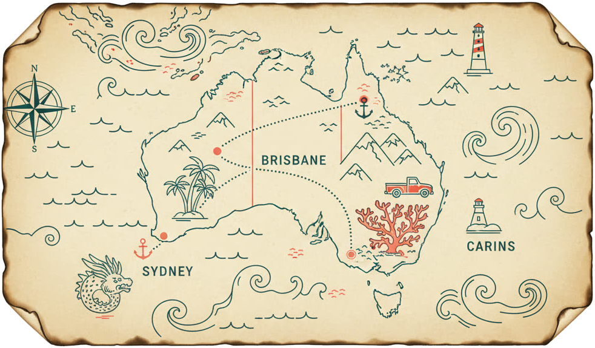

<meta charset="utf-8">
<meta name="viewport" content="width=device-width, initial-scale=1, viewport-fit=cover">
<meta name="theme-color" content="#0C2A38">
<meta name="robots" content="noindex, nofollow">
<meta name="apple-mobile-web-app-capable" content="yes">
<meta name="mobile-web-app-capable" content="yes">
<meta name="apple-mobile-web-app-status-bar-style" content="black-translucent">
<link rel="icon" href="data:image/svg+xml,%3Csvg xmlns='http://www.w3.org/2000/svg' viewBox='0 0 100 100'%3E%3Ctext y='.9em' font-size='86'%3E%F0%9F%97%BA%EF%B8%8F%3C/text%3E%3C/svg%3E">
<link rel="manifest" href="manifest.webmanifest">
<title>Australië 2026 — Familie Kablau</title>
<style>
@font-face{font-family:'Fraunces';font-style:normal;font-weight:600;font-display:swap;src:url(font/fraunces-latin.woff2) format('woff2')}
@font-face{font-family:'Fraunces';font-style:italic;font-weight:600;font-display:swap;src:url(font/fraunces-italic-latin.woff2) format('woff2')}
:root{
  --ground:#E7EEEC; --ground-2:#dde7e4; --foam:#F6FAF8; --paper:#FBF6EA; --parch:#F3E9D2;
  --ink:#0A2530; --ink-soft:#4A6470; --ink-faint:#7E949C;
  --red:#E8463A; --red-2:#ff6f62; --teal:#0E7C8B; --teal-2:#0a606c;
  --deep:#05202B; --deep-2:#0B3242; --deep-3:#11475b;
  --aqua:#46C8CE; --sand:#C9B184; --sand-2:#E8DCC2; --gold:#D8B25A; --green:#3f8f5e;
  --line:rgba(10,37,48,.14); --line-2:rgba(10,37,48,.08);
  --sh-sm:0 1px 2px rgba(10,37,48,.06);
  --sh:0 1px 0 rgba(10,37,48,.04), 0 14px 30px -22px rgba(5,32,43,.5);
  --sh-lg:0 2px 4px rgba(10,37,48,.05), 0 30px 60px -30px rgba(5,32,43,.65);
  --shadow:var(--sh);
  --mono:ui-monospace,"SF Mono","Cascadia Code",Consolas,"Liberation Mono",monospace;
  --sans:system-ui,-apple-system,"Segoe UI",Roboto,Helvetica,Arial,sans-serif;
  --disp:"Fraunces","Iowan Old Style","Palatino Linotype","Times New Roman",Georgia,serif;
  --r:18px; --r-sm:12px; --r-lg:24px; --tabh:66px;
  --ease:cubic-bezier(.22,.61,.36,1); --ease-out:cubic-bezier(.16,1,.3,1);
}
*{box-sizing:border-box}
html,body{margin:0;padding:0}
html{scroll-behavior:smooth}
body{background:
   radial-gradient(120% 60% at 50% -10%, #eef4f1 0%, var(--ground) 46%, var(--ground-2) 100%) fixed;
   color:var(--ink);font-family:var(--sans);line-height:1.55;-webkit-font-smoothing:antialiased;text-rendering:optimizeLegibility;overflow-x:hidden}
#contours{position:fixed;inset:0;width:100%;height:100%;z-index:0;opacity:.5;pointer-events:none;mix-blend-mode:multiply}
img{max-width:100%;display:block}
a{color:var(--teal);text-decoration-thickness:1px;text-underline-offset:2px}
button{font-family:inherit}
::selection{background:var(--aqua);color:var(--deep)}
.eyebrow{font-family:var(--mono);font-size:11px;letter-spacing:.28em;text-transform:uppercase;color:var(--teal);margin:0}
.mono{font-family:var(--mono)}

/* ---- app shell ---- */
#app{position:relative;z-index:1;max-width:780px;margin:0 auto;padding:0 0 calc(var(--tabh) + env(safe-area-inset-bottom) + 22px)}
.view{display:none}
.view.active{display:block;animation:viewIn .5s var(--ease-out)}
@keyframes viewIn{from{opacity:0;transform:translateY(10px) scale(.992)}to{opacity:1;transform:none}}
@keyframes kb{from{transform:scale(1.07)}to{transform:scale(1)}}
.pad{padding:0 clamp(16px,4.5vw,30px)}
.h2{font-family:var(--disp);font-weight:600;letter-spacing:-.015em;font-size:clamp(22px,4.4vw,30px);margin:0 0 5px;line-height:1.05}
.h2 .num{font-family:var(--mono);font-size:11px;color:var(--red);letter-spacing:.14em;margin-right:10px;font-weight:500;vertical-align:middle}
.sub{color:var(--ink-soft);font-size:14.5px;margin:0 0 20px;max-width:60ch}
.rule{height:1px;background:linear-gradient(90deg,transparent,var(--line),transparent);border:0;margin:30px 0}

/* ---- hero ---- */
.hero{position:relative;overflow:hidden;margin-bottom:8px}
.hero img{width:100%;height:auto;display:block;animation:kb 1.5s var(--ease-out) both}
.hero .cap{position:absolute;left:0;right:0;bottom:0;padding:24px clamp(16px,4.5vw,30px) 22px;background:none;color:var(--ink);text-align:center}
.hero .cap .eyebrow{color:var(--ink);font-weight:700;letter-spacing:.24em;text-shadow:0 0 5px rgba(251,246,234,.95),0 1px 1px rgba(251,246,234,.95)}
.hero h1{font-family:var(--disp);font-weight:600;letter-spacing:-.02em;line-height:.98;font-size:clamp(34px,9.5vw,62px);margin:8px 0 7px;text-shadow:0 0 6px rgba(251,246,234,.85)}
.hero h1 em{font-style:italic;color:var(--red)}
.hero .who{font-family:var(--mono);font-size:12px;color:var(--ink);font-weight:700;letter-spacing:.02em;text-shadow:0 0 5px rgba(251,246,234,.95),0 1px 1px rgba(251,246,234,.95)}
.banner{width:100%;margin:0 0 16px}

/* ---- cards ---- */
.card{background:var(--foam);border:1px solid var(--line);border-radius:var(--r);box-shadow:var(--sh);overflow:hidden}
.section{margin:24px 0}

/* ---- vandaag ---- */
.today-wrap{padding:0 clamp(16px,4.5vw,30px)}
.count{background:
   radial-gradient(115% 95% at 84% -15%, rgba(216,178,90,.55), transparent 56%),
   radial-gradient(95% 85% at 6% 118%, rgba(232,70,58,.32), transparent 60%),
   linear-gradient(162deg,#0e3a45,#06222c);
   color:#fdf6e9;border-radius:var(--r-lg);padding:30px 24px;text-align:center;box-shadow:var(--sh-lg);position:relative;overflow:hidden;margin-top:18px;border:1px solid rgba(255,255,255,.07)}
.count::after{content:"";position:absolute;left:0;top:0;height:3px;width:100%;background:linear-gradient(90deg,var(--red),var(--gold),var(--aqua),var(--red));background-size:300% 100%;animation:shimmer 8s linear infinite}
@keyframes shimmer{to{background-position:300% 0}}
.count::before{content:"";position:absolute;inset:0;background:radial-gradient(72% 55% at 72% 0,rgba(216,178,90,.22),transparent 70%);pointer-events:none}
.count .big{font-family:var(--disp);font-weight:600;font-size:clamp(56px,18vw,104px);line-height:.9;color:#fff;letter-spacing:-.03em;position:relative}
.count .lbl{font-family:var(--mono);text-transform:uppercase;letter-spacing:.24em;font-size:11.5px;color:var(--gold);margin-top:8px;position:relative}
.count .meta{font-size:14.5px;color:#ecdcc0;margin-top:14px;position:relative}
.btn{display:inline-flex;align-items:center;gap:8px;font-family:var(--mono);font-size:12.5px;letter-spacing:.05em;text-transform:uppercase;background:var(--red);color:#fff;border:0;border-radius:999px;padding:12px 18px;cursor:pointer;text-decoration:none;box-shadow:0 10px 26px -12px rgba(232,70,58,.85);transition:transform .25s var(--ease),box-shadow .25s var(--ease),filter .25s}
.btn:hover{filter:brightness(1.05);transform:translateY(-1px)}
.btn:active{transform:translateY(1px) scale(.98)}
.btn.ghost{background:rgba(255,255,255,.04);color:var(--ink);border:1px solid var(--line);box-shadow:none}
.count .btn.ghost{color:#eaf6f6;border-color:rgba(255,255,255,.22)}
.btn.teal{background:var(--teal);box-shadow:0 10px 26px -12px rgba(14,124,139,.85)}
.btn.sm{padding:9px 13px;font-size:11px}
.btnrow{display:flex;flex-wrap:wrap;gap:10px;margin-top:18px;justify-content:center}

/* warme zon-glow over de coverfoto */
.cover-glow{position:absolute;inset:0;pointer-events:none;background:radial-gradient(78% 44% at 72% 4%,rgba(216,178,90,.42),transparent 60%);mix-blend-mode:screen}

/* home: sectiekoppen */
.home-sec{margin:34px 0 0;padding:0 clamp(16px,4.5vw,30px)}
.home-sec .eyebrow{margin-bottom:4px}
.sec-head{display:flex;align-items:flex-end;justify-content:space-between;gap:12px;margin-bottom:15px}
.sec-title{font-family:var(--disp);font-weight:600;font-size:clamp(21px,4.8vw,28px);letter-spacing:-.015em;margin:0;line-height:1.04}
.sec-hint{flex:0 0 auto;font-family:var(--mono);font-size:10.5px;letter-spacing:.14em;text-transform:uppercase;color:var(--ink-faint);white-space:nowrap;padding-bottom:4px}

/* home: hoogtepunten-carousel */
.hl-rail{display:flex;gap:13px;overflow-x:auto;scroll-snap-type:x mandatory;-webkit-overflow-scrolling:touch;scrollbar-width:none;padding:2px clamp(16px,4.5vw,30px) 10px;margin:0 calc(-1*clamp(16px,4.5vw,30px))}
.hl-rail::-webkit-scrollbar{display:none}
.hl-card{flex:0 0 auto;width:min(72vw,226px);scroll-snap-align:start;position:relative;border:0;padding:0;border-radius:var(--r);overflow:hidden;cursor:pointer;background:var(--deep-2);box-shadow:var(--sh-lg);aspect-ratio:3/4;transition:transform .3s var(--ease),box-shadow .3s var(--ease)}
.hl-card:active{transform:scale(.975)}
@media(hover:hover){.hl-card:hover{transform:translateY(-3px)}}
.hl-card img{position:absolute;inset:0;width:100%;height:100%;object-fit:cover;transition:transform .6s var(--ease)}
@media(hover:hover){.hl-card:hover img{transform:scale(1.06)}}
.hl-card .hl-cap{position:absolute;left:0;right:0;bottom:0;padding:36px 15px 15px;text-align:left;background:linear-gradient(180deg,transparent,rgba(5,32,43,.28) 36%,rgba(5,32,43,.9));color:#fff}
.hl-card .hl-name{display:block;font-family:var(--disp);font-weight:600;font-size:19px;line-height:1.04;letter-spacing:-.01em;text-shadow:0 2px 12px rgba(5,32,43,.5)}
.hl-card .hl-meta{display:block;font-family:var(--mono);font-size:10.5px;letter-spacing:.05em;color:rgba(255,255,255,.86);margin-top:5px}
.hl-card .hl-badge{position:absolute;top:11px;left:11px;font-family:var(--mono);font-size:10px;letter-spacing:.04em;font-weight:600;background:var(--red);color:#fff;border-radius:999px;padding:4px 9px;box-shadow:var(--sh)}

/* home: snelkoppel-tegels */
.tiles{display:grid;grid-template-columns:1fr 1fr;gap:12px}
.tile{display:flex;flex-direction:column;align-items:flex-start;gap:2px;text-align:left;border:1px solid var(--line);background:var(--foam);border-radius:var(--r);padding:16px 16px 17px 19px;cursor:pointer;box-shadow:var(--sh);position:relative;overflow:hidden;transition:transform .25s var(--ease),box-shadow .25s var(--ease),border-color .25s}
.tile:active{transform:scale(.975)}
@media(hover:hover){.tile:hover{transform:translateY(-2px);box-shadow:var(--sh-lg);border-color:var(--accent,var(--teal))}}
.tile::before{content:"";position:absolute;left:0;top:0;bottom:0;width:4px;background:var(--accent,var(--teal))}
.tile .ti{font-size:25px;line-height:1;margin-bottom:8px}
.tile .tt{font-family:var(--disp);font-weight:600;font-size:17px;letter-spacing:-.01em;color:var(--ink)}
.tile .ts{font-size:12.5px;color:var(--ink-soft);line-height:1.35}

/* home: offline-tip */
.home-tip{margin:28px clamp(16px,4.5vw,30px) 0;font-size:12.5px;color:var(--ink-soft);text-align:center;line-height:1.55}
.home-tip b{color:var(--ink)}

/* ---- day navigator ---- */
.daynav{position:sticky;top:0;z-index:20;background:rgba(231,238,236,.82);backdrop-filter:saturate(1.4) blur(14px);-webkit-backdrop-filter:saturate(1.4) blur(14px);border-bottom:1px solid var(--line);padding:11px clamp(16px,4.5vw,30px)}
.daynav .row{display:flex;align-items:center;gap:9px}
.navbtn{flex:0 0 auto;width:40px;height:40px;border-radius:50%;border:1px solid var(--line);background:var(--foam);font-size:17px;cursor:pointer;display:flex;align-items:center;justify-content:center;color:var(--ink);transition:background .2s,transform .2s,border-color .2s;box-shadow:var(--sh-sm)}
.navbtn:hover{border-color:var(--teal);color:var(--teal)}
.navbtn:active{transform:scale(.92)}
.navbtn:disabled{opacity:.32;box-shadow:none}
.daypick{flex:1;min-width:0;text-align:center}
.daypick .d{font-family:var(--disp);font-weight:600;font-size:17px;line-height:1.1;letter-spacing:-.01em}
.daypick .dt{font-family:var(--mono);font-size:11px;color:var(--ink-soft);letter-spacing:.04em}
.chips{display:flex;gap:6px;overflow-x:auto;padding:10px 0 2px;-webkit-overflow-scrolling:touch;scrollbar-width:none;scroll-snap-type:x proximity}
.chips::-webkit-scrollbar{display:none}
.chip{flex:0 0 auto;font-family:var(--mono);font-size:11px;border:1px solid var(--line);background:var(--foam);color:var(--ink-soft);border-radius:9px;padding:6px 9px;cursor:pointer;white-space:nowrap;scroll-snap-align:center;transition:background .2s,color .2s,border-color .2s,transform .2s}
.chip:active{transform:scale(.94)}
.chip.on{background:var(--ink);color:#fff;border-color:var(--ink);box-shadow:var(--sh)}
.chip.dive{border-color:var(--red);color:var(--red)}
.chip.dive.on{background:var(--red);border-color:var(--red);color:#fff}

/* ---- day detail ---- */
.dayhero{position:relative;border-radius:var(--r);overflow:hidden;margin:16px clamp(16px,4.5vw,30px) 0;box-shadow:var(--sh-lg)}
.dayhero img{width:100%;height:210px;object-fit:cover;animation:kb 1.1s var(--ease-out) both}
.dayhero .ov{position:absolute;inset:0;background:linear-gradient(180deg,rgba(5,32,43,.05),rgba(5,32,43,.82))}
.dayhero .txt{position:absolute;left:0;right:0;bottom:0;padding:18px}
.dayhero .txt h3{font-family:var(--disp);font-weight:600;font-size:26px;margin:6px 0 2px;letter-spacing:-.015em;color:#fff;text-shadow:0 2px 16px rgba(5,32,43,.5)}
.badge{display:inline-flex;align-items:center;gap:5px;font-family:var(--mono);font-size:10px;letter-spacing:.12em;text-transform:uppercase;padding:5px 9px;border-radius:999px;font-weight:600;backdrop-filter:blur(4px)}
.b-reis{background:rgba(70,200,206,.22);color:#bff2f4}
.b-vrij{background:rgba(63,143,94,.28);color:#c6f3d4}
.b-vlucht{background:rgba(255,255,255,.2);color:#fff}
.b-rif{background:var(--red);color:#fff}
.daybody{padding:0 clamp(16px,4.5vw,30px)}
.lead{font-size:16px;margin:18px 0 4px;color:var(--ink);line-height:1.6}
.vandaag{background:var(--foam);border:1px solid var(--line);border-left:3px solid var(--teal);border-radius:var(--r-sm);padding:14px 16px;margin:14px 0 4px;box-shadow:var(--sh)}
.vd-head{display:flex;align-items:center;gap:8px;font-family:var(--mono);font-size:11px;letter-spacing:.13em;text-transform:uppercase;color:var(--teal);margin:0 0 9px}
.vd-ic{font-size:15px}
.vd-kop{font-family:var(--mono);font-size:12.5px;color:var(--ink);background:rgba(14,124,139,.08);border:1px solid rgba(14,124,139,.16);border-radius:8px;padding:8px 11px;margin:0 0 11px;line-height:1.55}
.vd-list{list-style:none;margin:0;padding:0}
.vd-list li{position:relative;padding:3px 0 3px 18px;font-size:14.5px;line-height:1.5;color:var(--ink)}
.vd-list li:before{content:'';position:absolute;left:3px;top:10px;width:6px;height:6px;border-radius:50%;background:var(--teal);opacity:.65}
.appver{font-family:var(--mono);font-size:11px;color:var(--ink-soft);text-align:center;margin:16px 0 8px;opacity:.75}
.appver-actions{text-align:center;margin:2px 0 14px}
.kvbar{display:flex;flex-wrap:wrap;gap:7px;margin:14px 0}
.kvbar .k{font-family:var(--mono);font-size:11px;background:var(--foam);border:1px solid var(--line);border-radius:9px;padding:6px 10px;color:var(--ink-soft);box-shadow:var(--sh-sm)}
.kvbar .k b{color:var(--ink)}

/* day segmented control (minder scrollen) */
.segctl{display:flex;gap:7px;margin:18px 0 2px;overflow-x:auto;scrollbar-width:none;-webkit-overflow-scrolling:touch;padding-bottom:2px}
.segctl::-webkit-scrollbar{display:none}
.segbtn{flex:0 0 auto;display:inline-flex;align-items:center;gap:7px;font-family:var(--mono);font-size:11.5px;letter-spacing:.05em;text-transform:uppercase;border:1px solid var(--line);background:var(--foam);color:var(--ink-soft);border-radius:999px;padding:9px 14px;cursor:pointer;box-shadow:var(--sh-sm);white-space:nowrap;transition:background .25s,color .25s,border-color .25s,transform .2s}
.segbtn .si{font-size:14px;line-height:1}
.segbtn .sc{font-family:var(--mono);font-size:10px;background:rgba(10,37,48,.08);color:var(--ink-soft);border-radius:999px;padding:1px 7px}
.segbtn:active{transform:scale(.95)}
.segbtn.on{background:var(--ink);color:#fff;border-color:var(--ink);box-shadow:var(--sh)}
.segbtn.on .sc{background:rgba(255,255,255,.22);color:#fff}
.segpane{animation:segIn .42s var(--ease-out)}
@keyframes segIn{from{opacity:0;transform:translateY(9px)}to{opacity:1;transform:none}}
@media (prefers-reduced-motion:reduce){.segpane{animation:none}}

.block{background:var(--foam);border:1px solid var(--line);border-radius:var(--r-sm);padding:16px 17px;margin:15px 0;box-shadow:var(--sh);position:relative}
.block h4{font-family:var(--mono);font-size:11px;letter-spacing:.14em;text-transform:uppercase;color:var(--red);margin:0 0 11px;display:flex;align-items:center;gap:8px}
.block.teal h4{color:var(--teal)}
.block p{margin:0 0 8px;font-size:14.5px}
.block p:last-child{margin-bottom:0}

/* route */
.route-line{display:flex;align-items:center;gap:10px;font-family:var(--disp);font-weight:600;font-size:18px;flex-wrap:wrap;letter-spacing:-.01em}
.route-line .arr{color:var(--red)}
.route-meta{display:flex;gap:8px;flex-wrap:wrap;margin:11px 0 4px}
.pill{font-family:var(--mono);font-size:11.5px;background:rgba(14,124,139,.1);color:var(--teal);border-radius:999px;padding:6px 11px;border:1px solid rgba(14,124,139,.16)}
.onderweg{list-style:none;margin:13px 0 0;padding:0}
.ow{display:flex;gap:12px;padding:12px 0;border-top:1px dashed var(--line)}
.ow .ic{flex:0 0 auto;width:32px;height:32px;border-radius:10px;background:var(--parch);display:flex;align-items:center;justify-content:center;font-size:15px;box-shadow:var(--sh-sm)}
.ow .c{min-width:0;flex:1}
.ow .nm{font-weight:700;font-size:14.5px;display:flex;flex-wrap:wrap;gap:6px;align-items:baseline}
.ow .det{font-size:13px;color:var(--ink-soft);margin:2px 0 4px}
.ow .om{font-family:var(--mono);font-size:11px;color:var(--red)}
.maplink{display:inline-flex;align-items:center;gap:4px;font-family:var(--mono);font-size:11px;color:var(--teal);text-decoration:none;border:1px solid var(--line);border-radius:8px;padding:4px 9px;margin-top:3px;transition:background .2s,border-color .2s}
.maplink:hover{background:var(--foam);border-color:var(--teal)}

/* weather strip */
.weer{display:flex;align-items:center;gap:15px;background:linear-gradient(120deg,#e9f3f1,#f6efe0);border:1px solid var(--line);border-radius:var(--r-sm);padding:14px 16px;margin:16px 0;box-shadow:var(--sh-sm)}
.weer .t{font-family:var(--disp);font-weight:600;font-size:28px;line-height:1;white-space:nowrap;letter-spacing:-.02em}
.weer .t small{font-size:13px;color:var(--ink-soft);font-weight:600}
.weer .wt{font-size:13px;color:var(--ink)}
.weer .wt b{display:block;font-family:var(--mono);font-size:10px;letter-spacing:.1em;text-transform:uppercase;color:var(--teal);margin-bottom:2px}

/* sights */
.sights{display:grid;gap:12px;margin-top:6px}
.sight{display:flex;gap:13px;background:var(--foam);border:1px solid var(--line);border-radius:var(--r-sm);padding:14px;box-shadow:var(--sh);transition:transform .3s var(--ease),box-shadow .3s var(--ease),border-color .3s}
.sight:hover{transform:translateY(-2px);box-shadow:var(--sh-lg);border-color:var(--line)}
.sight.must{border-color:rgba(232,70,58,.42)}
.sight.must::before{content:"";position:absolute}
.sight .ic{flex:0 0 auto;width:40px;height:40px;border-radius:12px;background:linear-gradient(140deg,var(--sand-2),#f0e7d2);display:flex;align-items:center;justify-content:center;font-size:18px;box-shadow:var(--sh-sm)}
.sight .c{min-width:0;flex:1}
.sight .nm{font-family:var(--disp);font-weight:600;font-size:16.5px;line-height:1.2;display:flex;flex-wrap:wrap;gap:6px;align-items:center;letter-spacing:-.01em}
.tag{font-family:var(--mono);font-size:9.5px;letter-spacing:.06em;text-transform:uppercase;padding:3px 7px;border-radius:7px;font-weight:600}
.t-must{background:var(--red);color:#fff}
.t-kid{background:rgba(63,143,94,.18);color:#2f7a4c}
.t-act{background:rgba(14,124,139,.14);color:var(--teal)}
.sight .af{font-family:var(--mono);font-size:11px;color:var(--ink-soft);margin:4px 0}
.sight .ds{font-size:14px;margin:4px 0;line-height:1.55}
.sight .tp{font-size:12.5px;color:var(--ink-soft);background:rgba(201,177,132,.16);border-radius:9px;padding:7px 10px;margin-top:7px;border-left:2px solid var(--sand)}
.sight .tp b{color:var(--teal);font-family:var(--mono);font-size:10px;letter-spacing:.08em}

/* ---- galleries (swipe) ---- */
.gal{position:relative}
.gal-track{display:flex;gap:6px;overflow-x:auto;scroll-snap-type:x mandatory;-webkit-overflow-scrolling:touch;border-radius:var(--r-sm);scrollbar-width:none}
.gal-track::-webkit-scrollbar{display:none}
.gal-im{flex:0 0 100%;scroll-snap-align:center;width:100%;aspect-ratio:3/2;object-fit:cover;border-radius:var(--r-sm);background:var(--sand-2);display:block}
.gal.mini .gal-im{aspect-ratio:16/10}
.gal-nav{position:absolute;top:50%;transform:translateY(-50%);width:32px;height:32px;border-radius:50%;border:0;background:rgba(5,32,43,.5);color:#fff;font-size:16px;cursor:pointer;display:flex;align-items:center;justify-content:center;z-index:2;opacity:.9;backdrop-filter:blur(4px);transition:background .2s,transform .2s}
.gal-nav:active{transform:translateY(-50%) scale(.9)}
.gal-nav.prev{left:8px}.gal-nav.next{right:8px}
.gal-count{position:absolute;right:10px;bottom:10px;font-family:var(--mono);font-size:10px;background:rgba(5,32,43,.62);color:#fff;padding:3px 8px;border-radius:999px;z-index:2;backdrop-filter:blur(4px)}
.gal-dots{display:flex;gap:5px;justify-content:center;margin-top:8px;flex-wrap:wrap}
.gal-dots i{width:6px;height:6px;border-radius:50%;background:var(--line);transition:background .25s,width .25s}
.gal-dots i.on{background:var(--teal);width:16px;border-radius:3px}
.galsec{margin:16px 0}
.galsec h4{font-family:var(--mono);font-size:11px;letter-spacing:.14em;text-transform:uppercase;color:var(--teal);margin:0 0 9px}
.dur{color:var(--teal);font-weight:600}
.sight.hasgal{flex-direction:column;align-items:stretch}
.sight-row{display:flex;gap:13px}

/* ---- leg route mini-map ---- */
.legmap{width:100%;height:215px;border:1px solid var(--line);border-radius:var(--r-sm);background:linear-gradient(180deg,#dbe9e7,#eef5f2);margin:4px 0 2px;display:block;box-shadow:var(--sh-sm)}
.legmap .roadcas{fill:none;stroke:#fff;stroke-width:6;vector-effect:non-scaling-stroke;opacity:.8;stroke-linejoin:round;stroke-linecap:round}
.legmap .road{fill:none;stroke:var(--red);stroke-width:3;vector-effect:non-scaling-stroke;stroke-linejoin:round;stroke-linecap:round}
.legmap .ld{fill:#e8ddc2;stroke:#cdbb95;stroke-width:.6;vector-effect:non-scaling-stroke}
.legcap{display:flex;justify-content:space-between;font-family:var(--mono);font-size:11px;color:var(--ink-soft);margin-bottom:8px}
.legcap b{color:var(--ink)}

/* ---- MapLibre route map (echte kaart, offline pmtiles) ---- */
.glmap{position:relative;width:100%;height:250px;border:1px solid var(--line);border-radius:var(--r-sm);overflow:hidden;margin:4px 0 2px;box-shadow:var(--sh-sm);background:linear-gradient(180deg,#dbe9e7,#eef5f2)}
.glmap .maplibregl-ctrl-group{background:rgba(251,246,234,.94);border:1px solid var(--line);box-shadow:var(--sh-sm)}
.glmap .maplibregl-ctrl-group button+button{border-top:1px solid var(--line)}
.glmap .maplibregl-ctrl-attrib{font-size:9px;background:rgba(251,246,234,.7)}
.glmap-load{position:absolute;inset:0;display:flex;align-items:center;justify-content:center;font-family:var(--mono);font-size:11px;letter-spacing:.08em;text-transform:uppercase;color:var(--ink-soft);z-index:2;background:linear-gradient(180deg,#dbe9e7,#eef5f2)}
.glmap-load .sp{width:15px;height:15px;border:2px solid var(--line);border-top-color:var(--teal);border-radius:50%;margin-right:9px;animation:glspin .8s linear infinite}
@keyframes glspin{to{transform:rotate(360deg)}}
.glstop{transform:translate(-50%,-50%);width:9px;height:9px;border-radius:50%;background:#5f8b93;border:2px solid #fbf7ee;box-shadow:0 1px 3px rgba(5,32,43,.4);cursor:default}
.glpin{display:flex;flex-direction:column;align-items:center;transform:translate(-50%,-100%);cursor:default}
.glpin .pin{width:16px;height:16px;border-radius:50% 50% 50% 0;transform:rotate(-45deg);border:2px solid #fbf7ee;box-shadow:0 2px 5px rgba(5,32,43,.45)}
.glpin.from .pin{background:#1f9d57}
.glpin.to .pin{background:var(--red)}
.glpin .lbl{font-family:var(--mono);font-size:9.5px;font-weight:600;color:var(--ink);background:rgba(251,246,234,.92);border-radius:5px;padding:2px 6px;margin-top:3px;white-space:nowrap;box-shadow:var(--sh-sm);max-width:120px;overflow:hidden;text-overflow:ellipsis}
@media (prefers-reduced-motion:reduce){.glmap-load .sp{animation:none}}
/* MapLibre popup in zeekaart-stijl */
.maplibregl-popup{max-width:264px!important}
.maplibregl-popup-content{background:var(--paper);border:1px solid var(--line);border-radius:var(--r-sm);box-shadow:var(--sh-lg);padding:13px 15px 14px;font-family:var(--sans);color:var(--ink)}
.maplibregl-popup-content h4{font-family:var(--disp);font-weight:600;font-size:16.5px;margin:0 0 3px;letter-spacing:-.01em}
.maplibregl-popup-content .mt{font-family:var(--mono);font-size:10.5px;letter-spacing:.05em;text-transform:uppercase;color:var(--ink-soft);margin-bottom:7px}
.maplibregl-popup-content p{font-size:12.5px;margin:0 0 9px;color:var(--ink)}
.maplibregl-popup-close-button{font-size:19px;color:var(--ink-soft);padding:1px 7px;line-height:1.2}
.maplibregl-popup-close-button:hover{background:none;color:var(--ink)}
.maplibregl-popup-anchor-top .maplibregl-popup-tip{border-bottom-color:var(--paper)}
.maplibregl-popup-anchor-bottom .maplibregl-popup-tip{border-top-color:var(--paper)}
.maplibregl-popup-anchor-left .maplibregl-popup-tip{border-right-color:var(--paper)}
.maplibregl-popup-anchor-right .maplibregl-popup-tip{border-left-color:var(--paper)}
.maplibregl-popup-anchor-top-left .maplibregl-popup-tip,.maplibregl-popup-anchor-top-right .maplibregl-popup-tip{border-bottom-color:var(--paper)}
.maplibregl-popup-anchor-bottom-left .maplibregl-popup-tip,.maplibregl-popup-anchor-bottom-right .maplibregl-popup-tip{border-top-color:var(--paper)}
.mapbox .maptop{z-index:3}.mapbox .glmap-load{z-index:4}

/* ---- maps waypoint checklist ---- */
.mapsel{margin:13px 0 0}
.mapsel .mh{font-family:var(--mono);font-size:11px;letter-spacing:.12em;text-transform:uppercase;color:var(--ink-soft);margin-bottom:4px}
.mapsel label{display:flex;align-items:center;gap:10px;padding:9px 0;border-top:1px dashed var(--line);font-size:13.5px;cursor:pointer}
.mapsel input{width:18px;height:18px;accent-color:var(--teal);flex:0 0 auto;margin:0}
.mapsel label.fixed{color:var(--ink-soft);cursor:default}
.mapsel .tag{margin-left:auto}

/* dive panel */
.dive-panel{background:
   radial-gradient(120% 90% at 85% -10%, var(--deep-3), transparent 55%),
   linear-gradient(168deg,var(--deep-2),var(--deep));
   color:#dfeef0;border-radius:var(--r);padding:20px;box-shadow:var(--sh-lg);position:relative;overflow:hidden;margin:15px 0;border:1px solid rgba(255,255,255,.06)}
.dive-panel::after{content:"";position:absolute;left:0;top:0;height:3px;width:100%;background:linear-gradient(90deg,var(--red),var(--aqua))}
.dive-panel .top{display:flex;flex-wrap:wrap;align-items:center;gap:8px;margin-bottom:10px}
.dtag{font-family:var(--mono);font-size:10px;letter-spacing:.12em;text-transform:uppercase;padding:5px 10px;border-radius:999px;font-weight:600}
.dtag.go{background:var(--red);color:#fff}.dtag.mid{background:rgba(70,200,206,.18);color:var(--aqua)}.dtag.fin{background:#fff;color:var(--ink)}
.dive-panel h3{font-family:var(--disp);font-weight:600;font-size:22px;margin:2px 0;color:#fff;letter-spacing:-.015em}
.dive-panel .where{font-family:var(--mono);font-size:11.5px;color:var(--aqua)}
.dgrid{display:grid;grid-template-columns:repeat(auto-fit,minmax(130px,1fr));gap:12px 16px;margin:13px 0}
.dgrid b{display:block;font-family:var(--mono);font-size:10px;letter-spacing:.08em;text-transform:uppercase;color:var(--aqua);margin-bottom:3px}
.dgrid div{font-size:13px;color:#cfe4e7}
.dive-panel .why{font-size:14px;color:#dfeef0;margin:6px 0;line-height:1.55}
.dive-panel .warn{margin-top:11px;font-size:12.5px;color:#ffd9d3;background:rgba(232,70,58,.16);border-left:3px solid var(--red);padding:9px 12px;border-radius:0 9px 9px 0}
.dive-panel .kidnote{margin-top:9px;font-size:12.5px;color:#d6f3ee;background:rgba(70,200,206,.12);border-left:3px solid var(--aqua);padding:9px 12px;border-radius:0 9px 9px 0}
.dots{display:inline-flex;gap:4px;vertical-align:-1px}.dot{width:10px;height:10px;border-radius:50%;background:rgba(255,255,255,.22)}.dot.on{background:var(--aqua)}

/* ---- reis-tijdlijn (zeeroute / havens aan een route) ---- */
.tl-wrap{overflow-x:auto;-webkit-overflow-scrolling:touch;scrollbar-width:none;padding:8px 0 4px;scroll-snap-type:x proximity}
.tl-wrap::-webkit-scrollbar{display:none}
.tl{position:relative;display:inline-flex;align-items:flex-start;min-width:100%;padding:0 4px}
.tl::before{content:"";position:absolute;left:26px;right:26px;top:28px;height:2px;background:linear-gradient(90deg,transparent,var(--line) 5%,var(--sand) 50%,var(--line) 95%,transparent);z-index:0;border-radius:2px}
.tl-stop{position:relative;z-index:1;flex:0 0 auto;display:flex;flex-direction:column;align-items:center;padding:0 6px;cursor:pointer;background:none;border:0;font-family:inherit;scroll-snap-align:center}
.tl-name{height:18px;line-height:18px;font-family:var(--disp);font-weight:600;font-size:12.5px;letter-spacing:-.01em;color:var(--ink);white-space:nowrap;max-width:108px;overflow:hidden;text-overflow:ellipsis}
.tl-node{height:22px;width:100%;display:flex;align-items:center;justify-content:center;position:relative}
.tl-dot{width:15px;height:15px;border-radius:50%;background:var(--teal);border:3px solid var(--foam);box-shadow:0 0 0 1px var(--line),var(--sh-sm);transition:transform .2s}
.tl-stop:hover .tl-dot{transform:scale(1.2)}
.tl-stop.past .tl-dot{background:#9bb0b6}
.tl-stop.dive .tl-dot{box-shadow:0 0 0 2px var(--red),var(--sh-sm)}
.tl-stop.now .tl-name{color:var(--red)}
.tl-stop.now .tl-dot{background:var(--red);animation:tlpulse 2.2s ease-in-out infinite}
@keyframes tlpulse{0%,100%{box-shadow:0 0 0 1px var(--red),0 0 0 4px rgba(232,70,58,.22)}50%{box-shadow:0 0 0 1px var(--red),0 0 0 9px rgba(232,70,58,0)}}
.tl-nights{margin-top:7px;font-family:var(--mono);font-size:10.5px;color:var(--ink);background:var(--foam);border:1px solid var(--line);border-radius:999px;padding:2px 9px;white-space:nowrap;box-shadow:var(--sh-sm)}
.tl-nights b{color:var(--teal);font-size:12px;font-weight:700}
.tl-stop.now .tl-nights b{color:var(--red)}
.tl-days{margin-top:4px;font-family:var(--mono);font-size:9.5px;letter-spacing:.02em;color:var(--teal);white-space:nowrap}
.tl-stop.past .tl-days{color:var(--ink-faint)}
.tl-stop.now .tl-days{color:var(--red)}
/* klikbare dag-stippen (Dagen-pagina) */
.tl-days-row{display:flex;gap:4px;margin-top:7px;justify-content:center;flex-wrap:wrap;max-width:132px}
.tl-day{width:22px;height:22px;border-radius:50%;border:1px solid var(--line);background:var(--foam);color:var(--ink-soft);font-family:var(--mono);font-size:9.5px;line-height:1;display:flex;align-items:center;justify-content:center;cursor:pointer;padding:0;box-shadow:var(--sh-sm);transition:transform .15s,background .2s,color .2s,border-color .2s}
.tl-day:hover{transform:scale(1.14);border-color:var(--teal);color:var(--teal)}
.tl-day.past{color:var(--ink-faint);background:var(--ground-2)}
.tl-day.dive{border-color:var(--red);color:var(--red)}
.tl-day.on{background:var(--red);color:#fff;border-color:var(--red);box-shadow:0 0 0 3px rgba(232,70,58,.2)}
.tl-date{margin-top:3px;font-family:var(--mono);font-size:10px;color:var(--ink-soft);white-space:nowrap}
/* tijdlijn-balk op de Dagen-pagina */
.daytl{padding:4px 0 6px;border-bottom:1px solid var(--line-2);margin-bottom:2px}
.tl-mini .tl-name{font-size:11.5px;max-width:92px}
.tl-mini .tl-nights{font-size:10px;padding:2px 8px}
.tl-mini .tl-stop{padding:0 5px}
.tl-dive{margin-top:5px;font-family:var(--mono);font-size:9px;letter-spacing:.04em;text-transform:uppercase;color:var(--red);background:rgba(232,70,58,.1);border-radius:999px;padding:2px 7px;white-space:nowrap}
.tl-fly{cursor:default}
.tl-fly .tl-node{color:var(--ink-faint);font-size:14px}
.tl-fly .tl-foot{margin-top:7px;font-family:var(--mono);font-size:9px;letter-spacing:.06em;text-transform:uppercase;color:var(--ink-faint);white-space:nowrap}

/* map */
.mapbox{position:relative;margin:8px clamp(16px,4.5vw,30px);border:1px solid var(--line);border-radius:var(--r);overflow:hidden;background:linear-gradient(180deg,#dbe9e7,#eef5f2);box-shadow:var(--sh-lg);height:min(68vh,560px);touch-action:none}
#map{width:100%;height:100%;display:block;cursor:grab}
#map:active{cursor:grabbing}
#map #gLabels,#map #gLand,#map #gRoute{pointer-events:none}
.mapctl{position:absolute;right:10px;bottom:10px;display:flex;flex-direction:column;gap:6px}
.mapctl button{width:40px;height:40px;border-radius:11px;border:1px solid var(--line);background:rgba(251,246,234,.96);font-size:18px;cursor:pointer;box-shadow:var(--sh);color:var(--ink);transition:transform .15s}
.mapctl button:active{transform:scale(.92)}
.maptop{position:absolute;left:10px;top:10px;display:flex;gap:6px;flex-wrap:wrap;max-width:70%}
.maptop button{font-family:var(--mono);font-size:10.5px;letter-spacing:.05em;text-transform:uppercase;border:1px solid var(--line);background:rgba(251,246,234,.96);border-radius:999px;padding:7px 11px;cursor:pointer;color:var(--ink);box-shadow:var(--sh)}
.mhint{font-family:var(--mono);font-size:10.5px;color:var(--ink-soft);text-align:center;margin:3px clamp(16px,4.5vw,30px) 0}
.mappop{position:absolute;background:var(--paper);border:1px solid var(--line);border-radius:var(--r-sm);padding:12px 14px;box-shadow:var(--sh-lg);max-width:240px;z-index:5;display:none}
.mappop h4{font-family:var(--disp);font-weight:600;font-size:16px;margin:0 0 3px}
.mappop .mt{font-family:var(--mono);font-size:11px;color:var(--ink-soft);margin-bottom:8px}
.mappop .x{position:absolute;top:6px;right:10px;cursor:pointer;color:var(--ink-soft);font-size:16px}

/* packing / lists / accordions */
.acc{margin:0 clamp(16px,4.5vw,30px)}
.pk{margin:16px 0}
.pk h4{font-family:var(--disp);font-weight:600;font-size:16px;margin:0 0 9px;letter-spacing:-.01em}
.pk ul{list-style:none;margin:0;padding:0;display:grid;gap:7px}
.pk li{display:flex;gap:10px;align-items:flex-start;font-size:13.5px}
.pk li::before{content:"";flex:0 0 auto;width:16px;height:16px;margin-top:2px;border:1.5px solid var(--teal);border-radius:5px;background:rgba(14,124,139,.06)}
.drv{display:flex;gap:13px;padding:14px 0;border-top:1px solid var(--line)}
.drv .ic{flex:0 0 auto;font-size:22px;width:36px;text-align:center}
.drv .nm{font-weight:700;font-size:14.5px}
.drv .tx{font-size:13.5px;color:var(--ink-soft)}
.btab{width:100%;border-collapse:collapse;font-size:13.5px}
.btab td{padding:10px 9px;border-top:1px solid var(--line);vertical-align:top}
.btab td:first-child{font-weight:600}
.btab td:nth-child(2){font-family:var(--mono);color:var(--teal);white-space:nowrap}
.btab .nt{display:block;color:var(--ink-soft);font-size:11.5px}
.warnc{background:linear-gradient(180deg,#fff5f3,#fff)} .warnc{border:1px solid rgba(232,70,58,.34);border-left:4px solid var(--red);border-radius:0 var(--r-sm) var(--r-sm) 0;padding:13px 15px;margin:13px 0;box-shadow:var(--sh-sm)}
.warnc h4{margin:0 0 4px;font-size:14px;color:#b3271c;font-family:var(--disp);font-weight:600}
.warnc p{margin:0;font-size:13px;color:var(--ink)}
.info-tbl{width:100%;border-collapse:collapse;font-size:13.5px}
.info-tbl td{padding:9px 7px;border-top:1px solid var(--line);vertical-align:top}
.info-tbl td:first-child{font-family:var(--mono);font-size:11px;color:var(--ink-soft);width:40%}
.flt{display:flex;justify-content:space-between;gap:10px;padding:11px 0;border-top:1px solid var(--line);font-size:13px}
.flt .fn{font-family:var(--mono);color:var(--teal);font-size:11px}
.acclist a{display:flex;justify-content:space-between;gap:10px;padding:10px 0;border-top:1px solid var(--line);text-decoration:none;color:var(--ink);font-size:13.5px;align-items:center;transition:padding-left .2s}
.acclist a:hover{padding-left:4px}
.acclist a .n{font-family:var(--mono);font-size:11px;color:var(--ink-soft)}
.credits{font-size:11.5px;color:var(--ink-soft);line-height:1.7}

/* ---- accordions (progressive disclosure) ---- */
.acc-group{margin:18px clamp(16px,4.5vw,30px) 0;display:flex;flex-direction:column;gap:11px}
.acc-item{background:var(--foam);border:1px solid var(--line);border-radius:var(--r-sm);box-shadow:var(--sh);overflow:hidden;transition:border-color .3s,box-shadow .3s}
.acc-item.open{border-color:rgba(14,124,139,.34);box-shadow:var(--sh-lg)}
.acc-head{width:100%;display:flex;align-items:center;gap:13px;padding:15px 16px;background:none;border:0;cursor:pointer;text-align:left;color:var(--ink)}
.acc-head .acc-ic{flex:0 0 auto;width:38px;height:38px;border-radius:11px;background:linear-gradient(140deg,var(--sand-2),#f0e7d2);display:flex;align-items:center;justify-content:center;font-size:19px;box-shadow:var(--sh-sm);transition:transform .3s var(--ease)}
.acc-item.open .acc-head .acc-ic{transform:scale(1.06) rotate(-3deg)}
.acc-head .acc-tt{flex:1;min-width:0}
.acc-head .acc-t{font-family:var(--disp);font-weight:600;font-size:17px;letter-spacing:-.01em;line-height:1.15}
.acc-head .acc-sub{display:block;font-family:var(--mono);font-size:10.5px;letter-spacing:.05em;color:var(--ink-faint);margin-top:3px;text-transform:uppercase}
.acc-chev{flex:0 0 auto;width:27px;height:27px;border-radius:50%;display:flex;align-items:center;justify-content:center;color:var(--teal);font-size:13px;transition:transform .38s var(--ease),background .25s;background:rgba(14,124,139,.09)}
.acc-item.open .acc-chev{transform:rotate(180deg);background:rgba(14,124,139,.18)}
.acc-head:active .acc-chev{transform:scale(.9)}
.acc-item.open .acc-head:active .acc-chev{transform:rotate(180deg) scale(.9)}
.acc-body{display:grid;grid-template-rows:0fr;transition:grid-template-rows .4s var(--ease)}
.acc-item.open .acc-body{grid-template-rows:1fr}
.acc-inner{overflow:hidden;min-height:0}
.acc-pad{padding:2px 16px 17px}
.acc-pad>.sub{margin-bottom:14px}
.acc-pad>.pk:first-child,.acc-pad>.banner:first-child{margin-top:0}
.acc-pad>.block:first-child,.acc-pad>.drv:first-child{margin-top:0;border-top:0}
@media (prefers-reduced-motion:reduce){.acc-body{transition:none}.acc-chev,.acc-head .acc-ic{transition:none}}

/* bottom tabbar */
.tabbar{position:fixed;left:0;right:0;bottom:0;z-index:50;height:calc(var(--tabh) + env(safe-area-inset-bottom));padding-bottom:env(safe-area-inset-bottom);background:rgba(251,246,234,.86);backdrop-filter:saturate(1.5) blur(16px);-webkit-backdrop-filter:saturate(1.5) blur(16px);border-top:1px solid var(--line);display:flex;justify-content:center;box-shadow:0 -8px 30px -22px rgba(5,32,43,.6)}
.tab{position:relative;flex:1;max-width:156px;display:flex;flex-direction:column;align-items:center;justify-content:center;gap:3px;border:0;background:none;cursor:pointer;color:var(--ink-soft);padding:6px 2px;transition:color .25s}
.tab .ti{font-size:21px;line-height:1;transition:transform .3s var(--ease-out)}
.tab .tlbl{font-family:var(--mono);font-size:9.5px;letter-spacing:.05em;text-transform:uppercase}
.tab.on{color:var(--red)}
.tab.on .ti{transform:translateY(-3px) scale(1.08)}
.tab.on::before{content:"";position:absolute;top:8px;width:5px;height:5px;border-radius:50%;background:var(--red);box-shadow:0 0 10px var(--red)}

/* ---- reveal / motion ---- */
.reveal{opacity:0;transform:translateY(16px);transition:opacity .6s var(--ease-out),transform .6s var(--ease-out)}
.reveal.in{opacity:1;transform:none}
.reveal[data-rv="scale"]{transform:scale(.96)}
.reveal[data-rv="left"]{transform:translateX(-18px)}
.reveal[data-rv="right"]{transform:translateX(18px)}
.reveal.in[data-rv]{transform:none}
.stagger>*{opacity:0;transform:translateY(14px);transition:opacity .55s var(--ease-out),transform .55s var(--ease-out)}
.stagger.in>*{opacity:1;transform:none}
.stagger.in>*:nth-child(2){transition-delay:.06s}
.stagger.in>*:nth-child(3){transition-delay:.12s}
.stagger.in>*:nth-child(4){transition-delay:.18s}
.stagger.in>*:nth-child(5){transition-delay:.24s}
.stagger.in>*:nth-child(n+6){transition-delay:.3s}

/* gentle item stagger — state-conveying, pure CSS (always completes, auto-off under reduce) */
@media (prefers-reduced-motion:no-preference){
  .sights>.sight,.onderweg>.ow{animation:itemUp .5s var(--ease-out) both}
  .sights>.sight:nth-child(1),.onderweg>.ow:nth-child(1){animation-delay:.02s}
  .sights>.sight:nth-child(2),.onderweg>.ow:nth-child(2){animation-delay:.08s}
  .sights>.sight:nth-child(3),.onderweg>.ow:nth-child(3){animation-delay:.14s}
  .sights>.sight:nth-child(n+4),.onderweg>.ow:nth-child(n+4){animation-delay:.2s}
}
@keyframes itemUp{from{opacity:0;transform:translateY(11px)}to{opacity:1;transform:none}}

@media (prefers-reduced-motion:reduce){
  *{scroll-behavior:auto!important}
  .reveal,.stagger>*{opacity:1!important;transform:none!important;transition:none!important}
  .view.active{animation:none}
  .hero img,.dayhero img{transform:none!important;transition:none!important;animation:none!important}
  .count::after{animation:none}
  .tl-stop.now .tl-dot{animation:none}
}
@media (min-width:760px){ .dayhero img{height:260px} }

</style>

<canvas id="contours" aria-hidden="true"></canvas>
<main id="app"></main>

<nav class="tabbar" id="tabbar"></nav>

<script>
const DATA ={"meta":{"titel":"Australië 2026","ondertitel":"Familie Kablau · Sydney → Cairns","start":"2026-07-13","eind":"2026-08-13","dagen":32,"nachten":31,"route":"Oostkust: Sydney → Cairns","reizigers":["Bart","Joice","Storm (12)","Boris (10)"]},"stopsOrder":["sydney","katoomba","portmacquarie","byron","noosa","fraser","rockhampton","eungella","airlie","reef","magnetic","atherton","daintree","palmcove"],"basisLabel":{"LG":"Logies (kamer)","LO":"Logies + ontbijt","VP":"Volpension (alle maaltijden)"},"stops":{"sydney":{"key":"sydney","naamKort":"Sydney","regio":"New South Wales","coord":{"lat":-33.8688,"lon":151.2093},"overDezePlek":"Sydney is de bruisende, zonnige havenstad van Australie, gebouwd rond een van de mooiste natuurlijke havens ter wereld. Iconen als het Opera House en de Harbour Bridge wisselen af met stadsstranden, veerboten en groene parken. In juli (winter) is het mild en vaak helder, met rustige toeristendrukte. Ideaal om met het gezin twee dagen op adem te komen na de lange vlucht, voordat de roadtrip begint.","verblijf":{"naam":"Adina Apartment Hotel Sydney Town Hall","adres":"511 Kent Street, Sydney NSW 2000, Australia","coord":{"lat":-33.8835,"lon":151.2055},"beschrijving":"Apartmenthotel pal naast Central Station in Haymarket, op loopafstand van Chinatown en de Darling Harbour-kant. Ruime self-catering studio's en appartementen met kitchenette en wasmachine, plus verwarmd buitenzwembad, gym en sauna. Praktisch en gezinsvriendelijk: je kookt zelf, hebt veel ruimte en treinen/lightrail vertrekken voor de deur. Let op: niet te verwarren met Adina Sydney Town Hall (511 Kent St).","mapsLink":"https://www.google.com/maps/search/?api=1&query=Adina%20Apartment%20Hotel%20Sydney%20Town%20Hall%2C%20511%20Kent%20Street%2C%20Sydney","imgs":["img/w2-sydney/0.jpg","img/w2-sydney/1.jpg","img/w2-sydney/2.jpg","img/w2-sydney/3.jpg","img/w2-sydney/4.jpg","img/w2-sydney/5.jpg","img/w2-sydney/6.jpg","img/w2-sydney/7.jpg"]},"weer":{"min":8,"max":17,"omschrijving":"Juli is de koudste en tegelijk droogste maand: vaak heldere, milde dagen rond 16-18 graden, frisse nachten rond 8 graden. Veel zon, kans op een enkele regenbui.","watAantrekken":"Laagjes: T-shirt of dunne trui overdag, een warme jas/fleece voor de avond en aan het water. Comfortabele wandelschoenen voor de kustpaden."},"bezienswaardigheden":[{"naam":"Sydney Opera House & Circular Quay","type":"bezienswaardigheid","afstandKm":3,"afstandMin":12,"mustSee":true,"kidOK":true,"actief":false,"beschrijving":"Het wereldberoemde zeilvormige operahuis aan de haven, met Circular Quay als bruisend vertrekpunt voor veerboten en wandelingen langs de waterkant.","tip":"Loop rond zonsondergang van Circular Quay naar de Royal Botanic Garden (Mrs Macquarie's Chair) voor het mooiste uitzicht op Opera House en brug samen. Met het OV (trein/light rail) ben je er zo, parkeren in de stad is duur.","coord":{"lat":-33.8568,"lon":151.2153},"mapsLink":"https://www.google.com/maps/search/?api=1&query=Sydney%20Opera%20House%2C%20Sydney%2C%20Australia","imgs":["img/s-sydney-0/0.jpg","img/s-sydney-0/1.jpg","img/s-sydney-0/2.jpg"],"duur":"2-3 u"},{"naam":"Sydney Harbour Bridge & BridgeClimb","type":"actief","afstandKm":3,"afstandMin":12,"mustSee":true,"kidOK":true,"actief":true,"beschrijving":"De stalen 'Coathanger' over de haven; je kunt er gratis overheen wandelen of met BridgeClimb naar de top klimmen voor een spectaculair panorama.","tip":"BridgeClimb kan vanaf 8 jaar, dus Storm (12) en Boris (10) mogen mee. Gratis alternatief: wandel over het voetpad aan de oostkant of beklim de Pylon Lookout (goedkoop, kindvriendelijk).","coord":{"lat":-33.8523,"lon":151.2108},"mapsLink":"https://www.google.com/maps/search/?api=1&query=Sydney%20Harbour%20Bridge%2C%20Sydney%2C%20Australia","imgs":["img/s-sydney-1/0.jpg","img/s-sydney-1/1.jpg","img/s-sydney-1/2.jpg"],"duur":"1-3 u"},{"naam":"Taronga Zoo","type":"bezienswaardigheid","afstandKm":8,"afstandMin":25,"mustSee":true,"kidOK":true,"actief":true,"beschrijving":"Dierentuin in glooiend bushland aan de haven met Australische dieren (koala's, kangoeroes, kookaburra's) en een onvergetelijk uitzicht op de skyline.","tip":"Ga met de veerboot vanaf Circular Quay (12 min) en neem de Sky Safari-kabelbaan naar de bovenste ingang, zodat je naar beneden wandelt. Reken op een halve tot hele dag.","coord":{"lat":-33.843,"lon":151.2412},"mapsLink":"https://www.google.com/maps/search/?api=1&query=Taronga%20Zoo%2C%20Sydney%2C%20Australia","imgs":["img/s-sydney-2/0.jpg","img/s-sydney-2/1.jpg","img/s-sydney-2/2.jpg"],"duur":"halve dag"},{"naam":"Manly veerboot & strand","type":"strand","afstandKm":12,"afstandMin":35,"mustSee":true,"kidOK":true,"actief":true,"beschrijving":"Klassieke veertocht (30 min) vanaf Circular Quay naar de ontspannen strandwijk Manly, met palmlaan, surfstrand en de korte Manly to Shelly Beach-wandeling.","tip":"De veerboot zelf is de attractie: ga aan stuurboord zitten voor het beste uitzicht. Combineer met het kindvriendelijke wandelpaadje langs het water naar Shelly Beach.","coord":{"lat":-33.7969,"lon":151.2876},"mapsLink":"https://www.google.com/maps/search/?api=1&query=Manly%20Beach%2C%20Sydney%2C%20Australia","imgs":["img/s-sydney-3/0.jpg","img/s-sydney-3/1.jpg","img/s-sydney-3/2.jpg"],"duur":"halve dag"},{"naam":"Bondi to Coogee Coastal Walk","type":"actief","afstandKm":8,"afstandMin":25,"mustSee":true,"kidOK":true,"actief":true,"beschrijving":"Spectaculaire 6 km kustwandeling langs zandstenen kliffen, verborgen baaitjes, oceaanbaden (Bronte, Clovelly) en uitkijkpunten waar je in de winter walvissen kunt spotten.","tip":"Loop van Bondi richting Coogee en neem onderweg een bus terug als de kids moe worden. Vroeg in de ochtend is het rustig en het licht prachtig; neem badspullen mee voor de beschutte rotszwembaden.","coord":{"lat":-33.8915,"lon":151.2767},"mapsLink":"https://www.google.com/maps/search/?api=1&query=Bondi%20to%20Coogee%20Coastal%20Walk%2C%20Sydney%2C%20Australia","imgs":["img/s-sydney-4/0.jpg","img/s-sydney-4/1.jpg"],"duur":"2-3 u"},{"naam":"Darling Harbour & SEA LIFE Aquarium","type":"bezienswaardigheid","afstandKm":2,"afstandMin":8,"mustSee":false,"kidOK":true,"actief":false,"beschrijving":"Levendig havenfront met het SEA LIFE Aquarium (haaien, dugong, pinguins), WILD LIFE Zoo, draaimolens en restaurants; perfect bij minder mooi weer.","tip":"Op loopafstand vanaf het hotel via Chinatown. Koop een combiticket online als je meerdere attracties wilt doen; ga 's ochtends vroeg om de drukte voor te zijn.","coord":{"lat":-33.8696,"lon":151.202},"mapsLink":"https://www.google.com/maps/search/?api=1&query=SEA%20LIFE%20Sydney%20Aquarium%2C%20Darling%20Harbour%2C%20Australia","imgs":[],"duur":"halve dag"},{"naam":"Royal Botanic Garden & Mrs Macquarie's Chair","type":"natuur","afstandKm":3,"afstandMin":12,"mustSee":false,"kidOK":true,"actief":true,"beschrijving":"Gratis, weelderige botanische tuin langs de haven met het beroemde uitkijkpunt Mrs Macquarie's Chair, waar Opera House en Harbour Bridge perfect in een beeld vallen.","tip":"Combineer met een wandeling vanaf Circular Quay; neem een picknick mee. Geweldig voor energieke kinderen die even willen rennen tussen het sightseeen door.","coord":{"lat":-33.8599,"lon":151.2228},"mapsLink":"https://www.google.com/maps/search/?api=1&query=Mrs%20Macquaries%20Chair%2C%20Sydney%2C%20Australia","imgs":["img/s-sydney-6/0.jpg"],"duur":"1-2 u"}],"img":"sydney","imgs":["img/hero/sydney.jpg","img/r-sydney/0.jpg","img/r-sydney/1.jpg","img/r-sydney/2.jpg","img/r-sydney/3.jpg","img/r-sydney/4.jpg","img/w-sydney/0.jpg","img/w-sydney/1.jpg","img/w-sydney/2.jpg","img/w-sydney/3.jpg","img/w-sydney/4.jpg","img/w-sydney/5.jpg","img/w-sydney/6.jpg","img/w-sydney/7.jpg","img/w-sydney/8.jpg","img/w-sydney/9.jpg","img/w-sydney/10.jpg","img/w-sydney/11.jpg","img/w-sydney/12.jpg","img/w-sydney/13.jpg","img/w-sydney/14.jpg"],"dagen":[2,3,4],"boeking":[{"code":"A","naam":"Adina Apartment Hotel Sydney Town Hall","inchecken":"2026-07-14","uitchecken":"2026-07-17","nachten":3,"basis":"LG","kamertype":"1x Premier Two Bedroom Apartment"}]},"katoomba":{"key":"katoomba","naamKort":"Katoomba","regio":"Blue Mountains, New South Wales","coord":{"lat":-33.7148,"lon":150.3119},"overDezePlek":"Katoomba is het hart van de Blue Mountains, een UNESCO-werelderfgoedgebied van diepe valleien, eucalyptusbossen en steile zandstenen kliffen die in een blauwige waas baden. Het bergstadje op ruim 1000 m hoogte ademt een nostalgische, kunstzinnige sfeer met art-deco-cafes. In de winter is het hier echt koud en helder, soms met ochtendvorst. De Three Sisters bij Echo Point zijn het onbetwiste hoogtepunt.","verblijf":{"naam":"Echo Point Discovery Motel","adres":"18 Echo Point Road, Katoomba NSW 2780","coord":{"lat":-33.729,"lon":150.3122},"beschrijving":"Eenvoudig, gemoedelijk 3,5-sterren motel op slechts ~200 m wandelen van Echo Point Lookout en de Three Sisters; ideale uitvalsbasis voor de bushwalks. Verwarmde kamers met eigen badkamer, flatscreen en gratis wifi, plus BBQ- en picknickfaciliteiten en gratis parkeren. Praktisch voor een korte overnachting dicht bij het hoogtepunt.","mapsLink":"https://www.google.com/maps/search/?api=1&query=Motel%20Echo%20Point%2C%20Katoomba%2C%20Australia","imgs":["img/h-katoomba/0.jpg","img/h-katoomba/1.jpg"]},"weer":{"min":3,"max":13,"omschrijving":"Echt winters op hoogte: dagen rond 10-13 graden, nachten dalend naar 2-4 graden met regelmatig ochtendvorst en ijs op de auto. Een enkele keer valt er zelfs sneeuw.","watAantrekken":"Warme winterjas, muts, handschoenen en sjaal voor 's ochtends en 's avonds; thermoshirt en stevige wandelschoenen. Het kan na zonsondergang snel afkoelen, dus pak echt warm in."},"bezienswaardigheden":[{"naam":"Echo Point Lookout & Three Sisters","type":"uitzicht","afstandKm":0.2,"afstandMin":2,"mustSee":true,"kidOK":true,"actief":false,"beschrijving":"Het beroemdste uitkijkpunt van de Blue Mountains, recht tegenover de drie rotszuilen 'The Three Sisters' boven de uitgestrekte Jamison Valley.","tip":"Loop vanaf het motel. Ga vroeg in de ochtend of bij zonsondergang voor het mooiste licht en de minste drukte; bij vorst is het pad glad, dus voorzichtig met de kids.","coord":{"lat":-33.732,"lon":150.3122},"mapsLink":"https://www.google.com/maps/search/?api=1&query=Echo%20Point%20Lookout%2C%20Katoomba%2C%20Australia","imgs":["img/s-katoomba-0/0.jpg","img/s-katoomba-0/1.jpg","img/s-katoomba-0/2.jpg"],"duur":"30-45 min"},{"naam":"Three Sisters Walk (Honeymoon Bridge)","type":"actief","afstandKm":0.3,"afstandMin":3,"mustSee":true,"kidOK":true,"actief":true,"beschrijving":"Korte, kindvriendelijke wandeling vanaf Echo Point die je via trappen tot bij de eerste 'Sister' en de Honeymoon Bridge brengt, met fraaie kijkjes in de vallei.","tip":"Het pad gaat steil omlaag en weer omhoog (veel trappen), dus reken op flink klimmen terug. Goed te doen voor actieve kinderen; neem water mee.","coord":{"lat":-33.7325,"lon":150.3135},"mapsLink":"https://www.google.com/maps/search/?api=1&query=Three%20Sisters%20Walk%2C%20Katoomba%2C%20Australia","imgs":["img/s-katoomba-1/0.jpg","img/s-katoomba-1/1.jpg"],"duur":"30-45 min"},{"naam":"Scenic World","type":"actief","afstandKm":3,"afstandMin":8,"mustSee":true,"kidOK":true,"actief":true,"beschrijving":"Belevingspark met 's werelds steilste kabelspoor (52 graden), een glazen Skyway-kabelbaan over de vallei en een houten boardwalk door regenwoud op de valleibodem.","tip":"Topattractie voor het gezin. Koop tickets online vooraf; ga bij opening om files te vermijden. Combineer de Railway naar beneden met de boardwalk en de Cableway terug.","coord":{"lat":-33.728,"lon":150.3008},"mapsLink":"https://www.google.com/maps/search/?api=1&query=Scenic%20World%2C%20Katoomba%2C%20Australia","imgs":[],"duur":"halve dag"},{"naam":"Katoomba Cascades & Cliff Drive","type":"natuur","afstandKm":2,"afstandMin":6,"mustSee":false,"kidOK":true,"actief":true,"beschrijving":"Rustige watervalletjes en picknickplek langs de schilderachtige Cliff Drive, met diverse korte paadjes en lookouts richting de Jamison Valley.","tip":"Mooie, rustige stop weg van de drukte van Echo Point. Combineer met een ritje over Cliff Drive richting Scenic World.","coord":{"lat":-33.7269,"lon":150.3055},"mapsLink":"https://www.google.com/maps/search/?api=1&query=Katoomba%20Cascades%2C%20Katoomba%2C%20Australia","imgs":[],"duur":"30-45 min"},{"naam":"Leura Cascades & dorpje Leura","type":"natuur","afstandKm":5,"afstandMin":9,"mustSee":false,"kidOK":true,"actief":true,"beschrijving":"Charmant bergdorpje met boetiekjes en cafes, plus de nabije Leura Cascades-picknickplek met een korte, schaduwrijke wandeling langs watervalletjes.","tip":"Fijn voor een warme chocolademelk na de kou. De korte Cascades-loop is gezinsvriendelijk; langere paden gaan steil de vallei in.","coord":{"lat":-33.7137,"lon":150.3322},"mapsLink":"https://www.google.com/maps/search/?api=1&query=Leura%20Cascades%2C%20Leura%2C%20Australia","imgs":[],"duur":"1-2 u"},{"naam":"Govetts Leap Lookout (Blackheath)","type":"uitzicht","afstandKm":14,"afstandMin":18,"mustSee":false,"kidOK":true,"actief":false,"beschrijving":"Op een na populairste uitzichtpunt van de Blue Mountains, met een weids panorama over de dramatische Grose Valley en de Bridal Veil-waterval.","tip":"Iets verder rijden, maar adembenemend en vaak rustiger dan Echo Point. Grote parkeerplaats; korte cliff-top paadjes voor wie de benen wil strekken.","coord":{"lat":-33.6356,"lon":150.312},"mapsLink":"https://www.google.com/maps/search/?api=1&query=Govetts%20Leap%20Lookout%2C%20Blackheath%2C%20Australia","imgs":["img/s-katoomba-5/0.jpg","img/s-katoomba-5/1.jpg","img/s-katoomba-5/2.jpg"],"duur":"30-45 min"}],"img":"katoomba","imgs":["img/hero/katoomba.jpg","img/w-katoomba/0.jpg","img/w-katoomba/1.jpg","img/w-katoomba/2.jpg","img/w-katoomba/3.jpg","img/w-katoomba/4.jpg","img/w-katoomba/5.jpg","img/w-katoomba/6.jpg","img/w-katoomba/7.jpg","img/w-katoomba/8.jpg","img/w-katoomba/9.jpg","img/w-katoomba/10.jpg","img/w-katoomba/11.jpg"],"dagen":[5],"boeking":[{"code":"B","naam":"Echo Point Discovery Motel","inchecken":"2026-07-17","uitchecken":"2026-07-18","nachten":1,"basis":"LG","kamertype":"2x King room"}]},"portmacquarie":{"key":"portmacquarie","naamKort":"Port Macquarie","regio":"Mid North Coast, New South Wales","coord":{"lat":-31.4333,"lon":152.9089},"overDezePlek":"Port Macquarie is een ontspannen kuststadje aan de monding van de Hastings River, beroemd om zijn koala's, lange stranden en een prachtige kustwandeling. Het subtropische klimaat maakt het ook in de winter mild en zonnig. Voor het gezin is dit een fijne overnachtingsplek na een lange rijdag: even uitwaaien op het strand of dieren spotten in het regenwoud.","verblijf":{"naam":"Sails Port Macquarie by Rydges","adres":"20 Park Street, Port Macquarie NSW 2444","coord":{"lat":-31.4276,"lon":152.9166},"beschrijving":"Port Macquarie's enige waterfront-resort, gelegen aan de jachthaven in de Settlement City-buurt, op ~10 min wandelen van het centrum. 4,5-sterren met verwarmd zwembad met cabanas, eigen steiger, gratis kano's, restaurant en bar. Comfortabel en gezinsvriendelijk; mooie ligging aan het water.","mapsLink":"https://www.google.com/maps/search/?api=1&query=Sails%20Port%20Macquarie%20by%20Rydges%2C%20Australia","imgs":["img/w2-portmacquarie/0.jpg","img/w2-portmacquarie/1.jpg","img/w2-portmacquarie/2.jpg","img/w2-portmacquarie/3.jpg","img/w2-portmacquarie/4.jpg","img/w2-portmacquarie/5.jpg","img/w2-portmacquarie/6.jpg","img/w2-portmacquarie/7.jpg"]},"weer":{"min":8,"max":18,"omschrijving":"Milde subtropische winter: aangename dagen rond 17-19 graden met veel zon, frisse nachten rond 8-9 graden. Relatief weinig regen.","watAantrekken":"Overdag T-shirt en dunne trui, 's avonds een jas. Zwemmen kan voor de durfals (zee ~20 graden), maar een wetsuit of alleen pootjebaden is realistischer in juli."},"bezienswaardigheden":[{"naam":"Tacking Point Lighthouse","type":"uitzicht","afstandKm":9,"afstandMin":14,"mustSee":true,"kidOK":true,"actief":false,"beschrijving":"Pittoreske witte vuurtoren uit 1879 op een landtong, met weids uitzicht over de kust en Lighthouse Beach; een topplek om dolfijnen en (in dit seizoen) walvissen te spotten.","tip":"Ga richting het einde van de middag voor mooi licht. Juli valt in het walvis-trekseizoen (mei-nov): neem een verrekijker mee.","coord":{"lat":-31.4869,"lon":152.942},"mapsLink":"https://www.google.com/maps/search/?api=1&query=Tacking%20Point%20Lighthouse%2C%20Port%20Macquarie%2C%20Australia","imgs":["img/s-portmacquarie-0/0.jpg","img/s-portmacquarie-0/1.jpg","img/s-portmacquarie-0/2.jpg"],"duur":"30-45 min"},{"naam":"Sea Acres Rainforest Centre & boardwalk","type":"natuur","afstandKm":6,"afstandMin":11,"mustSee":true,"kidOK":true,"actief":true,"beschrijving":"Vlakke 1,3 km boardwalk door dicht kustregenwoud, hoog in de boomkruinen, met kans op vogels, goannas en soms koala's; centrum met cafe en eco-displays.","tip":"Volledig toegankelijk (geen trappen, geschikt voor buggy). Zoek de 6 koala-sculpturen onderweg met de kinderen. Heerlijke, korte activiteit na de lange rit.","coord":{"lat":-31.4528,"lon":152.9333},"mapsLink":"https://www.google.com/maps/search/?api=1&query=Sea%20Acres%20Rainforest%20Centre%2C%20Port%20Macquarie%2C%20Australia","imgs":["img/s-portmacquarie-1/0.jpg","img/s-portmacquarie-1/1.jpg","img/s-portmacquarie-1/2.jpg"],"duur":"1-2 u"},{"naam":"Port Macquarie Coastal Walk (Town Beach deel)","type":"actief","afstandKm":2,"afstandMin":6,"mustSee":true,"kidOK":true,"actief":true,"beschrijving":"9 km kustpad van Town Beach naar Lighthouse Beach langs stranden, kliffen en de beschilderde 'Breakwall'-rotsen; goed in korte stukjes te wandelen.","tip":"Loop het stuk van Town Beach naar de Breakwall en bekijk de beschilderde rotsblokken (kinderen vinden dit leuk). De rest is buggy-vriendelijk.","coord":{"lat":-31.429,"lon":152.918},"mapsLink":"https://www.google.com/maps/search/?api=1&query=Port%20Macquarie%20Coastal%20Walk%2C%20Australia","imgs":["img/s-portmacquarie-2/0.jpg","img/s-portmacquarie-2/1.jpg","img/s-portmacquarie-2/2.jpg"],"duur":"1-2 u"},{"naam":"Guulabaa - Place of Koala (Koala Conservation Centre, Lake Innes)","type":"bezienswaardigheid","afstandKm":13,"afstandMin":16,"mustSee":true,"kidOK":true,"actief":false,"beschrijving":"Het nieuwe wilde-koala fok- en bezoekerscentrum waar je verzorgde koala's van dichtbij ziet; tijdelijk ook de basis van het beroemde Koala Hospital tijdens de verbouwing in town.","tip":"In juli 2026 is dit DE plek voor koala's (het hospital in town heropent pas eind 2026). Check openingstijden en het tijdstip van de keeper-talk vooraf.","coord":{"lat":-31.463,"lon":152.821},"mapsLink":"https://www.google.com/maps/search/?api=1&query=Guulabaa%20Place%20of%20Koala%2C%20Lake%20Innes%2C%20Australia","imgs":["img/s-portmacquarie-3/0.jpg","img/s-portmacquarie-3/1.jpg","img/s-portmacquarie-3/2.jpg"],"duur":"1-2 u"},{"naam":"Town Beach & Breakwall","type":"strand","afstandKm":2,"afstandMin":6,"mustSee":false,"kidOK":true,"actief":true,"beschrijving":"Centraal, beschut familiestrand bij de riviermonding, met de kleurrijk beschilderde Breakwall-rotsen en een speeltuin in de buurt.","tip":"Fijn voor een korte strandwandeling of speelmoment dicht bij het hotel. Patrouille-strand in het hoogseizoen; in de winter rustig.","coord":{"lat":-31.4283,"lon":152.9197},"mapsLink":"https://www.google.com/maps/search/?api=1&query=Town%20Beach%2C%20Port%20Macquarie%2C%20Australia","imgs":["img/s-portmacquarie-4/0.jpg","img/s-portmacquarie-4/1.jpg","img/s-portmacquarie-4/2.jpg"],"duur":"1-2 u"},{"naam":"Shelly Beach","type":"strand","afstandKm":7,"afstandMin":12,"mustSee":false,"kidOK":true,"actief":false,"beschrijving":"Geliefd, beschut strand met picknickplekken en BBQ-faciliteiten, populair voor zwemmen en een rustig familie-uitje aan zee.","tip":"Goede plek voor een picknick of BBQ. Combineer met Tacking Point Lighthouse, dat ligt vlakbij.","coord":{"lat":-31.472,"lon":152.929},"mapsLink":"https://www.google.com/maps/search/?api=1&query=Shelly%20Beach%2C%20Port%20Macquarie%2C%20Australia","imgs":["img/s-portmacquarie-5/0.jpg","img/s-portmacquarie-5/1.jpg","img/s-portmacquarie-5/2.jpg"],"duur":"1-2 u"}],"img":"portmacquarie","imgs":["img/hero/portmacquarie.jpg","img/r-portmacquarie/0.jpg","img/r-portmacquarie/1.jpg","img/r-portmacquarie/2.jpg","img/r-portmacquarie/3.jpg","img/r-portmacquarie/4.jpg","img/w-portmacquarie/0.jpg","img/w-portmacquarie/1.jpg","img/w-portmacquarie/2.jpg","img/w-portmacquarie/3.jpg","img/w-portmacquarie/4.jpg","img/w-portmacquarie/5.jpg","img/w-portmacquarie/6.jpg","img/w-portmacquarie/7.jpg","img/w-portmacquarie/8.jpg","img/w-portmacquarie/9.jpg","img/w-portmacquarie/10.jpg","img/w-portmacquarie/11.jpg"],"dagen":[6],"boeking":[{"code":"C","naam":"Sails Port Macquarie","inchecken":"2026-07-18","uitchecken":"2026-07-19","nachten":1,"basis":"LG","kamertype":"1x Garden Suite"}]},"byron":{"key":"byron","naamKort":"Byron Bay","regio":"NSW","coord":{"lat":-28.6434,"lon":153.6122},"overDezePlek":"Byron Bay is het oostelijkste puntje van het Australische vasteland: een relaxte surfplaats met lange stranden, een witte vuurtoren op de kaap en een groen, heuvelachtig achterland vol watervallen en markten. De sfeer is zonnig en alternatief, met goede cafes, surfscholen en veel ruimte om buiten te zijn. Vanaf de kliffen spot je in de winter regelmatig walvissen, dolfijnen en zeeschildpadden. Voor dit gezin is het de ideale mix van strand, wandelen en een dagje hinterland.","verblijf":{"naam":"Discovery Parks - Byron Bay","adres":"399 Ewingsdale Road, Byron Bay NSW 2481, Australie","coord":{"lat":-28.6261,"lon":153.5797},"beschrijving":"Ruim, groen vakantiepark net buiten het centrum (ongeveer 5 minuten rijden naar Main Beach) met cabins, glampingtenten en kampeer-/caravanplekken. Voorzieningen: zwembad, springkussen/jumping pillow, speeltuin, camp kitchen en een kiosk - prettig en praktisch voor een gezin met 4WD. Het park ligt aan de rustige westkant bij Ewingsdale, dus 's avonds rustig maar overdag snel in het dorp.","mapsLink":"https://www.google.com/maps/search/?api=1&query=Discovery%20Parks%20Byron%20Bay%2C%20Byron%20Bay%2C%20Australia","imgs":["img/w2-byron/0.jpg","img/w2-byron/1.jpg","img/w2-byron/2.jpg","img/w2-byron/3.jpg","img/w2-byron/4.jpg","img/w2-byron/5.jpg","img/w2-byron/6.jpg","img/w2-byron/7.jpg"]},"weer":{"min":12,"max":20,"omschrijving":"Juli is de koelste maand maar overwegend droog en zonnig (humide subtropisch). Dagen rond 19-20 graden, frisse nachten rond 11-13 graden. Zeewater ongeveer 19-20 graden - fris maar zwembaar voor durvers.","watAantrekken":"Lagen: 's ochtends en 's avonds een trui/fleece en lange broek, overdag T-shirt en korte broek. Zonnebrand en pet (UV blijft sterk), wandelschoenen voor de vuurtorenwandeling, badkleding mee voor strand/zwembad."},"bezienswaardigheden":[{"naam":"Cape Byron lighthouse walk (Walgun Cape Byron walking track)","type":"uitzicht","afstandKm":9,"afstandMin":15,"mustSee":true,"kidOK":true,"actief":true,"beschrijving":"Wandelroute van ongeveer 3,7 km lus langs klif, strand en regenwoud naar de witte vuurtoren op het oostelijkste punt van het vasteland. Onderweg het bordje 'Most Easterly Point of the Australian Mainland' en kans op walvissen en dolfijnen.","tip":"Ga vroeg (parkeerplaatsen vol/betaald rond het middaguur). De lus heeft trappen en klimmetjes; voor jonge benen prima in eigen tempo. Neem water mee.","coord":{"lat":-28.6384,"lon":153.6357},"mapsLink":"https://www.google.com/maps/search/?api=1&query=Cape%20Byron%20Lighthouse%2C%20Byron%20Bay%2C%20Australia","imgs":["img/s-byron-0/0.jpg","img/s-byron-0/1.jpg","img/s-byron-0/2.jpg"],"duur":"2-3 u"},{"naam":"The Pass & Wategos Beach","type":"strand","afstandKm":8,"afstandMin":13,"mustSee":true,"kidOK":true,"actief":true,"beschrijving":"The Pass is de beroemdste, lang-brekende surfgolf van Byron; Wategos is een beschut baaitje met zachte golven, ideaal om te leren surfen of te peddelen. Vaak dolfijnen in de branding te zien.","tip":"Wategos is rustiger en kindvriendelijker dan The Pass; goede plek voor een eerste surfles of bodyboarden. Surfscholen werken vaak op zachtere stranden zoals Clarkes.","coord":{"lat":-28.6363,"lon":153.6286},"mapsLink":"https://www.google.com/maps/search/?api=1&query=Wategos%20Beach%2C%20Byron%20Bay%2C%20Australia","imgs":["img/s-byron-1/0.jpg","img/s-byron-1/1.jpg","img/s-byron-1/2.jpg"],"duur":"1-2 u"},{"naam":"Main Beach Byron Bay","type":"strand","afstandKm":6,"afstandMin":10,"mustSee":false,"kidOK":true,"actief":true,"beschrijving":"Breed, bewaakt stadsstrand pal naast het centrum, met relatief zachte golven bij weinig swell - prettig om te pootjebaden, bodyboarden of een beginnerssurfles te volgen.","tip":"Zwem altijd tussen de rode-gele vlaggen. Vanaf hier loop je zo het dorp in voor fish & chips of een ijsje.","coord":{"lat":-28.6396,"lon":153.6151},"mapsLink":"https://www.google.com/maps/search/?api=1&query=Main%20Beach%2C%20Byron%20Bay%2C%20Australia","imgs":["img/s-byron-2/0.jpg","img/s-byron-2/1.jpg","img/s-byron-2/2.jpg"],"duur":"1-2 u"},{"naam":"Minyon Falls (Nightcap National Park)","type":"natuur","afstandKm":42,"afstandMin":50,"mustSee":true,"kidOK":true,"actief":true,"beschrijving":"Spectaculaire waterval die meer dan 100 meter het regenwouddal in valt, in het werelderfgoed-Gondwana-regenwoud. Vanaf de parkeerplaats een korte, makkelijke wandeling naar het uitkijkpunt.","tip":"Het uitkijkpunt is kort en gezinsvriendelijk; er zijn picknicktafels. De lus naar de voet van de val (4-5 uur) is voor de meeste kinderen te zwaar - houd het bij het lookout.","coord":{"lat":-28.6175,"lon":153.3411},"mapsLink":"https://www.google.com/maps/search/?api=1&query=Minyon%20Falls%20Lookout%2C%20Nightcap%20National%20Park%2C%20Australia","imgs":["img/s-byron-3/0.jpg","img/s-byron-3/1.jpg","img/s-byron-3/2.jpg"],"duur":"2-3 u"},{"naam":"Killen Falls","type":"natuur","afstandKm":20,"afstandMin":25,"mustSee":false,"kidOK":true,"actief":true,"beschrijving":"Verborgen 10 meter hoge waterval met een zwemkolk en grotachtige rotsen erachter, op korte afstand zuidoost van Byron. Korte wandeling naar het uitkijkpunt.","tip":"Het pad naar de voet is steiler maar kort; mooie plek voor een verfrissende duik (water is fris in juli). Stevige schoenen aan.","coord":{"lat":-28.7156,"lon":153.4869},"mapsLink":"https://www.google.com/maps/search/?api=1&query=Killen%20Falls%2C%20Tintenbar%2C%20Australia","imgs":[],"duur":"1-2 u"},{"naam":"Crystal Castle & Shambhala Gardens","type":"bezienswaardigheid","afstandKm":18,"afstandMin":22,"mustSee":false,"kidOK":true,"actief":false,"beschrijving":"Subtropische tuinen in het hinterland met de grootste reuzenkristallen ter wereld, een amethist-grot waar je in kunt zitten, Boeddha-beelden en een regenwoudwandeling. Kindvriendelijk met speeltuin en kristalspeurtocht.","tip":"Open 10-17u (laatste toegang 16u). Een 'Magical Quest'-speurtocht houdt de kinderen bezig. Goede regenachtige-of-luie-dag-optie.","coord":{"lat":-28.5719,"lon":153.4642},"mapsLink":"https://www.google.com/maps/search/?api=1&query=Crystal%20Castle%20Shambhala%20Gardens%2C%20Montecollum%2C%20Australia","imgs":[],"duur":"halve dag"},{"naam":"Bangalow & dorpsmarkt","type":"bezienswaardigheid","afstandKm":15,"afstandMin":18,"mustSee":false,"kidOK":true,"actief":false,"beschrijving":"Schilderachtig hinterland-dorpje met karakteristieke hoofdstraat, cafes en winkels; de grote Bangalow Market is op de 4e zondag van de maand (8-14.30u), de boerenmarkt op zaterdagochtend (7-11u).","tip":"Tijdens dit verblijf (zo 19 jul) valt de 3e zondag - dan is de grote Bangalow-markt er niet, maar de Byron-dorpsmarkt is wel op de 1e zondag. Check actuele datums; de zaterdag-boerenmarkt is altijd leuk.","coord":{"lat":-28.6886,"lon":153.5208},"mapsLink":"https://www.google.com/maps/search/?api=1&query=Bangalow%2C%20NSW%2C%20Australia","imgs":["img/s-byron-6/0.jpg","img/s-byron-6/1.jpg","img/s-byron-6/2.jpg"],"duur":"1-2 u"}],"img":"byron","imgs":["img/hero/byron.jpg","img/r-byron/0.jpg","img/r-byron/1.jpg","img/r-byron/2.jpg","img/r-byron/3.jpg","img/r-byron/4.jpg","img/w-byron/0.jpg","img/w-byron/1.jpg","img/w-byron/2.jpg","img/w-byron/3.jpg","img/w-byron/4.jpg","img/w-byron/5.jpg","img/w-byron/6.jpg","img/w-byron/7.jpg","img/w-byron/8.jpg","img/w-byron/9.png","img/w-byron/10.jpg","img/w-byron/11.jpg"],"dagen":[7,8],"boeking":[{"code":"D","naam":"Discovery Parks - Byron Bay","inchecken":"2026-07-19","uitchecken":"2026-07-21","nachten":2,"basis":"LG","kamertype":"1x Superior 2 Bedroom Cabin"}]},"noosa":{"key":"noosa","naamKort":"Boreen Point / Noosa Everglades","regio":"QLD","coord":{"lat":-26.3047,"lon":152.9869},"overDezePlek":"Boreen Point ligt aan het stille Lake Cootharaba, de toegangspoort tot de Noosa Everglades - een van slechts twee 'everglades' ter wereld, met thee-bruin, spiegelglad water (de 'River of Mirrors') door eeuwenoud regenwoud. Het is hier rustig en natuurlijk, met Great Sandy National Park om de hoek, terwijl het bruisende Noosa Heads met stranden en Hastings Street maar een halfuurtje rijden is. Perfect voor een gezin dat overdag wil kajakken en wandelen en 's avonds wil genieten van de stilte aan het meer.","verblijf":{"naam":"Habitat Noosa Everglades EcoCamp","adres":"Elanda Point Road, Elanda Point (Boreen Point) QLD 4565, Australie","coord":{"lat":-26.3047,"lon":152.9869},"beschrijving":"Award-winnend eco-kampterrein aan de oever van Lake Cootharaba, midden in 65 hectare natuur. Glamping in 'Paperbark' safari-tenten met echte bedden (vaak kingbed plus stapelbed) en eigen voorzieningen, plus camp- en caravanplekken. Op het terrein een bistro (CootharaBAR & Bistro) met eigen microbrouwerij, en watersportverhuur: kajaks, kano's, SUP's, waveskis en tinnies (kleine motorboten), plus disc golf in het bos.","mapsLink":"https://www.google.com/maps/search/?api=1&query=Habitat%20Noosa%20Everglades%20EcoCamp%2C%20Boreen%20Point%2C%20Australia","imgs":["img/h-noosa/0.jpg"]},"weer":{"min":13,"max":21,"omschrijving":"Juli is de koelste en droogste maand op de Sunshine Coast: zonnige, milde winterdagen rond 21 graden en frisse nachten rond 13 graden. Aan het meer kan het 's avonds en vroeg fris en vochtig aanvoelen.","watAantrekken":"Lagen: warme trui/jas voor de avond bij het meer en kampvuursfeer, lange broek voor 's ochtends, T-shirt en korte broek overdag. Zonnebrand en pet, waterschoenen/sandalen voor het kajakken, en een muggenmiddel (vochtig wetland-gebied)."},"bezienswaardigheden":[{"naam":"Noosa Everglades kajaktocht / cruise (River of Mirrors)","type":"natuur","afstandKm":0,"afstandMin":0,"mustSee":true,"kidOK":true,"actief":true,"beschrijving":"Peddel of vaar over Lake Cootharaba de Everglades in, waar spiegelglad theekleurig water het bos en de lucht weerkaatst - 'The Narrows' (de 'River of Mirrors') is het hoogtepunt. Tochten vertrekken direct vanaf Habitat Noosa.","tip":"Voor het gezin is een begeleide tour (bijv. Kanu Kapers) of de rustige Everglades-boottocht ideaal; kies een ochtend voor het stilste, spiegelende water. Zelf kajakken kan ook met huurboten van het kamp.","coord":{"lat":-26.2856,"lon":152.9889},"mapsLink":"https://www.google.com/maps/search/?api=1&query=Noosa%20Everglades%20The%20Narrows%2C%20Great%20Sandy%20National%20Park%2C%20Australia","imgs":["img/s-noosa-0/0.jpg","img/s-noosa-0/1.jpg","img/s-noosa-0/2.jpg"],"duur":"halve dag"},{"naam":"Noosa National Park kustwandeling (Coastal Walk)","type":"uitzicht","afstandKm":38,"afstandMin":35,"mustSee":true,"kidOK":true,"actief":true,"beschrijving":"Prachtige kustwandeling langs kliffen en baaitjes (Tea Tree Bay, Dolphin Point) met grote kans op koala's in de bomen en dolfijnen in zee. De volledige lus is ongeveer 10,8 km, maar je kunt makkelijk inkorten.","tip":"Loop vanaf de hoofdingang tot Tea Tree Bay of Hells Gates en keer dan om - korter en nog steeds spectaculair. Kijk omhoog bij Tea Tree Bay voor koala's.","coord":{"lat":-26.3839,"lon":153.0972},"mapsLink":"https://www.google.com/maps/search/?api=1&query=Noosa%20National%20Park%20Coastal%20Walk%2C%20Noosa%20Heads%2C%20Australia","imgs":["img/s-noosa-1/0.jpg","img/s-noosa-1/1.jpg","img/s-noosa-1/2.jpg"],"duur":"2-3 u"},{"naam":"Fairy Pools (Noosa National Park)","type":"natuur","afstandKm":40,"afstandMin":38,"mustSee":false,"kidOK":true,"actief":true,"beschrijving":"Twee natuurlijke getijdenpoeltjes tussen de basaltrotsen net voorbij het puntje van de kaap, bereikbaar via de kustwandeling (ongeveer 2,4 km vanaf de ingang). Helder, beschut water in een spectaculaire setting.","tip":"Alleen veilig en mooi bij laag tij - check het getij voor vertrek. Glad op de rotsen, dus waterschoenen en voorzichtig met de kinderen.","coord":{"lat":-26.3825,"lon":153.1042},"mapsLink":"https://www.google.com/maps/search/?api=1&query=Fairy%20Pools%2C%20Noosa%20National%20Park%2C%20Australia","imgs":["img/s-noosa-2/0.jpg","img/s-noosa-2/1.jpg","img/s-noosa-2/2.jpg"],"duur":"2-3 u"},{"naam":"Noosa Main Beach & Hastings Street","type":"strand","afstandKm":35,"afstandMin":32,"mustSee":true,"kidOK":true,"actief":true,"beschrijving":"Een van de weinige noord-gerichte stranden van Australie, dus beschut met zachte golven - bewaakt en ideaal voor gezinnen. Pal naast Hastings Street, de gezellige autovrije eet- en winkelstraat met cafes en ijssalons.","tip":"Zwem tussen de vlaggen; aan de oostkant rotspoeltjes om in te struinen. Combineer met de start van de kustwandeling die hier vlakbij begint.","coord":{"lat":-26.3858,"lon":153.0917},"mapsLink":"https://www.google.com/maps/search/?api=1&query=Noosa%20Main%20Beach%2C%20Noosa%20Heads%2C%20Australia","imgs":["img/s-noosa-3/0.jpg","img/s-noosa-3/1.jpg","img/s-noosa-3/2.jpg"],"duur":"halve dag"},{"naam":"Eumundi Markets","type":"bezienswaardigheid","afstandKm":28,"afstandMin":28,"mustSee":true,"kidOK":true,"actief":false,"beschrijving":"De grootste kunst- en ambachtsmarkt van Australie met meer dan 600 kraampjes: streetfood, lokale makers, muziek en sfeer in het historische dorpje Eumundi. Open op woensdag en zaterdag.","tip":"Tijdens dit verblijf valt woensdag 22 jul - perfect getimed (8-14u). Ga 's ochtends voor de beste keuze en het minste gedrang; neem honger en wat contant geld mee.","coord":{"lat":-26.4769,"lon":152.9531},"mapsLink":"https://www.google.com/maps/search/?api=1&query=Eumundi%20Markets%2C%20Eumundi%2C%20Australia","imgs":["img/s-noosa-4/0.jpg","img/s-noosa-4/1.jpg","img/s-noosa-4/2.jpg"],"duur":"2-3 u"},{"naam":"Lake Cootharaba watersport (vanaf het kamp)","type":"actief","afstandKm":0,"afstandMin":0,"mustSee":false,"kidOK":true,"actief":true,"beschrijving":"Het ondiepe, rustige Lake Cootharaba is ideaal om vanaf het strandje van Habitat Noosa te SUP'en, kanoen of een tinnie te huren. Prachtige zonsondergangen over het water.","tip":"Het meer is ondiep en relatief veilig - leuk voor de jongste om te leren peddelen. Pak een SUP of kano voor een uurtje voor of na het avondeten.","coord":{"lat":-26.2964,"lon":152.9856},"mapsLink":"https://www.google.com/maps/search/?api=1&query=Lake%20Cootharaba%2C%20Boreen%20Point%2C%20Australia","imgs":["img/s-noosa-5/0.jpg","img/s-noosa-5/1.jpg"],"duur":"1-2 u"},{"naam":"Glass House Mountains lookout","type":"uitzicht","afstandKm":78,"afstandMin":65,"mustSee":false,"kidOK":true,"actief":false,"beschrijving":"Panoramisch uitkijkpunt op de vulkanische bergpieken van de Glass House Mountains, met zicht tot de kust, Brisbane en Moreton Island. Korte fotogenieke bos-wandeling en gratis toegang.","tip":"Combineer goed met een dagje Australia Zoo (beide bij Beerwah/Glasshouse). Alle wegen zijn verhard. Helder weer = beste uitzicht.","coord":{"lat":-26.9,"lon":152.9583},"mapsLink":"https://www.google.com/maps/search/?api=1&query=Glass%20House%20Mountains%20Lookout%2C%20Beerburrum%2C%20Australia","imgs":["img/s-noosa-6/0.jpg","img/s-noosa-6/1.jpg","img/s-noosa-6/2.jpg"],"duur":"30-45 min"}],"img":"noosa","imgs":["img/hero/noosa.jpg","img/r-noosa/0.jpg","img/w-noosa/0.jpg","img/w-noosa/1.jpg","img/w-noosa/2.jpg","img/w-noosa/3.jpg","img/w-noosa/4.jpg","img/w-noosa/5.jpg","img/w-noosa/6.jpg","img/w-noosa/7.jpg","img/w-noosa/8.jpg","img/w-noosa/9.jpg","img/w-noosa/10.jpg","img/w-noosa/11.jpg"],"dagen":[9,10,11],"boeking":[{"code":"E","naam":"Habitat Noosa","inchecken":"2026-07-21","uitchecken":"2026-07-24","nachten":3,"basis":"LG","kamertype":"1x Paperbark Glamping Tent"}]},"fraser":{"key":"fraser","naamKort":"Fraser Island / K'gari","regio":"Fraser Coast, Queensland","coord":{"lat":-25.3925,"lon":153.042},"overDezePlek":"K'gari (vroeger Fraser Island) is het grootste zandeiland ter wereld en UNESCO-werelderfgoed: 123 km lang, met regenwoud dat letterlijk op zand groeit, glasheldere zoetwatermeren en een eindeloos breed strand dat dienstdoet als snelweg. Er liggen geen geasfalteerde wegen buiten de resorts; alles loopt over zandtracks die alleen met een echte 4WD te berijden zijn. Kingfisher Bay aan de beschutte westkant is de groenste, rustigste uitvalsbasis met dingo's, kookaburra's en spectaculaire zonsondergangen over de Great Sandy Strait. Voor het gezin is dit twee dagen avontuur: zwemmen in Lake McKenzie, drijven door Eli Creek en het Maheno-wrak op het strand.","verblijf":{"naam":"Kingfisher Bay Resort","adres":"Kingfisher Bay, North White Cliffs, K'gari (Fraser Island) QLD 4581, Australia","coord":{"lat":-25.3925,"lon":153.042},"beschrijving":"Bekroond eco-resort aan de westkust van K'gari, gebouwd tegen de duinhelling tussen het bush zodat alle gebouwen onder de boomtoppen blijven. Hotelkamers en zelfvoorzienende villa's, meerdere zwembaden, restaurants, de Sand Bar en Sunset Bar (vertrekpunt van de 4WD-tours), plus ranger-geleide activiteiten. De veerboot uit River Heads legt direct bij de resortingang aan. Binnen het resort liggen de enige verharde wegen van het eiland; daarbuiten is alles zand. Reserveer een familievilla of Resort-kamer; gratis ranger-programma's en kano's zijn ideaal voor Storm en Boris.","mapsLink":"https://www.google.com/maps/search/?api=1&query=Kingfisher%20Bay%20Resort%2C%20K%27gari%20Fraser%20Island%2C%20Australia","imgs":["img/h-fraser/0.jpg","img/w2-fraser/0.jpg","img/w2-fraser/1.jpg","img/w2-fraser/2.jpg","img/w2-fraser/3.jpg","img/w2-fraser/4.jpg","img/w2-fraser/5.jpg","img/w2-fraser/6.jpg"]},"weer":{"min":11,"max":22,"omschrijving":"Australische winter en droog seizoen: zonnige, droge dagen rond 20-22 graden, frisse nachten die naar 11-13 graden kunnen zakken. Weinig regen, ideaal weer voor strand en bush, maar het water in de zoetwatermeren is verkwikkend koel.","watAantrekken":"Laagjes: t-shirt en korte broek overdag, een trui of fleece en lange broek voor de koele ochtend/avond. Stevige schoenen of sandalen voor zandtracks, badkleding en handdoek (Lake McKenzie en Eli Creek), zonnebrand, pet en muggenspray. Avonds een warme jas, want na zonsondergang koelt het snel af."},"bezienswaardigheden":[{"naam":"Lake McKenzie (Boorangoora)","type":"Zoetwatermeer / zwemmen","afstandKm":13,"afstandMin":35,"mustSee":true,"kidOK":true,"actief":true,"beschrijving":"Het iconische meer van K'gari: spierwit silicazand en perfect helder, ongelooflijk blauw zoetwater. Een 'perched lake' dat alleen door regen wordt gevoed, dus heel zuiver. Ondiepe instap maakt het perfect en veilig voor kinderen.","tip":"Het zachte witte zand poetst zilveren sieraden schoon. Ga vroeg of laat op de dag voor minder drukte; het water is fris dus zwemt het lekkerst rond het middaguur.","coord":{"lat":-25.4444,"lon":153.0561},"mapsLink":"https://www.google.com/maps/search/?api=1&query=Lake%20McKenzie%2C%20K%27gari%20Fraser%20Island%2C%20Australia","imgs":["img/s-fraser-0/0.jpg","img/s-fraser-0/1.jpg","img/s-fraser-0/2.jpg"],"duur":"2-3 u"},{"naam":"Central Station & Wanggoolba Creek (regenwoud)","type":"Regenwoud / wandeling","afstandKm":9,"afstandMin":25,"mustSee":true,"kidOK":true,"actief":true,"beschrijving":"Oud bosbouwdorpje midden in het regenwoud dat op zand groeit, met reuzenvarens (king ferns) en de glasheldere Wanggoolba Creek die over wit zand stroomt. Vlakke boardwalk-wandeling, koel en schaduwrijk.","tip":"Kijk goed in de kristalheldere kreek: het water is zo zuiver dat het bijna onzichtbaar lijkt. Mooie korte familiewandeling, ook met kleine kinderen te doen.","coord":{"lat":-25.4794,"lon":153.05},"mapsLink":"https://www.google.com/maps/search/?api=1&query=Central%20Station%2C%20K%27gari%20Fraser%20Island%2C%20Australia","imgs":["img/s-fraser-1/0.jpg","img/s-fraser-1/1.jpg","img/s-fraser-1/2.jpg"],"duur":"1-2 u"},{"naam":"Eli Creek","type":"Zoetwaterkreek / drijven","afstandKm":45,"afstandMin":90,"mustSee":true,"kidOK":true,"actief":true,"beschrijving":"De grootste zoetwaterkreek aan de oostkust, die miljoenen liters helder water per uur naar zee stuwt. Je loopt over een boardwalk stroomopwaarts en laat je dan op een bandje of lopend zachtjes terug naar het strand drijven. Topplezier voor kinderen.","tip":"Neem een opblaasbaar bandje mee (vaak bij 4WD-tours te leen). Het water is fris maar ondiep en veilig. Combineer met het Maheno-wrak een paar km verderop.","coord":{"lat":-25.24,"lon":153.2333},"mapsLink":"https://www.google.com/maps/search/?api=1&query=Eli%20Creek%2C%20K%27gari%20Fraser%20Island%2C%20Australia","imgs":["img/s-fraser-2/0.jpg","img/s-fraser-2/1.jpg","img/s-fraser-2/2.jpg"],"duur":"1-2 u"},{"naam":"Maheno scheepswrak","type":"Scheepswrak / historie","afstandKm":50,"afstandMin":100,"mustSee":true,"kidOK":true,"actief":false,"beschrijving":"Roestig wrak van een oude oceaanstomer die in 1935 tijdens een cycloon op het strand aanspoelde, half ingegraven in het zand van 75 Mile Beach. Een van de meest gefotografeerde plekken van het eiland.","tip":"Niet op of in het wrak klimmen (gevaarlijk en verboden) en niet bij het wrak het water in: hier zwemmen haaien. Mooiste foto's bij laag licht.","coord":{"lat":-25.2167,"lon":153.25},"mapsLink":"https://www.google.com/maps/search/?api=1&query=Maheno%20Shipwreck%2C%20K%27gari%20Fraser%20Island%2C%20Australia","imgs":["img/s-fraser-3/0.jpg","img/s-fraser-3/1.jpg","img/s-fraser-3/2.jpg"],"duur":"≈ 30 min"},{"naam":"75 Mile Beach (de zandsnelweg)","type":"Strand / 4WD-snelweg","afstandKm":35,"afstandMin":75,"mustSee":true,"kidOK":true,"actief":false,"beschrijving":"Een 120 km lang strand aan de oostkant dat officieel een snelweg en zelfs landingsbaan voor vliegtuigjes is. 4WD's razen langs de waterlijn; het is de hoofdader voor alle oostkust-bezienswaardigheden (Maheno, Eli Creek, The Pinnacles, Indian Head).","tip":"Zwemmen in zee is hier streng afgeraden vanwege sterke stroming en haaien. Houd kinderen bij de waterlijn weg van rijdende 4WD's; let op getij want bij hoog water versmalt het strand.","coord":{"lat":-25.3,"lon":153.2167},"mapsLink":"https://www.google.com/maps/search/?api=1&query=Seventy-Five%20Mile%20Beach%2C%20K%27gari%20Fraser%20Island%2C%20Australia","imgs":["img/s-fraser-4/0.jpg","img/s-fraser-4/1.jpg","img/s-fraser-4/2.jpg"],"duur":"flexibel"},{"naam":"Indian Head (Tukkee Wurroo)","type":"Uitkijkpunt / wildlife","afstandKm":65,"afstandMin":130,"mustSee":false,"kidOK":true,"actief":true,"beschrijving":"Rotsachtige landtong, het oostelijkste punt van het eiland, met een korte stevige klim naar de top. Vanaf boven zie je vaak haaien, roggen, schildpadden, dolfijnen en in juli zelfs walvissen in het heldere water.","tip":"Neem een verrekijker mee voor het spotten van zeedieren van bovenaf. Juli is hoogseizoen voor bultrug-walvissen, dus grote kans op spektakel.","coord":{"lat":-25.0167,"lon":153.35},"mapsLink":"https://www.google.com/maps/search/?api=1&query=Indian%20Head%2C%20K%27gari%20Fraser%20Island%2C%20Australia","imgs":["img/s-fraser-5/0.jpg","img/s-fraser-5/1.jpg","img/s-fraser-5/2.jpg"],"duur":"1-2 u"},{"naam":"Champagne Pools (Champagne Rock Pools)","type":"Natuurlijke zwembaden","afstandKm":70,"afstandMin":145,"mustSee":false,"kidOK":true,"actief":true,"beschrijving":"Natuurlijke rotspoelen net ten noorden van Indian Head waar oceaangolven overheen breken en het water in bruisende 'champagne' veranderen. De enige plek op K'gari waar je veilig in zout water kunt zwemmen, beschermd tegen de open zee.","tip":"De enige veilige zee-zwemplek van het eiland. Waterschoenen aan tegen scherpe rotsen en schelpen; ga rond laagtij wanneer de poelen rustiger zijn.","coord":{"lat":-24.9833,"lon":153.35},"mapsLink":"https://www.google.com/maps/search/?api=1&query=Champagne%20Pools%2C%20K%27gari%20Fraser%20Island%2C%20Australia","imgs":[],"duur":"1-2 u"},{"naam":"Lake Wabby","type":"Zoetwatermeer / wandeling","afstandKm":38,"afstandMin":80,"mustSee":false,"kidOK":true,"actief":true,"beschrijving":"Diepgroen smaragdkleurig meer ingeklemd tegen een enorme oprukkende zandduin (de Hammerstone Sandblow). Het diepste meer van het eiland, met een leuke wandeling door de duin ernaartoe.","tip":"De wandeling vanaf de oostkust gaat over een grote zandduin: warm en stuivend op een zonnige dag, dus water en zonnebescherming mee. Niet duiken: ondiepe randen en zandbanken.","coord":{"lat":-25.3,"lon":153.1167},"mapsLink":"https://www.google.com/maps/search/?api=1&query=Lake%20Wabby%2C%20K%27gari%20Fraser%20Island%2C%20Australia","imgs":["img/s-fraser-7/0.jpg","img/s-fraser-7/1.jpg","img/s-fraser-7/2.jpg"],"duur":"halve dag"}],"img":"fraser","imgs":["img/hero/fraser.jpg","img/r-fraser/0.jpg","img/r-fraser/1.jpg","img/r-fraser/2.jpg","img/r-fraser/3.jpg","img/r-fraser/4.jpg","img/w-fraser/0.jpg","img/w-fraser/1.jpg","img/w-fraser/2.jpg","img/w-fraser/3.jpg","img/w-fraser/4.jpg","img/w-fraser/5.jpg","img/w2-fraser/0.jpg","img/w2-fraser/1.jpg","img/w2-fraser/2.jpg","img/w2-fraser/3.jpg","img/w2-fraser/4.jpg","img/w2-fraser/5.jpg","img/w2-fraser/6.jpg","img/w2-fraser/7.jpg","img/w2-fraser/8.jpg","img/w2-fraser/9.jpg","img/w2-fraser/10.jpg","img/w2-fraser/11.jpg","img/w2-fraser/12.jpg","img/w2-fraser/13.jpg","img/w2-fraser/14.jpg","img/w2-fraser/15.jpg"],"dagen":[12,13],"boeking":[{"code":"F","naam":"Kingfisher Bay Resort","inchecken":"2026-07-24","uitchecken":"2026-07-26","nachten":2,"basis":"LG","kamertype":"1x 2 bedroom standard villa"}]},"rockhampton":{"key":"rockhampton","naamKort":"Rockhampton","regio":"Capricorn Coast, Central Queensland","coord":{"lat":-23.3781,"lon":150.51},"overDezePlek":"Rockhampton, de 'Beef Capital of Australia', ligt aan de brede Fitzroy River pal op de Tropic of Capricorn (de Steenbokskeerkring). Het is een levendige plattelandsstad met statige 19e-eeuwse heritage-gebouwen langs Quay Street, bronzen stierenbeelden in het centrum en de poort naar de Capricorn Caves. Voor het gezin de perfecte tussenstop op de lange Bruce Highway: een gratis dierentuin met koala's en chimpansees, mooie botanische tuinen en een uitkijkpunt over de stad. Overdag aangenaam warm, een fijne onderbreking van het rijden.","verblijf":{"naam":"Best Western Cattle City Motor Inn","adres":"139 Gladstone Road, Rockhampton QLD 4700, Australia","coord":{"lat":-23.397,"lon":150.5095},"beschrijving":"Comfortabel 3,5-sterren motel aan de zuidkant van Rockhampton, zo'n 5 minuten van het centrum. Gerenoveerde kamers met split-airco en plafondventilator, gratis wifi, een tropisch zwembad en het Blue Heeler Restaurant & Bar (Australische keuken). Vriendelijk personeel en schone kamers worden geprezen; nadeel is de ligging aan de drukke Gladstone Road, dus vraag om een kamer aan de achterzijde voor minder verkeersgeluid 's nachts.","mapsLink":"https://www.google.com/maps/search/?api=1&query=Best%20Western%20Cattle%20City%20Motor%20Inn%2C%20Rockhampton%2C%20Australia","imgs":["img/w2-rockhampton/0.jpg","img/w2-rockhampton/1.jpg","img/w2-rockhampton/2.jpg","img/w2-rockhampton/3.jpg","img/w2-rockhampton/4.jpg","img/w2-rockhampton/5.jpg","img/w2-rockhampton/6.jpg","img/w2-rockhampton/7.jpg"]},"weer":{"min":12,"max":23,"omschrijving":"Droog winterweer: warme, zonnige dagen rond 23-24 graden en frisse nachten rond 11-13 graden. Juli is de droogste en koelste maand met heel weinig regen en lage luchtvochtigheid; aangenaam om buiten te zijn.","watAantrekken":"Korte broek en t-shirt overdag, maar neem een trui en lange broek mee voor de koele ochtend en avond. Zonnebrand en pet voor het zonnige middaguur, comfortabele wandelschoenen voor de tuinen, dierentuin en Mount Archer."},"bezienswaardigheden":[{"naam":"Rockhampton Botanic Gardens & gratis dierentuin","type":"Tuinen / dierentuin","afstandKm":3,"afstandMin":7,"mustSee":true,"kidOK":true,"actief":true,"beschrijving":"Een van de oudste botanische tuinen van Queensland met schaduwrijke paden, tropische beplanting, een Japanse tuin en een lagune. Naast de tuin ligt de gratis Rockhampton Zoo met koala's, chimpansees, stokstaartjes, dingo's en meer dan 50 inheemse en exotische diersoorten.","tip":"Helemaal gratis, dagelijks open van 6.00 tot 18.00 uur. Er is een gloednieuwe speeltuin op het terrein: ideaal om de benen te strekken na de lange autorit. Reken op 1,5-2 uur.","coord":{"lat":-23.3958,"lon":150.5142},"mapsLink":"https://www.google.com/maps/search/?api=1&query=Rockhampton%20Botanic%20Gardens%20and%20Zoo%2C%20Rockhampton%2C%20Australia","imgs":["img/s-rockhampton-0/0.jpg","img/s-rockhampton-0/1.jpg","img/s-rockhampton-0/2.jpg"],"duur":"1-2 u"},{"naam":"Capricorn Caves","type":"Grotten / tour","afstandKm":27,"afstandMin":25,"mustSee":true,"kidOK":true,"actief":true,"beschrijving":"Spectaculaire kalksteengrotten boven de grond in een heuvelrug ten noorden van de stad, met indrukwekkende 'kathedraal'-kamers en dramatische rotsformaties. Alleen te bezoeken met een gids, die over de geologie en de vleermuizen vertelt.","tip":"Boek vooraf een tour. Voor avontuurlijke kinderen is er ook een 'Adventure Caving'-optie met kruipen door nauwe spleten. Combineer met de rit als je vanuit het noorden komt of voor je verder noordwaarts rijdt.","coord":{"lat":-23.1611,"lon":150.4736},"mapsLink":"https://www.google.com/maps/search/?api=1&query=Capricorn%20Caves%2C%20The%20Caves%2C%20Queensland%2C%20Australia","imgs":["img/s-rockhampton-1/0.jpg","img/s-rockhampton-1/1.jpg","img/s-rockhampton-1/2.jpg"],"duur":"2-3 u"},{"naam":"Mount Archer lookout (Nurim Circuit)","type":"Uitkijkpunt / wandeling","afstandKm":13,"afstandMin":20,"mustSee":true,"kidOK":true,"actief":true,"beschrijving":"Berg van 604 m aan de rand van de stad met uitkijkpunten waar je naartoe kunt rijden. De Nurim Circuit is een vlakke boardwalk van 500 m die 25 m over de rand van de berg uitsteekt, met weids uitzicht over Rockhampton en de Fitzroy River.","tip":"Het mooist bij zonsondergang of zonsopkomst. De boardwalk is kinderwagen- en rolstoelvriendelijk, dus makkelijk met kinderen te lopen.","coord":{"lat":-23.3261,"lon":150.5631},"mapsLink":"https://www.google.com/maps/search/?api=1&query=Mount%20Archer%20Lookout%20Nurim%20Circuit%2C%20Rockhampton%2C%20Australia","imgs":["img/s-rockhampton-2/0.jpg","img/s-rockhampton-2/1.jpg","img/s-rockhampton-2/2.jpg"],"duur":"1-2 u"},{"naam":"Quay Street heritage & Fitzroy River","type":"Historie / wandeling","afstandKm":4,"afstandMin":8,"mustSee":false,"kidOK":true,"actief":true,"beschrijving":"Statige rij 19e-eeuwse heritage-gebouwen uit de gouden bloeitijd van Rockhampton, langs de brede Fitzroy River. Mooie wandelpromenade langs het water (Riverside Precinct) met speeltuin en uitzicht over de rivier.","tip":"Leuk in de namiddag: even langs de rivier wandelen en de oude koloniale gevels bekijken. Combineer met een hapje in het centrum.","coord":{"lat":-23.3783,"lon":150.5114},"mapsLink":"https://www.google.com/maps/search/?api=1&query=Quay%20Street%2C%20Rockhampton%2C%20Australia","imgs":["img/s-rockhampton-3/0.jpg","img/s-rockhampton-3/1.jpg","img/s-rockhampton-3/2.jpg"],"duur":"30-45 min"},{"naam":"Kershaw Gardens","type":"Park / speeltuin","afstandKm":6,"afstandMin":10,"mustSee":false,"kidOK":true,"actief":true,"beschrijving":"Modern aangelegd natuurpark aan de noordkant van de rivier met een waterspeeltuin, wandelpaden, een waterval en veel inheemse beplanting. Heringericht na overstromingen; populair familiepark.","tip":"Topplek om de kinderen te laten ravotten bij de water-/speeltuin op een warme middag. Gratis en vlak bij de Bruce Highway.","coord":{"lat":-23.3631,"lon":150.5078},"mapsLink":"https://www.google.com/maps/search/?api=1&query=Kershaw%20Gardens%2C%20Rockhampton%2C%20Australia","imgs":["img/s-rockhampton-4/0.jpg","img/s-rockhampton-4/1.jpg","img/s-rockhampton-4/2.jpg"],"duur":"1-2 u"},{"naam":"Tropic of Capricorn Marker (Capricorn Spire)","type":"Bezienswaardigheid / foto","afstandKm":5,"afstandMin":10,"mustSee":false,"kidOK":true,"actief":false,"beschrijving":"Markeerpunt waar de Steenbokskeerkring (Tropic of Capricorn) precies door loopt, bij het bezoekerscentrum aan de zuidkant van de stad. Een leuke aardrijkskunde-stop: hier begin je officieel de tropen in.","tip":"Korte fotostop, vlak bij het motel. Leg Storm en Boris uit dat ze hier op de grens van de tropen staan: de zon staat hier midzomers recht boven je hoofd.","coord":{"lat":-23.4356,"lon":150.5103},"mapsLink":"https://www.google.com/maps/search/?api=1&query=Tropic%20of%20Capricorn%20Spire%2C%20Rockhampton%2C%20Australia","imgs":["img/s-rockhampton-5/0.jpg"],"duur":"≈ 20 min"}],"img":"rockhampton","imgs":["img/hero/rockhampton.jpg","img/r-rockhampton/0.jpg","img/r-rockhampton/1.jpg","img/r-rockhampton/2.jpg","img/r-rockhampton/3.jpg","img/r-rockhampton/4.jpg","img/w-rockhampton/0.jpg","img/w-rockhampton/1.jpg","img/w-rockhampton/2.jpg","img/w-rockhampton/3.jpg","img/w-rockhampton/4.jpg","img/w-rockhampton/5.jpg","img/w-rockhampton/6.jpg","img/w-rockhampton/7.jpg","img/w-rockhampton/8.jpg","img/w-rockhampton/9.jpg","img/w-rockhampton/10.jpg","img/w-rockhampton/11.jpg"],"dagen":[14],"boeking":[{"code":"G","naam":"Best Western Cattle City Motor Inn","inchecken":"2026-07-26","uitchecken":"2026-07-27","nachten":1,"basis":"LG","kamertype":"1x 1 King 2 Single Beds, Non-Smoking, Family Room, Deluxe Room"}]},"eungella":{"key":"eungella","naamKort":"Eungella NP (Broken River)","regio":"Pioneer Valley / Clarke Range, Queensland","coord":{"lat":-21.1633,"lon":148.4944},"overDezePlek":"Eungella betekent in de Aboriginal-taal 'land van de wolken' en dat klopt: hoog op de Clarke Range, boven de groene suikerrietvelden van de Pioneer Valley, ligt een koel regenwoud dat vaak in de mist hangt. Dit is een van de beste plekken ter wereld om in het wild een vogelbekdier (platypus) te zien. Bij Broken River zwemmen ze in de rivier, en op het uitkijkplatform vlak bij jullie resort heb je in de vroege ochtend en bij schemering de grootste kans. Het is hier merkbaar koeler dan aan de kust (bergklimaat), met heldere sterrennachten, watervallen in de buurt en wandelpaden door eeuwenoud regenwoud. Een rustige, magische natuurplek waar wildlife echt centraal staat.","verblijf":{"naam":"Broken River Mountain Resort","adres":"524 Eungella Dam Road, Eungella QLD 4757, Australia","coord":{"lat":-21.1697,"lon":148.5106},"beschrijving":"Rustig regenwoud-resort midden in Eungella NP, op ~90 km west van Mackay. Keuze uit ruime 1- en 2-slaapkamer lodges of motel-style studio's, allemaal in het bos. Op het terrein restaurant 'Possums Table' (Queensland-keuken, open haard) en wandelpaden direct vanaf de deur. De platypus-kijkplatforms bij Broken River liggen op slechts een korte wandeling/rit. Koel bergklimaat, dus 's avonds een trui mee. Tip: vraag bij aankomst naar de beste tijden voor platypus-spotten en check of er een gids-wandeling is.","mapsLink":"https://www.google.com/maps/search/?api=1&query=Broken%20River%20Mountain%20Resort%2C%20Eungella%2C%20Australia","imgs":["img/w2-eungella/0.jpg","img/w2-eungella/1.jpg","img/w2-eungella/2.jpg","img/w2-eungella/3.jpg","img/w2-eungella/4.jpg","img/w2-eungella/5.jpg","img/w2-eungella/6.jpg","img/w2-eungella/7.jpg"]},"weer":{"min":7,"max":22,"omschrijving":"Australische winter in de bergen: koele, soms mistige ochtenden en frisse nachten (kan richting 5-7 graden), overdag mild en vaak zonnig. Droog seizoen, weinig regen, maar het regenwoud kan vochtig aanvoelen.","watAantrekken":"Laagjes: T-shirt overdag, maar warme trui/fleece en lange broek voor vroege ochtend en avond. Gesloten wandelschoenen (paden kunnen vochtig/glad zijn), regenjasje voor het geval, en een muts voor de platypus-ochtend bij het water."},"bezienswaardigheden":[{"naam":"Broken River platypus viewing platform","type":"wildlife","afstandKm":0.5,"afstandMin":2,"mustSee":true,"kidOK":true,"actief":false,"beschrijving":"Speciaal gebouwde uitkijkplatforms boven Broken River, gratis en openbaar, op een korte wandeling vanaf het resort. Dit is dé plek ter wereld om in het wild een vogelbekdier te zien zwemmen en duiken. Ook waterschildpadden en vogels. Vroege ochtend en de laatste uren voor zonsondergang zijn het beste.","tip":"Wees stil en geduldig, geen plotselinge bewegingen. Neem een verrekijker mee. De platypus is klein en duikt snel; let op rimpelingen en luchtbelletjes aan het wateroppervlak. Perfect spannend zoekspelletje voor Storm en Boris.","coord":{"lat":-21.1689,"lon":148.5119},"mapsLink":"https://www.google.com/maps/search/?api=1&query=Broken%20River%20Platypus%20Viewing%20Platform%2C%20Eungella%2C%20Australia","imgs":["img/s-eungella-0/0.jpg","img/s-eungella-0/1.jpg","img/s-eungella-0/2.jpg"],"duur":"1-2 u"},{"naam":"Sky Window Lookout","type":"uitzicht","afstandKm":5,"afstandMin":8,"mustSee":true,"kidOK":true,"actief":true,"beschrijving":"Korte, voor iedereen toegankelijke rondwandeling vanaf het Sky Window picknickgebied (ten zuiden van het dorp Eungella). Twee schitterende uitkijkpunten kijken uit over Eungella NP, de Pioneer Valley en het boerenland richting de kust. Op heldere dagen prachtig panorama; vaak hangt er ochtendnevel in het dal.","tip":"Ga in de ochtend voor het mooiste licht en de kans op een 'wolkenzee' onder je in de vallei. Combineer eventueel met de Cedar Grove wandeling die hier aansluit.","coord":{"lat":-21.1456,"lon":148.499},"mapsLink":"https://www.google.com/maps/search/?api=1&query=Sky%20Window%20Lookout%2C%20Eungella%2C%20Australia","imgs":["img/s-eungella-1/0.jpg","img/s-eungella-1/1.jpg","img/s-eungella-1/2.jpg"],"duur":"30-45 min"},{"naam":"Finch Hatton Gorge - Araluen Falls & Wheel of Fire Falls","type":"wandeling","afstandKm":35,"afstandMin":45,"mustSee":true,"kidOK":true,"actief":true,"beschrijving":"Beneden in de vallei (richting Mackay) ligt Finch Hatton Gorge met twee prachtige watervallen. Vanaf de picknickplaats loopt een pad van 1,6 km naar de Araluen Falls, en 1,4 km verder naar de Wheel of Fire Falls met een grote rotspoel onderaan, populair om te zwemmen. Totaal ~4,2 km retour, graad 3, reken 1,5-2 uur. Regenwoud, beekjes en cascades.","tip":"Neem zwemkleding mee voor de rotspoel bij Wheel of Fire (water is fris). Stevige schoenen i.v.m. wortels en stenen. De laatste km naar de gorge is een onverharde weg met kreekoversteken; jullie 4WD is hier ideaal. Controleer ter plekke of de weg/het pad open is.","coord":{"lat":-21.0817,"lon":148.63},"mapsLink":"https://www.google.com/maps/search/?api=1&query=Finch%20Hatton%20Gorge%2C%20Finch%20Hatton%2C%20Australia","imgs":["img/s-eungella-2/0.jpg"],"duur":"2-3 u"},{"naam":"Eungella NP regenwoud-wandelpaden (o.a. Broken River - Crediton Loop)","type":"wandeling","afstandKm":0.2,"afstandMin":1,"mustSee":false,"kidOK":true,"actief":true,"beschrijving":"Vanaf Broken River en het resort vertrekken meerdere paden door subtropisch regenwoud, met varens, reuzenbomen, vogels en de kans op meer platypus-plekken langs de rivier. Korte loops zijn goed te doen met kinderen; langere stukken (richting Crediton State Forest) voor wie meer wil.","tip":"Pak een kaartje bij de receptie/ranger en kies een lus op maat van de kinderen. Let onderweg op vogels en op de geluiden van het regenwoud. Vroeg of laat op de dag is het dierenleven het actiefst.","coord":{"lat":-21.1697,"lon":148.5106},"mapsLink":"https://www.google.com/maps/search/?api=1&query=Broken%20River%20Picnic%20Area%2C%20Eungella%20National%20Park%2C%20Australia","imgs":["img/s-eungella-3/0.jpg","img/s-eungella-3/1.jpg","img/s-eungella-3/2.jpg"],"duur":"1-2 u"},{"naam":"Crediton State Forest & Eungella Dam (omgeving)","type":"natuur","afstandKm":12,"afstandMin":18,"mustSee":false,"kidOK":true,"actief":false,"beschrijving":"Ten westen van Broken River ligt het Crediton State Forest en verderop het Eungella Dam, een rustige plattelandsstreek met bos, picknickplekken en water. Mooi voor een rustige rit door 'land van de wolken' en om de bergsfeer op te snuiven, weg van de drukte.","tip":"Eungella Dam ligt over een deels onverharde weg; ideaal voor jullie 4WD maar check de wegcondities. Leuk voor een rustige picknick of korte stop, minder een doel op zich dan platypus en de watervallen.","coord":{"lat":-21.2069,"lon":148.4669},"mapsLink":"https://www.google.com/maps/search/?api=1&query=Crediton%2C%20Eungella%2C%20Australia","imgs":[],"duur":"halve dag"},{"naam":"Dagtrip Cape Hillsborough (kangoeroes op het strand bij zonsopkomst)","type":"wildlife","afstandKm":110,"afstandMin":105,"mustSee":false,"kidOK":true,"actief":false,"beschrijving":"Beroemd strand waar bij zonsopkomst Oostelijke grijze kangoeroes en agile wallaby's naar het zand komen om mangrove-zaden te eten die met het tij zijn aangespoeld. Het levert iconische foto's op: kangoeroes silhouet tegen een kleurrijke zonsopkomst boven zee (Casuarina Beach). Eerlijk over de afstand: het is ~1,5-2 uur enkele reis vanaf Eungella, dus dit betekent vertrekken in het pikkedonker (rond 04:00-04:30).","tip":"Wees ~30 min voor zonsopkomst op het strand. Houd afstand van de dieren en voer ze niet. Overweeg eventueel een nacht dichterbij Mackay/Cape Hillsborough als dit een prioriteit is, want de vroege rit over de bergweg in het donker is pittig. Er zijn ook begeleide 'sunrise wallaby tours' ter plekke.","coord":{"lat":-20.8989,"lon":148.9897},"mapsLink":"https://www.google.com/maps/search/?api=1&query=Cape%20Hillsborough%20National%20Park%2C%20Queensland%2C%20Australia","imgs":["img/s-eungella-5/0.jpg","img/s-eungella-5/1.jpg","img/s-eungella-5/2.jpg"],"duur":"halve dag"}],"img":"eungella","imgs":["img/hero/eungella.jpg","img/r-eungella/0.jpg","img/r-eungella/1.jpg","img/r-eungella/2.jpg","img/r-eungella/3.jpg","img/r-eungella/4.jpg","img/w-eungella/0.jpg","img/w-eungella/1.jpg","img/w-eungella/2.jpg","img/w-eungella/3.jpg","img/w-eungella/4.jpg","img/w-eungella/5.jpg","img/w-eungella/6.jpg","img/w-eungella/7.jpg","img/w-eungella/8.jpg","img/w-eungella/9.jpg","img/w-eungella/10.jpg","img/w-eungella/11.jpg","img/w-eungella/12.jpg","img/w-eungella/13.jpg"],"dagen":[15,16,17],"boeking":[{"code":"H","naam":"Broken River Mountain Resort","inchecken":"2026-07-27","uitchecken":"2026-07-30","nachten":3,"basis":"LO","kamertype":"1x Cedar Lodge"}]},"airlie":{"key":"airlie","naamKort":"Airlie Beach","regio":"Whitsundays, Queensland","coord":{"lat":-20.2675,"lon":148.7169},"overDezePlek":"Airlie Beach is het bruisende toegangspoort-stadje tot de Whitsunday-eilanden en de Great Barrier Reef. Een gezellige promenade, palmbomen, jachthaven en een gratis tropische zwemlagune in het centrum (er is geen veilig zwemstrand door kwallen/getij, daarom de lagune). Vanaf hier vertrekken de boten naar Whitehaven Beach en het rif. De directe omgeving zit vol natuur: het regenwoud van Conway NP, kustpaden met uitzicht op de eilanden en watervallen in de buurt. Jullie slapen hier twee losse nachten: één vóór en één ná de nacht op Hamilton Island, met de Whitsundays-rifdag (Hamilton Island + dagcruise) er tussenin.","verblijf":{"naam":"Beach Court Holiday Villas","adres":"24 Beach Road, Cannonvale QLD 4802, Australia","coord":{"lat":-20.2772,"lon":148.6936},"beschrijving":"Rustig gelegen villa's/appartementen in Cannonvale, vlak bij Shingley Beach en ~2,5 km van het centrum van Airlie Beach. Diverse formaten van appartementen tot ruime villa's, geschikt voor gezinnen. Bicentennial Boardwalk loopt langs de kust hierlangs richting Airlie. Rustiger dan het centrum, maar alles is dichtbij met de auto. Tip: leg de tas voor Hamilton Island (1 nacht) apart klaar, zodat jullie bij vertrek niet de hele bagage hoeven mee te sjouwen.","mapsLink":"https://www.google.com/maps/search/?api=1&query=Beach%20Court%20Holiday%20Villas%2C%20Cannonvale%2C%20Airlie%20Beach%2C%20Australia","imgs":["img/w2-airlie/0.jpg","img/w2-airlie/1.jpg","img/w2-airlie/2.jpg","img/w2-airlie/3.jpg","img/w2-airlie/4.jpg","img/w2-airlie/5.jpg","img/w2-airlie/6.jpg","img/w2-airlie/7.jpg"]},"weer":{"min":13,"max":25,"omschrijving":"Aangenaam tropisch winterweer: warme, zonnige dagen rond 24-25 graden, koelere nachten richting 13-15 graden. Droog seizoen met weinig regen, lage luchtvochtigheid. Zeewater nog prettig (~23-24 graden).","watAantrekken":"Overdag zomers: korte broek, T-shirt, zwemkleding, zonnehoed en zonnebrand (UV blijft sterk). 's Avonds een dun vest of trui voor de frissere uurtjes. Voor de boottocht/rif: windjack of fleece (op het water waait het), en op het rif een rashguard/lycra tegen zon en kwallen."},"bezienswaardigheden":[{"naam":"Airlie Beach Lagoon","type":"stadsstrand","afstandKm":2.5,"afstandMin":6,"mustSee":true,"kidOK":true,"actief":false,"beschrijving":"Gratis openbare tropische zwemlagune van ~4.000 m2 midden in het centrum, omringd door gras, palmen en barbecueplekken. Veilig zwemmen het hele jaar (geen kwallenrisico zoals in zee). Perfect om af te koelen en de kinderen te laten ravotten, met cafes en winkeltjes op loopafstand.","tip":"Open dagelijks ongeveer 05:30-19:00 (in zomer langer). Combineer met een ijsje en wandeling over de promenade. Handdoeken mee; er zijn toiletten en douches.","coord":{"lat":-20.2683,"lon":148.7178},"mapsLink":"https://www.google.com/maps/search/?api=1&query=Airlie%20Beach%20Lagoon%2C%20Airlie%20Beach%2C%20Australia","imgs":["img/s-airlie-0/0.jpg","img/s-airlie-0/1.jpg","img/s-airlie-0/2.jpg"],"duur":"1-2 u"},{"naam":"Bicentennial Boardwalk","type":"wandeling","afstandKm":0.3,"afstandMin":1,"mustSee":false,"kidOK":true,"actief":true,"beschrijving":"Vlakke kustpromenade van ~4 km die Airlie Beach met Cannonvale verbindt, langs de Coral Sea met doorlopend uitzicht op zee, kleine stranden, parkjes en rotskoppen. Loopt vlak langs jullie accommodatie. Mooi voor een ochtend- of avondwandeling, ook met fiets of step.","tip":"Begin bij jullie villa en wandel richting Airlie voor het ontbijt of een avondwandeling bij zonsondergang. Kijk uit naar vogels en soms zeeschildpadden bij hoog water.","coord":{"lat":-20.2725,"lon":148.705},"mapsLink":"https://www.google.com/maps/search/?api=1&query=Bicentennial%20Boardwalk%2C%20Airlie%20Beach%2C%20Australia","imgs":["img/s-airlie-1/0.jpg","img/s-airlie-1/1.jpg","img/s-airlie-1/2.jpg"],"duur":"1-2 u"},{"naam":"Honeyeater Lookout (Conway NP)","type":"uitzicht","afstandKm":3,"afstandMin":8,"mustSee":false,"kidOK":false,"actief":true,"beschrijving":"Stevige wandeling vanaf Kara Crescent (net buiten het centrum) door Conway NP naar een uitkijkpunt met panorama over Airlie Beach en de Whitsunday-eilanden. Ongeveer 8 km retour, reken minstens 2,5 uur, met behoorlijk wat klim door bos. Beloning: een van de mooiste uitzichten van het gebied.","tip":"Alleen doen met fitte tieners; voor Boris (10) mogelijk te lang/zwaar bij warmte. Ga vroeg, neem veel water en ga niet in de heetste uren. Voor een makkelijker uitzicht: rijd naar het lager gelegen begin of kies de korte kustpaden.","coord":{"lat":-20.2863,"lon":148.7087},"mapsLink":"https://www.google.com/maps/search/?api=1&query=Honeyeater%20Lookout%2C%20Conway%20National%20Park%2C%20Airlie%20Beach%2C%20Australia","imgs":["img/s-airlie-2/0.jpg","img/s-airlie-2/1.jpg","img/s-airlie-2/2.jpg"],"duur":"2-3 u"},{"naam":"Cedar Creek Falls (Conway)","type":"waterval","afstandKm":28,"afstandMin":35,"mustSee":false,"kidOK":true,"actief":true,"beschrijving":"Waterval in een natuurlijk rots-amfitheater, halverwege Airlie Beach en Proserpine (via Conway/Saltwater Creek Road). Korte wandeling (~500 m) naar de poel, met een fijne zwemplek en kans op vlinders, palmen en vogels. In het droge seizoen stroomt de waterval bescheidener, maar de zwempoel is meestal prima.","tip":"Neem zwemkleding mee. De laatste stuk weg kan onverhard zijn, prima voor jullie 4WD. Combineer eventueel met de rit van/naar Proserpine. Check vooraf of het pad open is.","coord":{"lat":-20.4244,"lon":148.6258},"mapsLink":"https://www.google.com/maps/search/?api=1&query=Cedar%20Creek%20Falls%2C%20Conway%20QLD%204800%2C%20Australia","imgs":[],"duur":"1-2 u"},{"naam":"Port of Airlie & jachthaven","type":"haven","afstandKm":3,"afstandMin":7,"mustSee":false,"kidOK":true,"actief":false,"beschrijving":"De moderne jachthaven waar de meeste rif- en eilandboten vertrekken, ook jullie cruise naar Hamilton Island. Leuk om de boten te bekijken, langs de kade te slenteren en het vertrek te verkennen. Restaurants en cafes in de buurt.","tip":"Loop de dag vóór de cruise even langs de incheckbalie/steiger zodat jullie 's ochtends precies weten waar je moet zijn. Vraag naar parkeermogelijkheden tijdens de overnachting op Hamilton Island.","coord":{"lat":-20.2706,"lon":148.7211},"mapsLink":"https://www.google.com/maps/search/?api=1&query=Port%20of%20Airlie%2C%20Airlie%20Beach%2C%20Australia","imgs":["img/s-airlie-4/0.jpg","img/s-airlie-4/1.jpg","img/s-airlie-4/2.jpg"],"duur":"30-45 min"},{"naam":"Conway NP regenwoud (Mount Rooper / kustpaden)","type":"wandeling","afstandKm":9,"afstandMin":15,"mustSee":false,"kidOK":true,"actief":true,"beschrijving":"Conway NP (~22.500 ha) langs Shute Harbour Road biedt diverse paden, van korte kuststukken tot bospaden. De Mount Rooper-wandeling geeft mooie uitzichten over de eilanden; korte loops zijn goed met kinderen te doen. Regenwoud, eucalyptusbos en vogels.","tip":"Kies een korte lus met de kinderen en ga vroeg voor koelte en dieren. Muggenspray mee in het bos. Mooi alternatief voor de zware Honeyeater-klim.","coord":{"lat":-20.2861,"lon":148.7639},"mapsLink":"https://www.google.com/maps/search/?api=1&query=Conway%20National%20Park%2C%20Airlie%20Beach%2C%20Australia","imgs":["img/s-airlie-5/0.jpg","img/s-airlie-5/1.jpg","img/s-airlie-5/2.jpg"],"duur":"halve dag"},{"naam":"Boottocht Whitehaven Beach (optionele excursie)","type":"strand","afstandKm":3,"afstandMin":7,"mustSee":false,"kidOK":true,"actief":false,"beschrijving":"Optionele dagtocht per boot naar Whitehaven Beach op Whitsunday Island: 7 km sneeuwwit silica-zand en turquoise water, regelmatig verkozen tot een van de mooiste stranden ter wereld. Meestal inclusief uitzichtpunt Hill Inlet, waar zand en water in elkaar overlopen. Vertrekt vanaf Port of Airlie / Abell Point.","tip":"Te boeken als losse dagcruise als er tijd over is naast de Full Day GBR Adventure dagcruise (jullie rif-dagen zijn dag 19-20). Neem reisziektemedicatie mee voor de overtocht. Stinger suit/lycra is handig in het kwallenseizoen, hoewel juli/augustus relatief veilig is.","coord":{"lat":-20.2837,"lon":149.0419},"mapsLink":"https://www.google.com/maps/search/?api=1&query=Whitehaven%20Beach%2C%20Whitsunday%20Island%2C%20Australia","imgs":["img/s-airlie-6/0.jpg","img/s-airlie-6/1.jpg","img/s-airlie-6/2.jpg"],"duur":"hele dag"}],"img":"airlie","imgs":["img/hero/airlie.jpg","img/r-airlie/0.jpg","img/r-airlie/1.jpg","img/r-airlie/2.jpg","img/r-airlie/3.jpg","img/r-airlie/4.jpg","img/w-airlie/0.jpg","img/w-airlie/1.jpg","img/w-airlie/2.jpg","img/w-airlie/3.jpg","img/w-airlie/4.jpg","img/w-airlie/5.jpg","img/w2-airlie/0.jpg","img/w2-airlie/1.jpg","img/w2-airlie/2.jpg","img/w2-airlie/3.jpg","img/w2-airlie/4.jpg","img/w2-airlie/5.jpg","img/w2-airlie/6.jpg","img/w2-airlie/7.jpg","img/w2-airlie/8.jpg","img/w2-airlie/9.jpg","img/w2-airlie/10.jpg","img/w2-airlie/11.jpg","img/w2-airlie/12.jpg","img/w2-airlie/13.jpg","img/w2-airlie/14.jpg","img/w2-airlie/15.jpg"],"dagen":[18,20],"boeking":[{"code":"I","naam":"Beach Court Holiday Villas","inchecken":"2026-07-30","uitchecken":"2026-07-31","nachten":1,"basis":"LG","kamertype":"1x 2 bedroom garden villa"},{"code":"J","naam":"Beach Court Holiday Villas","inchecken":"2026-08-01","uitchecken":"2026-08-02","nachten":1,"basis":"LG","kamertype":null}]},"reef":{"key":"reef","naamKort":"Hamilton Island & Great Barrier Reef","regio":"Whitsundays, Queensland","coord":{"lat":-20.3486,"lon":148.9558},"overDezePlek":"De oorspronkelijke Reefsleep (overnachting op het Reefworld-ponton) is geannuleerd: het ponton is in onderhoud, gesloten t/m 31 december 2026. In plaats daarvan varen jullie op 31 juli met Cruise Whitsundays van Port of Airlie naar Hamilton Island, het bruisende hart van de Whitsundays, met een overnachting in het Reef View Hotel. Op 1 augustus maken jullie de Full Day Great Barrier Reef Adventure dagcruise vanaf Hamilton Island Marina: een volledige dag snorkelen, zwemmen en het kleurrijke rifleven ontdekken, terug rond 18:30 in Airlie Beach. Let op: neem alleen een kleine tas mee; de hoofdbagage blijft bij Beach Court Holiday Villas in Airlie Beach. Op de dagcruise is voor het hele gezin een begeleide duik bijgeboekt (bevestigd; aparte voucher volgt).","verblijf":{"naam":"Reef View Hotel, Hamilton Island","adres":"Reef View Hotel, 12 Resort Drive, Hamilton Island QLD 4803, Australia","coord":{"lat":-20.3486,"lon":148.9558},"beschrijving":"Comfortabel resorthotel op Hamilton Island met een Coral Sea Room (2 queensize bedden). Inbegrepen: retourtransfers per shuttlebus tussen Hamilton Island Airport en Marina, gebruik van catamarans, kajaks, stand-up paddleboards en snorkeluitrusting, de Island Shuttle, toegang tot fitness, spa, sauna en tennisbaan, 'kids stay & eat free' bij deelnemende restaurants en gratis wifi. Een levendige uitvalsbasis met stranden, jachthaven en het uitzichtpunt One Tree Hill.","mapsLink":"https://www.google.com/maps/search/?api=1&query=Reef%20View%20Hotel%2C%20Hamilton%20Island%2C%20Australia","imgs":["img/h-reef/0.jpg","img/w2-reef/0.jpg","img/w2-reef/1.jpg","img/w2-reef/2.jpg","img/w2-reef/3.jpg","img/w2-reef/4.jpg","img/w2-reef/5.jpg","img/w2-reef/6.jpg"]},"weer":{"min":17,"max":24,"omschrijving":"Tropisch en zonnig in het droge seizoen, warme dagen ~23-26 graden. Op het water (cruise en dagcruise) staat vaak wind/bries en voelt het frisser. Zeewater rond 23-24 graden.","watAantrekken":"Zwemkleding, rashguard/lycra (zon + kwallen), zonnebrand (rifveilig) en zonnehoed. Neem een lichte warme laag mee voor de overtochten. Handdoek; brilkoord als iemand een bril draagt onder de snorkelmasker. Alleen een kleine tas mee naar Hamilton Island (hoofdbagage blijft in Airlie Beach)."},"bezienswaardigheden":[{"naam":"Full Day Great Barrier Reef Adventure (dagcruise)","type":"snorkelen","afstandKm":0,"afstandMin":0,"mustSee":true,"kidOK":true,"actief":true,"beschrijving":"Op 1 augustus een volledige dag op het Great Barrier Reef met Cruise Whitsundays, vanaf Hamilton Island Marina. Snorkelen over kleurrijke koraaltuinen met tropische vissen, reuzenschelpen en met geluk schildpadden. Snorkeluitrusting, drijfvesten en lunch aan boord. Terug rond 18:30 in Airlie Beach.","tip":"Gebruik gerust een drijfvest of zwemnoedel voor Boris. Reisziektepillen vooraf innemen voor de overtocht.","coord":{"lat":-20.3486,"lon":148.9558},"mapsLink":"https://www.google.com/maps/search/?api=1&query=Great%20Barrier%20Reef%20Whitsundays%2C%20Australia"},{"naam":"Duiken op de dagcruise — duikkans 1 (geboekt)","type":"duiken","afstandKm":0,"afstandMin":0,"mustSee":false,"kidOK":true,"actief":true,"beschrijving":"Voor het hele gezin is een begeleide rifduik bijgeboekt op de Full Day GBR Adventure — bevestigd via het reisbureau; de voucher volgt apart. Gecertificeerde instructeurs begeleiden de duik, met extra aandacht voor de kinderen; Boris duikt met zijn PADI Junior Open Water maximaal 12 m.","tip":"Vul de medische vragenlijst eerlijk in. Niet duiken/vliegen kort na elkaar: geen vlucht binnen 18-24 uur na duiken (terugvlucht is pas 12 aug, dus deze duik is veilig).","coord":{"lat":-20.3486,"lon":148.9558},"mapsLink":"https://www.google.com/maps/search/?api=1&query=Great%20Barrier%20Reef%20Whitsundays%2C%20Australia"},{"naam":"Hamilton Island verkennen — One Tree Hill & stranden","type":"ervaring","afstandKm":0,"afstandMin":0,"mustSee":true,"kidOK":true,"actief":true,"beschrijving":"Op 31 juli is er na aankomst tijd om Hamilton Island te verkennen: Catseye Beach, de jachthaven, en de beroemde zonsondergang vanaf One Tree Hill. Gebruik de gratis Island Shuttle en de inbegrepen watersportuitrusting (kajaks, SUP, catamarans).","tip":"Beklim One Tree Hill rond zonsondergang voor het mooiste uitzicht over de eilanden.","coord":{"lat":-20.3486,"lon":148.9558},"mapsLink":"https://www.google.com/maps/search/?api=1&query=One%20Tree%20Hill%2C%20Hamilton%20Island%2C%20Australia"},{"naam":"Semi-submersible / onderwaterobservatorium","type":"rif-activiteit","afstandKm":0,"afstandMin":0,"mustSee":false,"kidOK":true,"actief":false,"beschrijving":"Op de dagcruise is er meestal een halfonderzeeer met grote ramen onder de waterlijn, zodat je droog en comfortabel de koralen en vissen van het rif bekijkt. Perfect voor wie even niet wil snorkelen of wil opwarmen.","tip":"Ideaal om af te wisselen met snorkelen; goed voor foto's door het glas.","coord":{"lat":-20.3486,"lon":148.9558},"mapsLink":"https://www.google.com/maps/search/?api=1&query=Great%20Barrier%20Reef%20Whitsundays%2C%20Australia"}],"img":"reef","imgs":["img/hero/reef.jpg","img/w-reef/0.jpg","img/w-reef/1.jpg","img/w-reef/2.jpg","img/w-reef/3.jpg","img/w-reef/4.jpg","img/w-reef/5.jpg","img/w-reef/6.jpg","img/w-reef/7.jpg","img/w-reef/8.jpg","img/w-reef/9.jpg","img/w-reef/10.jpg","img/w-reef/11.jpg"],"dagen":[19,20],"boeking":[{"naam":"Reef View Hotel, Hamilton Island","inchecken":"2026-07-31","uitchecken":"2026-08-01","nachten":1,"basis":"LG","kamertype":"1x Coral Sea View Room (2 queensize bedden)"}]},"magnetic":{"key":"magnetic","naamKort":"Magnetic Island","regio":"North Queensland (bij Townsville)","coord":{"lat":-19.149,"lon":146.866},"overDezePlek":"Magnetic Island (door de locals 'Maggie' genoemd) ligt een korte veerboot van 20-25 minuten vanaf Townsville en is een paradijs voor natuurliefhebbers. Het eiland heeft de grootste vrij rondzwervende koalakolonie ter wereld, prachtige baaien met helder water, enorme granieten rotsblokken, hoop pines en goed bewaarde WWII-forten op de heuveltoppen. Met meer dan twintig baaien om te snorkelen, wandelen en zwemmen, en wallabies en koala's in het wild, is dit een topbestemming voor een actief gezin. Driekwart van het eiland is beschermd nationaal park. Let op: de huurauto blijft op het vasteland in Townsville (mag niet mee op de personenveerboot) - op het eiland reis je met een gehuurde 'Barbie car' (open Mini Moke) of de Sunbus eilandbus.","verblijf":{"naam":"Grand Mercure Apartments Magnetic Island","adres":"Grand Mercure Apartments Magnetic Island, 7 Mandalay Avenue, Nelly Bay QLD 4819, Australia","coord":{"lat":-19.166,"lon":146.849},"beschrijving":"Ruime zelfvoorzienende appartementen op Magnetic Island, vlak bij Nelly Bay en de veerbootterminal. Jullie hebben een 2-slaapkamer-appartement met 2 badkamers en ocean view, met een eigen balkon en volledig uitgeruste keuken. Het resort heeft een tropisch lagune-zwembad. Daggoombah Holiday House was niet meer beschikbaar; dit is in de plaats geboekt (prijs gelijk).","mapsLink":"https://www.google.com/maps/search/?api=1&query=Grand%20Mercure%20Apartments%20Magnetic%20Island%2C%20Nelly%20Bay%2C%20Australia","imgs":["img/w2-magnetic/0.jpg","img/w2-magnetic/1.jpg","img/w2-magnetic/2.jpg","img/w2-magnetic/3.jpg","img/w2-magnetic/4.jpg","img/w2-magnetic/5.jpg","img/w2-magnetic/6.jpg","img/w2-magnetic/7.jpg"]},"weer":{"min":16,"max":26,"omschrijving":"Augustus is Australische winter en hoogseizoen op Maggie: droog, zonnig en aangenaam warm. Overdag rond 26 graden, 's nachts koelt het af naar ~15-16 graden. Gemiddeld zo'n 9 uur zon per dag en weinig regen (slechts enkele buien per maand). De zee is met ~23 graden prima om in te snorkelen, eventueel met een dunne wetsuit voor de kinderen.","watAantrekken":"Overdag luchtige zomerkleding, zwemkleding, zonnehoed, zonnebril en zonnebrand (UV is sterk, ook in de winter). Stevige wandelschoenen voor de Forts Walk. Neem voor de avonden een trui of lichte jas mee, want het kan na zonsondergang fris aanvoelen. Snorkelkleding/rashguard tegen de zon in het water."},"bezienswaardigheden":[{"naam":"Forts Walk","type":"Wandeling / natuur & geschiedenis","afstandKm":3,"afstandMin":7,"mustSee":true,"kidOK":true,"actief":true,"beschrijving":"De beroemdste wandeling van het eiland (circa 4 km retour, 1,5-2 uur). Door eucalyptusbos waar je grote kans hebt om wilde koala's in de bomen te spotten - een echte zoektocht voor de kinderen! Bovenaan liggen goed bewaarde WWII-bunkers, kanonstellingen en een uitkijkpost met schitterend uitzicht over de baaien en omliggende eilanden.","tip":"Ga vroeg in de ochtend: dan is het koeler, vind je makkelijker een parkeerplek en zijn de koala's het actiefst. Kijk omhoog in de stunted bomen en let op andere wandelaars die stilstaan - die hebben vaak een koala gespot.","coord":{"lat":-19.138,"lon":146.872},"mapsLink":"https://www.google.com/maps/search/?api=1&query=Magnetic%20Island%20Forts%20Walk%2C%20Magnetic%20Island%2C%20Australia","imgs":["img/s-magnetic-0/0.jpg","img/s-magnetic-0/1.jpg","img/s-magnetic-0/2.jpg"],"duur":"1,5-2 u"},{"naam":"Geoffrey Bay","type":"Strand / snorkelen (snorkeltrail)","afstandKm":0.8,"afstandMin":3,"mustSee":true,"kidOK":true,"actief":true,"beschrijving":"Vlak bij Arcadia ligt deze baai met een gemarkeerde snorkeltrail. Onder water zie je veel vissen, het wrak van de Moltke en reuzenschelpen (giant clams) tot 30 jaar oud en meer dan 100 kg zwaar. Met geluk spot je zeeschildpadden. Op het strand komen bij laagtij rotswallabies tevoorschijn die je soms kunt voeren.","tip":"Haal een snorkeltrail-kaartje (kleine donatie) bij een lokale winkel. Snorkel bij hoogwater voor het beste zicht. De rotswallabies bij de oude bargeramp laten zich rond zonsondergang het beste zien.","coord":{"lat":-19.1538,"lon":146.8682},"mapsLink":"https://www.google.com/maps/search/?api=1&query=Geoffrey%20Bay%2C%20Arcadia%20Magnetic%20Island%2C%20Australia","imgs":["img/s-magnetic-1/0.jpg","img/s-magnetic-1/1.jpg","img/s-magnetic-1/2.jpg"],"duur":"1-2 u"},{"naam":"Alma Bay","type":"Familiestrand / begeleide shore dives","afstandKm":0.9,"afstandMin":4,"mustSee":true,"kidOK":true,"actief":true,"beschrijving":"Een prachtig, beschut familiestrand in het rustige Arcadia, met grasveld, schaduwbomen, picknicktafels en een speeltuintje. Het water is rustig en ondiep - ideaal om te zwemmen en snorkelen rond de rotsen. Tegelijk een populaire duikstek (5-8 m diep) waar duikschool Pleasure Divers begeleide shore dives aanbiedt voor zowel beginners als ervaren duikers.","tip":"Perfecte uitvalsbasis voor een relaxte stranddag dicht bij het huis. Willen jullie hier tóch duiken, dan regelen we dat los van de boeking (bijv. Pleasure Divers in Arcadia — rustige begeleide shore dives); dat staat nu nog open.","coord":{"lat":-19.147,"lon":146.87},"mapsLink":"https://www.google.com/maps/search/?api=1&query=Alma%20Bay%2C%20Arcadia%20Magnetic%20Island%2C%20Australia","imgs":["img/s-magnetic-2/0.jpg","img/s-magnetic-2/1.jpg","img/s-magnetic-2/2.jpg"],"duur":"halve dag"},{"naam":"Arthur Bay","type":"Afgelegen baai / snorkelen","afstandKm":2.5,"afstandMin":6,"mustSee":false,"kidOK":true,"actief":true,"beschrijving":"Een rustigere, mooie baai die je via een kort wandelpad bereikt. Het beste snorkelen vind je aan de linkerkant waar het water ondieper is. Hier woont 'Shelly' de zeeschildpad, en bij de rotspunten ligt op 8-10 m diepte een oud scheepswrak.","tip":"Neem water en snorkelspullen mee; er zijn geen voorzieningen. Het laatste stukje naar het strand is een korte wandeling vanaf de parkeerplaats - draag schoenen.","coord":{"lat":-19.141,"lon":146.877},"mapsLink":"https://www.google.com/maps/search/?api=1&query=Arthur%20Bay%2C%20Magnetic%20Island%2C%20Australia","imgs":["img/s-magnetic-3/0.jpg","img/s-magnetic-3/1.jpg","img/s-magnetic-3/2.jpg"],"duur":"1-2 u"},{"naam":"Florence Bay","type":"Afgelegen baai / snorkelen","afstandKm":3.2,"afstandMin":8,"mustSee":true,"kidOK":true,"actief":true,"beschrijving":"Volgens velen een van de allermooiste snorkelplekken van het eiland. Helder water met kleurrijk koraal, koraalbommies, swim-throughs en een grote variatie aan vissen, roggen en soms zwartpunt-rifhaaien. Een fotogeniek strand met grote granieten rotsblokken.","tip":"Snorkel vroeg in de ochtend of in de namiddag voor het beste zicht. Dieptes lopen op tot ~15 m - houd jonge snorkelaars dicht bij de kant aan de ondiepe zijde.","coord":{"lat":-19.139,"lon":146.882},"mapsLink":"https://www.google.com/maps/search/?api=1&query=Florence%20Bay%2C%20Magnetic%20Island%2C%20Australia","imgs":["img/s-magnetic-4/0.jpg","img/s-magnetic-4/1.jpg","img/s-magnetic-4/2.jpg"],"duur":"2-3 u"},{"naam":"Horseshoe Bay","type":"Grootste strand / watersport & eten","afstandKm":6,"afstandMin":13,"mustSee":true,"kidOK":true,"actief":true,"beschrijving":"De grootste baai van het eiland en het centrum voor watersport: kajakken, SUP, jetski en parasailen. Een breed strand met cafes en restaurants, toiletten, buitendouches, picknicktafels, BBQ's en een speeltuin - de ideale basis voor een hele strandag met het gezin.","tip":"Tweede en laatste zondag van de maand zijn er de Magnetic Island Markets langs de foreshore. Vanaf hier start ook het wandelpad naar de rustige Balding Bay.","coord":{"lat":-19.118,"lon":146.859},"mapsLink":"https://www.google.com/maps/search/?api=1&query=Horseshoe%20Bay%2C%20Magnetic%20Island%2C%20Australia","imgs":["img/s-magnetic-5/0.jpg","img/s-magnetic-5/1.jpg","img/s-magnetic-5/2.jpg"],"duur":"halve dag"},{"naam":"Balding Bay","type":"Verborgen baai / wandeling","afstandKm":6,"afstandMin":13,"mustSee":false,"kidOK":true,"actief":true,"beschrijving":"Een verborgen pareltje dat je alleen te voet bereikt via een schaduwrijk bospad vanaf Horseshoe Bay (ca. 20-30 min lopen). Vaak heb je dit rustige strandje met granieten rotsen bijna voor jezelf. Mooi om te zwemmen en de stilte op te zoeken.","tip":"Let op: Balding Bay is officieel een naaktstrand, maar zwemmen in badkleding mag uiteraard. Neem voldoende water en snacks mee; er zijn geen voorzieningen.","coord":{"lat":-19.113,"lon":146.866},"mapsLink":"https://www.google.com/maps/search/?api=1&query=Balding%20Bay%2C%20Magnetic%20Island%2C%20Australia","imgs":["img/s-magnetic-6/0.jpg","img/s-magnetic-6/1.jpg","img/s-magnetic-6/2.jpg"],"duur":"2-3 u"},{"naam":"West Point (zonsondergang)","type":"Uitkijkpunt / zonsondergang","afstandKm":16,"afstandMin":35,"mustSee":false,"kidOK":true,"actief":false,"beschrijving":"Een afgelegen, vaak verlaten westkust met een breed, rustig strand - een van de beste plekken op het eiland om de zon in de Coral Sea te zien zakken. Heerlijk vrij en stil voor een relaxed einde van de dag.","tip":"De toegang gaat over een onverharde grindweg waar lang niet elke Barbie car/huurauto op mag rijden - controleer dit vooraf, of boek een sunset-tour voor zorgeloze toegang. Neem zaklamp/telefoonlamp mee voor de terugweg in het donker.","coord":{"lat":-19.162,"lon":146.803},"mapsLink":"https://www.google.com/maps/search/?api=1&query=West%20Point%2C%20Magnetic%20Island%2C%20Australia","imgs":["img/s-magnetic-7/0.jpg","img/s-magnetic-7/1.jpg","img/s-magnetic-7/2.jpg"],"duur":"1-2 u"},{"naam":"Museum of Underwater Art - Ocean Sentinels (John Brewer Reef)","type":"Onderwater-kunst / snorkelen & duiken (boottocht vanaf Townsville)","afstandKm":0,"afstandMin":0,"mustSee":false,"kidOK":true,"actief":true,"beschrijving":"Een uniek onderwatermuseum op het Great Barrier Reef: de 'Ocean Sentinels' zijn beelden van Jason deCaires Taylor op ~5-6 m diepte, prima snorkelbaar, plus de Coral Greenhouse. Elk beeld eert een zeewetenschapper. Een bijzondere combinatie van kunst, koraal en zeeleven.","tip":"LET OP: deze locatie ligt op John Brewer Reef en is NIET bereikbaar vanaf Magnetic Island zelf - je gaat per dagtocht-boot vanuit Townsville. Wel gratis vanaf het land te zien: het 'Ocean Siren'-beeld aan The Strand in Townsville, dat 's nachts van kleur verandert op basis van de zeewatertemperatuur.","coord":{"lat":-18.63,"lon":147.05},"mapsLink":"https://www.google.com/maps/search/?api=1&query=Museum%20of%20Underwater%20Art%20Ocean%20Sentinels%20John%20Brewer%20Reef%2C%20Townsville%2C%20Australia","imgs":["img/s-magnetic-8/0.jpg"],"duur":"halve dag"}],"img":"magnetic","imgs":["img/hero/magnetic.jpg","img/r-magnetic/0.jpg","img/r-magnetic/1.jpg","img/r-magnetic/2.jpg","img/r-magnetic/3.jpg","img/r-magnetic/4.jpg","img/w-magnetic/0.jpg","img/w-magnetic/1.jpg","img/w-magnetic/2.jpg","img/w-magnetic/3.jpg","img/w-magnetic/4.jpg","img/w-magnetic/5.jpg","img/w-magnetic/6.jpg","img/w-magnetic/7.jpg","img/w-magnetic/8.jpg","img/w-magnetic/9.jpg","img/w-magnetic/10.jpg"],"dagen":[21,22],"boeking":[{"code":"K","naam":"Grand Mercure Apartments Magnetic Island","inchecken":"2026-08-02","uitchecken":"2026-08-04","nachten":2,"basis":"LG","kamertype":"1x 2 Bedroom 2 Bathroom Apartment Ocean View"}]},"atherton":{"key":"atherton","naamKort":"Atherton Tablelands","regio":"Far North Queensland (hoogland achter Cairns)","coord":{"lat":-17.31082,"lon":145.69953},"overDezePlek":"De Atherton Tablelands zijn het koele, groene hoogland achter Cairns: een wereld van regenwoud, donderende watervallen en blauwe kratermeren die ooit vulkanen waren. Hier is het merkbaar frisser dan aan de warme kust, perfect voor wandelingen en zwemmen in heldere kratermeren. Houd 's ochtends en 's avonds de oevers in de gaten, want dit is een van de beste plekken van Australie om in het wild een vogelbekdier (platypus) te spotten. En tussendoor smul je van zelfgemaakte kaas en chocola van de lokale boerderijen.","verblijf":{"naam":"Rose Gums Wilderness Retreat","adres":"324 Land Road, Butchers Creek QLD 4885 (postadres: Malanda), Atherton Tablelands, Queensland, Australia","coord":{"lat":-17.31082,"lon":145.69953},"beschrijving":"Rose Gums is een bekroonde retreat met houten treehouse-cabins op palen, hoog tussen de boomtoppen van 230 acres prive-regenwoud, grenzend aan het Werelderfgoed Wooroonooran National Park. Elke treehouse heeft een eigen balkon met uitzicht op regenwoud of bergen, een volledig uitgeruste keuken, een houtkachel en een luxe (spa)bad. Vanaf je balkon spot je vogels en regenwoud-wildlife, en omdat het hooggelegen is, is het hier heerlijk koel. Studio's voor stellen tot grotere villa-treehouses voor 4 tot 6 personen. Jullie verblijven in een 2-slaapkamer Family Villa (de Treehouse was niet beschikbaar en staat op de wachtlijst).","mapsLink":"https://www.google.com/maps/search/?api=1&query=Rose%20Gums%20Wilderness%20Retreat%2C%20Butchers%20Creek%2C%20Australia","imgs":["img/w2-atherton/0.jpg","img/w2-atherton/1.jpg","img/w2-atherton/2.jpg","img/w2-atherton/3.jpg","img/w2-atherton/4.jpg","img/w2-atherton/5.jpg","img/w2-atherton/6.jpg","img/w2-atherton/7.jpg"]},"weer":{"min":10,"max":23,"omschrijving":"Augustus is volop droog winterseizoen op de Tablelands: overdag aangenaam zacht en zonnig (rond 23 graden), maar door de hoogte (zo'n 600 tot 1100 m) koelen de ochtenden en avonden flink af, soms tot 10 graden of kouder. Het is hier merkbaar frisser en minder vochtig dan aan de kust bij Cairns. Heldere luchten, weinig regen, ideaal voor wandelen en wildlife spotten.","watAantrekken":"Kleed je in laagjes. Overdag t-shirt en korte broek, maar neem altijd een warme trui of fleece en een lange broek mee voor de frisse ochtenden en avonden (handig bij het platypus-spotten in de vroege ochtend). Stevige wandelschoenen voor regenwoudpaadjes, en zwemkleding voor de kratermeren. De houtkachel in de treehouse maakt de avonden knus."},"bezienswaardigheden":[{"naam":"Lake Eacham","type":"Kratermeer / zwemmen","afstandKm":11,"afstandMin":12,"mustSee":true,"kidOK":true,"actief":true,"beschrijving":"Een prachtig blauw kratermeer, ontstaan in de krater van een uitgedoofde vulkaan en gevuld met kristalhelder water. Je kunt er heerlijk zwemmen vanaf trappen en een steigertje, en er is een vlakke, makkelijke wandeling van zo'n 3 km helemaal rond het meer (leuk om schildpadden en vogels te spotten). Een topplek om af te koelen na een wandeling.","tip":"Let op: vlak bij de kant wordt het water al snel diep, dus houd Boris en Storm goed in de gaten. Kom 's ochtends voor de rustigste, helderste momenten.","coord":{"lat":-17.2845,"lon":145.6252},"mapsLink":"https://www.google.com/maps/search/?api=1&query=Lake%20Eacham%2C%20Atherton%20Tablelands%2C%20Australia","imgs":["img/s-atherton-0/0.jpg","img/s-atherton-0/1.jpg","img/s-atherton-0/2.jpg"],"duur":"2-3 u"},{"naam":"Curtain Fig Tree","type":"Reuzen-wurgvijg / regenwoudwandeling","afstandKm":18,"afstandMin":20,"mustSee":true,"kidOK":true,"actief":true,"beschrijving":"Een enorme, eeuwenoude wurgvijg vlak bij Yungaburra waarvan de luchtwortels als een gigantisch gordijn van 15 meter naar de bosbodem vallen. Een korte, vlakke houten boardwalk (rolstoel- en kindvriendelijk) leidt je er omheen. Indrukwekkend en makkelijk te combineren met een bezoek aan Yungaburra.","tip":"Heel kort rondje, ideaal als tussenstop. Combineer met het platypus-platform en de winkeltjes van Yungaburra.","coord":{"lat":-17.286,"lon":145.574},"mapsLink":"https://www.google.com/maps/search/?api=1&query=Curtain%20Fig%20Tree%2C%20Yungaburra%2C%20Australia","imgs":["img/s-atherton-1/0.jpg","img/s-atherton-1/1.jpg","img/s-atherton-1/2.jpg"],"duur":"≈ 30 min"},{"naam":"Yungaburra Platypus Viewing Platform (Peterson Creek)","type":"Wildlife spotten / wandeling","afstandKm":17,"afstandMin":20,"mustSee":true,"kidOK":true,"actief":true,"beschrijving":"Aan Peterson Creek bij het dorpje Yungaburra is een gratis kijkplatform waar je met een beetje geluk in het wild een vogelbekdier (platypus) ziet zwemmen. Vanaf het platform loopt een mooi wandelpad (ongeveer 2,4 km) langs de kreek door inheems bos, met meerdere goede uitkijkpunten.","tip":"Platypussen zie je het beste vroeg in de ochtend net na zonsopkomst of laat in de middag. Wees stil en houd afstand. In het droge seizoen (augustus) is het water helder, dus de kans is groter.","coord":{"lat":-17.2773,"lon":145.5836},"mapsLink":"https://www.google.com/maps/search/?api=1&query=Yungaburra%20Platypus%20Viewing%20Platform%2C%20Yungaburra%2C%20Australia","imgs":["img/s-atherton-2/0.jpg","img/s-atherton-2/1.jpg","img/s-atherton-2/2.jpg"],"duur":"30-45 min"},{"naam":"Millaa Millaa Falls (Waterfall Circuit)","type":"Waterval / scenic circuit","afstandKm":30,"afstandMin":35,"mustSee":true,"kidOK":true,"actief":true,"beschrijving":"De beroemdste en meest gefotografeerde waterval van Australie: een perfect ronde sluier van water die in een groen zwemmeertje stort. Onderdeel van de Waterfall Circuit (ongeveer 17 km lus) die ook Zillie Falls en Ellinjaa Falls aandoet, beide met eigen uitkijkpunten en picknickplekken. Een schilderachtige rondrit vol watervallen.","tip":"Bij Millaa Millaa Falls kun je zwemmen, maar het water is fris (hoogland). De hele circuit is een mooie autorit van ongeveer 20-30 min; doe alle drie de watervallen in een lus.","coord":{"lat":-17.495,"lon":145.6108},"mapsLink":"https://www.google.com/maps/search/?api=1&query=Millaa%20Millaa%20Falls%2C%20Atherton%20Tablelands%2C%20Australia","imgs":["img/s-atherton-3/0.jpg","img/s-atherton-3/1.jpg","img/s-atherton-3/2.jpg"],"duur":"1-2 u"},{"naam":"Gallo Dairyland","type":"Kaas- en chocoladeboerderij / dieren","afstandKm":24,"afstandMin":28,"mustSee":false,"kidOK":true,"actief":false,"beschrijving":"Een familievriendelijke melkveeboerderij tussen Malanda en Atherton waar ze ambachtelijke kaas en handgemaakte chocola (van Zwitserse couverture) maken. Je kunt proeven, door de fabrieksramen meekijken, en er lopen dieren rond. Er is een cafe voor lunch en lekkernijen.","tip":"Leuke tussenstop voor de kids: proef de chocola en kaas. Dagelijks open 9-16 uur; reserveren voor het cafe wordt aangeraden.","coord":{"lat":-17.2403,"lon":145.5083},"mapsLink":"https://www.google.com/maps/search/?api=1&query=Gallo%20Dairyland%2C%20Atherton%2C%20Australia","imgs":["img/s-atherton-4/0.jpg","img/s-atherton-4/1.jpg","img/s-atherton-4/2.jpg"],"duur":"1-2 u"},{"naam":"Lake Barrine","type":"Kratermeer / wandeling & cruise","afstandKm":15,"afstandMin":15,"mustSee":false,"kidOK":true,"actief":true,"beschrijving":"Het grootste kratermeer van de Tablelands, omringd door dicht regenwoud. Er loopt een rustige wandeling (ongeveer 5 km) rond het meer langs reuzenbomen, en je kunt een ontspannen rondvaart maken om schildpadden en vogels te spotten. Bij het historische teahouse drink je iets met uitzicht op het water.","tip":"De boottocht is leuk en rustig voor kinderen. Combineer met de Cathedral Fig Tree en de Danbulla-route.","coord":{"lat":-17.2548,"lon":145.6359},"mapsLink":"https://www.google.com/maps/search/?api=1&query=Lake%20Barrine%2C%20Atherton%20Tablelands%2C%20Australia","imgs":["img/s-atherton-5/0.jpg","img/s-atherton-5/1.jpg","img/s-atherton-5/2.jpg"],"duur":"2-3 u"},{"naam":"Cathedral Fig Tree","type":"Reuzenvijg / korte regenwoudwandeling","afstandKm":25,"afstandMin":30,"mustSee":false,"kidOK":true,"actief":true,"beschrijving":"Een kolossale, eeuwenoude vijgenboom diep in het Danbulla-regenwoud, met wortels die als de muren van een kathedraal omhoogrijzen, meer dan 40 meter hoog. Een korte boardwalk leidt naar de voet van de boom. Vaak hoor en zie je hier vogels; rond schemering soms ringtail possums.","tip":"De toegangsweg (Danbulla Forest Drive) is deels onverhard maar prima met jullie 4WD. Heel rustig en sfeervol; combineer met Lake Barrine.","coord":{"lat":-17.1776,"lon":145.6587},"mapsLink":"https://www.google.com/maps/search/?api=1&query=Cathedral%20Fig%20Tree%2C%20Danbulla%2C%20Australia","imgs":["img/s-atherton-6/0.jpg","img/s-atherton-6/1.jpg","img/s-atherton-6/2.jpg"],"duur":"≈ 30 min"},{"naam":"Mamu Tropical Skywalk","type":"Boomtopwandeling / uitzichttoren","afstandKm":55,"afstandMin":55,"mustSee":false,"kidOK":true,"actief":true,"beschrijving":"Een spectaculaire wandeling door en boven het regenwoud aan de Palmerston Highway (richting Innisfail). Je loopt over verhoogde loopbruggen tussen de boomkruinen en beklimt een 37 meter hoge uitkijktoren met weids uitzicht over het regenwouddal en de North Johnstone River. Avontuurlijk en toch veilig voor kinderen.","tip":"Ligt lager en richting de kust, dus iets warmer dan op het hoogland. Goed te combineren met de waterval-circuit of een dagje richting Paronella Park.","coord":{"lat":-17.6128,"lon":145.7978},"mapsLink":"https://www.google.com/maps/search/?api=1&query=Mamu%20Tropical%20Skywalk%2C%20Wooroonooran%20National%20Park%2C%20Australia","imgs":["img/s-atherton-7/0.jpg","img/s-atherton-7/1.jpg","img/s-atherton-7/2.jpg"],"duur":"1-2 u"},{"naam":"Paronella Park","type":"Spaans kasteel in regenwoud / historie","afstandKm":90,"afstandMin":90,"mustSee":false,"kidOK":true,"actief":true,"beschrijving":"Een sprookjesachtig Spaans kasteel met fonteinen, trappen en tuinen, gebouwd in de jaren 1930 door Jose Paronella, nu langzaam overwoekerd door het regenwoud bij Mena Creek. Met de eigen waterval en avondtour (lichtshow) voelt het als een verloren wereld. Echt magisch voor kinderen die van avontuur en verhalen houden.","tip":"Let op: ligt een flink eind lager richting de kust (ongeveer 1,5 uur enkele reis vanaf Rose Gums), dus plan dit als een hele dag, eventueel gecombineerd met Mamu Skywalk. Ticket geldt meerdere dagen.","coord":{"lat":-17.6526,"lon":145.9574},"mapsLink":"https://www.google.com/maps/search/?api=1&query=Paronella%20Park%2C%20Mena%20Creek%2C%20Australia","imgs":["img/s-atherton-8/0.jpg","img/s-atherton-8/1.jpg","img/s-atherton-8/2.jpg"],"duur":"halve dag"}],"img":"atherton","imgs":["img/hero/atherton.jpg","img/r-atherton/0.jpg","img/r-atherton/1.jpg","img/r-atherton/2.jpg","img/r-atherton/3.jpg","img/r-atherton/4.jpg","img/w-atherton/0.jpg","img/w-atherton/1.jpg","img/w-atherton/2.jpg","img/w-atherton/3.jpg","img/w-atherton/4.jpg","img/w-atherton/5.jpg","img/w-atherton/6.jpg","img/w-atherton/7.jpg","img/w-atherton/8.jpg","img/w-atherton/9.jpg","img/w-atherton/10.jpg","img/w-atherton/11.jpg","img/w-atherton/12.jpg","img/w-atherton/13.jpg","img/w-atherton/14.jpg","img/w-atherton/15.jpg"],"dagen":[23,24],"boeking":[{"code":"L","naam":"Rose Gums Wilderness Retreat","inchecken":"2026-08-04","uitchecken":"2026-08-06","nachten":2,"basis":"LG","kamertype":"1x 2 Bedroom Family Villa"}]},"daintree":{"key":"daintree","naamKort":"Daintree","regio":"Daintree National Park / Cape Tribulation, Tropisch Noord-Queensland","coord":{"lat":-16.2546,"lon":145.3145},"overDezePlek":"Het Daintree Regenwoud is met ruim 180 miljoen jaar het oudste tropische regenwoud op aarde, ouder dan het Amazonegebied. Het is UNESCO Werelderfgoed en een van de weinige plekken ter wereld waar twee Werelderfgoedgebieden elkaar raken: het regenwoud loopt hier tot aan het strand en daar begint het Great Barrier Reef. Jullie verblijven aan de ZUIDkant van de Daintree River, vlak bij het slaperige Daintree Village (krokodillen-cruises). Voor het echte oerwoud-avontuur richting Cape Tribulation steek je de rivier over met de kabelveerpont. Verwacht reuzenvarens, kassowarissen (grote loopvogels), boombewonende kangoeroes, mangroves en kristalheldere zwemgaten. Geen telefoonbereik in grote delen, dus echt even offline. Let op: krokodillen leven hier in de rivieren en aan stranden, zwem alleen op aangewezen plekken.","verblijf":{"naam":"Daintree Ecolodge (Lagoon Treehouses / Bayans)","adres":"3189 Mossman Daintree Road, Daintree QLD 4873, Australië (ca. 5 km voor Daintree Village; ook vermeld als 20 Daintree Road)","coord":{"lat":-16.26004,"lon":145.34065},"beschrijving":"Boetiek eco-lodge met 15 'bayans' (boomhutten) hoog in het regenwoudbladerdak, aan de ZUIDoever van de Daintree River, op ongeveer 1,5 uur (110 km) ten noorden van Cairns. De Lagoon Treehouses kijken uit op een lelievijver en het Julaymba-restaurant. Geen tv op de kamers, wel airco, micro-screened balkons (muggengaas) en een spa. Een veerpont is NIET nodig om de lodge te bereiken: je blijft op de Captain Cook Highway, steekt de rivier niet over. Familievriendelijk maar rustig en natuurgericht; ideaal als uitvalsbasis voor Mossman Gorge (zuid) en Cape Tribulation (noord, via veer).","mapsLink":"https://www.google.com/maps/search/?api=1&query=Daintree%20Ecolodge%2C%20Daintree%2C%20Australia","imgs":["img/w2-daintree/0.jpg","img/w2-daintree/1.jpg","img/w2-daintree/2.jpg","img/w2-daintree/3.jpg","img/w2-daintree/4.jpg","img/w2-daintree/5.jpg","img/w2-daintree/6.jpg","img/w2-daintree/7.jpg"]},"weer":{"min":17,"max":26,"omschrijving":"Tropische winter / droog seizoen: warme, zonnige dagen rond 25-26°C en frisse nachten rond 17°C. In het regenwoud voelt het vochtig en kan het 's avonds plots regenen; minder regen dan in de zomer. Augustus is een topmaand om te bezoeken.","watAantrekken":"Lichte, ademende kleding + een dunne trui of regenjas voor koele/vochtige avonden in het bos. Stevige wandelschoenen, muggenspray (DEET), zonnebrand, pet en zwemkleding voor de zwemgaten. Geen wetsuit nodig in winter (geen stingers), wel handig voor schaduwrijke beekjes."},"bezienswaardigheden":[{"naam":"Mossman Gorge","type":"Natuur / regenwoud / zwemmen","afstandKm":36,"afstandMin":35,"mustSee":true,"kidOK":true,"actief":true,"beschrijving":"Spectaculaire kloof in het zuidelijke Daintree-regenwoud met heldere, koele bergrivier en grote granieten rotsblokken. Je parkeert bij het Mossman Gorge Centre (cultureel centrum van het Kuku Yalanji-volk) en neemt het shuttlebusje naar de kloof. Korte rondwandeling (Rainforest Circuit ~2,4 km) over boardwalks en hangbrug, met aangewezen zwemplekken in het verfrissende water.","tip":"Shuttlebus rijdt elke 15 min (8-17u). Ga vroeg voor rust en koel water; zwem alleen op aangewezen plekken (let op stroming na regen). Een Dreamtime Walk met Aboriginal-gids is een aanrader voor de kinderen.","coord":{"lat":-16.4719,"lon":145.3331},"mapsLink":"https://www.google.com/maps/search/?api=1&query=Mossman%20Gorge%20Centre%2C%20Mossman%20Gorge%2C%20Australia","imgs":["img/s-daintree-0/0.jpg","img/s-daintree-0/1.jpg","img/s-daintree-0/2.jpg"],"duur":"2-3 u"},{"naam":"Daintree River krokodillen-cruise (Daintree Village)","type":"Wildlife / boottocht","afstandKm":6,"afstandMin":8,"mustSee":true,"kidOK":true,"actief":false,"beschrijving":"Rustige boottocht over de Daintree River op zoek naar wilde zoutwaterkrokodillen, slangen, vogels (waaronder ijsvogels en de zeldzame grote vliegende vos) en mangroves. Vertrekt vanuit Daintree Village, vlakbij de lodge. Kleine boten varen dichter langs de oevers en zijn rustiger voor wildspotten.","tip":"Kies een kleine groepscruise (bijv. Daintree Boatman, max 10 personen, ochtend of late namiddag) voor de beste dierwaarneming. Vroege ochtend = krokodillen zonnen op de oever. Verrekijker meenemen.","coord":{"lat":-16.2546,"lon":145.3145},"mapsLink":"https://www.google.com/maps/search/?api=1&query=Daintree%20Village%2C%20Daintree%2C%20Australia","imgs":["img/s-daintree-1/0.jpg","img/s-daintree-1/1.jpg","img/s-daintree-1/2.jpg"],"duur":"1-2 u"},{"naam":"Cape Tribulation (regenwoud ontmoet rif)","type":"Natuur / strand / uitzicht","afstandKm":55,"afstandMin":75,"mustSee":true,"kidOK":true,"actief":true,"beschrijving":"Iconisch punt waar het oeroude Daintree-regenwoud direct aan het Great Barrier Reef-strand grenst: twee UNESCO-Werelderfgoedgebieden ontmoeten elkaar. Adembenemende stranden (Myall Beach), wandelpaden en de Kulki-lookout (600 m, korte wandeling) met panorama over de met regenwoud bedekte bergen en de Coral Sea. Je bereikt het via de kabelveerpont over de Daintree River en daarna een kronkelende weg noordwaarts.","tip":"Reken op de veerpont heen én terug (zie caveats: 5-24u open). Vertrek vroeg, tank in Daintree/Mossman, neem eten/water mee (weinig voorzieningen). NIET zwemmen in zee/riviermondingen (krokodillen); zwem in Mason's Swimming Hole.","coord":{"lat":-16.0817,"lon":145.4655},"mapsLink":"https://www.google.com/maps/search/?api=1&query=Cape%20Tribulation%2C%20Australia","imgs":["img/s-daintree-2/0.jpg","img/s-daintree-2/1.jpg","img/s-daintree-2/2.jpg"],"duur":"halve dag"},{"naam":"Daintree Discovery Centre (Cow Bay)","type":"Educatief / regenwoud / boardwalk","afstandKm":38,"afstandMin":60,"mustSee":true,"kidOK":true,"actief":true,"beschrijving":"Best beoordeelde eco-attractie van het Daintree, net ten noorden van de rivier bij Cow Bay (dus via de veerpont). Verhoogde luchtbrug door het bladerdak, een 23 meter hoge Canopy Tower met trappen tot boven de boomtoppen, en boardwalks op de bosbodem. Interactieve audiogids (ook voor kinderen) over planten, dieren en de oeroude geschiedenis van het bos.","tip":"Combineer met Cape Tribulation op dezelfde 'noord'-dag (zelfde veerpont). Ticket geldt 7 dagen. Kassowarissen worden hier soms gespot. Top voor regenachtige momenten.","coord":{"lat":-16.238189,"lon":145.42715},"mapsLink":"https://www.google.com/maps/search/?api=1&query=Daintree%20Discovery%20Centre%2C%20Cow%20Bay%2C%20Australia","imgs":["img/s-daintree-3/0.jpg","img/s-daintree-3/1.jpg","img/s-daintree-3/2.jpg"],"duur":"1-2 u"},{"naam":"Marrdja Boardwalk (regenwoud + mangrove)","type":"Wandeling / boardwalk / natuur","afstandKm":50,"afstandMin":70,"mustSee":false,"kidOK":true,"actief":true,"beschrijving":"Gratis, vlakke boardwalk-lus (ca. 1,2 km) bij Noah Beach/Oliver Creek, die van regenwoud naar mangrovebos en een uitkijkpunt over de kreek loopt. Mooie introductie in de gelaagdheid van het ecosysteem, met informatiebordjes. Schaduwrijk en kindvriendelijk.","tip":"Ligt ten noorden van de rivier (via veer), combineer met Cape Tribulation-dag. Muggenspray mee. Vroeg = meer vogels en minder mensen.","coord":{"lat":-16.135,"lon":145.4456},"mapsLink":"https://www.google.com/maps/search/?api=1&query=Marrdja%20Boardwalk%2C%20Cape%20Tribulation%2C%20Australia","imgs":["img/s-daintree-4/0.jpg","img/s-daintree-4/1.jpg","img/s-daintree-4/2.jpg"],"duur":"30-45 min"},{"naam":"Dubuji Boardwalk","type":"Wandeling / boardwalk / natuur","afstandKm":53,"afstandMin":72,"mustSee":false,"kidOK":true,"actief":true,"beschrijving":"Gratis, eenvoudige boardwalk-lus (ca. 1,2 km) bij Myall Beach, vlakbij Cape Tribulation, door moerasregenwoud, palmen en mangroves naar het strand. Vlak en geschikt voor kinderen; goede kans op kleurrijke vogels en soms een kassowaris.","tip":"Eindigt bij Myall Beach met fraai uitzicht; niet zwemmen (krokodillen/stroming). Combineer met Kulki-lookout en Mason's Swimming Hole op de Cape Tribulation-dag.","coord":{"lat":-16.0853,"lon":145.4622},"mapsLink":"https://www.google.com/maps/search/?api=1&query=Dubuji%20Boardwalk%2C%20Cape%20Tribulation%2C%20Australia","imgs":["img/s-daintree-5/0.jpg","img/s-daintree-5/1.jpg","img/s-daintree-5/2.jpg"],"duur":"30-45 min"},{"naam":"Mason's Swimming Hole (Cape Tribulation)","type":"Zwemmen / natuur","afstandKm":54,"afstandMin":74,"mustSee":true,"kidOK":true,"actief":true,"beschrijving":"Een van de weinige veilige, krokodil- en stinger-vrije zwemplekken in het Cape Tribulation-gebied: een helder, koel beekje in het regenwoud bij Mason's Cafe. Perfect om af te koelen na een wandeling. Het café serveert lunch met lokale specialiteiten (waaronder krokodil, kangoeroe en emoe voor de avontuurlijke proevers).","tip":"Kleine donatie voor toegang. Steile trapjes naar het water. Waterschoenen handig tegen gladde stenen. Combineer met de boardwalks en Kulki-lookout.","coord":{"lat":-16.0855,"lon":145.4575},"mapsLink":"https://www.google.com/maps/search/?api=1&query=Mason%27s%20Swimming%20Hole%2C%20Cape%20Tribulation%2C%20Australia","imgs":["img/s-daintree-6/0.jpg","img/s-daintree-6/1.jpg","img/s-daintree-6/2.jpg"],"duur":"1-2 u"},{"naam":"Alexandra Range Lookout","type":"Uitzicht","afstandKm":18,"afstandMin":30,"mustSee":false,"kidOK":true,"actief":false,"beschrijving":"Uitkijkpunt vlak na de veerpont, bovenaan de Alexandra Range, met een weids panorama over de monding van de Daintree River, het mangrovekustlandschap en de Coral Sea met haar eilanden. Gratis, met parkeerplaats en informatiebordjes.","tip":"Perfecte korte stop direct nadat je met de veer bent overgestoken, op weg naar Cow Bay/Cape Tribulation. Mooiste licht in de ochtend.","coord":{"lat":-16.2734,"lon":145.4096},"mapsLink":"https://www.google.com/maps/search/?api=1&query=Alexandra%20Range%20Lookout%2C%20Daintree%2C%20Australia","imgs":["img/s-daintree-7/0.jpg","img/s-daintree-7/1.jpg","img/s-daintree-7/2.jpg"],"duur":"≈ 20 min"},{"naam":"Jindalba Boardwalk","type":"Wandeling / boardwalk / natuur","afstandKm":37,"afstandMin":58,"mustSee":false,"kidOK":true,"actief":true,"beschrijving":"Bij het Daintree Discovery Centre / Jindalba (Cow Bay): een korte, vlakke boardwalk-lus (ca. 700 m, gratis) of een uitdagender 3 km circuit door dicht laagland-regenwoud. Goede kans op kassowarissen en muskeleten-ratkangoeroes; rustig en authentiek bos.","tip":"Korte lus is prima met kinderen; het 3 km-circuit is heuvelachtig en glad na regen. Combineer met het Discovery Centre op de noord-dag.","coord":{"lat":-16.243,"lon":145.4218},"mapsLink":"https://www.google.com/maps/search/?api=1&query=Jindalba%20Boardwalk%2C%20Cow%20Bay%2C%20Australia","imgs":["img/s-daintree-8/0.jpg","img/s-daintree-8/1.jpg","img/s-daintree-8/2.jpg"],"duur":"30-45 min"},{"naam":"Cow Bay & Thornton Beach","type":"Strand / natuur","afstandKm":42,"afstandMin":62,"mustSee":false,"kidOK":true,"actief":false,"beschrijving":"Twee rustige, vaak bijna verlaten regenwoudstranden ten noorden van de rivier. Cow Bay heeft fijn zand en kokospalmen tot aan de kustlijn; Thornton Beach ligt verderop richting Cape Tribulation met uitzicht op Struck Island. Mooi voor strandwandelingen, schelpen zoeken en picknicken.","tip":"NIET zwemmen (zoutwaterkrokodillen en sterke stroming). Bij Thornton Beach is een café voor koffie/lunch. Perfecte tussenstops onderweg naar Cape Tribulation.","coord":{"lat":-16.2207,"lon":145.4525},"mapsLink":"https://www.google.com/maps/search/?api=1&query=Thornton%20Beach%2C%20Cow%20Bay%2C%20Australia","imgs":["img/s-daintree-9/0.jpg"],"duur":"1-2 u"}],"img":"daintree","imgs":["img/hero/daintree.jpg","img/r-daintree/0.jpg","img/r-daintree/1.jpg","img/r-daintree/2.jpg","img/r-daintree/3.jpg","img/r-daintree/4.jpg","img/w-daintree/0.jpg","img/w-daintree/1.jpg","img/w-daintree/2.jpg","img/w-daintree/3.jpg","img/w-daintree/4.jpg","img/w-daintree/5.jpg","img/w-daintree/6.jpg","img/w-daintree/7.jpg","img/w-daintree/8.jpg","img/w-daintree/9.jpg","img/w-daintree/10.jpg","img/w-daintree/11.jpg","img/w-daintree/12.jpg","img/w-daintree/13.jpg","img/w-daintree/14.jpg","img/w-daintree/15.jpg"],"dagen":[25,26,27],"boeking":[{"code":"M","naam":"Daintree Ecolodge","inchecken":"2026-08-06","uitchecken":"2026-08-09","nachten":3,"basis":"LO","kamertype":"2x Lagoon Treehouse"}]},"palmcove":{"key":"palmcove","naamKort":"Palm Cove","regio":"Northern Beaches, Cairns, Tropisch Noord-Queensland","coord":{"lat":-16.7413,"lon":145.6677},"overDezePlek":"Palm Cove is het meest charmante strandplaatsje van de Northern Beaches, ca. 27 km ten noorden van Cairns. Een palmboulevard (esplanade) met eeuwenoude melaleuca-bomen, een lang goudgeel strand, restaurants en jachthaven-sfeer maken het een ontspannen, gezinsvriendelijke uitvalsbasis. Dit is jullie laatste basis voor het Great Barrier Reef: vanuit het nabijgelegen Port Douglas (Agincourt-rif) en Cairns vertrekken de duik- en snorkelboten naar het buitenrif, vaak het helderste en gezondste rif van de hele kust. Ook ideaal voor het regenwoorddorp Kuranda (kabelbaan + stoomtrein), krokodillenparken en de stadse pluspunten van Cairns (lagune, aquarium, botanische tuin). In de winter geen stingers, dus veilig zwemmen op het strand (let wel op aangewezen, met netten beschermde zones in het stingerseizoen elders).","verblijf":{"naam":"Alamanda Palm Cove by Lancemore","adres":"1 Veivers Road, Palm Cove QLD 4879, Australië","coord":{"lat":-16.7396,"lon":145.6701},"beschrijving":"Luxe 5-sterren appartementenresort in het hart van Palm Cove en de enige accommodatie met directe strandtoegang. Ruime appartementen (85 m²+) met 1-4 slaapkamers, volledige keuken, wasmachine en balkon met uitzicht op de Coral Sea; drie zwembaden, day spa en het restaurant NuNu. Uitstekend voor een gezin: eigen keuken, strand voor de deur, dicht bij restaurants. Inchecken 14:00, uitchecken 11:00.","mapsLink":"https://www.google.com/maps/search/?api=1&query=Alamanda%20Palm%20Cove%20by%20Lancemore%2C%20Palm%20Cove%2C%20Australia","imgs":["img/w2-palmcove/0.jpg","img/w2-palmcove/1.jpg","img/w2-palmcove/2.jpg","img/w2-palmcove/3.jpg","img/w2-palmcove/4.jpg","img/w2-palmcove/5.jpg","img/w2-palmcove/6.jpg","img/w2-palmcove/7.jpg"]},"weer":{"min":17,"max":26,"omschrijving":"Tropische winter / droog seizoen: warme zonnige dagen rond 25-26°C, koele nachten rond 17°C, weinig regen. Zeewater rond 23-24°C: aangenaam om in te zwemmen en te snorkelen. Augustus is een van de beste reismaanden; in de winter zijn er geen zeewespen/stingers, dus veilig zwemmen.","watAantrekken":"Zomerkleding overdag, dun jasje/trui voor de avond en voor de airco op de rifboot. Zonnebrand (factor 50+), pet, zonnebril, zwemkleding. Voor het snorkelen/duiken aan het rif is een lycra-shirt of dun (3 mm) wetsuit fijn tegen de zon en kou onder water; rashguard zeker voor de kinderen."},"bezienswaardigheden":[{"naam":"Outer Reef Cruise naar Agincourt Reef (Quicksilver, Port Douglas) — geboekt","type":"Duiken / snorkelen / Great Barrier Reef","afstandKm":45,"afstandMin":40,"mustSee":true,"kidOK":true,"actief":true,"beschrijving":"Duikkans 2 en het hoogtepunt — geboekt voor ma 10 aug: een dagtrip naar de afgelegen Agincourt-ribbon-riffen aan de buitenrand van het Great Barrier Reef, het helderste en gezondste rifgebied van de kust. Snelle catamaran vanuit Port Douglas Marina; het hele gezin duikt begeleid mee (ook Boris, max. 12 m) en álle duikuitrusting is inbegrepen. Ook aan boord: onderwaterobservatorium, semi-onderzeeër en lunchbuffet.","tip":"BELANGRIJK no-fly: dit is de laatste duik (10 aug); op 11 en 12 aug niet meer duiken, alleen snorkelen — jullie vliegen 12 aug in de avond. Meenemen: PADI-brevetten, zwemkleding en handdoeken; eigen masker, snorkel en vinnen mogen mee maar hoeven niet.","coord":{"lat":-16.4834,"lon":145.4644},"mapsLink":"https://www.google.com/maps/search/?api=1&query=Port%20Douglas%20Marina%2C%20Port%20Douglas%2C%20Australia","imgs":["img/s-palmcove-0/0.jpg","img/s-palmcove-0/1.jpg","img/s-palmcove-0/2.jpg"],"duur":"hele dag"},{"naam":"Kuranda: Scenic Railway + Skyrail kabelbaan","type":"Trein / kabelbaan / regenwoud / uitzicht","afstandKm":35,"afstandMin":45,"mustSee":true,"kidOK":true,"actief":false,"beschrijving":"Klassiek dagje uit: omhoog met de Skyrail-kabelbaan over het regenwoudbladerdak (met tussenstops en boardwalks bij Barron Falls) naar het kunstenaarsdorp Kuranda, en terug omlaag met de historische Kuranda Scenic Railway langs watervallen, tunnels en de Barron Gorge. In Kuranda zelf markten, de Australian Butterfly Sanctuary en koala-/vogelparken.","tip":"Combineer Skyrail omhoog + trein omlaag (of andersom). Boek tijden vooraf. Skyrail-terminal in Smithfield ligt het dichtst bij Palm Cove. Reken op een volle dag.","coord":{"lat":-16.8203,"lon":145.6383},"mapsLink":"https://www.google.com/maps/search/?api=1&query=Kuranda%20Scenic%20Railway%2C%20Kuranda%2C%20Australia","imgs":["img/s-palmcove-1/0.jpg","img/s-palmcove-1/1.jpg","img/s-palmcove-1/2.jpg"],"duur":"hele dag"},{"naam":"Hartley's Crocodile Adventures (Wangetti)","type":"Wildlife / dierenpark","afstandKm":16,"afstandMin":15,"mustSee":true,"kidOK":true,"actief":false,"beschrijving":"Het beste krokodillenpark van de streek, halverwege Palm Cove en Port Douglas aan de Captain Cook Highway. Bootcruise over een lagune vol zoutwaterkrokodillen, voederpresentaties, slangen-, koala- en kassowaris-shows. Goed onderhouden en zeer geschikt voor kinderen; je leert er precies waarom je niet in de rivieren mag zwemmen.","tip":"Dichtbij (15 min), prima half-dagje of als stop op weg naar Port Douglas. Krokodillen-voedershow en koala-knuffelmoment zijn favoriet bij kinderen. Tickets gelden meestal de hele dag.","coord":{"lat":-16.6336,"lon":145.5519},"mapsLink":"https://www.google.com/maps/search/?api=1&query=Hartley%27s%20Crocodile%20Adventures%2C%20Wangetti%2C%20Australia","imgs":["img/s-palmcove-2/0.jpg","img/s-palmcove-2/1.jpg","img/s-palmcove-2/2.jpg"],"duur":"halve dag"},{"naam":"Palm Cove esplanade & strand","type":"Strand / wandelen / ontspanning","afstandKm":0.2,"afstandMin":1,"mustSee":true,"kidOK":true,"actief":true,"beschrijving":"Direct voor de deur: een lang, rustig strand met goudgeel zand, omzoomd door reusachtige melaleuca-bomen en palmen. Wandel- en fietsboulevard, speeltuintjes, en aan het eind de jachthaven. In de winter geen stingers, dus heerlijk zwemmen, kajakken of een strandwandeling bij zonsopkomst.","tip":"Ideaal voor de relaxte ochtenden tussen de excursies door. Veel restaurants langs de esplanade. Zwem bij voorkeur bij de bewaakte zone; vroege ochtend is het rustigst en koelst.","coord":{"lat":-16.7406,"lon":145.6705},"mapsLink":"https://www.google.com/maps/search/?api=1&query=Palm%20Cove%20Beach%2C%20Palm%20Cove%2C%20Australia","imgs":["img/s-palmcove-3/0.jpg","img/s-palmcove-3/1.jpg","img/s-palmcove-3/2.jpg"],"duur":"flexibel"},{"naam":"Cairns Esplanade Lagoon","type":"Zwembad / stad / gratis","afstandKm":27,"afstandMin":30,"mustSee":false,"kidOK":true,"actief":true,"beschrijving":"Gratis openbaar zwemlagune (saltwater) aan de Cairns-boulevard, met zandstrand-rand, ondiep deel voor kinderen en strandwacht. Eromheen barbecues, grasvelden, speeltuinen en eetgelegenheden. Veilig zwemmen pal aan zee (waar zwemmen door krokodillen/stingers niet kan).","tip":"Combineer met het Cairns Aquarium en de botanische tuin voor een stadsdag. Gratis en open tot in de avond. Handdoeken en zonnebrand mee.","coord":{"lat":-16.9196,"lon":145.778},"mapsLink":"https://www.google.com/maps/search/?api=1&query=Cairns%20Esplanade%20Lagoon%2C%20Cairns%2C%20Australia","imgs":["img/s-palmcove-4/0.jpg","img/s-palmcove-4/1.jpg","img/s-palmcove-4/2.jpg"],"duur":"1-2 u"},{"naam":"Cairns Aquarium","type":"Aquarium / educatief / regenachtig","afstandKm":27,"afstandMin":30,"mustSee":false,"kidOK":true,"actief":false,"beschrijving":"Modern aquarium in het centrum van Cairns, gewijd aan de ecosystemen van Noord-Queensland: van regenwoudrivieren tot het Great Barrier Reef en de diepzee. Grote rif-tank, haaien, krokodillen en kwallen. Goede voorbereiding op (of mooie aanvulling bij) het echte rif.","tip":"Perfect voor een eventuele regenachtige of warme middag, of als rustdag tussen de duiktrips. Op loopafstand van de Esplanade Lagoon. Tickets online vaak voordeliger.","coord":{"lat":-16.9239,"lon":145.7766},"mapsLink":"https://www.google.com/maps/search/?api=1&query=Cairns%20Aquarium%2C%20Cairns%2C%20Australia","imgs":["img/s-palmcove-5/0.jpg","img/s-palmcove-5/1.jpg","img/s-palmcove-5/2.jpg"],"duur":"2-3 u"},{"naam":"Crystal Cascades","type":"Natuur / zwemmen / wandeling","afstandKm":30,"afstandMin":35,"mustSee":false,"kidOK":true,"actief":true,"beschrijving":"Serie heldere zoetwater-zwemgaten en kleine watervallen in het regenwoud bij Cairns (Redlynch). Vlakke, schaduwrijke wandelpad (ca. 1,2 km) langs de beek met diverse plekken om af te koelen. Krokodil-vrij en gratis; geliefd bij lokale gezinnen.","tip":"Gratis parkeren; geen voorzieningen, neem water en lunch mee. Zwem niet na hevige regen (stroming). Vroeg = rustiger en koeler.","coord":{"lat":-16.962,"lon":145.6797},"mapsLink":"https://www.google.com/maps/search/?api=1&query=Crystal%20Cascades%2C%20Redlynch%2C%20Cairns%2C%20Australia","imgs":["img/s-palmcove-6/0.jpg","img/s-palmcove-6/1.jpg","img/s-palmcove-6/2.jpg"],"duur":"2-3 u"},{"naam":"Cairns Botanic Gardens","type":"Tuin / wandeling / natuur","afstandKm":25,"afstandMin":28,"mustSee":false,"kidOK":true,"actief":true,"beschrijving":"Een van de mooiste tropische botanische tuinen van Australië, in Edge Hill (Cairns). Boardwalks door regenwoud en moeras, een palmenvallei, orchideeënhuis en korte wandelpaden naar uitkijkpunten (o.a. de Mt Whitfield-tracks). Gratis toegang, met bezoekerscentrum en café.","tip":"Gratis en rustig; goede plek voor een ochtendwandeling of vogels spotten. Combineer met de stadsdag in Cairns (Esplanade Lagoon / Aquarium).","coord":{"lat":-16.9067,"lon":145.7494},"mapsLink":"https://www.google.com/maps/search/?api=1&query=Cairns%20Botanic%20Gardens%2C%20Edge%20Hill%2C%20Cairns%2C%20Australia","imgs":["img/s-palmcove-7/0.jpg","img/s-palmcove-7/1.jpg","img/s-palmcove-7/2.jpg"],"duur":"1-2 u"},{"naam":"Australian Butterfly Sanctuary (Kuranda)","type":"Wildlife / vlinders / educatief","afstandKm":35,"afstandMin":45,"mustSee":false,"kidOK":true,"actief":false,"beschrijving":"Grootste vlinder-volière van Australië in het dorp Kuranda, met honderden vrij rondvliegende tropische vlinders waaronder de schitterende blauwe Ulysses en de Cairns Birdwing. Begeleide rondleidingen en een kweekkamer waar je poppen ziet uitkomen. Leuk en leerzaam voor kinderen.","tip":"Combineer met het dagje Kuranda (Skyrail/trein). Draag iets felgekleurds (lichtblauw/roze): vlinders landen graag op je. Korte bezoekduur, prima tussendoor.","coord":{"lat":-16.8189,"lon":145.6386},"mapsLink":"https://www.google.com/maps/search/?api=1&query=Australian%20Butterfly%20Sanctuary%2C%20Kuranda%2C%20Australia","imgs":["img/s-palmcove-8/0.jpg","img/s-palmcove-8/1.jpg","img/s-palmcove-8/2.jpg"],"duur":"1-2 u"},{"naam":"Trinity Beach","type":"Strand / wandelen / eten","afstandKm":8,"afstandMin":10,"mustSee":false,"kidOK":true,"actief":false,"beschrijving":"Rustige baai met bewaakt zwemstrand, palmboulevard en gezellige strandcafés, tussen Palm Cove en Cairns. Iets minder toeristisch dan Palm Cove; fijne plek voor een avondwandeling of diner met uitzicht op zee.","tip":"Korte rit zuidwaarts; goede optie voor een ontspannen lunch of diner. Zwem in de bewaakte zone tegenover de boulevard.","coord":{"lat":-16.7833,"lon":145.7},"mapsLink":"https://www.google.com/maps/search/?api=1&query=Trinity%20Beach%2C%20Cairns%2C%20Australia","imgs":["img/s-palmcove-9/0.jpg","img/s-palmcove-9/1.jpg","img/s-palmcove-9/2.jpg"],"duur":"halve dag"}],"img":"palmcove","imgs":["img/hero/palmcove.jpg","img/r-palmcove/0.jpg","img/r-palmcove/1.jpg","img/r-palmcove/2.jpg","img/r-palmcove/3.jpg","img/r-palmcove/4.jpg","img/w-palmcove/0.jpg","img/w-palmcove/1.jpg","img/w-palmcove/2.jpg","img/w-palmcove/3.jpg","img/w-palmcove/4.jpg","img/w-palmcove/5.jpg","img/w-palmcove/6.jpg","img/w-palmcove/7.jpg"],"dagen":[28,29,30],"boeking":[{"code":"N","naam":"Alamanda Palm Cove by Lancemore","inchecken":"2026-08-09","uitchecken":"2026-08-12","nachten":3,"basis":"LG","kamertype":"1x 2 Bedroom Beach Front Apartment"}]}},"days":[{"dag":1,"datum":"2026-07-13","type":"nachtreis","locatie":"Amsterdam -> Singapore","accommodatie":"Nachtreis (vlucht)","samenvatting":"Vertrek Amsterdam, vlucht via Singapore richting Sydney.","rijdenTekst":null,"huurautoOphalen":null,"huurautoInleveren":null,"vertrek":null,"stopKey":null,"leg":null,"diveKey":null,"isFirstAtStop":false,"vandaag":{"kop":"Vertrek Amsterdam 11:00 (SQ323) · overstap Singapore","punten":["Inchecken Schiphol; lange vlucht naar Singapore (SQ323, 11:00)","Korte overstap in Singapore, daarna door richting Sydney","Film kijken en slapen — morgenmiddag landen jullie in Australië"]}},{"dag":2,"datum":"2026-07-14","type":"aankomst","locatie":"Sydney","accommodatie":"Adina Apartment Hotel Sydney Town Hall","samenvatting":"Aankomst Sydney 16:45, transfer naar hotel, rustige eerste avond.","rijdenTekst":null,"huurautoOphalen":null,"huurautoInleveren":null,"vertrek":null,"stopKey":"sydney","leg":null,"diveKey":null,"isFirstAtStop":true,"vandaag":{"kop":"Landen Sydney 16:45 (SQ241) · transfer naar het hotel","punten":["Bagage + douane; daarna staat de transfer klaar naar het hotel","Inchecken Adina Apartment Hotel (Town Hall, 511 Kent St)","Rustig aan vanavond: hapje in de buurt, vroeg slapen tegen de jetlag"]}},{"dag":3,"datum":"2026-07-15","type":"vrije dag","locatie":"Sydney","accommodatie":"Adina Apartment Hotel Sydney Town Hall","samenvatting":"Sydney verkennen: Harbour, Opera House, Manly, The Rocks, Bondi.","rijdenTekst":null,"huurautoOphalen":null,"huurautoInleveren":null,"vertrek":null,"stopKey":"sydney","leg":null,"diveKey":null,"isFirstAtStop":false,"vandaag":{"kop":"Vrije dag Sydney · geen vervoer inbegrepen (Opal Card handig)","punten":["Sydney Harbour, Opera House & Harbour Bridge; eventueel ferry naar Manly","The Rocks (straatjes, markten) of de Bondi to Coogee kustwandeling","Diner aan het water bij Darling Harbour of Circular Quay"]}},{"dag":4,"datum":"2026-07-16","type":"vrije dag","locatie":"Sydney","accommodatie":"Adina Apartment Hotel Sydney Town Hall","samenvatting":"Tweede vrije dag Sydney: BridgeClimb, Taronga Zoo, Surry Hills/Paddington, shoppen.","rijdenTekst":null,"huurautoOphalen":null,"huurautoInleveren":null,"vertrek":null,"stopKey":"sydney","leg":null,"diveKey":null,"isFirstAtStop":false,"vandaag":{"kop":"Tweede vrije dag Sydney","punten":["BridgeClimb of Taronga Zoo (per ferry); of shoppen rond QVB/Pitt Street","Surry Hills of Paddington voor koffie, boetieks en street art","Royal Botanic Garden voor een rustige middag met uitzicht op de Opera"]}},{"dag":5,"datum":"2026-07-17","type":"reisdag","locatie":"Katoomba (Blue Mountains)","accommodatie":"Echo Point Discovery Motel","samenvatting":"Huurauto ophalen, Blue Mountains; Echo Point & Three Sisters.","rijdenTekst":"Sydney -> Katoomba (1,5-2 uur)","huurautoOphalen":"Europcar 10:00","huurautoInleveren":null,"vertrek":null,"stopKey":"katoomba","leg":{"dag":5,"van":"Sydney (Europcar, 26-36 College Street)","naar":"Katoomba","km":110,"rijtijd":"±1u45","vanCoord":{"lat":-33.8745,"lon":151.2126},"naarCoord":{"lat":-33.729,"lon":150.3122},"mapsRoute":"https://www.google.com/maps/dir/?api=1&origin=26-36%20College%20Street%2C%20Sydney%2C%20Australia&destination=Motel%20Echo%20Point%2C%20Katoomba%2C%20Australia&waypoints=Featherdale%20Wildlife%20Park%2C%20Doonside%2C%20Australia%7CWentworth%20Falls%20Lookout%2C%20Australia","onderweg":[{"naam":"Featherdale Sydney Wildlife Park","type":"bezienswaardigheid","omrijdenKm":5,"omrijdenMin":8,"beschrijving":"Australische dieren van dichtbij (koala's aaien, kangoeroes voeren) - perfecte eerste kennismaking met de fauna, vlak langs de M4.","kidOK":true,"coord":{"lat":-33.7717,"lon":150.873},"reden":"Ligt halverwege net van de snelweg en is een gegarandeerd hoogtepunt voor Storm en Boris.","mapsLink":"https://www.google.com/maps/search/?api=1&query=Featherdale%20Wildlife%20Park%2C%20Doonside%2C%20Australia","imgs":["img/o-5-0/0.jpg","img/o-5-0/1.jpg"],"duur":"1-2 u"},{"naam":"Wentworth Falls Lookout","type":"uitzicht","omrijdenKm":3,"omrijdenMin":7,"beschrijving":"Toegankelijk uitkijkpunt met magnifiek zicht op de Jamison Valley en de hoge Wentworth-waterval, op een paar minuten lopen van de parkeerplaats.","kidOK":true,"coord":{"lat":-33.7283,"lon":150.3742},"reden":"Mooie eerste smaak van de Blue Mountains vlak voor Katoomba, met een korte gezinsvriendelijke wandeling.","mapsLink":"https://www.google.com/maps/search/?api=1&query=Wentworth%20Falls%20Lookout%2C%20Australia","imgs":["img/o-5-1/0.jpg","img/o-5-1/1.jpg"],"duur":"30-45 min"},{"naam":"Leura (dorp & winkelstraat)","type":"bezienswaardigheid","omrijdenKm":1,"omrijdenMin":4,"beschrijving":"Sfeervol bergdorpje met cafes, een chocolaterie en boetiekjes - ideaal voor een lunchstop net voor Katoomba.","kidOK":true,"coord":{"lat":-33.7137,"lon":150.3322},"reden":"Gezellige pauze met warme drank en eten, ligt vrijwel op de route richting Echo Point.","mapsLink":"https://www.google.com/maps/search/?api=1&query=Leura%2C%20NSW%2C%20Australia","imgs":["img/o-5-2/0.jpg","img/o-5-2/1.jpg"],"duur":"30-45 min"}]},"diveKey":null,"isFirstAtStop":true,"vandaag":{"kop":"Huurauto ophalen 10:00 (Europcar, College St) · ~1,5–2 u rijden","punten":["Loop ~10 min van Adina naar Europcar, 26–36 College Street","Rijden naar de Blue Mountains; koffie of lunch in Glenbrook of Leura","Inchecken Echo Point Discovery Motel (1 nacht); Three Sisters is mooi laat in de middag"]}},{"dag":6,"datum":"2026-07-18","type":"reisdag","locatie":"Port Macquarie","accommodatie":"Sails Port Macquarie","samenvatting":"Rit naar de kust; waterfront, Town Beach.","rijdenTekst":"Katoomba -> Port Macquarie (4-5 uur)","huurautoOphalen":null,"huurautoInleveren":null,"vertrek":null,"stopKey":"portmacquarie","leg":{"dag":6,"van":"Katoomba","naar":"Port Macquarie","km":465,"rijtijd":"±5u15","vanCoord":{"lat":-33.729,"lon":150.3122},"naarCoord":{"lat":-31.4276,"lon":152.9166},"mapsRoute":"https://www.google.com/maps/dir/?api=1&origin=Motel%20Echo%20Point%2C%20Katoomba%2C%20Australia&destination=Sails%20Port%20Macquarie%20by%20Rydges%2C%20Australia&waypoints=Bouddi%20National%20Park%2C%20Killcare%2C%20Australia%7CStockton%20Sand%20Dunes%2C%20Anna%20Bay%2C%20Australia","onderweg":[{"naam":"Bouddi National Park (Central Coast)","type":"natuur","omrijdenKm":18,"omrijdenMin":25,"beschrijving":"Spectaculaire kustnatuur met stranden, kliffen en regenwoud, plus de Bouddi Coastal Walk - heerlijk om de benen te strekken na de bergen.","kidOK":true,"coord":{"lat":-33.5256,"lon":151.376},"reden":"Mooie eerste etappepauze aan de oceaan; korte stukjes van de kustwandeling zijn goed te doen met kinderen.","mapsLink":"https://www.google.com/maps/search/?api=1&query=Bouddi%20National%20Park%2C%20Killcare%2C%20Australia","imgs":["img/o-6-0/0.jpg","img/o-6-0/1.jpg"],"duur":"2-3 u"},{"naam":"Stockton Sand Dunes / Birubi Beach (Anna Bay, Port Stephens)","type":"actief","omrijdenKm":35,"omrijdenMin":35,"beschrijving":"Grootste bewegende zandduinen van het zuidelijk halfrond (tot 30 m hoog), waar je kunt sandboarden of met de eigen 4WD het strand op (vergunning nodig).","kidOK":true,"coord":{"lat":-32.7833,"lon":152.0667},"reden":"Spectaculaire, actieve tussenstop die perfect past bij het gezin met 4WD; sandboarden is een gegarandeerd hoogtepunt. Wel een flink stuk omrijden.","mapsLink":"https://www.google.com/maps/search/?api=1&query=Stockton%20Sand%20Dunes%2C%20Anna%20Bay%2C%20Australia","imgs":["img/o-6-1/0.jpg","img/o-6-1/1.jpg"],"duur":"2-3 u"},{"naam":"Newcastle (Nobbys Beach & Bathers Way)","type":"strand","omrijdenKm":10,"omrijdenMin":15,"beschrijving":"Levendige kuststad met fraaie stranden, oceaanbaden en de Bathers Way-kustwandeling langs de vuurtoren van Nobbys Head.","kidOK":true,"coord":{"lat":-32.918,"lon":151.791},"reden":"Goede lunch- of beenstrek-stop ongeveer op tweederde van de route, met strand en koffie.","mapsLink":"https://www.google.com/maps/search/?api=1&query=Nobbys%20Beach%2C%20Newcastle%2C%20Australia","imgs":["img/o-6-2/0.jpg","img/o-6-2/1.jpg"],"duur":"1-2 u"}]},"diveKey":null,"isFirstAtStop":true,"vandaag":{"kop":"Vertrek na het ontbijt · ~4–5 u rijden naar de kust","punten":["Koffiestop Newcastle of Port Stephens; lunch onderweg aan zee","Let op wildlife langs de weg bij ochtend en avond 🦘","Inchecken Sails Port Macquarie (aan het water); avondwandeling Town Beach"]}},{"dag":7,"datum":"2026-07-19","type":"reisdag","locatie":"Byron Bay","accommodatie":"Discovery Parks - Byron Bay","samenvatting":"Pacific Coast; Coffs Harbour, Big Banana, Yamba.","rijdenTekst":"Port Macquarie -> Byron Bay (4-5 uur)","huurautoOphalen":null,"huurautoInleveren":null,"vertrek":null,"stopKey":"byron","leg":{"dag":7,"van":"Port Macquarie","naar":"Byron Bay","km":390,"rijtijd":"ca. 4u15 (zonder stops)","vanCoord":{"lat":-31.4333,"lon":152.9089},"naarCoord":{"lat":-28.6434,"lon":153.6122},"mapsRoute":"https://www.google.com/maps/dir/?api=1&origin=Port%20Macquarie%2C%20NSW%2C%20Australia&destination=Byron%20Bay%2C%20NSW%2C%20Australia&waypoints=Big%20Banana%2C%20Coffs%20Harbour%2C%20Australia%7CDorrigo%20National%20Park%2C%20Australia%7CYamba%2C%20NSW%2C%20Australia","onderweg":[{"naam":"Big Banana Fun Park, Coffs Harbour","type":"bezienswaardigheid","omrijdenKm":3,"omrijdenMin":5,"beschrijving":"Iconisch Aussie 'Big Thing' met een doorloopbanaan, plus rodelbaan, alpine coaster en waterpark - klassieke, leuke kinderstop pal aan de snelweg.","kidOK":true,"coord":{"lat":-30.2715,"lon":153.1336},"mapsLink":"https://www.google.com/maps/search/?api=1&query=Big%20Banana%20Fun%20Park%2C%20Coffs%20Harbour%2C%20Australia","imgs":["img/o-7-0/0.jpg","img/o-7-0/1.jpg"],"duur":"halve dag"},{"naam":"Dorrigo National Park Skywalk","type":"natuur","omrijdenKm":100,"omrijdenMin":90,"beschrijving":"Werelderfgoed-Gondwana-regenwoud met de spectaculaire Skywalk-loopbrug hoog boven het bladerdek en watervallen zoals Crystal Shower Falls - een echte natuur-omweg via Waterfall Way.","kidOK":true,"coord":{"lat":-30.3581,"lon":152.7242},"mapsLink":"https://www.google.com/maps/search/?api=1&query=Dorrigo%20Rainforest%20Centre%20Skywalk%2C%20Dorrigo%20National%20Park%2C%20Australia","imgs":["img/o-7-1/0.jpg","img/o-7-1/1.jpg"],"duur":"2-3 u"},{"naam":"Yamba","type":"strand","omrijdenKm":12,"omrijdenMin":15,"beschrijving":"Charmant vissersstadje aan de monding van de Clarence-rivier met mooie stranden, een tijdelijk rotszwembad (Yamba Ocean Pool) en goede fish & chips - fijne been-strek-en-lunchstop.","kidOK":true,"coord":{"lat":-29.4361,"lon":153.3597},"mapsLink":"https://www.google.com/maps/search/?api=1&query=Yamba%2C%20NSW%2C%20Australia","imgs":["img/o-7-2/0.jpg","img/o-7-2/1.jpg"],"duur":"1-2 u"}]},"diveKey":null,"isFirstAtStop":true,"vandaag":{"kop":"Vertrek in de ochtend · ~4–5 u langs de Pacific Coast","punten":["Stop in Coffs Harbour (strand) + fotomoment bij de Big Banana 🍌","Lunch in het sfeervolle kustplaatsje Yamba","Inchecken Discovery Parks Byron Bay (2 nachten); zonsondergang op het strand"]}},{"dag":8,"datum":"2026-07-20","type":"vrije dag","locatie":"Byron Bay","accommodatie":"Discovery Parks - Byron Bay","samenvatting":"Cape Byron Walking Track, stranden, surfen, hinterland.","rijdenTekst":null,"huurautoOphalen":null,"huurautoInleveren":null,"vertrek":null,"stopKey":"byron","leg":null,"diveKey":null,"isFirstAtStop":false,"vandaag":{"kop":"Vrije dag Byron Bay","punten":["Cape Byron walk naar de vuurtoren (kans op dolfijnen of walvissen)","Wategos of Main Beach: zwemmen of een surfles","Optioneel het hinterland in: Bangalow of Minyon Falls; zonsondergang bij The Pass"]}},{"dag":9,"datum":"2026-07-21","type":"reisdag","locatie":"Boreen Point (Noosa Everglades)","accommodatie":"Habitat Noosa","samenvatting":"Glamping bij Lake Cootharaba; kajakken, wildlife.","rijdenTekst":"Byron Bay -> Habitat Noosa (3,5-4 uur)","huurautoOphalen":null,"huurautoInleveren":null,"vertrek":null,"stopKey":"noosa","leg":{"dag":9,"van":"Byron Bay","naar":"Habitat Noosa (Boreen Point)","km":315,"rijtijd":"ca. 3u45-4u (zonder stops)","vanCoord":{"lat":-28.6434,"lon":153.6122},"naarCoord":{"lat":-26.3047,"lon":152.9869},"mapsRoute":"https://www.google.com/maps/dir/?api=1&origin=Byron%20Bay%2C%20NSW%2C%20Australia&destination=Habitat%20Noosa%20Everglades%20EcoCamp%2C%20Boreen%20Point%2C%20Australia&waypoints=Australia%20Zoo%2C%20Beerwah%2C%20Australia%7CGlass%20House%20Mountains%20Lookout%2C%20Australia","onderweg":[{"naam":"Australia Zoo, Beerwah","type":"bezienswaardigheid","omrijdenKm":8,"omrijdenMin":10,"beschrijving":"De wereldberoemde dierentuin van Steve Irwin (de 'Crocodile Hunter') met krokodillenshows in het Crocoseum, koala's, slangen en Bindi's Island - absolute topper voor de kinderen.","kidOK":true,"coord":{"lat":-26.835,"lon":152.9627},"mapsLink":"https://www.google.com/maps/search/?api=1&query=Australia%20Zoo%2C%20Beerwah%2C%20Australia","imgs":["img/o-9-0/0.jpg","img/o-9-0/1.jpg"],"duur":"hele dag"},{"naam":"Glass House Mountains lookout","type":"uitzicht","omrijdenKm":14,"omrijdenMin":18,"beschrijving":"Gratis uitkijkpunt met panorama over de vulkanische pieken en kust - korte fotogenieke wandeling, mooi te combineren met Australia Zoo onderweg.","kidOK":true,"coord":{"lat":-26.9,"lon":152.9583},"mapsLink":"https://www.google.com/maps/search/?api=1&query=Glass%20House%20Mountains%20Lookout%2C%20Beerburrum%2C%20Australia","imgs":["img/o-9-1/0.jpg","img/o-9-1/1.jpg"],"duur":"30-45 min"},{"naam":"Eumundi (dorp/markt)","type":"bezienswaardigheid","omrijdenKm":6,"omrijdenMin":8,"beschrijving":"Historisch kunstenaarsdorpje vlak voor Boreen Point; op woensdag en zaterdag is hier de grootste kunst- en ambachtsmarkt van Australie - leuke laatste stop voordat je het kamp inrijdt.","kidOK":true,"coord":{"lat":-26.4769,"lon":152.9531},"mapsLink":"https://www.google.com/maps/search/?api=1&query=Eumundi%2C%20QLD%2C%20Australia","imgs":["img/o-9-2/0.jpg","img/o-9-2/1.jpg"],"duur":"1-2 u"}]},"diveKey":null,"isFirstAtStop":true,"vandaag":{"kop":"Vertrek in de ochtend · ~3,5–4 u naar de Noosa Everglades","punten":["Inchecken Habitat Noosa — Paperbark Glamping Tent aan Lake Cootharaba","Kajak of SUP op het meer; korte bushwandeling, kans op kangoeroes","Avond bij het CootharaBAR & Bistro of een lichte maaltijd bij de tent"]}},{"dag":10,"datum":"2026-07-22","type":"vrije dag","locatie":"Noosa Everglades","accommodatie":"Habitat Noosa","samenvatting":"Everglades kajakken/boottocht, Great Sandy NP, wildlife.","rijdenTekst":null,"huurautoOphalen":null,"huurautoInleveren":null,"vertrek":null,"stopKey":"noosa","leg":null,"diveKey":null,"isFirstAtStop":false,"vandaag":{"kop":"Vrije dag in de Noosa Everglades (Habitat Noosa)","punten":["Kano/kajak of een begeleide boottocht door de Everglades","Wandeling in Great Sandy NP; spot kangoeroes, koala's en vogels","Relaxen op je glamping-deck of bij het zwembad"]}},{"dag":11,"datum":"2026-07-23","type":"vrije dag","locatie":"Noosa","accommodatie":"Habitat Noosa","samenvatting":"Noosa Heads: Main Beach, National Park Coastal Walk, Hastings Street.","rijdenTekst":null,"huurautoOphalen":null,"huurautoInleveren":null,"vertrek":null,"stopKey":"noosa","leg":null,"diveKey":null,"isFirstAtStop":false,"vandaag":{"kop":"Vrije dag · ~25–30 min rijden naar Noosa Heads","punten":["Noosa National Park kustwandeling (Tea Tree Bay, kans op koala's)","Noosa Main Beach: zwemmen; Hastings Street voor lunch en koffie","Vroeg gaan scheelt parkeerdrukte; Laguna Lookout bij zonsondergang"]}},{"dag":12,"datum":"2026-07-24","type":"reisdag","locatie":"Fraser Coast (K'gari / Fraser Island)","accommodatie":"Kingfisher Bay Resort","samenvatting":"Veerboot naar Fraser Island; inchecken Kingfisher Bay Resort.","rijdenTekst":"Habitat Noosa -> River Heads + veerboot (50 min)","huurautoOphalen":null,"huurautoInleveren":null,"vertrek":null,"stopKey":"fraser","leg":{"dag":12,"van":"Habitat Noosa (Boreen Point)","naar":"River Heads veerterminal -> Kingfisher Bay Resort (K'gari)","km":200,"rijtijd":"2 u 45 min rijden (excl. stops) + ca. 50 min veerboot","vanCoord":{"lat":-26.2683,"lon":152.9942},"naarCoord":{"lat":-25.4636,"lon":152.865},"mapsRoute":"https://www.google.com/maps/dir/?api=1&origin=Habitat%20Noosa%2C%20Boreen%20Point%2C%20Australia&destination=River%20Heads%20Ferry%20Terminal%2C%20River%20Heads%2C%20Australia&waypoints=Tin%20Can%20Bay%2C%20Australia%7CMaryborough%2C%20Australia","onderweg":[{"naam":"Tin Can Bay - Barnacles Dolphin Centre (dolfijnen voeren)","type":"Wildlife / dolfijnen","omrijdenKm":35,"omrijdenMin":50,"beschrijving":"Aan Norman Point in Tin Can Bay komen wilde Australische humpback-dolfijnen elke ochtend vrijwillig naar de kant. Onder begeleiding van vrijwilligers mag je ze met de hand een visje voeren: een onvergetelijke ervaring voor kinderen.","kidOK":true,"coord":{"lat":-25.9097,"lon":153.0086},"mapsLink":"https://www.google.com/maps/search/?api=1&query=Barnacles%20Dolphin%20Centre%2C%20Tin%20Can%20Bay%2C%20Australia","imgs":["img/o-12-0/0.jpg","img/o-12-0/1.jpg"],"duur":"1-2 u"},{"naam":"Rainbow Beach (Carlo Sand Blow)","type":"Strand / uitzicht","omrijdenKm":75,"omrijdenMin":90,"beschrijving":"Charmant kustplaatsje bekend om de gekleurde zandkliffen. Vanaf de Carlo Sand Blow, een enorme zandvlakte op de kaap, heb je een 360-graden uitzicht over zee, bush en gekleurd zand. Wel een flinke omweg vanaf de hoofdroute.","kidOK":true,"coord":{"lat":-25.9046,"lon":153.0894},"mapsLink":"https://www.google.com/maps/search/?api=1&query=Carlo%20Sand%20Blow%2C%20Rainbow%20Beach%2C%20Australia","imgs":["img/o-12-1/0.jpg","img/o-12-1/1.jpg"],"duur":"1-2 u"},{"naam":"Maryborough (Mary Poppins / heritage stad)","type":"Historie / dorp","omrijdenKm":5,"omrijdenMin":5,"beschrijving":"Een van de oudste steden van Queensland, geboorteplaats van Mary Poppins-schrijfster P.L. Travers. Mooie heritage-straten, een Mary Poppins-standbeeld en op donderdag de Mary Poppins-markt. Ligt vrijwel op de route naar River Heads.","kidOK":true,"coord":{"lat":-25.5375,"lon":152.7019},"mapsLink":"https://www.google.com/maps/search/?api=1&query=Maryborough%20Mary%20Poppins%20Statue%2C%20Queensland%2C%20Australia","imgs":["img/o-12-2/0.jpg","img/o-12-2/1.jpg"],"duur":"1-2 u"},{"naam":"Gympie (historische goudstad)","type":"Historie / dorp","omrijdenKm":3,"omrijdenMin":5,"beschrijving":"Oude goudmijnstad halverwege de route, met de Gympie Gold Mining & Historical Museum en de Mary Valley Rattler stoomtrein. Handige tank- en koffiestop met geschiedenis.","kidOK":true,"coord":{"lat":-26.19,"lon":152.665},"mapsLink":"https://www.google.com/maps/search/?api=1&query=Gympie%2C%20Queensland%2C%20Australia","imgs":["img/o-12-3/0.jpg","img/o-12-3/1.jpg"],"duur":"halve dag"}]},"diveKey":null,"isFirstAtStop":true,"vandaag":{"kop":"Rijden naar River Heads · veerboot ~50 min · inchecken vanaf 14:00","punten":["Rijden naar River Heads (bij Hervey Bay) voor de veerboot naar K'gari","Overtocht ~50 min over de Great Sandy Strait","Inchecken Kingfisher Bay Resort (2 nachten); vraag aan de receptie naar 4WD-tours","Zonsondergang vanaf het strand of de jetty"]}},{"dag":13,"datum":"2026-07-25","type":"vrije dag","locatie":"Fraser Island (K'gari)","accommodatie":"Kingfisher Bay Resort","samenvatting":"Lake McKenzie, Lake Wabby, 4WD-tour, rainforest walks.","rijdenTekst":null,"huurautoOphalen":null,"huurautoInleveren":null,"vertrek":null,"stopKey":"fraser","leg":null,"diveKey":null,"isFirstAtStop":false,"vandaag":{"kop":"Vrije dag op K'gari (Fraser Island)","punten":["Lake McKenzie: kristalhelder water en wit zand — heerlijk zwemmen","4WD-tour langs Maheno Shipwreck en Eli Creek (via het resort)","Central Station Rainforest Walk; let op dingo's, neem water en zonnebrand mee"]}},{"dag":14,"datum":"2026-07-26","type":"reisdag","locatie":"Rockhampton","accommodatie":"Best Western Cattle City Motor Inn","samenvatting":"Veerboot + Bruce Highway naar Rockhampton ('Beef Capital').","rijdenTekst":"Fraser Island -> River Heads -> Rockhampton (6-7 uur totaal)","huurautoOphalen":null,"huurautoInleveren":null,"vertrek":null,"stopKey":"rockhampton","leg":{"dag":14,"van":"Kingfisher Bay Resort (K'gari) -> veerboot -> River Heads","naar":"Rockhampton","km":405,"rijtijd":"ca. 50 min veerboot + 4 u 45 min rijden (excl. stops)","vanCoord":{"lat":-25.4636,"lon":152.865},"naarCoord":{"lat":-23.3781,"lon":150.51},"mapsRoute":"https://www.google.com/maps/dir/?api=1&origin=River%20Heads%20Ferry%20Terminal%2C%20River%20Heads%2C%20Australia&destination=Rockhampton%2C%20Queensland%2C%20Australia&waypoints=Childers%2C%20Australia%7CBundaberg%2C%20Australia%7CGin%20Gin%2C%20Queensland%2C%20Australia","onderweg":[{"naam":"Childers (heritage main street)","type":"Historie / dorp","omrijdenKm":0,"omrijdenMin":5,"beschrijving":"Pittoresk heritage-stadje op een heuvelrug, omringd door suikerriet- en avocadovelden. De hoofdstraat staat vol kleurrijke gevels uit de pioniersjaren met cafés en de historische Federal Hotel-veranda. Fijne koffie- en beenstrek-stop direct aan de route.","kidOK":true,"coord":{"lat":-25.2378,"lon":152.2789},"mapsLink":"https://www.google.com/maps/search/?api=1&query=Childers%2C%20Queensland%2C%20Australia","imgs":["img/o-14-0/0.jpg","img/o-14-0/1.jpg"],"duur":"30-45 min"},{"naam":"Bundaberg Rum Distillery (museum & tour)","type":"Distilleerderij / museum","omrijdenKm":50,"omrijdenMin":45,"beschrijving":"De beroemdste rumstokerij van Australie, met een museum in een oude rode bakstenen opslagloods. De rondleiding is gezinsvriendelijk: alle leeftijden welkom, kinderen krijgen frisdrank terwijl volwassenen (18+) proeven. Leerzaam over suikerriet en geschiedenis.","kidOK":true,"coord":{"lat":-24.8722,"lon":152.3656},"mapsLink":"https://www.google.com/maps/search/?api=1&query=Bundaberg%20Rum%20Distillery%2C%20Bundaberg%2C%20Australia","imgs":["img/o-14-1/0.jpg","img/o-14-1/1.jpg"],"duur":"1-2 u"},{"naam":"Town of 1770 / Agnes Water","type":"Strand / historie","omrijdenKm":120,"omrijdenMin":80,"beschrijving":"Tweede plek waar kapitein James Cook in 1770 in Australie aan land ging (de eerste in Queensland). Het noordelijkste surfstrand van de oostkust, met het Captain Cook-monument en de Discovery Trail naar de Agnes Water Lookout. Grote omweg vanaf de Bruce Highway via Miriam Vale, alleen als je extra tijd hebt.","kidOK":true,"coord":{"lat":-24.1664,"lon":151.8861},"mapsLink":"https://www.google.com/maps/search/?api=1&query=Town%20of%201770%2C%20Queensland%2C%20Australia","imgs":["img/o-14-2/0.jpg","img/o-14-2/1.jpg"],"duur":"halve dag"},{"naam":"Gin Gin (country town stop)","type":"Dorp / pauze","omrijdenKm":0,"omrijdenMin":5,"beschrijving":"Klein plattelandsdorp pal op de Bruce Highway tussen Childers/Bundaberg en Rockhampton, met bakkerij, cafe en park. Handige laatste rustpauze voor de lange laatste etappe naar Rockhampton.","kidOK":true,"coord":{"lat":-24.9911,"lon":151.9542},"mapsLink":"https://www.google.com/maps/search/?api=1&query=Gin%20Gin%2C%20Queensland%2C%20Australia","imgs":["img/o-14-3/0.jpg","img/o-14-3/1.jpg"],"duur":"≈ 20 min"}]},"diveKey":null,"isFirstAtStop":true,"vandaag":{"kop":"Ochtendveerboot terug · daarna ~6–7 u reizen (incl. veerboot)","punten":["Ochtendveerboot van Kingfisher Bay naar River Heads","Bruce Highway noordwaarts; koffie of lunch in Gympie of onderweg","Inchecken Best Western Cattle City Motor Inn (Rockhampton, 1 nacht)","Avond: wandeling langs de Fitzroy River; proef de Queensland beef"]}},{"dag":15,"datum":"2026-07-27","type":"reisdag","locatie":"Eungella National Park","accommodatie":"Broken River Mountain Resort","samenvatting":"Regenwoud; platypus spotten bij Broken River Viewing Platform.","rijdenTekst":"Rockhampton -> Eungella NP (4-5 uur)","huurautoOphalen":null,"huurautoInleveren":null,"vertrek":null,"stopKey":"eungella","leg":{"dag":15,"van":"Rockhampton","naar":"Eungella National Park (Broken River)","km":430,"rijtijd":"5u30m (excl. stops)","vanCoord":{"lat":-23.3781,"lon":150.51},"naarCoord":{"lat":-21.1697,"lon":148.5106},"mapsRoute":"https://www.google.com/maps/dir/?api=1&origin=Rockhampton%2C%20Australia&destination=Broken%20River%20Mountain%20Resort%2C%20Eungella%2C%20Australia&waypoints=Sarina%2C%20Australia%7CMackay%2C%20Australia%7CFinch%20Hatton%2C%20Australia","onderweg":[{"naam":"Sarina (Sarina Sugar Shed)","type":"bezienswaardigheid","omrijdenKm":1,"omrijdenMin":3,"beschrijving":"Stadje aan de Bruce Highway in suikerrietland. De Sarina Sugar Shed is een mini-suikermolen en distilleerderij met een rondleiding van ~1 uur: zien hoe suikerriet wordt verwerkt, plus proeverij (ginger beer en suikerspin voor de kinderen). Goede been-strek- en lunchstop halverwege.","kidOK":true,"coord":{"lat":-21.4178,"lon":149.2189},"mapsLink":"https://www.google.com/maps/search/?api=1&query=Sarina%20Sugar%20Shed%2C%20Sarina%2C%20Australia","imgs":["img/o-15-0/0.jpg","img/o-15-0/1.jpg"],"duur":"1-2 u"},{"naam":"Mackay (Bluewater Trail / promenade)","type":"stad","omrijdenKm":4,"omrijdenMin":10,"beschrijving":"Grootste plaats in de regio en logische tank-, eet- en boodschappenstop voordat je de bergen in gaat. De Bluewater Trail langs de rivier is leuk om de benen te strekken. Hier sla je af richting Peak Downs Highway / Mackay-Eungella Road de Pioneer Valley in.","kidOK":true,"coord":{"lat":-21.1411,"lon":149.186},"mapsLink":"https://www.google.com/maps/search/?api=1&query=Bluewater%20Trail%2C%20Mackay%2C%20Australia","imgs":["img/o-15-1/0.jpg","img/o-15-1/1.jpg"],"duur":"1-2 u"},{"naam":"Finch Hatton (dorp & Pioneer Valley)","type":"dorp","omrijdenKm":2,"omrijdenMin":5,"beschrijving":"Klein historisch dorp in de Pioneer Valley aan de voet van de Eungella Range, omringd door suikerriet. Laatste plek voor de steile, bochtige klim de berg op. Eventueel hier de afslag naar Finch Hatton Gorge nemen (kan ook als dagtrip vanuit Eungella).","kidOK":true,"coord":{"lat":-21.1469,"lon":148.6347},"mapsLink":"https://www.google.com/maps/search/?api=1&query=Finch%20Hatton%2C%20Queensland%2C%20Australia","imgs":["img/o-15-2/0.jpg","img/o-15-2/1.jpg"],"duur":"30-45 min"},{"naam":"Eungella Range (steile klim & uitzicht over Pioneer Valley)","type":"uitzicht","omrijdenKm":0,"omrijdenMin":0,"beschrijving":"De laatste ~6 km is een smalle, steile en zeer bochtige weg de Clarke Range op, met scherpe haarspeldbochten en prachtig uitzicht over de Pioneer Valley. Rijd rustig en gebruik een lage versnelling; jullie 4WD doet dit prima. Een uitzichtpunt onderweg geeft een mooi panorama over de vallei.","kidOK":true,"coord":{"lat":-21.1389,"lon":148.4983},"mapsLink":"https://www.google.com/maps/search/?api=1&query=Eungella%20Range%20Lookout%2C%20Eungella%2C%20Australia","imgs":["img/o-15-3/0.jpg","img/o-15-3/1.jpg"],"duur":"30-45 min"}]},"diveKey":null,"isFirstAtStop":true,"vandaag":{"kop":"Vertrek in de ochtend · ~4–5 u het binnenland in","punten":["Rijden naar Eungella NP; lunchstop in Mackay onderweg","Inchecken Broken River Mountain Resort (3 nachten)","Naar het Broken River viewing platform — grote kans op een platypus!"]}},{"dag":16,"datum":"2026-07-28","type":"vrije dag","locatie":"Eungella National Park","accommodatie":"Broken River Mountain Resort","samenvatting":"Platypus, Sky Window Lookout, watervallen, wandelingen.","rijdenTekst":null,"huurautoOphalen":null,"huurautoInleveren":null,"vertrek":null,"stopKey":"eungella","leg":null,"diveKey":null,"isFirstAtStop":false,"vandaag":{"kop":"Vrije dag in Eungella National Park","punten":["Platypus spotten bij Broken River (vroege ochtend of avond is het best)","Sky Window Lookout walk (kort, mooi uitzicht over de vallei)","Crediton Forest Drive of een langere rainforest-trail"]}},{"dag":17,"datum":"2026-07-29","type":"vrije dag","locatie":"Eungella National Park","accommodatie":"Broken River Mountain Resort","samenvatting":"Tweede vrije dag regenwoud Eungella; wildlife en trails.","rijdenTekst":null,"huurautoOphalen":null,"huurautoInleveren":null,"vertrek":null,"stopKey":"eungella","leg":null,"diveKey":null,"isFirstAtStop":false,"vandaag":{"kop":"Laatste volledige dag Eungella","punten":["Nog een keer platypus kijken, of een langere bushwandeling","Relax op je balkon of bij het zwembad van het resort","Pak vanavond alvast in: morgen rijden jullie naar de kust"]}},{"dag":18,"datum":"2026-07-30","type":"reisdag","locatie":"Airlie Beach","accommodatie":"Beach Court Holiday Villas","samenvatting":"Poort naar de Whitsundays; lagune, centrum.","rijdenTekst":"Eungella NP -> Airlie Beach (2-3 uur)","huurautoOphalen":null,"huurautoInleveren":null,"vertrek":null,"stopKey":"airlie","leg":{"dag":18,"van":"Eungella National Park (Broken River)","naar":"Airlie Beach","km":230,"rijtijd":"3u15m (excl. stops)","vanCoord":{"lat":-21.1697,"lon":148.5106},"naarCoord":{"lat":-20.2772,"lon":148.6936},"mapsRoute":"https://www.google.com/maps/dir/?api=1&origin=Broken%20River%20Mountain%20Resort%2C%20Eungella%2C%20Australia&destination=Beach%20Court%20Holiday%20Villas%2C%20Cannonvale%2C%20Australia&waypoints=Mackay%2C%20Australia%7CProserpine%2C%20Australia","onderweg":[{"naam":"Mackay (afdaling uit de bergen, tank-/eetstop)","type":"stad","omrijdenKm":0,"omrijdenMin":0,"beschrijving":"Eerst weer de bochtige bergweg af naar Mackay (~1u15m). Goede plek om te tanken, koffie/lunch te halen en eventueel boodschappen te doen voordat je de Bruce Highway noordwaarts pakt.","kidOK":true,"coord":{"lat":-21.1411,"lon":149.186},"mapsLink":"https://www.google.com/maps/search/?api=1&query=Mackay%2C%20Queensland%2C%20Australia","imgs":["img/o-18-0/0.jpg","img/o-18-0/1.jpg"],"duur":"1-2 u"},{"naam":"Cape Hillsborough (optionele omweg, kangoeroes/strand)","type":"wildlife","omrijdenKm":80,"omrijdenMin":75,"beschrijving":"Wie de kangoeroes-op-het-strand bij Eungella heeft overgeslagen, kan hier op de route een omweg maken (vanaf Mackay ~40 km richting de kust en terug). Let op: de kangoeroes komen alleen bij zonsopkomst naar het strand; overdag is het vooral mooi kustnatuur en strand. Forse omweg, alleen doen als je de tijd hebt.","kidOK":true,"coord":{"lat":-20.8989,"lon":148.9897},"mapsLink":"https://www.google.com/maps/search/?api=1&query=Cape%20Hillsborough%20National%20Park%2C%20Queensland%2C%20Australia","imgs":["img/o-18-1/0.jpg","img/o-18-1/1.jpg"],"duur":"halve dag"},{"naam":"Proserpine (afslag naar Airlie Beach)","type":"dorp","omrijdenKm":1,"omrijdenMin":3,"beschrijving":"Suikerstadje aan de Bruce Highway met de luchthaven van de Whitsundays. Hier neem je de goed bewegwijzerde afslag richting de kust; nog ~25 km (~25 min) naar Airlie Beach. Laatste grote supermarkt-stop voor wie nog inkopen wil doen.","kidOK":true,"coord":{"lat":-20.4022,"lon":148.5806},"mapsLink":"https://www.google.com/maps/search/?api=1&query=Proserpine%2C%20Queensland%2C%20Australia","imgs":["img/o-18-2/0.jpg","img/o-18-2/1.jpg"],"duur":"30-45 min"}]},"diveKey":null,"isFirstAtStop":true,"vandaag":{"kop":"Vertrek ~09:00 · 230 km / ~3 u naar Airlie Beach","punten":["Bergweg af naar Mackay (tanken, koffie of lunch)","Bruce Highway noord; afslag bij Proserpine richting de kust","Inchecken Beach Court Holiday Villas (1 nacht); lagune en centrum verkennen","⚠️ Morgen naar het eiland: pak een kleine tas, hoofdbagage blijft hier"]}},{"dag":19,"datum":"2026-07-31","type":"cruise + eiland","locatie":"Hamilton Island (Whitsundays)","accommodatie":"Reef View Hotel, Hamilton Island","samenvatting":"Cruise naar Hamilton Island; overnachting Reef View Hotel. Alleen kleine tas mee; hoofdbagage blijft bij Beach Court Holiday Villas.","rijdenTekst":null,"huurautoOphalen":null,"huurautoInleveren":null,"vertrek":"Port of Airlie (ochtend) -> Hamilton Island Marina","stopKey":"reef","leg":null,"diveKey":null,"isFirstAtStop":true,"vandaag":{"kop":"Ochtendcruise Port of Airlie → Hamilton Island · 1 nacht Reef View Hotel","punten":["Alleen een kleine tas mee — hoofdbagage blijft bij Beach Court Holiday Villas","Cruise (Cruise Whitsundays) naar Hamilton Island; de rest van de dag vrij","Inbegrepen: snorkeluitrusting, kajaks/SUP, island shuttle, zwembaden","One Tree Hill voor de zonsondergang; rustig aan — morgen het rif"]}},{"dag":20,"datum":"2026-08-01","type":"cruise + terugkeer","locatie":"Great Barrier Reef -> Airlie Beach","accommodatie":"Beach Court Holiday Villas","samenvatting":"Full Day Great Barrier Reef Adventure dagcruise vanaf Hamilton Island Marina; terug ~18:30 naar Airlie Beach; overnachting Beach Court Holiday Villas. Met bijgeboekte begeleide duik voor het hele gezin (voucher volgt).","rijdenTekst":null,"huurautoOphalen":null,"huurautoInleveren":null,"vertrek":null,"stopKey":"airlie","leg":null,"diveKey":"whitsundays","isFirstAtStop":true,"vandaag":{"kop":"Full Day Great Barrier Reef Adventure · terug ~18:30 naar Airlie Beach","punten":["Dagcruise vanaf Hamilton Island Marina naar het Great Barrier Reef","Een volledige dag snorkelen en zwemmen, lunch aan boord 🐠","🤿 Geboekte begeleide duik voor het hele gezin — brevetkaarten + logboek mee!","~18:30 terug; opnieuw inchecken Beach Court (1 nacht) — bagage stond hier veilig"]}},{"dag":21,"datum":"2026-08-02","type":"reisdag","locatie":"Magnetic Island","accommodatie":"Grand Mercure Apartments Magnetic Island","samenvatting":"Veerboot naar Magnetic Island (auto blijft achter); Arcadia.","rijdenTekst":"Airlie Beach -> Townsville (6-7 uur) + veerboot (20 min)","huurautoOphalen":null,"huurautoInleveren":null,"vertrek":null,"stopKey":"magnetic","leg":{"dag":21,"van":"Airlie Beach","naar":"Magnetic Island","km":278,"rijtijd":"ca. 3 uur 20 min rijden (Bruce Highway) + veerboot ca. 20-25 min vanaf SeaLink Breakwater Terminal naar Nelly Bay; reken met instappen/parkeren erbij op een totale reisdag van ca. 4-4,5 uur exclusief stops","vanCoord":{"lat":-20.2672,"lon":148.7168},"naarCoord":{"lat":-19.1655,"lon":146.848},"mapsRoute":"https://www.google.com/maps/dir/?api=1&origin=Airlie+Beach,Australia&destination=SeaLink+Breakwater+Terminal,Townsville,Australia&waypoints=Big+Mango,Bowen,Australia|Horseshoe+Bay,Bowen,Australia|Burdekin+Bridge,Home+Hill,Australia|The+Strand,Townsville,Australia&travelmode=driving","onderweg":[{"naam":"Big Mango (Bowen)","type":"Big Thing / fotostop","omrijdenKm":2,"omrijdenMin":5,"beschrijving":"Reusachtige 10 meter hoge mango van fiberglas (zeven ton!) bij het Bowen Visitor Centre, vlak langs de Bruce Highway zo'n 4 km ten zuiden van Bowen. Leuk fotomoment voor de kinderen, gratis parkeren en je kunt er lokale mango-sorbet proberen. In 2014 werd de mango als grap 'gestolen' en in de bush teruggevonden, een leuk verhaal voor onderweg.","kidOK":true,"coord":{"lat":-20.0413,"lon":148.2316},"mapsLink":"https://www.google.com/maps/search/?api=1&query=Big%20Mango%2C%20Bowen%2C%20Australia","imgs":["img/o-21-0/0.jpg","img/o-21-0/1.jpg"],"duur":"≈ 20 min"},{"naam":"Horseshoe Bay (Bowen)","type":"Snorkelstrand","omrijdenKm":16,"omrijdenMin":25,"beschrijving":"Bowens mooiste baai: geel zand, turquoise water en twee granieten rotspunten met koraal en visjes vlak voor de kust. Ideaal kindersnorkelen, kleine rotspoeltjes om in te zitten en een cafeetje bij het strand. In het weekend en schoolvakanties bewaakt door lifeguards. Reken op een flinke omweg vanaf de snelweg, maar de moeite waard als zwem-/snorkelpauze.","kidOK":true,"coord":{"lat":-19.9863,"lon":148.275},"mapsLink":"https://www.google.com/maps/search/?api=1&query=Horseshoe%20Bay%2C%20Bowen%2C%20Australia","imgs":["img/o-21-1/0.jpg"],"duur":"2-3 u"},{"naam":"Burdekin Bridge / Home Hill - Ayr","type":"Suikerrietstadje / lunchstop","omrijdenKm":1,"omrijdenMin":5,"beschrijving":"Halverwege rijd je door het suikerrietland van de Burdekin, de suikerriethoofdstad van Australie. De 'Silver Link', de lange Burdekin River Bridge, verbindt de stadjes Ayr en Home Hill. Goede plek voor een lunchpauze in een van de cafeetjes, met eindeloze velden suikerriet rondom: leuk om te zien voor de kinderen.","kidOK":true,"coord":{"lat":-19.668,"lon":147.408},"mapsLink":"https://www.google.com/maps/search/?api=1&query=Burdekin%20Bridge%2C%20Home%20Hill%2C%20Australia","imgs":["img/o-21-2/0.jpg","img/o-21-2/1.jpg"],"duur":"30-45 min"},{"naam":"Ocean Siren / The Strand (Townsville)","type":"Kunstwerk / wandelpromenade","omrijdenKm":2,"omrijdenMin":8,"beschrijving":"Laatste stop voor de veerboot: aan de promenade The Strand staat het 4 meter hoge beeld Ocean Siren, het enige beeld van het Museum of Underwater Art dat op het land staat. Gratis te bekijken vanaf de kust en de pier; 's avonds verandert het van kleur op basis van de zeewatertemperatuur van het Great Barrier Reef. Fijne plek om de benen te strekken voor de overtocht.","kidOK":true,"coord":{"lat":-19.247,"lon":146.809},"mapsLink":"https://www.google.com/maps/search/?api=1&query=Ocean%20Siren%2C%20The%20Strand%2C%20Townsville%2C%20Australia","imgs":["img/o-21-3/0.jpg","img/o-21-3/1.jpg"],"duur":"1-2 u"}]},"diveKey":null,"isFirstAtStop":true,"vandaag":{"kop":"Vroeg vertrekken · ~3,5 u rijden naar Townsville + veerboot ~20 min","punten":["Bruce Highway noord; fotostop Big Mango (Bowen), evt. snorkelen bij Horseshoe Bay","In Townsville naar SeaLink Breakwater Terminal — ⚠️ de auto mag NIET mee op de veerboot","Veerboot ~20 min naar Nelly Bay; inchecken Grand Mercure Apartments (2 nachten, ocean view)"]}},{"dag":22,"datum":"2026-08-03","type":"vrije dag","locatie":"Magnetic Island","accommodatie":"Grand Mercure Apartments Magnetic Island","samenvatting":"Forts Walk, koala's/kangoeroes, stranden Nelly/Horseshoe Bay.","rijdenTekst":null,"huurautoOphalen":null,"huurautoInleveren":null,"vertrek":null,"stopKey":"magnetic","leg":null,"diveKey":null,"isFirstAtStop":false,"vandaag":{"kop":"Vrije dag op Magnetic Island","punten":["Forts Walk (2–3 u): forten, uitzicht en kans op koala's in de bomen","Nelly Bay of Horseshoe Bay: zwemmen en snorkelen","Spot kangoeroes en wallabies in de bush van Arcadia"]}},{"dag":23,"datum":"2026-08-04","type":"reisdag","locatie":"Atherton Tablelands","accommodatie":"Rose Gums Wilderness Retreat","samenvatting":"Treehouse in het regenwoud; koel berggebied.","rijdenTekst":"Veerboot -> Townsville -> Atherton Tablelands (3-4 uur)","huurautoOphalen":null,"huurautoInleveren":null,"vertrek":null,"stopKey":"atherton","leg":{"dag":23,"van":"Magnetic Island","naar":"Atherton Tablelands","km":345,"rijtijd":"ca. 4 uur 30 min netto rijtijd (excl. veerboot, stops en lunch). Begint met personenveerboot Nelly Bay - Townsville (ca. 20-25 min) en auto ophalen. Reken op een lange dag van 8-10 uur deur-tot-deur.","vanCoord":{"lat":-19.1638,"lon":146.852},"naarCoord":{"lat":-17.31082,"lon":145.69953},"mapsRoute":"https://www.google.com/maps/dir/?api=1&origin=Townsville,Australia&destination=Lake+Eacham,Australia&waypoints=Frosty+Mango+Mutarnee+QLD|Ingham+QLD|Tully+QLD|Innisfail+QLD|Millaa+Millaa+QLD&travelmode=driving","onderweg":[{"naam":"Townsville Castle Hill Lookout","type":"Uitzichtpunt","omrijdenKm":8,"omrijdenMin":25,"beschrijving":"Roze granieten heuvel (286 m) midden in Townsville waar je vrijwel helemaal naartoe kunt rijden. Vanaf de top een 360-graden uitzicht over de stad, de Coral Sea en Magnetic Island, waar je net vandaan komt. Korte rit met de pick-up, daarna eventueel een paar minuten wandelen naar het beste uitkijkpunt. Leuk en kort begin van de rit; bordjes wijzen vanaf het stadscentrum.","kidOK":true,"coord":{"lat":-19.2516,"lon":146.8033},"mapsLink":"https://www.google.com/maps/search/?api=1&query=Castle%20Hill%20Lookout%2C%20Townsville%2C%20Australia","imgs":["img/o-23-0/0.jpg","img/o-23-0/1.jpg"],"duur":"30-45 min"},{"naam":"Frosty Mango","type":"Fruit-ijssalon / wegrestaurant","omrijdenKm":0,"omrijdenMin":20,"beschrijving":"Iconische stop pal aan de Bruce Highway in Mutarnee, ca. 70 km ten noorden van Townsville. Tropisch ijs, sorbet en milkshakes gemaakt van eigen fruit (mango, macadamia). Schone toiletten, makkelijk parkeren, pannenkoeken en wraps. Perfecte ijspauze voor de kinderen. Open 7 dagen 9-17 uur.","kidOK":true,"coord":{"lat":-18.997,"lon":146.28},"mapsLink":"https://www.google.com/maps/search/?api=1&query=Frosty%20Mango%2C%20Mutarnee%2C%20Australia","imgs":[],"duur":"≈ 30 min"},{"naam":"Little Crystal Creek (Paluma Range NP, Mount Spec)","type":"Regenwoud / zwemplek","omrijdenKm":14,"omrijdenMin":40,"beschrijving":"Via Mount Spec Road de Paluma Range op: regenwoud, een historische stenen boogbrug uit de jaren 30 en cascades die uitkomen in een van de mooiste zoetwater-zwemgaten van Noord-Queensland. Korte wandeling vanaf de dagrecreatieplek. Let op: smalle, bochtige bergweg (prima met 4WD, geen caravan). Zie caveat over heropening.","kidOK":true,"coord":{"lat":-19.0157,"lon":146.2664},"mapsLink":"https://www.google.com/maps/search/?api=1&query=Little%20Crystal%20Creek%2C%20Paluma%20Range%20National%20Park%2C%20Australia","imgs":["img/o-23-2/0.jpg","img/o-23-2/1.jpg"],"duur":"1-2 u"},{"naam":"Tully - Golden Gumboot","type":"Kitscherig monument / fotostop","omrijdenKm":2,"omrijdenMin":15,"beschrijving":"Bijna 8 meter hoge gouden rubberlaars die de hoogste jaarregenval ooit in een Australische plaats markeert (Tully, 1950). Leuke korte fotostop voor de kinderen halverwege, je kunt erin omhoog. Net naast de Bruce Highway. Vanaf hier is Mission Beach een optionele kustomweg van ca. 25 km.","kidOK":true,"coord":{"lat":-17.9326,"lon":145.9237},"mapsLink":"https://www.google.com/maps/search/?api=1&query=Golden%20Gumboot%2C%20Tully%2C%20Australia","imgs":["img/o-23-3/0.jpg","img/o-23-3/1.jpg"],"duur":"≈ 20 min"},{"naam":"Wallaman Falls (GROTE optionele omweg, via Ingham)","type":"Waterval / nationaal park","omrijdenKm":105,"omrijdenMin":150,"beschrijving":"De hoogste permanente enkelvoudige waterval van Australie (268 m vrije val). Spectaculair uitzichtpunt vanaf de rand; de afdaling naar de voet is een stevige hike. EERLIJKE WAARSCHUWING: ca. 51 km bochtige (geasfalteerde) weg vanaf Ingham, elke kant ~1 uur, dus minstens 2-2,5 uur extra alleen rijden, plus tijd bij de falls. Op deze toch al lange dag is dit eigenlijk te veel; overweeg het als losse dagtrip of sla over. Niet geschikt met caravan/aanhanger.","kidOK":true,"coord":{"lat":-18.5895,"lon":145.8052},"mapsLink":"https://www.google.com/maps/search/?api=1&query=Wallaman%20Falls%20Lookout%2C%20Ingham%2C%20Australia","imgs":["img/o-23-4/0.jpg","img/o-23-4/1.jpg"],"duur":"halve dag"}]},"diveKey":null,"isFirstAtStop":true,"vandaag":{"kop":"Ochtendveerboot naar Townsville · ~3–4 u naar de Tablelands","punten":["Veerboot terug naar Townsville, daarna het koele groene hoogland in","Inchecken Rose Gums Wilderness Retreat — 2 Bedroom Family Villa (2 nachten)","Geniet van de veranda met regenwoud-uitzicht; korte trails rond de lodge"]}},{"dag":24,"datum":"2026-08-05","type":"vrije dag","locatie":"Atherton Tablelands","accommodatie":"Rose Gums Wilderness Retreat","samenvatting":"Millaa Millaa Falls, Lake Eacham/Barrine, Paronella Park, wildlife.","rijdenTekst":null,"huurautoOphalen":null,"huurautoInleveren":null,"vertrek":null,"stopKey":"atherton","leg":null,"diveKey":null,"isFirstAtStop":false,"vandaag":{"kop":"Vrije dag in de Atherton Tablelands (auto handig)","punten":["Waterfall Circuit: Millaa Millaa, Zillie en Ellinjaa Falls","Kratermeren Lake Eacham of Lake Barrine (zwemmen, wandelen)","Optioneel Paronella Park; let op buideldieren bij ochtend en avond"]}},{"dag":25,"datum":"2026-08-06","type":"reisdag","locatie":"Daintree National Park","accommodatie":"Daintree Ecolodge","samenvatting":"Oudste regenwoud ter wereld; Lagoon Treehouse.","rijdenTekst":"Atherton Tablelands -> Daintree (3-3,5 uur, incl. Daintree River Ferry)","huurautoOphalen":null,"huurautoInleveren":null,"vertrek":null,"stopKey":"daintree","leg":{"dag":25,"van":"Atherton Tablelands","naar":"Daintree Ecolodge (Daintree)","km":175,"rijtijd":"3 u (excl. stops)","vanCoord":{"lat":-17.2682,"lon":145.4777},"naarCoord":{"lat":-16.26004,"lon":145.34065},"mapsRoute":"https://www.google.com/maps/dir/?api=1&origin=Atherton%2C%20QLD%2C%20Australia&destination=Daintree%20Ecolodge%2C%20Daintree%2C%20Australia&waypoints=Cairns%2C%20Australia%7CPort%20Douglas%2C%20Australia%7CMossman%20Gorge%2C%20Australia","onderweg":[{"naam":"Cairns (afdaling van de Tablelands + Esplanade)","type":"Stad / pauze / uitzicht","omrijdenKm":0,"omrijdenMin":20,"beschrijving":"Je daalt af van de Atherton Tablelands naar de kust (via Gillies Range of Kuranda Range, kronkelende bergweg met uitzichtpunten) en bereikt Cairns. Goede plek voor een koffie- of lunchstop, tanken en boodschappen voor het Daintree (waar weinig winkels zijn).","kidOK":true,"coord":{"lat":-16.9239,"lon":145.7666},"mapsLink":"https://www.google.com/maps/search/?api=1&query=Cairns%2C%20Australia","imgs":["img/o-25-0/0.jpg","img/o-25-0/1.jpg"],"duur":"1-2 u"},{"naam":"Rex Lookout (Captain Cook Highway, Wangetti)","type":"Uitzicht / fotostop","omrijdenKm":0,"omrijdenMin":10,"beschrijving":"Een van de mooiste kust-uitkijkpunten van de Captain Cook Highway tussen Cairns en Port Douglas, met een weids panorama over Trinity Bay en de Coral Sea (onderdeel van het Great Barrier Reef-Werelderfgoed). Gratis parkeerplaats; paragliders starten hier soms.","kidOK":true,"coord":{"lat":-16.6622,"lon":145.5644},"mapsLink":"https://www.google.com/maps/search/?api=1&query=Rex%20Lookout%2C%20Wangetti%2C%20Australia","imgs":["img/o-25-1/0.jpg","img/o-25-1/1.jpg"],"duur":"≈ 20 min"},{"naam":"Port Douglas (Four Mile Beach / jachthaven)","type":"Dorp / strand / pauze","omrijdenKm":12,"omrijdenMin":20,"beschrijving":"Charmant kustdorp met palmboulevard (Macrossan Street), jachthaven en het lange Four Mile Beach. Fijne plek voor lunch en even de benen strekken. Hier vertrekken later de rifboten naar Agincourt (handig om te verkennen voor de duikdag vanuit Palm Cove).","kidOK":true,"coord":{"lat":-16.4834,"lon":145.4644},"mapsLink":"https://www.google.com/maps/search/?api=1&query=Port%20Douglas%2C%20Australia","imgs":["img/o-25-2/0.jpg","img/o-25-2/1.jpg"],"duur":"1-2 u"},{"naam":"Mossman Gorge","type":"Natuur / regenwoud / zwemmen","omrijdenKm":4,"omrijdenMin":10,"beschrijving":"Eerste kennismaking met het Daintree-regenwoud: heldere bergrivier, hangbrug en boardwalks. Parkeer bij het Mossman Gorge Centre en neem het shuttlebusje. Mooie korte wandeling en een verfrissende zwemstop voor je doorrijdt naar de lodge.","kidOK":true,"coord":{"lat":-16.4719,"lon":145.3331},"mapsLink":"https://www.google.com/maps/search/?api=1&query=Mossman%20Gorge%20Centre%2C%20Australia","imgs":["img/o-25-3/0.jpg","img/o-25-3/1.jpg"],"duur":"1-2 u"}]},"diveKey":null,"isFirstAtStop":true,"vandaag":{"kop":"~3–3,5 u rijden incl. Daintree River Ferry · inchecken vanaf 14:00","punten":["Rijden naar het Daintree-regenwoud; overtocht met het Daintree River Ferry","Inchecken Daintree Ecolodge — Lagoon Treehouse (3 nachten)","Let onderweg op cassowary's 🐦; 's avonds de jungle-geluiden bij de lodge"]}},{"dag":26,"datum":"2026-08-07","type":"vrije dag","locatie":"Daintree National Park","accommodatie":"Daintree Ecolodge","samenvatting":"Marrdja Boardwalk, Cape Tribulation, Daintree River cruise (krokodillen).","rijdenTekst":null,"huurautoOphalen":null,"huurautoInleveren":null,"vertrek":null,"stopKey":"daintree","leg":null,"diveKey":null,"isFirstAtStop":false,"vandaag":{"kop":"Vrije dag in Daintree National Park","punten":["Cape Tribulation: waar het regenwoud de oceaan ontmoet 🌊🌴","Marrdja Boardwalk en het Daintree Discovery Centre","Daintree River cruise — krokodillen spotten 🐊"]}},{"dag":27,"datum":"2026-08-08","type":"vrije dag","locatie":"Daintree National Park","accommodatie":"Daintree Ecolodge","samenvatting":"Guided rainforest walk, kajakken, wellness, slow travel.","rijdenTekst":null,"huurautoOphalen":null,"huurautoInleveren":null,"vertrek":null,"stopKey":"daintree","leg":null,"diveKey":null,"isFirstAtStop":false,"vandaag":{"kop":"Tweede vrije dag Daintree","punten":["Guided rainforest walk, of kajakken op de Daintree River","Strand bij Myall of Thornton Beach (zwemmen alleen waar veilig aangegeven)","Massage of wellness bij de lodge, of gewoon ontspannen"]}},{"dag":28,"datum":"2026-08-09","type":"reisdag","locatie":"Palm Cove","accommodatie":"Alamanda Palm Cove by Lancemore","samenvatting":"Strandverblijf in Alamanda Palm Cove by Lancemore — 2 Bedroom Beach Front Apartment, direct aan het strand.","rijdenTekst":"Daintree -> kust (1 uur)","huurautoOphalen":null,"huurautoInleveren":null,"vertrek":null,"stopKey":"palmcove","leg":{"dag":28,"van":"Daintree Ecolodge (Daintree)","naar":"Palm Cove (Alamanda)","km":95,"rijtijd":"1 u 30 (excl. stops)","vanCoord":{"lat":-16.26004,"lon":145.34065},"naarCoord":{"lat":-16.7396,"lon":145.6701},"mapsRoute":"https://www.google.com/maps/dir/?api=1&origin=Daintree%20Ecolodge%2C%20Daintree%2C%20Australia&destination=Alamanda%20Palm%20Cove%20by%20Lancemore%2C%20Palm%20Cove%2C%20Australia&waypoints=Mossman%2C%20Australia%7CPort%20Douglas%2C%20Australia%7CRex%20Lookout%2C%20Wangetti%2C%20Australia","onderweg":[{"naam":"Mossman","type":"Dorp / pauze / tanken","omrijdenKm":0,"omrijdenMin":10,"beschrijving":"Het suikerrietstadje Mossman op de terugweg zuidwaarts: handige plek voor tanken, koffie en een snelle boodschap. Poort tot het zuidelijke Daintree.","kidOK":true,"coord":{"lat":-16.4614,"lon":145.3719},"mapsLink":"https://www.google.com/maps/search/?api=1&query=Mossman%2C%20Queensland%2C%20Australia","imgs":["img/o-28-0/0.jpg","img/o-28-0/1.jpg"],"duur":"≈ 20 min"},{"naam":"Port Douglas (Four Mile Beach)","type":"Dorp / strand / lunch","omrijdenKm":12,"omrijdenMin":20,"beschrijving":"Tweede kans op Port Douglas: lunch op Macrossan Street of een wandeling over Four Mile Beach. Goed moment om de check-in/locatie van de rifboot (Silversonic/Quicksilver) bij de Marina alvast te bekijken voor de duikdag.","kidOK":true,"coord":{"lat":-16.4834,"lon":145.4644},"mapsLink":"https://www.google.com/maps/search/?api=1&query=Port%20Douglas%2C%20Australia","imgs":["img/o-28-1/0.jpg","img/o-28-1/1.jpg"],"duur":"1-2 u"},{"naam":"Rex Lookout (Wangetti)","type":"Uitzicht / fotostop","omrijdenKm":0,"omrijdenMin":10,"beschrijving":"Adembenemend kustuitzicht over de Coral Sea, halverwege tussen Port Douglas en Palm Cove. Korte gratis stop om foto's te maken.","kidOK":true,"coord":{"lat":-16.6622,"lon":145.5644},"mapsLink":"https://www.google.com/maps/search/?api=1&query=Rex%20Lookout%2C%20Wangetti%2C%20Australia","imgs":["img/o-28-2/0.jpg","img/o-28-2/1.jpg"],"duur":"≈ 20 min"},{"naam":"Hartley's Crocodile Adventures (Wangetti / Mowbray-zijde)","type":"Wildlife / dierenpark","omrijdenKm":0,"omrijdenMin":5,"beschrijving":"Optionele stop net voor Palm Cove: krokodillenpark met lagunecruise en voederpresentaties, pal aan de Captain Cook Highway. Leuk om de rit op te breken, of bewaar het als apart uitje vanuit Palm Cove.","kidOK":true,"coord":{"lat":-16.6336,"lon":145.5519},"mapsLink":"https://www.google.com/maps/search/?api=1&query=Hartley%27s%20Crocodile%20Adventures%2C%20Wangetti%2C%20Australia","imgs":["img/o-28-3/0.jpg","img/o-28-3/1.jpg"],"duur":"halve dag"}]},"diveKey":null,"isFirstAtStop":true,"vandaag":{"kop":"Korte rit ~1 u naar de kust (Palm Cove)","punten":["Rijden zuidwaarts naar Palm Cove, ten noorden van Cairns","Inchecken Alamanda Palm Cove by Lancemore — 2BR Beach Front Apartment (3 nachten)","Strandwandeling en zonsondergang; diner aan het strand"]}},{"dag":29,"datum":"2026-08-10","type":"vrije dag","locatie":"Palm Cove","accommodatie":"Alamanda Palm Cove by Lancemore","samenvatting":"Quicksilver Outer Reef Cruise naar Agincourt Reef vanuit Port Douglas — geboekte duikdag voor het hele gezin. Alle duikuitrusting is aan boord inbegrepen.","rijdenTekst":null,"huurautoOphalen":null,"huurautoInleveren":null,"vertrek":null,"stopKey":"palmcove","leg":null,"diveKey":"agincourt","isFirstAtStop":false,"vandaag":{"kop":"Duikdag: Quicksilver Outer Reef Cruise naar Agincourt Reef (vanaf Port Douglas)","punten":["🤿 Geboekte gezinsduik op het Agincourt-buitenrif — álle duikuitrusting is aan boord inbegrepen","Meenemen: PADI-brevetten, zwemkleding en handdoeken (eigen masker/snorkel/vinnen mag); reisziektepillen voor de overtocht","Rijden naar Port Douglas Marina (~35–40 min); na afloop diner in Port Douglas of Palm Cove"]}},{"dag":30,"datum":"2026-08-11","type":"vrije dag","locatie":"Palm Cove","accommodatie":"Alamanda Palm Cove by Lancemore","samenvatting":"Laatste stranddag, afsluiting van de reis. Vandaag niet meer duiken (no-fly vóór de terugvlucht van morgen); snorkelen mag.","rijdenTekst":null,"huurautoOphalen":null,"huurautoInleveren":null,"vertrek":null,"stopKey":"palmcove","leg":null,"diveKey":null,"isFirstAtStop":false,"vandaag":{"kop":"Laatste vrije dag Palm Cove","punten":["Strand, zee en zon — rustig de reis afsluiten","⚠️ Vandaag niet meer duiken (no-fly vóór de vlucht van morgen) — snorkelen mag wél","Pak vanavond alvast in"]}},{"dag":31,"datum":"2026-08-12","type":"vertrek / nachtreis","locatie":"Cairns -> Singapore -> Amsterdam","accommodatie":"Nachtreis (vlucht)","samenvatting":"Huurauto inleveren, terugvlucht SQ204 + SQ324.","rijdenTekst":"Palm Cove -> Cairns (20-30 min)","huurautoOphalen":null,"huurautoInleveren":"Cairns Airport","vertrek":null,"stopKey":null,"leg":{"dag":31,"van":"Palm Cove (Alamanda)","naar":"Cairns Airport (CNS)","km":24,"rijtijd":"25-30 min","vanCoord":{"lat":-16.7396,"lon":145.6701},"naarCoord":{"lat":-16.8858,"lon":145.7553},"mapsRoute":"https://www.google.com/maps/dir/?api=1&origin=Alamanda%20Palm%20Cove%20by%20Lancemore%2C%20Palm%20Cove%2C%20Australia&destination=Cairns%20Airport%2C%20Australia","onderweg":[{"naam":"Tankstation Smithfield / Cairns Northern Beaches","type":"Tanken / praktisch","omrijdenKm":1,"omrijdenMin":5,"beschrijving":"Tank de huurauto vol vlak voor inleveren (huurmaatschappijen rekenen anders een hoog brandstoftarief). Bij Smithfield of Aeroglen vlak bij de luchthaven zijn tankstations.","kidOK":true,"coord":{"lat":-16.8369,"lon":145.6885},"mapsLink":"https://www.google.com/maps/search/?api=1&query=Smithfield%2C%20Cairns%2C%20Australia","imgs":["img/o-31-0/0.jpg","img/o-31-0/1.jpg"],"duur":"≈ 15 min"}]},"diveKey":null,"isFirstAtStop":false,"vandaag":{"kop":"Auto inleveren Cairns Airport uiterlijk 16:00 · SQ204 vertrekt 18:15","punten":["Korte rit ~25–30 min van Palm Cove naar Cairns Airport","Huurauto inleveren (uiterlijk 16:00; vooraf voltanken)","Cairns → Singapore 18:15 (SQ204), daarna → Amsterdam (SQ324, 23:55)"]}},{"dag":32,"datum":"2026-08-13","type":"aankomst","locatie":"Amsterdam (Schiphol)","accommodatie":null,"samenvatting":"Aankomst Amsterdam 07:15. Einde van de reis.","rijdenTekst":null,"huurautoOphalen":null,"huurautoInleveren":null,"vertrek":null,"stopKey":null,"leg":null,"diveKey":null,"isFirstAtStop":false,"vandaag":{"kop":"Aankomst Amsterdam (Schiphol) 07:15 · einde van de reis","punten":["Landen op Schiphol om 07:15 🏡","Einde van een onvergetelijk avontuur — welkom thuis!"]}}],"dives":[{"key":"whitsundays","nr":1,"titel":"Whitsundays — Full Day GBR Adventure","badge":"Eerste rifdag · geboekt","accent":"go","plek":"Great Barrier Reef dagcruise (vanaf Hamilton Island Marina)","dagen":"Dag 20 · za 1 aug","coord":{"lat":-19.75,"lon":149.2333},"waarom":"Eerste kans op het Great Barrier Reef. De Reefsleep is vervallen (ponton in onderhoud); in plaats daarvan de Full Day GBR Adventure dagcruise — en daarop is voor het hele gezin een begeleide duik bijgeboekt. Een mooie, rustige setting voor net-gecertificeerde duikers en snorkelaars.","diepte":"oppervlak–~12 m · ondiepe instap","water":"~23–24 °C · 3 mm pak","zicht":"15–30 m","operator":"Cruise Whitsundays (Full Day GBR Adventure) · duik geboekt via Travelcenter de Wit","prijs":"✅ Geboekt en bevestigd — de duikvoucher volgt apart. Snorkelen is voor iedereen inbegrepen.","zien":"Koraaltuinen, schildpadden, rifhaaitjes, de Maori-wrasse \"Wally\", reuzenschelpen.","relaxed":2,"boris":"Boris (10) duikt mee met zijn PADI Junior Open Water (max. 12 m, begeleid). Gecertificeerde instructeurs begeleiden de duik, met extra aandacht voor de kinderen — de verse-PADI-status is vooraf doorgegeven.","tip":"Reisziektepillen voor de overtocht. Brevetkaarten + logboek mee (zonder kaart geen duik) en de medische vragenlijst eerlijk invullen."},{"key":"agincourt","nr":2,"titel":"Agincourt — de finale","badge":"De finale · geboekt","accent":"fin","plek":"Agincourt-buitenrif vanuit Port Douglas — Quicksilver Outer Reef Cruise","dagen":"Dag 29 · ma 10 aug","coord":{"lat":-16,"lon":145.86},"waarom":"Het mooiste bewaard voor bijna het laatst, als jullie de meeste duiken op de teller hebben. De buitenrand van het rif heeft het helderste water en gezondste koraal van de hele kust — precies de topkeuze van de lokale agent. Geboekt voor het hele gezin.","diepte":"~5–18 m · begeleid","water":"~22 °C · géén stingers","zicht":"tot ~30 m","operator":"Quicksilver Outer Reef Cruise · geboekt via Travelcenter de Wit","prijs":"✅ Geboekt voor het hele gezin — álle duikuitrusting inbegrepen; voucher volgt. Alleen PADI-brevetten, zwemkleding en handdoeken meenemen (eigen masker/snorkel/vinnen mag). Aan boord ook: lunchbuffet, onderwaterobservatorium en semi-onderzeeër.","zien":"Koraaltuinen, schildpadden, rifhaaien, Napoleon-wrasse, swim-throughs, walls; bultruggen in aug.","relaxed":3,"boris":"Boris duikt mee — de boeking geldt voor het hele gezin (2 volwassenen + 2 kinderen), begeleid door gecertificeerde instructeurs met extra aandacht voor de kinderen; voor Boris max. 12 m.","tip":"✈️ NO-FLY: dit is de laatste duik van de reis (10 aug). Op 11 en 12 aug niet meer duiken — alleen snorkelen; de terugvlucht is 12 aug 18:15, ruim buiten de 24-uursregel."}],"diveAlgemeen":{"noFly":"Na (meerdere) duiken minimaal 18–24 uur niet vliegen. De laatst geplande duik is de Agincourt-dag op ma 10 aug; de terugvlucht is 12 aug 18:15 uit Cairns — ruim voldoende marge. Op 11 en 12 aug niet meer duiken; snorkelen mag wél.","wieMagWat":"Het hele gezin duikt — Bart, Joice, Storm (12) én Boris (10), allemaal met een (Junior) Open Water-brevet op zak (PADI-examen 7 juli). Beide geboekte duiken zijn begeleid door gecertificeerde instructeurs met extra aandacht voor de kinderen; Boris duikt maximaal 12 m. Brevetten + logboek altijd meenemen (Australische eis).","seizoen":"Juli–aug = droog winterseizoen: best zicht (20–30 m), water ~22–24 °C, géén stingers, en walvisseizoen (bultruggen)."},"packing":{"intro":"Juli–augustus is Australische winter: koud en fris in het zuiden en de bergen (Blue Mountains 's nachts richting 0–4 °C!), mild aan de NSW-kust, en heerlijk warm/droog in het tropische noorden (~25–26 °C). Pak dus in laagjes. Jullie pick-up biedt ruimte, dus neem gerust een koelbox en wat comfort mee.","groepen":[{"titel":"Kleding (laagjes!)","items":["Warme jas/fleece, muts, handschoenen (Blue Mountains + bergen)","T-shirts, korte broeken, lange broek voor de avond","Regenjas (Daintree, regenwoud)","Wandelschoenen + slippers/sandalen","Setje \"net\" voor een diner uit"]},{"titel":"Strand & water","items":["Zwemkleding + rashguard/lycra (zon + rif)","Reef-safe zonnebrand (factor 50+) — verplicht denken op het rif","Eigen snorkelmasker per persoon (fijner dan leen)","Snel-droog handdoek, waterschoenen (rotspoelen, kreken)","Zonnehoed + zonnebril"]},{"titel":"Duiken","items":["Brevetten + logboeken (verplicht te tonen)","Reisziektemedicatie voor de boottochten (Whitsundays-dagcruise, buitenrif)","Evt. eigen masker/computer","Overweeg DAN-duikverzekering (reguliere reisverzekering dekt duiken vaak beperkt)"]},{"titel":"Gezondheid & natuur","items":["Muggenspray met DEET (regenwoud)","EHBO-setje + eigen medicijnen","Verrekijker (walvissen, koala's, platypus, vogels)","Hoofdlamp/zaklamp (avondwandeling, kamperen)"]},{"titel":"Elektronica","items":["Reisstekkers type I (Australië)","Powerbank + autoladers (USB)","Telefoonhouder voor de auto","Camera/GoPro voor onder water"]},{"titel":"Roadtrip & documenten","items":["Offline Google Maps-gebieden vooraf downloaden per regio","Koelbox, herbruikbare flessen, snacks (lange etappes)","Paspoorten + ETA-visum (vooraf aanvragen!)","Rijbewijs + Internationaal Rijbewijs (IDP)","Reisverzekering + alle boekingsbevestigingen (ook in deze gids)"]}]},"driving":[{"ic":"⬅️","titel":"Links rijden","tekst":"In Australië rijd je links. Let vooral op bij afslaan, rotondes (met de klok mee) en wegrijden van een parkeerplaats. De bestuurder zit rechts."},{"ic":"🦘","titel":"Niet rijden in de schemering/nacht","tekst":"Kangoeroes, wallaby's en vee steken vooral bij dageraad en schemering over. Plan ritten overdag en wees extra alert op landwegen (Eungella-range, binnenland)."},{"ic":"⛽","titel":"Op tijd tanken","tekst":"Op lange stukken (Bruce Highway, binnenland richting Eungella/Rockhampton) liggen tankstations ver uit elkaar. Tank bij ~half vol. Vóór inleveren in Cairns nog even voltanken."},{"ic":"😴","titel":"Vermoeidheid (lange etappes)","tekst":"Meerdere dagen zijn 4–6 u rijden. Pauzeer elke ~2 uur (de \"onderweg\"-stops zijn daar perfect voor), wissel van bestuurder (Bart & Joice zijn beiden verzekerd)."},{"ic":"🚛","titel":"Road trains","tekst":"In centraal Queensland kom je extreem lange vrachtwagens tegen. Inhalen alleen met veel ruimte en zicht; geef ze de baan."},{"ic":"🏝️","titel":"4WD op K'gari (Fraser)","tekst":"Buiten het resort is alles zand. Met de eigen huur-4WD heb je een Vehicle Access Permit nodig én moet je strandrijden expliciet laten toestaan door de verhuurder (anders vervalt de verzekering). Makkelijkst: de resort-4WD-dagtour van Kingfisher Bay."},{"ic":"⛴️","titel":"Veerboten","tekst":"Townsville ↔ Magnetic Island: auto blijft op het vasteland (parkeren bij de terminal), alleen passagiers. Daintree-veer alleen nodig voor Cape Tribulation-excursies. River Heads ↔ K'gari is inbegrepen."},{"ic":"🐊","titel":"Krokodillen & zwemmen","tekst":"In het tropische noorden (Daintree, Cape Trib) leven zoutwaterkrokodillen in rivieren, mondingen én zee — zwem daar NOOIT. Veilig: zoetwater-zwemgaten (Mossman Gorge, Mason's, kratermeren) en bewaakte stranden/lagunes. Zwem tussen de vlaggen."},{"ic":"🆘","titel":"Noodgeval","tekst":"Alarmnummer in Australië: 000 (politie/ambulance/brandweer). In afgelegen gebieden (Daintree, Eungella, K'gari) is vaak géén telefoonbereik — download offline kaarten en laat iemand je route weten."}],"budget":{"intro":"Hieronder wat je ter plaatse nog regelt of zelf betaalt — handig om onderweg keuzes te maken.","items":[{"post":"Auto drop-off (Cairns)","bedrag":"","note":"Eenmalig, niet inbegrepen."},{"post":"Brandstof hele route","bedrag":"","note":"~2.700 km, pick-up verbruikt fors."},{"post":"ETA-visum (per persoon)","bedrag":"","note":"Vooraf aanvragen via de officiële Australische ETA-app."},{"post":"Duik GBR Adventure-dagcruise (1 aug)","bedrag":"","note":"Bijgeboekt via het reisbureau — bevestigd; voucher volgt. Snorkelen is inbegrepen."},{"post":"Outer Reef Cruise Agincourt (10 aug)","bedrag":"","note":"Geboekt voor het hele gezin incl. álle duikuitrusting; voucher volgt."},{"post":"K'gari Vehicle Access Permit","bedrag":"","note":"Alléén als je zelf met de 4WD het zand op gaat (anders resort-tour)."},{"post":"Daintree-veer (retour auto)","bedrag":"","note":"Voor de Cape Tribulation-dag."},{"post":"Mossman Gorge shuttle","bedrag":"","note":"Of wandel zelf vanaf het centrum."},{"post":"Scenic World (Blue Mountains)","bedrag":"","note":"Kabelbaan + steilste trein."},{"post":"Australia Zoo","bedrag":"","note":"Onderweg dag 9."},{"post":"Kuranda Skyrail + Scenic Railway","bedrag":"","note":"Combiticket kabelbaan + trein."},{"post":"Capricorn Caves / Hartley's Croc","bedrag":"","note":"Indicatie attracties."}]},"warnings":[{"titel":"Reefsleep vervallen — nu Hamilton Island + dagcruise","tekst":"De Reefsleep (overnachting op het Reefworld-ponton) is geannuleerd; het ponton is in onderhoud t/m 31 dec 2026. In plaats daarvan: 31 jul cruise naar Hamilton Island + overnachting Reef View Hotel, en 1 aug een Full Day Great Barrier Reef Adventure dagcruise (terug ~18:30 Airlie Beach). Op de dagcruise is inmiddels een begeleide duik voor het hele gezin bijgeboekt (bevestigd; aparte voucher volgt)."},{"titel":"Koala Hospital Port Macquarie dicht","tekst":"Het Koala Hospital in het centrum is in juli 2026 nog gesloten (verbouwing). Koala's zie je bij Guulabaa – Place of Koala bij Lake Innes."},{"titel":"Duikvouchers volgen apart","tekst":"De twee bijgeboekte duiken — GBR Adventure-dagcruise (1 aug) en Agincourt Outer Reef Cruise (10 aug) — zijn bevestigd door het reisbureau, maar de vouchers zitten nog niet bij de reisbescheiden; ze worden nagestuurd. Check bij ontvangst de datums en dat alle vier de namen (ook Boris) erop staan."}],"reismap":{"reizigers":["Dhr. Bart Kablau","Mevr. Joice Slob","Mevr. Storm Kablau","Dhr. Boris Kablau"],"vluchten":[{"datum":"2026-07-13","maatschappij":"Singapore Airlines","vluchtnummer":"SQ323","van":"Amsterdam Schiphol (AMS)","vertrek":"11:00","naar":"Singapore Changi (SIN)","aankomst":"05:45","aankomstVolgendeDag":true},{"datum":"2026-07-14","maatschappij":"Singapore Airlines","vluchtnummer":"SQ241","van":"Singapore Changi (SIN)","vertrek":"07:15","naar":"Sydney Airport (SYD)","aankomst":"16:45","aankomstVolgendeDag":false},{"datum":"2026-08-12","maatschappij":"Singapore Airlines","vluchtnummer":"SQ204","van":"Cairns (CNS)","vertrek":"18:15","naar":"Singapore Changi (SIN)","aankomst":"22:40","aankomstVolgendeDag":false,"opmerking":"In bron foutief als 'Missing Point' vermeld; betreft Cairns Airport."},{"datum":"2026-08-12","maatschappij":"Singapore Airlines","vluchtnummer":"SQ324","van":"Singapore Changi (SIN)","vertrek":"23:55","naar":"Amsterdam Schiphol (AMS)","aankomst":"07:15","aankomstVolgendeDag":true}],"transfers":[{"datum":"2026-07-14","type":"Transfer","ophalen":"Sydney Airport (SYD)","afleveren":"Adina Apartment Hotel Sydney Town Hall"}],"autoverhuur":{"bedrijf":"Europcar","type":"Ford Ranger Pick up of gelijkwaardig (Categorie JN, 4-wheel drive, automaat)","ophalenLocatie":"Sydney, 26 - 36 College Street","ophalenDatum":"2026-07-17","ophalenTijd":"10:00","inleverenLocatie":"Cairns luchthaven (CNS)","inleverenDatum":"2026-08-12","inleverenTijd":"16:00","inbegrepen":["All-risk verzekering","1 extra bestuurder"],"nietInbegrepen":["One-way / Drop-off kosten (niet inbegrepen)"]},"veerboten":[{"traject":"River Heads Terminal <-> Kingfisher Bay (Fraser Island)","type":"Return ferry","inbegrepen":true},{"traject":"Townsville <-> Magnetic Island","type":"Return ferry","inbegrepen":true,"opmerking":"Passagiers only, geen auto's"}],"cruises":[{"naam":"Cruise Whitsundays — Hamilton Island + Full Day GBR Adventure","duur":"2 dagen / 1 nacht","vertrek":"Port of Airlie","vertrekDatum":"2026-07-31","terugDatum":"2026-08-01","locatie":"Hamilton Island + Great Barrier Reef","inbegrepen":true}],"prijs":{"basis":"o.b.v. 4 personen","voorbehoud":"Onder voorbehoud van wijzigingen."},"inbegrepen":["Intercontinentale vluchten in economy class incl. 1 stuks ruimbagage per persoon","Transfer van Sydney Airport naar Adina Apartment Hotel Sydney Town Hall","Huurauto: Ford Ranger Pick Up 4-wheel drive (automaat) inclusief all-risk verzekering en 1 extra bestuurder. Huurperiode: 17-07-26 10:00 (Sydney, 26-36 College Street) t/m 12-08-26 16:00 (CNS Airport)","Return Ferry River Heads Terminal to Kingfisher Bay","Cruise Whitsundays: cruise Port of Airlie -> Hamilton Island (31 jul) + overnachting Reef View Hotel + Full Day Great Barrier Reef Adventure dagcruise (1 aug)","Townsville to Magnetic Island and Return Ferry Transfer (Passenger only, no cars)","Verblijf en verzorging zoals beschreven in het reisschema","Uitgebreide reisbeschrijving"],"nietInbegrepen":["Visum","Kosten ter plaatse, zoals tolkosten, brandstof, parkeerkosten","One-way/Drop-Off kosten Huurauto","Reis- en annuleringsverzekering","Optionele excursies, overige maaltijden en entreegelden","Bemiddelingskosten","Calamiteitenfonds","SGR bijdrage"],"contact":{"naam":"Travelcenter de Wit - Veghel","telefoon":"+31(0)413 366365","email":"veghel@travelcenterdewit.nl","website":"https://www.travelcenterdewit.nl/"},"refs":[{"label":"Dossiernummer reis","waarde":"#132172 — Travelcenter de Wit"},{"label":"Parkeren Schiphol P6 Valet","waarde":"#759606 · 13 jul 08:00 – 13 aug 07:45"},{"label":"Huurauto","waarde":"Europcar Ford Ranger 4WD · ophalen 17 jul 10:00 Sydney (26–36 College St) · inleveren 12 aug 16:00 Cairns Airport"}],"nood":[{"label":"Alarmnummer Australië","waarde":"000"},{"label":"Reisbureau (Daisy)","waarde":"+31 (0)413 366365 · veghel@travelcenterdewit.nl"},{"label":"NL ambassade Canberra","waarde":"+61 2 6220 9400"},{"label":"Duiknoodlijn DAN","waarde":"check je DAN-polis vóór vertrek"}]},"routes":{"5":{"coords":[[151.2125,-33.8745],[151.2056,-33.8727],[151.1965,-33.8751],[151.1925,-33.8713],[151.1799,-33.868],[151.1691,-33.87],[151.1659,-33.8773],[151.1624,-33.8792],[151.1488,-33.8753],[151.1322,-33.8789],[151.0626,-33.855],[151.0147,-33.8275],[150.9962,-33.8279],[150.9781,-33.8174],[150.9668,-33.817],[150.9291,-33.8066],[150.8678,-33.8009],[150.8322,-33.7921],[150.8054,-33.7911],[150.769,-33.784],[150.7003,-33.7851],[150.6776,-33.778],[150.6476,-33.7568],[150.6411,-33.7598],[150.639,-33.7682],[150.6354,-33.7673],[150.6325,-33.7631],[150.6201,-33.765],[150.6124,-33.7591],[150.6113,-33.7521],[150.6136,-33.7472],[150.6054,-33.74],[150.6041,-33.7228],[150.5939,-33.7208],[150.5936,-33.7132],[150.5867,-33.7101],[150.5821,-33.7023],[150.5761,-33.7025],[150.5707,-33.698],[150.5578,-33.7007],[150.5447,-33.6917],[150.5362,-33.6949],[150.5294,-33.7053],[150.5208,-33.712],[150.5092,-33.7162],[150.4971,-33.7172],[150.4869,-33.7332],[150.481,-33.7355],[150.4667,-33.7335],[150.451,-33.7205],[150.4437,-33.7183],[150.4317,-33.7186],[150.4216,-33.7243],[150.4053,-33.7242],[150.3897,-33.7281],[150.3846,-33.7248],[150.382,-33.7156],[150.3732,-33.7095],[150.3611,-33.7113],[150.346,-33.7082],[150.3378,-33.7123],[150.3275,-33.7105],[150.3205,-33.706],[150.3146,-33.7114],[150.3105,-33.7115],[150.3128,-33.7124],[150.3104,-33.7277],[150.3123,-33.7287]],"km":104,"min":97},"6":{"coords":[[150.3123,-33.7287],[150.3104,-33.7277],[150.3128,-33.7124],[150.3103,-33.7116],[150.3146,-33.7113],[150.3205,-33.7059],[150.3272,-33.7103],[150.3381,-33.7122],[150.3462,-33.7081],[150.3611,-33.7112],[150.3732,-33.7094],[150.3823,-33.7158],[150.3847,-33.7247],[150.3901,-33.728],[150.4051,-33.7241],[150.4221,-33.7241],[150.4316,-33.7185],[150.4437,-33.7182],[150.4511,-33.7205],[150.4665,-33.7333],[150.4811,-33.7354],[150.4871,-33.7328],[150.4972,-33.717],[150.5093,-33.7161],[150.5206,-33.7121],[150.5291,-33.7055],[150.5362,-33.6948],[150.5445,-33.6916],[150.5575,-33.7005],[150.5705,-33.6979],[150.5758,-33.7023],[150.5823,-33.7023],[150.5869,-33.7101],[150.5937,-33.7132],[150.5941,-33.7209],[150.6038,-33.7224],[150.6054,-33.7396],[150.6137,-33.7471],[150.6114,-33.7522],[150.6126,-33.7593],[150.6199,-33.7648],[150.6324,-33.763],[150.636,-33.7677],[150.639,-33.7681],[150.641,-33.7597],[150.648,-33.7567],[150.6782,-33.7778],[150.7017,-33.7851],[150.7653,-33.7834],[150.8045,-33.7907],[150.8315,-33.7917],[150.8661,-33.8004],[150.9142,-33.8047],[150.921,-33.7856],[150.92,-33.7758],[150.9322,-33.7777],[150.9433,-33.768],[150.9596,-33.7653],[150.9634,-33.7654],[150.9685,-33.7711],[150.9752,-33.7726],[151.0197,-33.7626],[151.0309,-33.7643],[151.0492,-33.7575],[151.0545,-33.7442],[151.0797,-33.7294],[151.1074,-33.7224],[151.1171,-33.7085],[151.1213,-33.6941],[151.1198,-33.6747],[151.1215,-33.6683],[151.1365,-33.6555],[151.1388,-33.6455],[151.1477,-33.6357],[151.1512,-33.6261],[151.159,-33.619],[151.1621,-33.6085],[151.1719,-33.5977],[151.1741,-33.5891],[151.188,-33.5829],[151.1927,-33.5765],[151.1924,-33.553],[151.1967,-33.5457],[151.2004,-33.5309],[151.1961,-33.5237],[151.1962,-33.5178],[151.1888,-33.5055],[151.1892,-33.4997],[151.1839,-33.4899],[151.1841,-33.4799],[151.1925,-33.4741],[151.1971,-33.4614],[151.2176,-33.4489],[151.2189,-33.4388],[151.2263,-33.4274],[151.2346,-33.4256],[151.2637,-33.4353],[151.2929,-33.4193],[151.2986,-33.4103],[151.2969,-33.3963],[151.2991,-33.3824],[151.3093,-33.3688],[151.3144,-33.3666],[151.3289,-33.3672],[151.3365,-33.3602],[151.351,-33.3567],[151.3624,-33.3511],[151.3754,-33.3359],[151.3854,-33.3298],[151.3985,-33.3136],[151.4048,-33.297],[151.4062,-33.2848],[151.4034,-33.2562],[151.4068,-33.2468],[151.4239,-33.2271],[151.4485,-33.215],[151.4644,-33.1971],[151.4675,-33.1879],[151.4675,-33.168],[151.4759,-33.1406],[151.4611,-33.1071],[151.4621,-33.1015],[151.4725,-33.087],[151.4774,-33.0736],[151.4782,-33.0636],[151.4735,-33.0444],[151.4742,-33.0364],[151.4824,-33.0207],[151.5116,-32.9986],[151.5207,-32.9849],[151.5328,-32.9726],[151.5448,-32.954],[151.5454,-32.9408],[151.5517,-32.9207],[151.5608,-32.9106],[151.565,-32.9021],[151.573,-32.8963],[151.5965,-32.8926],[151.6089,-32.8798],[151.6184,-32.8578],[151.6345,-32.8386],[151.633,-32.8265],[151.6355,-32.8136],[151.6466,-32.8098],[151.6593,-32.813],[151.6732,-32.8103],[151.6847,-32.8235],[151.7081,-32.81],[151.7267,-32.7888],[151.7369,-32.7821],[151.7552,-32.7761],[151.7622,-32.7684],[151.7672,-32.7497],[151.7776,-32.7399],[151.8073,-32.6959],[151.8104,-32.6859],[151.8505,-32.6565],[151.874,-32.6515],[151.9084,-32.6506],[151.9273,-32.6436],[151.9464,-32.6247],[151.9664,-32.6205],[151.9837,-32.6236],[151.9976,-32.6324],[152.014,-32.6338],[152.0248,-32.6381],[152.0378,-32.6367],[152.0798,-32.6133],[152.0983,-32.6088],[152.113,-32.6007],[152.1273,-32.5871],[152.13,-32.5741],[152.1398,-32.5606],[152.1484,-32.5563],[152.1529,-32.5496],[152.1607,-32.5463],[152.1698,-32.5385],[152.2086,-32.5166],[152.2103,-32.5021],[152.1927,-32.4824],[152.1978,-32.4564],[152.1917,-32.4354],[152.1933,-32.4291],[152.199,-32.4245],[152.2101,-32.4224],[152.2148,-32.419],[152.2174,-32.397],[152.2263,-32.3876],[152.2311,-32.386],[152.2563,-32.3873],[152.2779,-32.3752],[152.2914,-32.3732],[152.299,-32.3684],[152.311,-32.3544],[152.3246,-32.3443],[152.3342,-32.325],[152.3435,-32.3134],[152.3454,-32.2976],[152.3403,-32.2863],[152.3289,-32.2745],[152.3191,-32.2335],[152.328,-32.1799],[152.3226,-32.1573],[152.3246,-32.15],[152.3398,-32.1375],[152.351,-32.1325],[152.3659,-32.1214],[152.3779,-32.0965],[152.4284,-32.0814],[152.4345,-32.0778],[152.4471,-32.0468],[152.4609,-32.0389],[152.4657,-32.0313],[152.4685,-32.013],[152.463,-32.0004],[152.4697,-31.9907],[152.47,-31.9813],[152.4631,-31.971],[152.4713,-31.945],[152.5085,-31.9242],[152.5144,-31.9102],[152.5476,-31.8916],[152.5527,-31.8804],[152.5711,-31.8712],[152.5988,-31.8642],[152.6015,-31.856],[152.6187,-31.8293],[152.6401,-31.8052],[152.6514,-31.7734],[152.66,-31.7682],[152.6835,-31.7611],[152.6898,-31.7474],[152.6935,-31.7292],[152.7113,-31.7138],[152.7199,-31.7099],[152.7326,-31.6966],[152.734,-31.6888],[152.7407,-31.6765],[152.7404,-31.6706],[152.7334,-31.6624],[152.7224,-31.6422],[152.7266,-31.6338],[152.7254,-31.6271],[152.7298,-31.5857],[152.7331,-31.5739],[152.747,-31.5546],[152.7668,-31.5499],[152.7873,-31.5347],[152.7959,-31.5128],[152.8048,-31.4991],[152.8095,-31.4847],[152.8179,-31.4708],[152.8198,-31.4621],[152.8383,-31.4648],[152.8541,-31.4614],[152.8762,-31.4511],[152.8822,-31.4409],[152.8987,-31.4349],[152.9173,-31.4328],[152.9171,-31.4307],[152.9196,-31.4306],[152.917,-31.4279]],"km":459,"min":352},"7":{"coords":[[152.9089,-31.4333],[152.9002,-31.4349],[152.8911,-31.4323],[152.8645,-31.4176],[152.8243,-31.413],[152.8129,-31.3927],[152.8105,-31.3928],[152.8013,-31.3711],[152.8088,-31.3448],[152.8167,-31.3292],[152.8218,-31.3076],[152.821,-31.2959],[152.8131,-31.2798],[152.8122,-31.2708],[152.8234,-31.2421],[152.8238,-31.1776],[152.8211,-31.166],[152.8208,-31.148],[152.8238,-31.1354],[152.8334,-31.1138],[152.8463,-31.1058],[152.8531,-31.0931],[152.8701,-31.0862],[152.8812,-31.0766],[152.885,-31.0696],[152.8884,-31.0514],[152.8881,-31.0414],[152.884,-31.0301],[152.8664,-31.0116],[152.8595,-30.9989],[152.8568,-30.9548],[152.8805,-30.9238],[152.9221,-30.9063],[152.929,-30.8975],[152.9335,-30.8845],[152.9283,-30.8678],[152.9092,-30.8496],[152.8963,-30.8329],[152.8818,-30.8239],[152.8714,-30.8129],[152.8691,-30.8004],[152.8755,-30.7922],[152.8905,-30.7824],[152.9019,-30.7693],[152.9056,-30.7574],[152.9207,-30.7401],[152.9216,-30.7314],[152.9411,-30.7012],[152.9435,-30.6822],[152.9621,-30.656],[152.9656,-30.6458],[152.9732,-30.6382],[152.9756,-30.6135],[152.9866,-30.6037],[153.0043,-30.5793],[153.0039,-30.5453],[152.9965,-30.5343],[152.9838,-30.5245],[152.9764,-30.5074],[152.9782,-30.4967],[152.9843,-30.487],[153.0002,-30.4732],[153.0037,-30.4508],[153.0236,-30.4216],[153.0336,-30.3922],[153.0496,-30.3795],[153.057,-30.3611],[153.0636,-30.3538],[153.066,-30.3473],[153.0807,-30.3343],[153.0838,-30.3221],[153.0907,-30.3183],[153.093,-30.3131],[153.1004,-30.3085],[153.1028,-30.3039],[153.1097,-30.3034],[153.1175,-30.2924],[153.1364,-30.2771],[153.1345,-30.2702],[153.1271,-30.2621],[153.1325,-30.2515],[153.1408,-30.2463],[153.1468,-30.2381],[153.1461,-30.2186],[153.1487,-30.2017],[153.1467,-30.1914],[153.1909,-30.1584],[153.1943,-30.1344],[153.1918,-30.1283],[153.1727,-30.1146],[153.1685,-30.1044],[153.1724,-30.0819],[153.1823,-30.0698],[153.1888,-30.039],[153.1872,-30.0324],[153.1785,-30.0172],[153.1589,-29.9946],[153.1412,-29.9853],[153.1343,-29.9589],[153.1058,-29.9436],[153.0694,-29.9183],[153.066,-29.9021],[153.0605,-29.8917],[153.0586,-29.8778],[153.054,-29.8695],[153.0529,-29.857],[153.0459,-29.8464],[153.0426,-29.8259],[153.0347,-29.8147],[153.0265,-29.7965],[153.0264,-29.7914],[153.0352,-29.7796],[153.0399,-29.7622],[153.0445,-29.7565],[153.051,-29.7544],[153.0711,-29.7544],[153.1064,-29.7466],[153.114,-29.7413],[153.1254,-29.7233],[153.1272,-29.7156],[153.1236,-29.7026],[153.1243,-29.6949],[153.1433,-29.6301],[153.1332,-29.6105],[153.1398,-29.5821],[153.1563,-29.5518],[153.1629,-29.5486],[153.1773,-29.5477],[153.1934,-29.5362],[153.2021,-29.5085],[153.2081,-29.4677],[153.2176,-29.4574],[153.2211,-29.4501],[153.2375,-29.4422],[153.2404,-29.4385],[153.2428,-29.4056],[153.2391,-29.3944],[153.2417,-29.3861],[153.2504,-29.376],[153.2518,-29.369],[153.2473,-29.3529],[153.2298,-29.3206],[153.2128,-29.2986],[153.2124,-29.2898],[153.219,-29.273],[153.2356,-29.2578],[153.2511,-29.2338],[153.2746,-29.192],[153.2794,-29.1728],[153.2935,-29.158],[153.3164,-29.1426],[153.324,-29.1256],[153.337,-29.1145],[153.3425,-29.0879],[153.3583,-29.0815],[153.3691,-29.073],[153.3886,-29.0638],[153.3928,-29.0466],[153.4072,-29.0313],[153.4324,-29.0237],[153.4446,-29.0149],[153.4457,-29.0077],[153.4371,-28.992],[153.4358,-28.9813],[153.4276,-28.9577],[153.4288,-28.9515],[153.4431,-28.9297],[153.4484,-28.9286],[153.4631,-28.9313],[153.4716,-28.927],[153.4783,-28.9127],[153.4833,-28.8858],[153.4926,-28.8686],[153.5189,-28.8617],[153.523,-28.8575],[153.5254,-28.8416],[153.5297,-28.8308],[153.5262,-28.8092],[153.5292,-28.7988],[153.5246,-28.7882],[153.534,-28.7649],[153.531,-28.7521],[153.5344,-28.7412],[153.5319,-28.7318],[153.5348,-28.7156],[153.5324,-28.6953],[153.5351,-28.6787],[153.5472,-28.6632],[153.549,-28.6488],[153.5474,-28.636],[153.5955,-28.6375],[153.6122,-28.6434]],"km":386,"min":280},"9":{"coords":[[153.6122,-28.6434],[153.5946,-28.6374],[153.5474,-28.6363],[153.5489,-28.627],[153.5459,-28.6175],[153.5444,-28.5814],[153.5406,-28.5708],[153.5422,-28.5597],[153.5345,-28.5462],[153.539,-28.5318],[153.5283,-28.5208],[153.5306,-28.5096],[153.529,-28.5016],[153.5139,-28.4859],[153.5134,-28.4786],[153.5073,-28.4726],[153.5059,-28.4635],[153.5009,-28.4551],[153.5038,-28.4403],[153.5179,-28.4299],[153.5277,-28.4041],[153.5238,-28.3891],[153.5247,-28.3753],[153.5222,-28.3619],[153.525,-28.343],[153.5143,-28.3113],[153.5164,-28.301],[153.5146,-28.2867],[153.5199,-28.2795],[153.5206,-28.2731],[153.5269,-28.2644],[153.5314,-28.2506],[153.5402,-28.2454],[153.5493,-28.2455],[153.5591,-28.2424],[153.5622,-28.2384],[153.5608,-28.2314],[153.5477,-28.2178],[153.5436,-28.2078],[153.5287,-28.1965],[153.5205,-28.1799],[153.5048,-28.1724],[153.4968,-28.1618],[153.4812,-28.1522],[153.479,-28.1439],[153.461,-28.1205],[153.439,-28.1138],[153.4285,-28.1165],[153.418,-28.1151],[153.4082,-28.1091],[153.4023,-28.1007],[153.3853,-28.0858],[153.3657,-28.077],[153.3538,-28.0446],[153.349,-28.0173],[153.3396,-28.0021],[153.3419,-27.9811],[153.3469,-27.9714],[153.3443,-27.9562],[153.3333,-27.9312],[153.3188,-27.9124],[153.3143,-27.8963],[153.3154,-27.8832],[153.3129,-27.8682],[153.3006,-27.8303],[153.2948,-27.8238],[153.2737,-27.8131],[153.2657,-27.8064],[153.2534,-27.782],[153.2492,-27.7661],[153.2367,-27.7526],[153.2283,-27.7357],[153.1968,-27.7],[153.1834,-27.675],[153.158,-27.65],[153.148,-27.6456],[153.1324,-27.6327],[153.116,-27.6012],[153.1053,-27.5851],[153.1014,-27.5831],[153.1058,-27.5771],[153.1079,-27.563],[153.1165,-27.5489],[153.1172,-27.541],[153.1228,-27.5321],[153.1259,-27.4963],[153.1168,-27.478],[153.1169,-27.469],[153.1057,-27.4542],[153.0868,-27.4162],[153.0874,-27.4105],[153.0937,-27.4013],[153.0931,-27.3918],[153.0973,-27.3656],[153.0909,-27.3577],[153.079,-27.3538],[153.0763,-27.3422],[153.0733,-27.3387],[153.0521,-27.3355],[153.0512,-27.3251],[153.0468,-27.3135],[153.0314,-27.3095],[153.0167,-27.3018],[153.0204,-27.2855],[153.0175,-27.2739],[153.0187,-27.2505],[153.006,-27.2373],[152.9897,-27.2061],[152.9775,-27.1556],[152.9752,-27.0831],[152.9775,-27.0682],[152.9779,-26.9909],[152.9918,-26.9454],[152.9956,-26.9152],[153.0092,-26.8735],[153.0142,-26.8641],[153.0295,-26.8469],[153.0448,-26.793],[153.043,-26.7745],[153.0483,-26.7464],[153.0461,-26.7271],[153.0416,-26.7208],[153.0229,-26.7117],[153.0043,-26.6896],[152.9881,-26.6447],[152.9875,-26.6238],[152.9745,-26.6082],[152.9686,-26.5884],[152.9633,-26.5805],[152.9668,-26.5598],[152.9549,-26.5346],[152.9537,-26.508],[152.9431,-26.4747],[152.9324,-26.4618],[152.9292,-26.4459],[152.8942,-26.418],[152.8878,-26.4044],[152.882,-26.3978],[152.869,-26.3939],[152.8691,-26.3918],[152.8514,-26.3895],[152.8545,-26.3834],[152.8498,-26.3789],[152.8559,-26.364],[152.8533,-26.3578],[152.8559,-26.347],[152.8771,-26.3461],[152.882,-26.3432],[152.8892,-26.3429],[152.9038,-26.3295],[152.9116,-26.327],[152.9214,-26.3329],[152.9245,-26.3324],[152.9363,-26.3228],[152.9502,-26.3217],[152.9579,-26.3169],[152.9671,-26.3101],[152.9701,-26.3021],[152.9773,-26.298]],"km":319,"min":238},"12":{"coords":[[152.9875,-26.2662],[152.9556,-26.2634],[152.9566,-26.2569],[152.953,-26.2557],[152.9398,-26.2582],[152.9341,-26.2446],[152.9238,-26.2404],[152.9183,-26.2436],[152.9129,-26.2394],[152.9068,-26.2393],[152.9074,-26.2364],[152.8995,-26.2321],[152.8895,-26.2331],[152.8766,-26.2272],[152.868,-26.2295],[152.8561,-26.2273],[152.8572,-26.2238],[152.8419,-26.2227],[152.8385,-26.2173],[152.8215,-26.2133],[152.8094,-26.2222],[152.801,-26.2159],[152.7966,-26.2162],[152.7912,-26.2086],[152.776,-26.2014],[152.7675,-26.1986],[152.7473,-26.1981],[152.7413,-26.19],[152.7391,-26.1824],[152.7304,-26.1793],[152.7239,-26.1722],[152.7063,-26.1741],[152.7039,-26.1709],[152.6925,-26.1711],[152.6893,-26.1644],[152.6777,-26.1523],[152.6718,-26.1345],[152.6485,-26.1154],[152.6291,-26.0767],[152.6061,-26.0629],[152.5859,-26.0554],[152.5757,-26.0478],[152.5621,-26.0212],[152.5688,-25.9872],[152.5826,-25.9756],[152.5934,-25.9746],[152.597,-25.972],[152.5976,-25.961],[152.6019,-25.9521],[152.6052,-25.9209],[152.5998,-25.907],[152.5968,-25.8786],[152.5897,-25.851],[152.5907,-25.8248],[152.5986,-25.8058],[152.5962,-25.7845],[152.5992,-25.7586],[152.5956,-25.7454],[152.5862,-25.7402],[152.5826,-25.7335],[152.5843,-25.7173],[152.5933,-25.7089],[152.6158,-25.6687],[152.6376,-25.6451],[152.6496,-25.5861],[152.6631,-25.564],[152.6816,-25.5465],[152.6862,-25.5459],[152.6998,-25.5308],[152.6964,-25.5282],[152.709,-25.5146],[152.7113,-25.5018],[152.7102,-25.4896],[152.7206,-25.4762],[152.7221,-25.4684],[152.733,-25.4625],[152.7499,-25.4652],[152.7508,-25.4672],[152.7619,-25.4699],[152.77,-25.4696],[152.7942,-25.4614],[152.8017,-25.454],[152.8197,-25.4462],[152.8415,-25.4538]],"km":143,"min":152},"14":{"coords":[[152.8415,-25.4538],[152.8197,-25.4462],[152.8017,-25.454],[152.7942,-25.4614],[152.7693,-25.4697],[152.7619,-25.4699],[152.7508,-25.4672],[152.7499,-25.4652],[152.733,-25.4625],[152.7418,-25.4362],[152.7592,-25.4203],[152.7607,-25.4055],[152.7688,-25.3914],[152.7685,-25.3706],[152.7718,-25.3593],[152.7588,-25.3577],[152.7428,-25.3513],[152.7257,-25.3332],[152.7179,-25.3296],[152.6989,-25.313],[152.6701,-25.3108],[152.6493,-25.3206],[152.6372,-25.3233],[152.6063,-25.3399],[152.5995,-25.3473],[152.596,-25.3448],[152.5919,-25.3487],[152.5642,-25.3252],[152.462,-25.3096],[152.3889,-25.2811],[152.3795,-25.2728],[152.3695,-25.2593],[152.3595,-25.252],[152.2975,-25.2435],[152.2849,-25.2366],[152.2763,-25.2365],[152.2711,-25.2329],[152.2597,-25.2373],[152.2541,-25.2371],[152.2415,-25.2313],[152.2397,-25.2202],[152.2297,-25.2112],[152.2048,-25.2135],[152.1618,-25.2237],[152.1237,-25.2115],[152.088,-25.2097],[152.0777,-25.2156],[152.0565,-25.2206],[152.0478,-25.2193],[152.0325,-25.211],[152.0243,-25.1996],[152.0248,-25.1909],[152.0138,-25.1581],[152.0058,-25.1485],[151.9949,-25.1281],[151.9825,-25.1242],[151.9787,-25.1197],[151.9775,-25.0953],[151.9698,-25.0669],[151.9704,-25.0573],[151.9777,-25.0453],[151.9787,-25.0394],[151.9615,-25.005],[151.9605,-24.9959],[151.9539,-24.9893],[151.9459,-24.9753],[151.9349,-24.9429],[151.9218,-24.9195],[151.9151,-24.9153],[151.888,-24.9111],[151.8758,-24.9166],[151.8631,-24.9179],[151.8415,-24.9136],[151.8217,-24.9035],[151.7995,-24.9091],[151.7803,-24.9066],[151.7691,-24.9022],[151.7519,-24.8827],[151.7368,-24.8735],[151.7292,-24.8726],[151.7181,-24.8637],[151.7037,-24.8126],[151.7056,-24.8017],[151.7019,-24.7844],[151.7156,-24.7446],[151.7124,-24.7363],[151.7065,-24.7313],[151.6972,-24.7156],[151.7028,-24.6987],[151.7006,-24.6858],[151.6966,-24.6759],[151.6883,-24.6659],[151.6863,-24.6558],[151.6684,-24.6329],[151.6684,-24.6165],[151.6646,-24.6076],[151.6513,-24.5961],[151.6431,-24.5804],[151.6215,-24.5526],[151.6196,-24.5365],[151.6141,-24.5235],[151.6129,-24.5047],[151.5976,-24.4777],[151.593,-24.4639],[151.5853,-24.4534],[151.5612,-24.4382],[151.5544,-24.4273],[151.5499,-24.4137],[151.5534,-24.4018],[151.5492,-24.3767],[151.5632,-24.3311],[151.5427,-24.3195],[151.5223,-24.3179],[151.5193,-24.3157],[151.5133,-24.2838],[151.4879,-24.2232],[151.4851,-24.2037],[151.4809,-24.196],[151.48,-24.1786],[151.4747,-24.1691],[151.4728,-24.1548],[151.4604,-24.1328],[151.416,-24.0983],[151.3934,-24.0547],[151.3708,-24.0333],[151.3339,-24.0041],[151.3083,-23.9962],[151.2904,-24.0006],[151.2805,-23.9999],[151.2571,-24.0092],[151.2392,-23.9958],[151.2259,-23.9901],[151.2128,-23.9878],[151.202,-23.9789],[151.1939,-23.9744],[151.1824,-23.972],[151.1635,-23.9589],[151.1537,-23.9582],[151.1427,-23.9624],[151.1282,-23.9614],[151.1159,-23.9535],[151.0963,-23.9462],[151.0654,-23.9454],[151.056,-23.9369],[151.0473,-23.9329],[151.038,-23.921],[151.0128,-23.8739],[151.0052,-23.8515],[150.9919,-23.8364],[150.9832,-23.8208],[150.9823,-23.8127],[150.9777,-23.808],[150.9609,-23.8031],[150.9282,-23.7848],[150.9055,-23.7811],[150.8769,-23.7589],[150.858,-23.7538],[150.8434,-23.746],[150.8271,-23.7315],[150.8223,-23.722],[150.8106,-23.7082],[150.8034,-23.7036],[150.6907,-23.6785],[150.6826,-23.674],[150.6569,-23.668],[150.6431,-23.6563],[150.6216,-23.6257],[150.5849,-23.5882],[150.5791,-23.5688],[150.5521,-23.5239],[150.5317,-23.4576],[150.5198,-23.4429],[150.5087,-23.4351],[150.5023,-23.426],[150.4969,-23.4141],[150.5053,-23.4006],[150.5067,-23.3824],[150.5112,-23.3795],[150.51,-23.3781]],"km":404,"min":335},"15":{"coords":[[150.51,-23.3781],[150.5217,-23.3676],[150.5243,-23.3517],[150.5179,-23.3321],[150.5162,-23.312],[150.5093,-23.279],[150.4915,-23.2384],[150.4781,-23.222],[150.4738,-23.2011],[150.4662,-23.1858],[150.4476,-23.1655],[150.4307,-23.1513],[150.4125,-23.1427],[150.4018,-23.1295],[150.363,-23.1353],[150.3383,-23.1163],[150.3179,-23.1176],[150.2781,-23.0959],[150.2757,-23.091],[150.2755,-23.0741],[150.2596,-23.0538],[150.2638,-23.0383],[150.2617,-23.027],[150.2533,-23.0196],[150.248,-23.0054],[150.2382,-22.9889],[150.2166,-22.9614],[150.1631,-22.9309],[150.1292,-22.9051],[150.1148,-22.8894],[150.0798,-22.8795],[150.0697,-22.8826],[150.0601,-22.8936],[150.05,-22.8968],[150.0385,-22.8899],[150.0228,-22.8848],[150.0154,-22.8773],[150.0046,-22.8733],[149.9978,-22.8636],[149.9779,-22.8508],[149.9569,-22.8322],[149.9171,-22.8256],[149.907,-22.8272],[149.8905,-22.8227],[149.8544,-22.8179],[149.8468,-22.8106],[149.8007,-22.7813],[149.7909,-22.7647],[149.7731,-22.7444],[149.6874,-22.7222],[149.6401,-22.6973],[149.6206,-22.6826],[149.6047,-22.6768],[149.57,-22.6554],[149.5465,-22.63],[149.536,-22.6043],[149.5239,-22.5166],[149.5153,-22.5039],[149.5061,-22.4812],[149.4909,-22.4658],[149.4803,-22.4497],[149.4618,-22.4113],[149.4675,-22.3764],[149.4762,-22.3594],[149.4766,-22.3355],[149.4797,-22.3191],[149.4774,-22.3049],[149.4822,-22.2869],[149.4791,-22.2687],[149.4816,-22.2496],[149.4965,-22.2118],[149.4961,-22.1942],[149.5019,-22.1766],[149.5158,-22.1602],[149.5301,-22.1507],[149.5309,-22.1327],[149.5344,-22.119],[149.5188,-22.0936],[149.5047,-22.0804],[149.4877,-22.0519],[149.4754,-22.0132],[149.4569,-21.9906],[149.4425,-21.9796],[149.4331,-21.9667],[149.4166,-21.92],[149.4054,-21.9035],[149.3909,-21.8937],[149.3725,-21.8711],[149.3684,-21.853],[149.3738,-21.8401],[149.3726,-21.8288],[149.3658,-21.8172],[149.3741,-21.7971],[149.3706,-21.7866],[149.3741,-21.7604],[149.3635,-21.7426],[149.3647,-21.7186],[149.3571,-21.7025],[149.3485,-21.6895],[149.3378,-21.6788],[149.3265,-21.675],[149.3013,-21.6569],[149.2914,-21.6423],[149.2565,-21.6175],[149.2282,-21.5901],[149.2201,-21.5592],[149.2315,-21.5136],[149.2229,-21.4793],[149.2251,-21.4398],[149.2183,-21.4283],[149.2067,-21.3947],[149.2019,-21.3683],[149.1956,-21.3557],[149.1976,-21.3446],[149.1931,-21.3345],[149.1932,-21.3241],[149.1883,-21.3122],[149.176,-21.3062],[149.1546,-21.281],[149.1407,-21.2729],[149.1388,-21.2695],[149.1448,-21.2572],[149.1484,-21.2245],[149.1458,-21.213],[149.1533,-21.1668],[149.1388,-21.1649],[149.1271,-21.1665],[149.0919,-21.1621],[149.0799,-21.1523],[149.0595,-21.1473],[148.9705,-21.1354],[148.9643,-21.1364],[148.9601,-21.144],[148.9557,-21.1466],[148.9353,-21.142],[148.9291,-21.1429],[148.9136,-21.1536],[148.8862,-21.1611],[148.8544,-21.1576],[148.8462,-21.161],[148.8316,-21.1597],[148.8198,-21.1704],[148.7992,-21.1747],[148.7845,-21.1708],[148.7782,-21.1625],[148.7701,-21.1572],[148.762,-21.1592],[148.7576,-21.1567],[148.731,-21.1563],[148.7166,-21.1463],[148.6971,-21.1456],[148.6785,-21.1357],[148.6505,-21.1353],[148.6095,-21.1459],[148.5891,-21.143],[148.5793,-21.1353],[148.5514,-21.1373],[148.5422,-21.1429],[148.5097,-21.1362],[148.5071,-21.1393],[148.497,-21.1341],[148.4986,-21.1274],[148.4956,-21.1317],[148.4917,-21.1314],[148.4906,-21.1362],[148.4937,-21.143],[148.5013,-21.1481],[148.5033,-21.1545],[148.5005,-21.1652],[148.5047,-21.166],[148.5055,-21.1685]],"km":412,"min":324},"18":{"coords":[[148.5055,-21.1685],[148.5047,-21.166],[148.5005,-21.1652],[148.5033,-21.1545],[148.5013,-21.1481],[148.4937,-21.143],[148.4906,-21.1362],[148.4917,-21.1314],[148.4956,-21.1317],[148.4986,-21.1274],[148.497,-21.1341],[148.5071,-21.1393],[148.5097,-21.1362],[148.5422,-21.1429],[148.5514,-21.1373],[148.5793,-21.1353],[148.5891,-21.143],[148.6095,-21.1459],[148.6505,-21.1353],[148.6785,-21.1357],[148.6964,-21.1454],[148.7163,-21.1462],[148.7302,-21.156],[148.7422,-21.1561],[148.7451,-21.1474],[148.7438,-21.1425],[148.7482,-21.141],[148.7505,-21.135],[148.7545,-21.1333],[148.7517,-21.1205],[148.7528,-21.1154],[148.7573,-21.1115],[148.759,-21.0993],[148.7632,-21.0973],[148.751,-21.0854],[148.7414,-21.0846],[148.736,-21.0774],[148.7308,-21.0746],[148.7271,-21.0672],[148.7273,-21.0598],[148.7325,-21.0498],[148.7302,-21.0448],[148.7324,-21.0305],[148.7284,-21.0276],[148.7291,-21.0221],[148.7458,-21.008],[148.7482,-21.0035],[148.7477,-20.9979],[148.7576,-20.992],[148.7709,-20.9873],[148.7931,-20.9914],[148.8027,-20.9861],[148.8086,-20.9758],[148.8111,-20.9619],[148.8146,-20.9573],[148.8254,-20.9533],[148.8043,-20.9373],[148.7998,-20.928],[148.7867,-20.9147],[148.7803,-20.9032],[148.7489,-20.8819],[148.7138,-20.8528],[148.6958,-20.8485],[148.6709,-20.8386],[148.6487,-20.835],[148.6263,-20.8108],[148.6134,-20.7844],[148.6135,-20.776],[148.6098,-20.7689],[148.6053,-20.741],[148.6078,-20.7288],[148.6021,-20.7214],[148.5853,-20.6783],[148.5888,-20.6625],[148.5834,-20.642],[148.5972,-20.6232],[148.6104,-20.6118],[148.6138,-20.5872],[148.6204,-20.5761],[148.6135,-20.5553],[148.6255,-20.5443],[148.6332,-20.5256],[148.6307,-20.518],[148.6051,-20.4874],[148.591,-20.4759],[148.5887,-20.4476],[148.5937,-20.407],[148.587,-20.4012],[148.5854,-20.3925],[148.5879,-20.38],[148.6108,-20.3826],[148.6193,-20.3805],[148.6232,-20.3731],[148.6224,-20.3496],[148.6313,-20.3441],[148.6416,-20.345],[148.6458,-20.3425],[148.6572,-20.3112],[148.6682,-20.3017],[148.6786,-20.2877],[148.689,-20.2825],[148.6925,-20.2773],[148.6965,-20.2773],[148.6936,-20.2771]],"km":169,"min":154},"21":{"coords":[[148.7165,-20.2673],[148.7139,-20.2662],[148.6996,-20.2772],[148.692,-20.2777],[148.6896,-20.2823],[148.6786,-20.2877],[148.6682,-20.3017],[148.6572,-20.3112],[148.6533,-20.323],[148.6365,-20.323],[148.6233,-20.331],[148.6,-20.3282],[148.5947,-20.3196],[148.5922,-20.3062],[148.5762,-20.3039],[148.5683,-20.2996],[148.5641,-20.299],[148.5377,-20.3079],[148.5187,-20.3051],[148.4951,-20.2896],[148.4649,-20.2591],[148.4006,-20.2271],[148.3481,-20.1783],[148.3137,-20.1538],[148.3037,-20.1508],[148.2888,-20.1418],[148.268,-20.1384],[148.2586,-20.1304],[148.2541,-20.1247],[148.2465,-20.1032],[148.2487,-20.0909],[148.2465,-20.0741],[148.2297,-20.0495],[148.2273,-20.0423],[148.2142,-20.0301],[148.2211,-20.0148],[148.2081,-20.0135],[148.2046,-20.0183],[148.1631,-20.0155],[148.148,-20.0194],[148.1251,-20.0076],[148.1032,-20.0114],[148.0878,-19.9981],[148.0676,-19.9702],[148.0462,-19.965],[148.0287,-19.9685],[148.0091,-19.9817],[147.9954,-19.9854],[147.9886,-19.9847],[147.9695,-19.9714],[147.9551,-19.9667],[147.9341,-19.9507],[147.9082,-19.9439],[147.8832,-19.9326],[147.8565,-19.9282],[147.7981,-19.911],[147.7758,-19.9078],[147.6941,-19.8817],[147.6712,-19.8721],[147.6629,-19.8655],[147.6117,-19.8457],[147.5745,-19.8213],[147.5489,-19.8135],[147.5345,-19.7989],[147.5018,-19.7571],[147.474,-19.7412],[147.4305,-19.6931],[147.4055,-19.6506],[147.3891,-19.6345],[147.3942,-19.5971],[147.3972,-19.5928],[147.3984,-19.5838],[147.4065,-19.5743],[147.3865,-19.558],[147.3533,-19.5544],[147.339,-19.5695],[147.3333,-19.5718],[147.3078,-19.5692],[147.2954,-19.5592],[147.2809,-19.5572],[147.2384,-19.5611],[147.2204,-19.57],[147.1084,-19.5588],[147.0723,-19.5252],[147.0565,-19.5213],[147.0396,-19.5127],[147.0392,-19.4685],[147.0475,-19.4411],[147.0416,-19.4243],[147.0209,-19.3956],[147.0166,-19.3935],[147.0015,-19.3961],[146.9924,-19.3917],[146.9806,-19.3897],[146.9676,-19.3925],[146.9379,-19.3829],[146.9111,-19.3804],[146.8748,-19.3565],[146.8677,-19.3509],[146.8608,-19.3392],[146.8502,-19.3362],[146.8444,-19.3302],[146.8446,-19.3079],[146.8406,-19.296],[146.8412,-19.2753],[146.8358,-19.27],[146.8358,-19.2636],[146.8269,-19.2596],[146.8195,-19.2618],[146.816,-19.254],[146.8092,-19.2476]],"km":277,"min":223},"23":{"coords":[[146.8092,-19.2476],[146.8092,-19.2493],[146.8011,-19.245],[146.7935,-19.2467],[146.7889,-19.2512],[146.7821,-19.2703],[146.7146,-19.2652],[146.7012,-19.2611],[146.6819,-19.2481],[146.6439,-19.2298],[146.6173,-19.2236],[146.596,-19.2124],[146.5129,-19.1429],[146.4554,-19.0914],[146.4075,-19.0645],[146.3893,-19.0458],[146.362,-19.0084],[146.3481,-18.9945],[146.3095,-18.962],[146.2819,-18.9495],[146.2334,-18.8924],[146.2244,-18.8778],[146.1944,-18.8689],[146.185,-18.8686],[146.1678,-18.8609],[146.1621,-18.8538],[146.1544,-18.8357],[146.1372,-18.8111],[146.1338,-18.7984],[146.1336,-18.7623],[146.1392,-18.7378],[146.1483,-18.7205],[146.1546,-18.6505],[146.1622,-18.6455],[146.1654,-18.636],[146.1659,-18.6224],[146.1795,-18.6096],[146.1843,-18.6078],[146.1851,-18.6024],[146.2002,-18.5833],[146.1993,-18.5792],[146.188,-18.5688],[146.1845,-18.56],[146.1914,-18.5474],[146.1864,-18.5302],[146.1876,-18.5071],[146.1716,-18.4825],[146.1538,-18.4668],[146.1413,-18.4467],[146.1391,-18.4382],[146.1399,-18.4109],[146.1362,-18.4036],[146.1244,-18.3957],[146.1022,-18.3903],[146.0754,-18.3732],[146.0533,-18.3307],[146.0524,-18.3248],[146.0568,-18.3094],[146.0402,-18.2768],[146.0156,-18.2549],[146.0024,-18.2508],[145.993,-18.2421],[145.9894,-18.2344],[145.9759,-18.2244],[145.9717,-18.2149],[145.951,-18.2008],[145.9253,-18.1526],[145.907,-18.1036],[145.9076,-18.0687],[145.9124,-18.0495],[145.9306,-18.0204],[145.9402,-17.9903],[145.9314,-17.9368],[145.936,-17.9258],[145.9503,-17.9122],[145.9857,-17.8618],[145.9887,-17.8467],[146.006,-17.8136],[146.0086,-17.7976],[146.0276,-17.7812],[146.0277,-17.7479],[146.0429,-17.7132],[146.0511,-17.7067],[146.0514,-17.6977],[146.0455,-17.6922],[146.044,-17.6781],[146.036,-17.6675],[146.0366,-17.6576],[146.0285,-17.6426],[146.0281,-17.6341],[146.0248,-17.635],[146.0213,-17.6327],[146.014,-17.6117],[146.0079,-17.611],[146.0085,-17.6072],[146.0053,-17.6079],[146.0013,-17.6052],[145.9994,-17.5998],[145.9949,-17.5988],[146.0042,-17.5795],[145.9651,-17.5786],[145.9607,-17.5755],[145.9582,-17.5672],[145.9507,-17.564],[145.9307,-17.5643],[145.9197,-17.5679],[145.8894,-17.5698],[145.8795,-17.5776],[145.8683,-17.5806],[145.8624,-17.5931],[145.8486,-17.6017],[145.834,-17.6202],[145.8101,-17.6257],[145.8041,-17.6228],[145.7984,-17.6136],[145.7807,-17.6071],[145.7606,-17.604],[145.7583,-17.5991],[145.7525,-17.5952],[145.7017,-17.5878],[145.6835,-17.5689],[145.6876,-17.5626],[145.6781,-17.5581],[145.6638,-17.536],[145.6568,-17.5306],[145.6468,-17.5272],[145.6447,-17.5226],[145.6364,-17.5164],[145.6293,-17.5046],[145.6221,-17.5059],[145.6061,-17.5177],[145.5826,-17.5094],[145.5814,-17.5009],[145.5761,-17.4927],[145.5788,-17.4793],[145.5877,-17.4649],[145.5997,-17.4522],[145.6037,-17.4277],[145.6023,-17.4194],[145.5982,-17.414],[145.5953,-17.3809],[145.592,-17.3764],[145.5965,-17.3637],[145.5959,-17.3528],[145.6032,-17.3542],[145.6154,-17.341],[145.6347,-17.3338],[145.6379,-17.3278],[145.6375,-17.3223],[145.6538,-17.3088],[145.6616,-17.3172],[145.6639,-17.3235],[145.6758,-17.3291],[145.6824,-17.3363],[145.6842,-17.3322],[145.6903,-17.3293],[145.6956,-17.3232],[145.6995,-17.3108]],"km":348,"min":297},"25":{"coords":[[145.4775,-17.269],[145.4809,-17.2695],[145.4834,-17.265],[145.4772,-17.2625],[145.476,-17.2586],[145.4797,-17.248],[145.4778,-17.2074],[145.4644,-17.184],[145.452,-17.1825],[145.4463,-17.1792],[145.4418,-17.1681],[145.4388,-17.1507],[145.4258,-17.1288],[145.4294,-17.1116],[145.4368,-17.1029],[145.4363,-17.0784],[145.4218,-16.9894],[145.4181,-16.9843],[145.4144,-16.9709],[145.4142,-16.9565],[145.4186,-16.9252],[145.4173,-16.9128],[145.4122,-16.8985],[145.4112,-16.8788],[145.4064,-16.8695],[145.3927,-16.8596],[145.3717,-16.8392],[145.3652,-16.8041],[145.3401,-16.7751],[145.3433,-16.7506],[145.3513,-16.7333],[145.3528,-16.7191],[145.346,-16.6977],[145.338,-16.6929],[145.3311,-16.6829],[145.3291,-16.6672],[145.3254,-16.6638],[145.3279,-16.654],[145.3238,-16.6446],[145.3255,-16.633],[145.3228,-16.6187],[145.3267,-16.6142],[145.3418,-16.6057],[145.3425,-16.5964],[145.3369,-16.5815],[145.3397,-16.573],[145.3578,-16.5611],[145.3735,-16.5611],[145.3777,-16.5485],[145.3828,-16.5452],[145.3812,-16.5411],[145.3834,-16.536],[145.3813,-16.5343],[145.3954,-16.5335],[145.3924,-16.5234],[145.3953,-16.5204],[145.3945,-16.5161],[145.3895,-16.5125],[145.3929,-16.5024],[145.3905,-16.4994],[145.3906,-16.4826],[145.3809,-16.4852],[145.3772,-16.4828],[145.3729,-16.4691],[145.3729,-16.442],[145.3875,-16.4338],[145.388,-16.4258],[145.3816,-16.3994],[145.3949,-16.3912],[145.4079,-16.3933],[145.4183,-16.3884],[145.4104,-16.3766],[145.4126,-16.3664],[145.4085,-16.354],[145.4105,-16.3363],[145.4077,-16.3224],[145.3903,-16.305],[145.3875,-16.2924],[145.3723,-16.2781],[145.3586,-16.2523],[145.3497,-16.252],[145.3439,-16.2592],[145.3407,-16.26]],"km":141,"min":122},"28":{"coords":[[145.3407,-16.26],[145.3439,-16.2592],[145.3497,-16.252],[145.3589,-16.2526],[145.3723,-16.2781],[145.3884,-16.2939],[145.3903,-16.305],[145.4069,-16.3211],[145.4104,-16.3356],[145.4085,-16.354],[145.4126,-16.3664],[145.4104,-16.3766],[145.4183,-16.3884],[145.4079,-16.3933],[145.3936,-16.3916],[145.3813,-16.3998],[145.3881,-16.4286],[145.3866,-16.4352],[145.3802,-16.4367],[145.3729,-16.442],[145.3729,-16.4691],[145.3775,-16.4834],[145.3818,-16.4851],[145.3955,-16.4785],[145.4033,-16.4777],[145.4397,-16.5067],[145.4507,-16.5208],[145.4618,-16.5281],[145.4753,-16.5515],[145.4845,-16.5538],[145.5127,-16.5742],[145.5137,-16.59],[145.5179,-16.599],[145.5259,-16.603],[145.5299,-16.6103],[145.5437,-16.6202],[145.5485,-16.629],[145.5517,-16.629],[145.5645,-16.6434],[145.5655,-16.6503],[145.5637,-16.6533],[145.5683,-16.674],[145.5788,-16.6866],[145.6214,-16.7005],[145.6487,-16.7288],[145.6552,-16.7304],[145.6633,-16.7369],[145.6635,-16.7454],[145.6712,-16.7414],[145.6707,-16.7397]],"km":84,"min":76},"31":{"coords":[[145.6707,-16.7397],[145.6712,-16.7414],[145.6635,-16.7454],[145.6623,-16.7551],[145.675,-16.7741],[145.6742,-16.7862],[145.6869,-16.7992],[145.6935,-16.8111],[145.6934,-16.8411],[145.6987,-16.8479],[145.7063,-16.8505],[145.7141,-16.8499],[145.7281,-16.8575],[145.732,-16.8647],[145.7436,-16.8761],[145.7552,-16.897],[145.7596,-16.8951],[145.7624,-16.8871],[145.7581,-16.8792],[145.7544,-16.8798],[145.7544,-16.8822]],"km":26,"min":31}}};
const COAST = [[[141,-16.949],[141.051,-16.888],[141.084,-16.8],[141.118,-16.793],[141.199,-16.703],[141.224,-16.639],[141.234,-16.573],[141.245,-16.556],[141.262,-16.56],[141.293,-16.496],[141.304,-16.442],[141.291,-16.432],[141.29,-16.402],[141.319,-16.36],[141.35,-16.265],[141.353,-16.215],[141.431,-16.062],[141.413,-16.042],[141.378,-15.929],[141.406,-15.892],[141.407,-15.851],[141.44,-15.649],[141.487,-15.479],[141.571,-15.287],[141.581,-15.219],[141.589,-15.206],[141.604,-15.203],[141.598,-15.182],[141.639,-15.141],[141.633,-15.107],[141.636,-15.094],[141.659,-15.094],[141.653,-15.075],[141.666,-15.011],[141.662,-14.99],[141.632,-14.943],[141.637,-14.927],[141.604,-14.878],[141.546,-14.62],[141.54,-14.54],[141.522,-14.484],[141.523,-14.441],[141.533,-14.4],[141.592,-14.245],[141.601,-14.204],[141.604,-14.161],[141.598,-14.115],[141.584,-14.076],[141.485,-13.948],[141.468,-13.865],[141.474,-13.776],[141.527,-13.571],[141.56,-13.492],[141.6,-13.439],[141.632,-13.346],[141.654,-13.353],[141.673,-13.346],[141.661,-13.328],[141.694,-13.251],[141.685,-13.215],[141.662,-13.2],[141.625,-13.134],[141.616,-13.049],[141.604,-13.007],[141.587,-12.995],[141.585,-12.977],[141.628,-12.911],[141.632,-12.894],[141.645,-12.908],[141.716,-12.864],[141.737,-12.842],[141.762,-12.801],[141.795,-12.694],[141.81,-12.668],[141.82,-12.666],[141.817,-12.702],[141.823,-12.702],[141.836,-12.679],[141.853,-12.685],[141.882,-12.718],[141.893,-12.778],[141.894,-12.843],[141.911,-12.86],[141.939,-12.908],[141.938,-12.847],[141.905,-12.757],[141.989,-12.73],[142.008,-12.715],[141.925,-12.71],[141.905,-12.702],[141.882,-12.672],[141.823,-12.654],[141.837,-12.64],[141.938,-12.585],[141.974,-12.585],[141.931,-12.566],[141.918,-12.566],[141.899,-12.585],[141.886,-12.579],[141.838,-12.585],[141.798,-12.58],[141.772,-12.56],[141.748,-12.524],[141.694,-12.503],[141.751,-12.461],[141.745,-12.455],[141.7,-12.458],[141.666,-12.441],[141.659,-12.448],[141.659,-12.527],[141.687,-12.529],[141.697,-12.534],[141.7,-12.544],[141.666,-12.544],[141.622,-12.562],[141.6,-12.562],[141.591,-12.541],[141.694,-12.311],[141.708,-12.248],[141.717,-12.233],[141.732,-12.229],[141.771,-12.243],[141.81,-12.236],[141.792,-12.224],[141.789,-12.202],[141.783,-12.202],[141.766,-12.221],[141.759,-12.219],[141.753,-12.208],[141.766,-12.153],[141.785,-12.116],[141.801,-12.055],[141.831,-12.006],[141.871,-11.966],[141.913,-11.955],[141.898,-11.991],[141.916,-12.066],[141.92,-12.106],[141.952,-12.046],[141.964,-12.038],[142.022,-12.072],[142.033,-12.041],[142.03,-12.029],[142.012,-12.024],[141.992,-11.986],[141.953,-11.976],[141.944,-11.944],[141.948,-11.896],[141.967,-11.811],[142.01,-11.758],[142.011,-11.705],[142.132,-11.338],[142.133,-11.237],[142.159,-11.151],[142.158,-11.067],[142.145,-10.983],[142.151,-10.951],[142.175,-10.93],[142.221,-10.92],[142.228,-10.927],[142.258,-10.911],[142.323,-10.902],[142.34,-10.89],[142.401,-10.82],[142.425,-10.745],[142.449,-10.715],[142.505,-10.715],[142.546,-10.688],[142.55,-10.708],[142.615,-10.745],[142.606,-10.772],[142.593,-10.786],[142.57,-10.797],[142.55,-10.838],[142.515,-10.852],[142.51,-10.877],[142.515,-10.924],[142.502,-10.948],[142.523,-10.942],[142.54,-10.925],[142.556,-10.882],[142.567,-10.87],[142.591,-10.865],[142.615,-10.868],[142.625,-10.882],[142.634,-10.931],[142.659,-10.934],[142.668,-10.951],[142.66,-10.983],[142.666,-11.003],[142.678,-10.982],[142.701,-10.97],[142.725,-10.968],[142.742,-10.975],[142.752,-11.015],[142.778,-11.054],[142.79,-11.085],[142.797,-11.143],[142.81,-11.171],[142.797,-11.195],[142.794,-11.218],[142.801,-11.278],[142.818,-11.297],[142.83,-11.295],[142.841,-11.308],[142.872,-11.383],[142.83,-11.452],[142.821,-11.478],[142.84,-11.499],[142.838,-11.565],[142.858,-11.605],[142.865,-11.736],[142.858,-11.822],[142.862,-11.837],[142.928,-11.894],[142.94,-11.893],[142.974,-11.925],[142.992,-11.934],[143.021,-11.932],[143.077,-11.907],[143.104,-11.902],[143.123,-11.911],[143.175,-11.962],[143.228,-11.955],[143.24,-11.956],[143.249,-11.968],[143.227,-11.982],[143.204,-11.983],[143.106,-12.135],[143.086,-12.149],[143.09,-12.21],[143.077,-12.236],[143.091,-12.25],[143.078,-12.287],[143.077,-12.329],[143.103,-12.342],[143.139,-12.346],[143.176,-12.339],[143.253,-12.389],[143.272,-12.418],[143.278,-12.495],[143.295,-12.535],[143.323,-12.558],[143.391,-12.577],[143.434,-12.613],[143.402,-12.666],[143.412,-12.683],[143.379,-12.733],[143.365,-12.805],[143.359,-12.881],[143.379,-12.853],[143.413,-12.868],[143.438,-12.851],[143.472,-12.86],[143.497,-12.857],[143.544,-12.833],[143.495,-12.922],[143.511,-12.954],[143.503,-13.075],[143.528,-13.198],[143.527,-13.33],[143.534,-13.35],[143.571,-13.377],[143.591,-13.415],[143.595,-13.436],[143.582,-13.499],[143.583,-13.517],[143.598,-13.524],[143.564,-13.599],[143.548,-13.692],[143.53,-13.75],[143.562,-13.832],[143.598,-13.885],[143.598,-13.915],[143.611,-13.947],[143.687,-14.014],[143.694,-14.093],[143.704,-14.114],[143.708,-14.21],[143.749,-14.34],[143.783,-14.402],[143.805,-14.432],[143.846,-14.467],[143.874,-14.48],[143.926,-14.487],[143.935,-14.493],[143.941,-14.511],[143.952,-14.499],[143.989,-14.491],[144.067,-14.453],[144.113,-14.405],[144.162,-14.373],[144.18,-14.34],[144.185,-14.263],[144.201,-14.25],[144.215,-14.271],[144.235,-14.257],[144.256,-14.299],[144.292,-14.303],[144.304,-14.313],[144.44,-14.25],[144.475,-14.186],[144.476,-14.165],[144.486,-14.162],[144.515,-14.173],[144.585,-14.265],[144.573,-14.303],[144.572,-14.343],[144.58,-14.364],[144.6,-14.365],[144.621,-14.355],[144.633,-14.34],[144.637,-14.356],[144.633,-14.377],[144.612,-14.413],[144.616,-14.468],[144.619,-14.484],[144.654,-14.511],[144.678,-14.556],[144.698,-14.562],[144.757,-14.553],[144.797,-14.6],[144.901,-14.614],[144.908,-14.622],[144.914,-14.648],[144.938,-14.672],[144.944,-14.733],[145.014,-14.784],[145.031,-14.806],[145.055,-14.793],[145.099,-14.818],[145.155,-14.837],[145.223,-14.833],[145.212,-14.86],[145.22,-14.881],[145.277,-14.947],[145.346,-14.943],[145.247,-15.095],[145.236,-15.166],[145.26,-15.24],[145.269,-15.249],[145.294,-15.258],[145.31,-15.254],[145.325,-15.216],[145.342,-15.23],[145.349,-15.25],[145.344,-15.269],[145.303,-15.285],[145.286,-15.3],[145.281,-15.319],[145.298,-15.333],[145.288,-15.343],[145.284,-15.374],[145.256,-15.389],[145.244,-15.428],[145.246,-15.443],[145.264,-15.436],[145.28,-15.496],[145.264,-15.509],[145.265,-15.518],[145.274,-15.536],[145.314,-15.568],[145.323,-15.6],[145.307,-15.629],[145.366,-15.749],[145.359,-15.813],[145.373,-15.832],[145.373,-15.841],[145.355,-15.872],[145.356,-15.903],[145.43,-15.992],[145.462,-16.06],[145.462,-16.099],[145.434,-16.201],[145.459,-16.214],[145.469,-16.261],[145.431,-16.303],[145.415,-16.334],[145.414,-16.409],[145.4,-16.443],[145.417,-16.473],[145.428,-16.478],[145.448,-16.47],[145.463,-16.481],[145.481,-16.532],[145.517,-16.567],[145.531,-16.601],[145.549,-16.621],[145.566,-16.657],[145.626,-16.712],[145.671,-16.735],[145.685,-16.776],[145.723,-16.8],[145.743,-16.848],[145.778,-16.885],[145.774,-16.898],[145.744,-16.909],[145.74,-16.922],[145.771,-16.957],[145.774,-16.988],[145.783,-16.992],[145.798,-16.983],[145.789,-16.962],[145.788,-16.93],[145.839,-16.882],[145.868,-16.905],[145.88,-16.906],[145.917,-16.871],[145.938,-16.868],[145.955,-16.873],[145.952,-16.897],[145.935,-16.916],[145.942,-16.93],[145.892,-17.007],[145.882,-17.06],[145.888,-17.075],[145.912,-17.089],[145.952,-17.162],[145.968,-17.242],[146.004,-17.294],[146.03,-17.357],[146.041,-17.372],[146.071,-17.392],[146.075,-17.505],[146.068,-17.516],[146.107,-17.574],[146.135,-17.6],[146.148,-17.633],[146.142,-17.647],[146.107,-17.684],[146.107,-17.769],[146.084,-17.796],[146.096,-17.805],[146.093,-17.835],[146.114,-17.864],[146.105,-17.877],[146.098,-17.931],[146.07,-17.999],[146.021,-18.086],[146.006,-18.142],[146.006,-18.186],[146.017,-18.212],[146.01,-18.237],[146.024,-18.263],[146.101,-18.35],[146.12,-18.362],[146.175,-18.369],[146.183,-18.38],[146.189,-18.424],[146.214,-18.492],[146.209,-18.513],[146.229,-18.507],[146.275,-18.524],[146.289,-18.516],[146.339,-18.527],[146.331,-18.613],[146.292,-18.711],[146.271,-18.852],[146.277,-18.874],[146.302,-18.912],[146.316,-18.923],[146.333,-18.959],[146.411,-19.01],[146.462,-19.075],[146.535,-19.106],[146.562,-19.139],[146.587,-19.143],[146.655,-19.183],[146.693,-19.193],[146.746,-19.173],[146.761,-19.183],[146.778,-19.212],[146.804,-19.237],[146.905,-19.305],[146.942,-19.294],[146.957,-19.297],[147.01,-19.253],[147.023,-19.218],[147.018,-19.177],[147.024,-19.177],[147.065,-19.246],[147.052,-19.29],[147.059,-19.316],[147.134,-19.411],[147.147,-19.399],[147.167,-19.4],[147.254,-19.424],[147.286,-19.411],[147.421,-19.413],[147.45,-19.397],[147.45,-19.379],[147.429,-19.343],[147.406,-19.328],[147.399,-19.313],[147.402,-19.304],[147.423,-19.315],[147.445,-19.342],[147.491,-19.452],[147.559,-19.538],[147.569,-19.588],[147.593,-19.636],[147.589,-19.663],[147.599,-19.687],[147.599,-19.703],[147.565,-19.705],[147.592,-19.722],[147.614,-19.754],[147.684,-19.828],[147.785,-19.835],[147.754,-19.767],[147.751,-19.692],[147.824,-19.714],[147.846,-19.735],[147.859,-19.825],[147.874,-19.854],[147.929,-19.898],[147.969,-19.912],[148.015,-19.911],[148.029,-19.884],[148.049,-19.89],[148.072,-19.877],[148.13,-19.936],[148.197,-19.945],[148.279,-19.966],[148.272,-19.986],[148.306,-20.034],[148.265,-20.048],[148.279,-20.065],[148.265,-20.083],[148.302,-20.099],[148.33,-20.138],[148.375,-20.165],[148.402,-20.174],[148.409,-20.182],[148.402,-20.198],[148.436,-20.2],[148.464,-20.185],[148.466,-20.174],[148.423,-20.165],[148.433,-20.153],[148.47,-20.144],[148.476,-20.132],[148.473,-20.121],[148.444,-20.104],[148.438,-20.091],[148.437,-20.075],[148.444,-20.062],[148.459,-20.057],[148.495,-20.083],[148.522,-20.083],[148.56,-20.053],[148.567,-20.06],[148.575,-20.147],[148.59,-20.173],[148.614,-20.179],[148.605,-20.205],[148.611,-20.214],[148.628,-20.212],[148.639,-20.203],[148.648,-20.165],[148.661,-20.181],[148.655,-20.198],[148.683,-20.185],[148.679,-20.209],[148.663,-20.226],[148.689,-20.239],[148.683,-20.274],[148.741,-20.251],[148.758,-20.253],[148.757,-20.23],[148.782,-20.241],[148.804,-20.267],[148.792,-20.287],[148.817,-20.321],[148.84,-20.329],[148.849,-20.349],[148.84,-20.391],[148.851,-20.421],[148.923,-20.473],[148.898,-20.477],[148.937,-20.535],[148.92,-20.53],[148.902,-20.535],[148.886,-20.52],[148.868,-20.528],[148.851,-20.503],[148.827,-20.493],[148.833,-20.456],[148.827,-20.446],[148.808,-20.433],[148.793,-20.434],[148.782,-20.465],[148.758,-20.473],[148.743,-20.469],[148.724,-20.446],[148.701,-20.439],[148.724,-20.501],[148.716,-20.522],[148.699,-20.543],[148.677,-20.557],[148.655,-20.555],[148.66,-20.572],[148.689,-20.61],[148.696,-20.631],[148.721,-20.634],[148.728,-20.646],[148.71,-20.679],[148.726,-20.685],[148.74,-20.719],[148.767,-20.732],[148.79,-20.769],[148.82,-20.76],[148.832,-20.764],[148.844,-20.778],[148.854,-20.832],[148.827,-20.891],[148.845,-20.887],[148.875,-20.843],[148.911,-20.873],[148.926,-20.877],[148.971,-20.871],[149.013,-20.908],[149.026,-20.898],[149.056,-20.899],[149.07,-20.906],[149.074,-20.925],[149.037,-20.915],[149.026,-20.919],[149.04,-20.951],[149.027,-20.976],[149.046,-20.98],[149.095,-20.97],[149.11,-20.993],[149.151,-20.996],[149.163,-21.008],[149.175,-21.037],[149.2,-21.048],[149.231,-21.09],[149.231,-21.126],[149.196,-21.181],[149.197,-21.22],[149.234,-21.282],[149.255,-21.254],[149.265,-21.256],[149.272,-21.28],[149.293,-21.282],[149.301,-21.305],[149.293,-21.319],[149.321,-21.377],[149.306,-21.391],[149.286,-21.398],[149.296,-21.409],[149.326,-21.414],[149.341,-21.424],[149.292,-21.461],[149.286,-21.483],[149.292,-21.511],[149.306,-21.509],[149.347,-21.48],[149.356,-21.495],[149.395,-21.504],[149.397,-21.549],[149.413,-21.555],[149.418,-21.575],[149.429,-21.584],[149.451,-21.576],[149.478,-21.528],[149.487,-21.536],[149.499,-21.57],[149.447,-21.62],[149.442,-21.637],[149.478,-21.727],[149.472,-21.738],[149.44,-21.752],[149.432,-21.769],[149.435,-21.79],[149.476,-21.851],[149.474,-21.929],[149.521,-22.013],[149.536,-22.096],[149.574,-22.159],[149.559,-22.171],[149.553,-22.187],[149.574,-22.193],[149.584,-22.217],[149.609,-22.244],[149.588,-22.282],[149.645,-22.306],[149.679,-22.352],[149.697,-22.344],[149.705,-22.384],[149.699,-22.447],[149.663,-22.494],[149.694,-22.489],[149.765,-22.445],[149.786,-22.426],[149.802,-22.389],[149.813,-22.378],[149.831,-22.389],[149.858,-22.421],[149.881,-22.467],[149.964,-22.534],[149.98,-22.577],[150.001,-22.609],[150.025,-22.634],[150.047,-22.645],[150.022,-22.553],[149.956,-22.401],[149.937,-22.38],[149.928,-22.356],[149.93,-22.338],[149.951,-22.344],[149.924,-22.298],[149.943,-22.265],[149.968,-22.188],[149.978,-22.174],[149.99,-22.163],[150.054,-22.142],[150.082,-22.162],[150.102,-22.217],[150.12,-22.245],[150.154,-22.266],[150.16,-22.304],[150.188,-22.327],[150.193,-22.339],[150.177,-22.351],[150.194,-22.379],[150.216,-22.395],[150.3,-22.418],[150.356,-22.454],[150.403,-22.474],[150.444,-22.514],[150.513,-22.535],[150.609,-22.611],[150.615,-22.604],[150.583,-22.559],[150.575,-22.53],[150.581,-22.508],[150.545,-22.481],[150.535,-22.427],[150.544,-22.367],[150.568,-22.323],[150.602,-22.344],[150.618,-22.334],[150.636,-22.343],[150.644,-22.357],[150.629,-22.365],[150.635,-22.381],[150.623,-22.392],[150.645,-22.402],[150.664,-22.419],[150.671,-22.413],[150.661,-22.384],[150.665,-22.369],[150.678,-22.358],[150.686,-22.404],[150.705,-22.44],[150.75,-22.454],[150.76,-22.47],[150.758,-22.482],[150.723,-22.52],[150.706,-22.529],[150.698,-22.505],[150.69,-22.499],[150.676,-22.507],[150.672,-22.521],[150.691,-22.535],[150.678,-22.563],[150.704,-22.556],[150.716,-22.563],[150.723,-22.624],[150.732,-22.628],[150.753,-22.611],[150.764,-22.535],[150.773,-22.53],[150.783,-22.543],[150.787,-22.57],[150.78,-22.627],[150.785,-22.653],[150.807,-22.652],[150.826,-22.698],[150.828,-22.714],[150.796,-22.848],[150.787,-22.926],[150.737,-22.933],[150.774,-22.967],[150.766,-22.996],[150.779,-23.019],[150.78,-23.039],[150.761,-23.121],[150.764,-23.159],[150.801,-23.18],[150.794,-23.198],[150.802,-23.227],[150.814,-23.241],[150.821,-23.227],[150.839,-23.249],[150.833,-23.276],[150.812,-23.299],[150.787,-23.309],[150.814,-23.411],[150.842,-23.435],[150.882,-23.489],[150.872,-23.5],[150.814,-23.503],[150.814,-23.509],[150.857,-23.52],[150.87,-23.533],[150.886,-23.572],[150.908,-23.565],[150.937,-23.543],[150.957,-23.545],[150.986,-23.564],[151.011,-23.567],[151.027,-23.58],[151.042,-23.613],[151.07,-23.624],[151.126,-23.675],[151.15,-23.728],[151.157,-23.762],[151.187,-23.804],[151.253,-23.824],[151.278,-23.824],[151.294,-23.858],[151.325,-23.862],[151.346,-23.896],[151.424,-23.975],[151.441,-24.006],[151.448,-24.009],[151.465,-23.988],[151.481,-23.989],[151.537,-24.022],[151.548,-24.036],[151.534,-24.054],[151.535,-24.073],[151.551,-24.091],[151.568,-24.098],[151.582,-24.044],[151.595,-24.057],[151.622,-24.051],[151.692,-24.098],[151.676,-24.047],[151.664,-24.03],[151.621,-24.006],[151.616,-23.996],[151.624,-23.984],[151.641,-23.978],[151.678,-23.982],[151.713,-24.012],[151.733,-24.016],[151.733,-24.023],[151.71,-24.043],[151.721,-24.059],[151.74,-24.063],[151.739,-24.05],[151.78,-24.023],[151.786,-24.089],[151.811,-24.142],[151.836,-24.164],[151.87,-24.173],[151.877,-24.173],[151.89,-24.149],[151.898,-24.145],[151.904,-24.187],[151.937,-24.218],[152.004,-24.41],[152.059,-24.514],[152.085,-24.532],[152.123,-24.592],[152.15,-24.619],[152.306,-24.724],[152.405,-24.749],[152.439,-24.771],[152.47,-24.806],[152.491,-24.848],[152.5,-24.893],[152.5,-24.979],[152.506,-24.999],[152.582,-25.109],[152.592,-25.121],[152.632,-25.143],[152.637,-25.16],[152.625,-25.173],[152.603,-25.175],[152.579,-25.167],[152.568,-25.179],[152.619,-25.191],[152.637,-25.202],[152.677,-25.242],[152.697,-25.252],[152.772,-25.265],[152.815,-25.284],[152.818,-25.247],[152.829,-25.242],[152.836,-25.247],[152.843,-25.271],[152.914,-25.288],[152.932,-25.417],[152.887,-25.445],[152.87,-25.476],[152.944,-25.437],[152.962,-25.437],[152.969,-25.453],[152.939,-25.476],[152.946,-25.487],[152.966,-25.497],[152.905,-25.561],[152.898,-25.585],[152.91,-25.644],[152.908,-25.67],[152.884,-25.674],[152.894,-25.688],[152.939,-25.716],[152.918,-25.722],[152.927,-25.74],[152.943,-25.753],[152.983,-25.764],[153.021,-25.825],[153.035,-25.904],[153.021,-25.927],[153.021,-25.969],[153.028,-25.969],[153.062,-25.904],[153.064,-25.853],[153.075,-25.838],[153.062,-25.818],[153.084,-25.836],[153.089,-25.865],[153.122,-25.934],[153.149,-25.944],[153.181,-25.945],[153.206,-25.935],[153.142,-26.061],[153.077,-26.281],[153.074,-26.317],[153.08,-26.352],[153.089,-26.366],[153.129,-26.378],[153.137,-26.393],[153.113,-26.457],[153.11,-26.647],[153.12,-26.675],[153.151,-26.685],[153.144,-26.751],[153.15,-26.782],[153.161,-26.798],[153.152,-26.806],[153.146,-26.824],[153.146,-26.892],[153.153,-26.925],[153.206,-27.046],[153.21,-27.077],[153.192,-27.099],[153.155,-27.084],[153.117,-27.09],[153.082,-27.11],[153.048,-27.152],[153.038,-27.173],[153.038,-27.193],[153.08,-27.203],[153.113,-27.191],[153.117,-27.197],[153.114,-27.242],[153.072,-27.275],[153.061,-27.295],[153.065,-27.31],[153.089,-27.332],[153.151,-27.352],[153.168,-27.364],[153.178,-27.383],[153.192,-27.449],[153.208,-27.465],[153.25,-27.473],[153.268,-27.496],[153.285,-27.547],[153.308,-27.578],[153.315,-27.655],[153.345,-27.687],[153.362,-27.732],[153.41,-27.782],[153.402,-27.809],[153.411,-27.816],[153.427,-27.811],[153.439,-27.791],[153.446,-27.791],[153.43,-27.879],[153.432,-27.935],[153.418,-27.909],[153.409,-27.918],[153.4,-27.954],[153.404,-27.97],[153.413,-27.976],[153.439,-27.949],[153.449,-28.073],[153.532,-28.178],[153.563,-28.175],[153.571,-28.194],[153.591,-28.268],[153.591,-28.319],[153.563,-28.461],[153.563,-28.505],[153.576,-28.59],[153.584,-28.608],[153.631,-28.662],[153.617,-28.696],[153.62,-28.73],[153.601,-28.761],[153.6,-28.783],[153.61,-28.826],[153.606,-28.867],[153.582,-28.896],[153.521,-28.943],[153.476,-29],[153.454,-29.036],[153.436,-29.085],[153.446,-29.152],[153.418,-29.165],[153.351,-29.281],[153.34,-29.323],[153.349,-29.361],[153.367,-29.383],[153.37,-29.397],[153.356,-29.424],[153.364,-29.47],[153.352,-29.49],[153.344,-29.535],[153.324,-29.576],[153.322,-29.598],[153.329,-29.618],[153.315,-29.642],[153.322,-29.698],[153.296,-29.735],[153.288,-29.771],[153.295,-29.827],[153.274,-29.857],[153.271,-29.902],[153.26,-29.943],[153.202,-30.025],[153.204,-30.129],[153.19,-30.175],[153.137,-30.258],[153.146,-30.286],[153.132,-30.324],[153.089,-30.389],[153.075,-30.438],[153.051,-30.473],[153.023,-30.576],[153.018,-30.633],[153.008,-30.652],[152.988,-30.735],[153,-30.751],[153.005,-30.836],[153.028,-30.876],[153.055,-30.893],[153.065,-30.893],[153.072,-30.882],[153.089,-30.906],[153.082,-30.944],[153.063,-30.96],[153.047,-30.993],[153.04,-31.03],[153.046,-31.047],[153.058,-31.052],[153.06,-31.077],[153.009,-31.122],[152.981,-31.166],[152.979,-31.199],[152.96,-31.24],[152.97,-31.256],[152.977,-31.32],[152.933,-31.366],[152.918,-31.395],[152.916,-31.421],[152.934,-31.438],[152.94,-31.462],[152.935,-31.483],[152.877,-31.532],[152.845,-31.569],[152.85,-31.6],[152.837,-31.625],[152.849,-31.644],[152.789,-31.704],[152.804,-31.719],[152.801,-31.733],[152.744,-31.793],[152.737,-31.827],[152.747,-31.843],[152.716,-31.859],[152.693,-31.885],[152.609,-31.946],[152.546,-32.044],[152.555,-32.072],[152.528,-32.097],[152.51,-32.162],[152.517,-32.177],[152.536,-32.183],[152.545,-32.197],[152.565,-32.206],[152.57,-32.219],[152.526,-32.282],[152.527,-32.313],[152.554,-32.321],[152.541,-32.342],[152.52,-32.41],[152.522,-32.427],[152.54,-32.442],[152.402,-32.489],[152.354,-32.515],[152.295,-32.56],[152.286,-32.589],[152.236,-32.607],[152.192,-32.653],[152.188,-32.669],[152.219,-32.697],[152.206,-32.698],[152.191,-32.684],[152.171,-32.684],[152.137,-32.664],[152.109,-32.684],[152.061,-32.698],[152.092,-32.718],[152.167,-32.718],[152.19,-32.725],[152.198,-32.73],[152.191,-32.737],[152.185,-32.767],[152.15,-32.766],[152.123,-32.79],[152.109,-32.794],[152.059,-32.785],[151.985,-32.799],[151.876,-32.842],[151.834,-32.865],[151.799,-32.894],[151.804,-32.919],[151.773,-32.946],[151.749,-32.957],[151.738,-32.972],[151.734,-33.015],[151.704,-33.029],[151.671,-33.061],[151.647,-33.145],[151.635,-33.159],[151.626,-33.192],[151.612,-33.208],[151.59,-33.219],[151.569,-33.244],[151.563,-33.265],[151.576,-33.282],[151.569,-33.292],[151.515,-33.327],[151.515,-33.317],[151.532,-33.303],[151.541,-33.278],[151.516,-33.261],[151.454,-33.304],[151.453,-33.312],[151.47,-33.328],[151.443,-33.334],[151.451,-33.355],[151.475,-33.363],[151.495,-33.34],[151.505,-33.344],[151.504,-33.36],[151.49,-33.375],[151.486,-33.394],[151.445,-33.436],[151.451,-33.453],[151.439,-33.464],[151.448,-33.486],[151.428,-33.494],[151.432,-33.51],[151.424,-33.528],[151.38,-33.537],[151.363,-33.532],[151.343,-33.548],[151.309,-33.548],[151.283,-33.562],[151.266,-33.561],[151.246,-33.521],[151.231,-33.535],[151.227,-33.555],[151.234,-33.573],[151.253,-33.582],[151.242,-33.596],[151.226,-33.602],[151.226,-33.609],[151.25,-33.606],[151.282,-33.573],[151.299,-33.571],[151.31,-33.579],[151.292,-33.637],[151.295,-33.649],[151.309,-33.638],[151.325,-33.592],[151.341,-33.617],[151.309,-33.693],[151.304,-33.726],[151.318,-33.747],[151.305,-33.825],[151.266,-33.828],[151.247,-33.856],[151.247,-33.867],[151.255,-33.874],[151.27,-33.877],[151.288,-33.856],[151.294,-33.87],[151.292,-33.892],[151.274,-33.937],[151.281,-33.952],[151.249,-34.004],[151.202,-33.959],[151.182,-33.963],[151.176,-33.987],[151.164,-34.001],[151.106,-34.001],[151.095,-34.014],[151.125,-34.02],[151.144,-34.033],[151.16,-34.018],[151.232,-34.024],[151.231,-34.04],[151.226,-34.047],[151.176,-34.047],[151.164,-34.055],[151.149,-34.078],[151.136,-34.083],[151.177,-34.09],[151.177,-34.1],[151.169,-34.11],[151.096,-34.163],[151.028,-34.201],[150.969,-34.263],[150.925,-34.33],[150.928,-34.363],[150.908,-34.408],[150.903,-34.451],[150.919,-34.486],[150.898,-34.502],[150.887,-34.53],[150.873,-34.546],[150.855,-34.541],[150.867,-34.523],[150.861,-34.513],[150.841,-34.511],[150.801,-34.548],[150.812,-34.561],[150.842,-34.562],[150.897,-34.601],[150.917,-34.603],[150.884,-34.607],[150.87,-34.627],[150.848,-34.752],[150.834,-34.782],[150.779,-34.807],[150.753,-34.858],[150.727,-34.874],[150.754,-34.893],[150.778,-34.902],[150.777,-34.91],[150.764,-34.917],[150.746,-34.918],[150.787,-34.945],[150.78,-34.953],[150.787,-34.96],[150.776,-34.987],[150.796,-35.004],[150.852,-35.015],[150.855,-35.022],[150.844,-35.054],[150.845,-35.077],[150.807,-35.111],[150.778,-35.079],[150.793,-35.05],[150.781,-35.029],[150.787,-35.015],[150.768,-35.007],[150.696,-35.026],[150.678,-35.076],[150.697,-35.08],[150.705,-35.124],[150.721,-35.135],[150.767,-35.124],[150.77,-35.149],[150.759,-35.179],[150.735,-35.181],[150.705,-35.199],[150.684,-35.176],[150.637,-35.179],[150.554,-35.214],[150.54,-35.248],[150.489,-35.306],[150.485,-35.35],[150.492,-35.373],[150.451,-35.408],[150.445,-35.425],[150.41,-35.467],[150.407,-35.549],[150.39,-35.558],[150.372,-35.579],[150.333,-35.639],[150.292,-35.723],[150.274,-35.731],[150.232,-35.713],[150.191,-35.727],[150.218,-35.751],[150.239,-35.799],[150.239,-35.833],[150.232,-35.844],[150.191,-35.857],[150.15,-35.898],[150.163,-35.957],[150.149,-36.063],[150.107,-36.049],[150.088,-36.063],[150.09,-36.075],[150.082,-36.084],[150.102,-36.076],[150.136,-36.098],[150.143,-36.114],[150.123,-36.153],[150.121,-36.174],[150.145,-36.253],[150.146,-36.274],[150.133,-36.282],[150.142,-36.32],[150.138,-36.33],[150.092,-36.368],[150.07,-36.406],[150.067,-36.429],[150.074,-36.463],[150.054,-36.501],[150.066,-36.567],[149.995,-36.686],[149.98,-36.77],[149.965,-36.795],[149.93,-36.83],[149.94,-36.853],[149.935,-36.871],[149.91,-36.906],[149.904,-36.928],[149.911,-36.939],[149.944,-36.953],[149.923,-36.983],[149.92,-37.003],[149.94,-37.034],[149.942,-37.062],[149.932,-37.071],[149.923,-37.062],[149.876,-37.096],[149.897,-37.119],[149.913,-37.125],[149.946,-37.119],[149.998,-37.15],[150.011,-37.173],[150.02,-37.221],[150.054,-37.269],[150.054,-37.276],[150.007,-37.259],[149.985,-37.259],[149.964,-37.269],[149.951,-37.284],[149.951,-37.3],[149.972,-37.338],[149.957,-37.378],[149.957,-37.415],[149.985,-37.496],[149.953,-37.531],[149.896,-37.549],[149.779,-37.556],[149.791,-37.548],[149.786,-37.536],[149.798,-37.52],[149.794,-37.511],[149.783,-37.513],[149.772,-37.529],[149.718,-37.516],[149.761,-37.566],[149.766,-37.584],[149.725,-37.62],[149.712,-37.649],[149.678,-37.691],[149.667,-37.7],[149.615,-37.71],[149.595,-37.735],[149.532,-37.746],[149.512,-37.755],[149.498,-37.778],[149.479,-37.786],[149.341,-37.787],[149.299,-37.799],[149.272,-37.823],[149.253,-37.789],[149.173,-37.79],[149.136,-37.776],[149.093,-37.79],[148.944,-37.789],[148.902,-37.796],[148.786,-37.798],[148.724,-37.823],[148.604,-37.811],[148.306,-37.823],[148.131,-37.857],[147.917,-37.919],[147.758,-37.985],[147.589,-38.081],[147.396,-38.22],[147.083,-38.473],[146.984,-38.572],[146.884,-38.639],[146.848,-38.685],[146.836,-38.682],[146.832,-38.673],[146.847,-38.66],[146.83,-38.655],[146.689,-38.68],[146.618,-38.679],[146.575,-38.703],[146.504,-38.701],[146.459,-38.71],[146.433,-38.72],[146.412,-38.74],[146.367,-38.701],[146.35,-38.695],[146.256,-38.702],[146.224,-38.714],[146.182,-38.756],[146.216,-38.784],[146.237,-38.818],[146.264,-38.82],[146.267,-38.863],[146.27,-38.873],[146.285,-38.879],[146.278,-38.899],[146.286,-38.91],[146.319,-38.907],[146.355,-38.869],[146.374,-38.858],[146.411,-38.855],[146.421,-38.818],[146.448,-38.79],[146.464,-38.791],[146.477,-38.81],[146.47,-38.824],[146.469,-38.869],[146.483,-38.9],[146.483,-38.924],[146.454,-38.949],[146.435,-39.02],[146.445,-39.03],[146.466,-39.024],[146.483,-39.065],[146.434,-39.089],[146.439,-39.108],[146.435,-39.126],[146.426,-39.136],[146.394,-39.145],[146.351,-39.128],[146.326,-39.106],[146.323,-39.089],[146.341,-39.078],[146.347,-39.064],[146.34,-39.055],[146.299,-39.038],[146.289,-39.028],[146.264,-38.996],[146.251,-38.94],[146.182,-38.868],[146.092,-38.82],[146.017,-38.832],[146.008,-38.847],[146.004,-38.896],[145.939,-38.909],[145.921,-38.907],[145.896,-38.829],[145.855,-38.76],[145.822,-38.718],[145.768,-38.675],[145.757,-38.66],[145.785,-38.669],[145.826,-38.696],[145.854,-38.701],[145.833,-38.669],[145.809,-38.65],[145.777,-38.641],[145.733,-38.639],[145.699,-38.646],[145.639,-38.677],[145.6,-38.68],[145.571,-38.662],[145.529,-38.593],[145.514,-38.578],[145.448,-38.55],[145.373,-38.537],[145.373,-38.531],[145.42,-38.515],[145.434,-38.502],[145.421,-38.489],[145.435,-38.46],[145.421,-38.427],[145.452,-38.413],[145.482,-38.427],[145.506,-38.424],[145.532,-38.399],[145.557,-38.385],[145.554,-38.369],[145.54,-38.352],[145.515,-38.339],[145.524,-38.311],[145.464,-38.235],[145.43,-38.227],[145.346,-38.235],[145.328,-38.247],[145.297,-38.232],[145.272,-38.233],[145.256,-38.241],[145.264,-38.256],[145.239,-38.282],[145.232,-38.306],[145.211,-38.314],[145.202,-38.324],[145.203,-38.336],[145.223,-38.362],[145.229,-38.413],[145.137,-38.401],[145.113,-38.406],[145.092,-38.436],[145.061,-38.445],[145.05,-38.456],[145.037,-38.482],[145.045,-38.489],[144.955,-38.499],[144.945,-38.51],[144.886,-38.482],[144.729,-38.351],[144.677,-38.333],[144.677,-38.317],[144.693,-38.326],[144.729,-38.331],[144.783,-38.373],[144.804,-38.379],[144.893,-38.373],[144.983,-38.341],[144.998,-38.324],[144.991,-38.305],[145.024,-38.283],[145.037,-38.249],[145.119,-38.159],[145.129,-38.126],[145.125,-38.088],[145.11,-38.052],[145.085,-38.024],[145.045,-38.009],[145.027,-37.996],[145.002,-37.96],[144.983,-37.899],[144.935,-37.868],[144.911,-37.87],[144.907,-37.899],[144.842,-37.893],[144.825,-37.899],[144.804,-37.941],[144.734,-37.968],[144.672,-38.017],[144.558,-38.048],[144.531,-38.072],[144.523,-38.084],[144.528,-38.105],[144.517,-38.112],[144.498,-38.109],[144.482,-38.097],[144.454,-38.106],[144.395,-38.107],[144.373,-38.118],[144.363,-38.147],[144.382,-38.158],[144.434,-38.159],[144.524,-38.178],[144.582,-38.163],[144.654,-38.125],[144.705,-38.146],[144.725,-38.165],[144.715,-38.215],[144.688,-38.221],[144.67,-38.238],[144.654,-38.262],[144.653,-38.286],[144.612,-38.293],[144.53,-38.29],[144.489,-38.303],[144.445,-38.29],[144.402,-38.301],[144.31,-38.357],[144.26,-38.396],[144.215,-38.406],[144.188,-38.434],[144.136,-38.447],[144.116,-38.469],[144.071,-38.475],[144.053,-38.486],[143.999,-38.534],[144,-38.556],[143.992,-38.568],[143.941,-38.585],[143.906,-38.644],[143.88,-38.657],[143.845,-38.691],[143.705,-38.728],[143.667,-38.79],[143.646,-38.79],[143.611,-38.807],[143.573,-38.843],[143.537,-38.858],[143.467,-38.815],[143.451,-38.797],[143.357,-38.758],[143.242,-38.763],[143.223,-38.756],[143.186,-38.726],[143.179,-38.711],[143.119,-38.666],[143.06,-38.636],[142.947,-38.619],[142.848,-38.585],[142.81,-38.578],[142.762,-38.537],[142.654,-38.473],[142.553,-38.42],[142.515,-38.406],[142.502,-38.374],[142.479,-38.377],[142.468,-38.406],[142.398,-38.367],[142.313,-38.367],[142.282,-38.374],[142.27,-38.393],[142.225,-38.406],[142.175,-38.399],[142.091,-38.365],[141.985,-38.299],[141.947,-38.283],[141.899,-38.283],[141.865,-38.271],[141.762,-38.262],[141.721,-38.268],[141.673,-38.284],[141.632,-38.309],[141.618,-38.338],[141.624,-38.354],[141.652,-38.386],[141.654,-38.4],[141.648,-38.403],[141.601,-38.392],[141.573,-38.413],[141.558,-38.44],[141.543,-38.434],[141.508,-38.386],[141.483,-38.376],[141.434,-38.375],[141.422,-38.403],[141.41,-38.407],[141.371,-38.386],[141.4,-38.336],[141.391,-38.306],[141.375,-38.291],[141.214,-38.173],[141.134,-38.128],[141,-38.075]],[[149.855,-10],[149.855,-10.015],[149.896,-10.023],[149.939,-10.062],[149.977,-10.075],[150.074,-10.078],[150.136,-10.106],[150.188,-10.091],[150.197,-10.095],[150.215,-10.122],[150.254,-10.136],[150.269,-10.156],[150.301,-10.179],[150.404,-10.206],[150.458,-10.197],[150.524,-10.216],[150.559,-10.202],[150.602,-10.207],[150.581,-10.235],[150.61,-10.26],[150.615,-10.273],[150.627,-10.278],[150.718,-10.259],[150.784,-10.256],[150.829,-10.227],[150.848,-10.221],[150.874,-10.225],[150.871,-10.237],[150.853,-10.25],[150.812,-10.26],[150.689,-10.325],[150.615,-10.344],[150.568,-10.339],[150.523,-10.321],[150.46,-10.314],[150.427,-10.3],[150.4,-10.3],[150.366,-10.327],[150.347,-10.365],[150.362,-10.4],[150.368,-10.399],[150.369,-10.392],[150.383,-10.4],[150.429,-10.402],[150.467,-10.418],[150.5,-10.423],[150.526,-10.441],[150.647,-10.477],[150.671,-10.496],[150.678,-10.53],[150.693,-10.557],[150.672,-10.577],[150.551,-10.621],[150.536,-10.613],[150.487,-10.622],[150.435,-10.666],[150.43,-10.688],[150.398,-10.681],[150.369,-10.688],[150.356,-10.665],[150.34,-10.658],[150.319,-10.662],[150.273,-10.688],[150.252,-10.674],[150.211,-10.701],[150.181,-10.677],[150.178,-10.671],[150.191,-10.65],[150.18,-10.643],[150.156,-10.647],[150.116,-10.667],[150.095,-10.64],[150.085,-10.636],[150.067,-10.64],[150.047,-10.619],[150.022,-10.619],[150.012,-10.612],[150.031,-10.6],[150.009,-10.564],[149.992,-10.591],[149.984,-10.592],[149.959,-10.578],[149.964,-10.557],[149.944,-10.571],[149.925,-10.554],[149.896,-10.544],[149.903,-10.557],[149.896,-10.564],[149.855,-10.55],[149.866,-10.539],[149.894,-10.527],[149.896,-10.509],[149.876,-10.516],[149.894,-10.498],[149.903,-10.496],[149.91,-10.507],[149.947,-10.502],[149.992,-10.514],[150.047,-10.496],[150.054,-10.468],[150.082,-10.461],[150.026,-10.454],[149.995,-10.437],[149.955,-10.426],[149.94,-10.441],[149.932,-10.479],[149.923,-10.488],[149.912,-10.475],[149.908,-10.45],[149.896,-10.441],[149.887,-10.416],[149.872,-10.396],[149.846,-10.38],[149.791,-10.363],[149.748,-10.338],[149.65,-10.338],[149.598,-10.346],[149.573,-10.337],[149.55,-10.351],[149.533,-10.344],[149.526,-10.352],[149.54,-10.358],[149.54,-10.365],[149.509,-10.365],[149.501,-10.361],[149.491,-10.338],[149.461,-10.352],[149.444,-10.344],[149.455,-10.337],[149.455,-10.331],[149.422,-10.321],[149.413,-10.293],[149.368,-10.276],[149.327,-10.31],[149.295,-10.296],[149.242,-10.287],[149.155,-10.244],[149.102,-10.235],[149.067,-10.235],[149.009,-10.252],[148.978,-10.276],[148.958,-10.278],[148.859,-10.236],[148.792,-10.242],[148.748,-10.235],[148.738,-10.23],[148.74,-10.208],[148.731,-10.2],[148.738,-10.187],[148.724,-10.187],[148.738,-10.169],[148.762,-10.166],[148.767,-10.158],[148.758,-10.143],[148.745,-10.136],[148.733,-10.157],[148.71,-10.151],[148.699,-10.137],[148.689,-10.105],[148.683,-10.105],[148.669,-10.164],[148.652,-10.173],[148.639,-10.188],[148.621,-10.181],[148.574,-10.181],[148.538,-10.172],[148.515,-10.19],[148.422,-10.194],[148.402,-10.2],[148.337,-10.175],[148.318,-10.142],[148.299,-10.127],[148.28,-10.124],[148.272,-10.139],[148.231,-10.106],[148.21,-10.098],[148.176,-10.098],[148.155,-10.071],[148.143,-10.106],[148.104,-10.128],[148.056,-10.135],[148.018,-10.125],[148.003,-10.148],[147.977,-10.166],[147.959,-10.155],[147.929,-10.098],[147.913,-10.089],[147.854,-10.098],[147.854,-10.091],[147.873,-10.085],[147.882,-10.069],[147.88,-10.052],[147.868,-10.043],[147.853,-10.05],[147.845,-10.079],[147.827,-10.063],[147.785,-10.054],[147.762,-10.06],[147.724,-10.098],[147.717,-10.098],[147.699,-10.015],[147.663,-10]],[[147.899,-40],[147.909,-39.976],[147.881,-39.895],[147.862,-39.896],[147.827,-39.914],[147.807,-39.911],[147.758,-39.879],[147.796,-39.847],[147.854,-39.828],[147.864,-39.817],[147.854,-39.797],[147.881,-39.783],[147.863,-39.761],[147.865,-39.743],[147.895,-39.756],[147.911,-39.749],[147.953,-39.712],[148.142,-39.899],[148.167,-39.936],[148.211,-39.951],[148.299,-39.962],[148.292,-40]],[[151.291,-10],[151.278,-10.032],[151.269,-10.075],[151.232,-10.139],[151.237,-10.15],[151.227,-10.182],[151.232,-10.2],[151.157,-10.146],[151.054,-10.119],[150.958,-10.105],[150.95,-10.06],[150.952,-10.034],[150.965,-10.029],[150.989,-10],[151.053,-10],[151.09,-10.028],[151.128,-10.042],[151.143,-10.037],[151.149,-10.027],[151.147,-10.006],[151.139,-10]]];
</script>
<script>
(function(){
"use strict";
const qs=(s,r=document)=>r.querySelector(s);
const el=(t,c,h)=>{const e=document.createElement(t);if(c)e.className=c;if(h!=null)e.innerHTML=h;return e;};
const DOW=['zo','ma','di','wo','do','vr','za'];
const MON=['jan','feb','mrt','apr','mei','jun','jul','aug','sep','okt','nov','dec'];
function pd(s){const[y,m,d]=s.split('-').map(Number);return new Date(y,m-1,d);}
function fmt(s){const d=pd(s);return DOW[d.getDay()]+' '+d.getDate()+' '+MON[d.getMonth()];}
function fmtLong(s){const d=pd(s);return DOW[d.getDay()]+' '+d.getDate()+' '+MON[d.getMonth()]+' '+d.getFullYear();}
function daysBetween(a,b){return Math.round((b-a)/864e5);}
const esc=s=>(s==null?'':String(s)).replace(/&/g,'&amp;').replace(/</g,'&lt;').replace(/>/g,'&gt;');

/* swipeable gallery */
function gallery(imgs, alt, mini){
  if(!imgs||!imgs.length) return null;
  const wrap=el('div');
  const g=el('div','gal'+(mini?' mini':''));
  const track=el('div','gal-track');
  imgs.forEach((src,i)=>{const im=el('img','gal-im');im.src=src;im.loading='lazy';im.decoding='async';im.alt=(alt||'')+' — foto '+(i+1);im.onerror=()=>{im.style.display='none';};track.appendChild(im);});
  g.appendChild(track);
  wrap.appendChild(g);
  if(imgs.length>1){
    const prev=el('button','gal-nav prev','‹'),next=el('button','gal-nav next','›');
    const count=el('div','gal-count','1/'+imgs.length);
    g.appendChild(prev);g.appendChild(next);g.appendChild(count);
    const dots=el('div','gal-dots');imgs.forEach((_,i)=>dots.appendChild(el('i',i===0?'on':'')));
    wrap.appendChild(dots);
    const move=d=>track.scrollBy({left:d*track.clientWidth,behavior:'smooth'});
    prev.onclick=e=>{e.stopPropagation();move(-1);};
    next.onclick=e=>{e.stopPropagation();move(1);};
    let raf;track.addEventListener('scroll',()=>{cancelAnimationFrame(raf);raf=requestAnimationFrame(()=>{const idx=Math.round(track.scrollLeft/track.clientWidth);count.textContent=(idx+1)+'/'+imgs.length;[...dots.children].forEach((x,i)=>x.classList.toggle('on',i===idx));});});
  }
  return wrap;
}

/* leg route mini-map (road-following geometry from OSRM) */
function legMap(dag, leg){
  const rt=DATA.routes&&DATA.routes[dag];
  if(!rt||!rt.coords||rt.coords.length<2) return null;
  const lat0=-24,k=100,cos=Math.cos(lat0*Math.PI/180);
  const pr=(lon,lat)=>[lon*k*cos,-lat*k];
  const pts=rt.coords.map(c=>pr(c[0],c[1]));
  let minx=1e9,miny=1e9,maxx=-1e9,maxy=-1e9;
  pts.forEach(p=>{if(p[0]<minx)minx=p[0];if(p[0]>maxx)maxx=p[0];if(p[1]<miny)miny=p[1];if(p[1]>maxy)maxy=p[1];});
  const w=maxx-minx,h=maxy-miny,padx=w*0.12+6,pady=h*0.12+6;
  const vb=[minx-padx,miny-pady,w+2*padx,h+2*pady];
  // land context (clip coastline to view)
  let land='';
  (COAST||[]).forEach(ring=>{
    if(ring.length<3)return;
    let any=false;const d2='M'+ring.map(c=>{const p=pr(c[0],c[1]);if(p[0]>=vb[0]-w&&p[0]<=vb[0]+vb[2]+w&&p[1]>=vb[1]-h&&p[1]<=vb[1]+vb[3]+h)any=true;return p[0].toFixed(1)+' '+p[1].toFixed(1);}).join(' L')+'Z';
    if(any)land+='<path class="ld" d="'+d2+'"/>';
  });
  const road='M'+pts.map(p=>p[0].toFixed(1)+' '+p[1].toFixed(1)).join(' L');
  const s=pts[0],e=pts[pts.length-1];
  const rr=Math.max(w,h)*0.02+0.6;
  let pins='';
  (leg.onderweg||[]).forEach(o=>{if(o.coord&&o.coord.lat!=null){const p=pr(o.coord.lon,o.coord.lat);if(p[0]>=vb[0]&&p[0]<=vb[0]+vb[2]&&p[1]>=vb[1]&&p[1]<=vb[1]+vb[3])pins+='<circle cx="'+p[0].toFixed(1)+'" cy="'+p[1].toFixed(1)+'" r="'+(rr*0.7).toFixed(1)+'" fill="#CBB58F" stroke="#fff" stroke-width="1.4" vector-effect="non-scaling-stroke"/>';}});
  pins+='<circle cx="'+s[0].toFixed(1)+'" cy="'+s[1].toFixed(1)+'" r="'+rr.toFixed(1)+'" fill="#117C8B" stroke="#fff" stroke-width="2" vector-effect="non-scaling-stroke"/>';
  pins+='<circle cx="'+e[0].toFixed(1)+'" cy="'+e[1].toFixed(1)+'" r="'+(rr*1.25).toFixed(1)+'" fill="#E23A2E" stroke="#fff" stroke-width="2" vector-effect="non-scaling-stroke"/>';
  const box=el('div');
  box.innerHTML='<div class="legcap"><span>🟢 '+esc(leg.van)+'</span><span>'+esc(rt.km)+' km · '+fmtDur(rt.min)+' 🔴</span></div>'+
    '<svg class="legmap" viewBox="'+vb.join(' ')+'" preserveAspectRatio="xMidYMid meet" role="img" aria-label="Route van '+esc(leg.van)+' naar '+esc(leg.naar)+'"><g>'+land+'</g><path class="roadcas" d="'+road+'"/><path class="road" d="'+road+'"/>'+pins+'</svg>';
  return box;
}
function fmtDur(min){const h=Math.floor(min/60),m=min%60;return h?(h+' u'+(m?' '+m+'m':'')):(m+' min');}

/* ============ MapLibre route maps (echte kaart, offline via pmtiles) ============ */
/* eigen bron: haalt het hele .pmtiles één keer op (geen Range-header) zodat de
   service worker het als volledige respons cachet → werkt offline. */
function FullSource(url){this.url=url;this._buf=null;this._p=null;}
FullSource.prototype.getKey=function(){return this.url;};
FullSource.prototype._loadAll=function(){
  const self=this;
  if(self._p) return self._p;
  self._p=(async()=>{
    let res=null;
    try{ // cache-first in eigen kaart-cache → werkt offline, ongeacht SW-timing
      const cache=await caches.open('reisgids-maps');
      res=await cache.match(self.url);
      if(!res){ res=await fetch(self.url,{cache:'no-store'}); if(res&&res.ok){try{await cache.put(self.url,res.clone());}catch(_){}} }
    }catch(_){ res=null; }
    if(!res||!res.ok) res=await fetch(self.url); // laatste redmiddel
    const buf=await res.arrayBuffer(); self._buf=buf; return buf;
  })();
  return self._p;
};
FullSource.prototype.getBytes=function(offset,length){
  if(this._buf) return Promise.resolve({data:this._buf.slice(offset,offset+length)});
  return this._loadAll().then(b=>({data:b.slice(offset,offset+length)}));
};
let _glLibP=null, _dayMap=null;
function ensureGL(){
  if(_glLibP) return _glLibP;
  const load=src=>new Promise((res,rej)=>{const s=document.createElement('script');s.src=src;s.onload=res;s.onerror=()=>rej(new Error('load '+src));document.head.appendChild(s);});
  const css=document.createElement('link');css.rel='stylesheet';css.href='lib/maplibre-gl.css';document.head.appendChild(css);
  _glLibP=load('lib/pmtiles.js').then(()=>load('lib/maplibre-gl.js')).then(()=>{
    const proto=new pmtiles.Protocol();
    maplibregl.addProtocol('pmtiles',proto.tile);
    const key=new URL('tiles/oostkust-z12.pmtiles',location.href).href;
    proto.add(new pmtiles.PMTiles(new FullSource(key)));
    window._pmKey=key;
  });
  return _glLibP;
}
function glStyle(){
  const base=location.origin+location.pathname.replace(/[^/]*$/,'');
  return {version:8,
    glyphs:base+'font/glyphs/{fontstack}/{range}.pbf',
    sources:{pm:{type:'vector',url:'pmtiles://'+window._pmKey,attribution:'© OpenStreetMap · Protomaps'}},
    layers:[
      {id:'sea',type:'background',paint:{'background-color':'#d6e7e4'}},
      {id:'earth',type:'fill',source:'pm','source-layer':'earth',paint:{'fill-color':'#ece2c6'}},
      {id:'landcover',type:'fill',source:'pm','source-layer':'landcover',paint:{'fill-color':['match',['get','kind'],'forest','#d4e1bd','wood','#d4e1bd','grassland','#e0e7c5','scrub','#dde3c1','#e6e1c8'],'fill-opacity':0.55}},
      {id:'landuse',type:'fill',source:'pm','source-layer':'landuse',paint:{'fill-color':['match',['get','kind'],'park','#d0e5c4','national_park','#cfe6c1','recreation_ground','#d3e6c6','forest','#d4e1bd','#e9e2cc'],'fill-opacity':0.5}},
      {id:'water',type:'fill',source:'pm','source-layer':'water',paint:{'fill-color':'#bcdfe2'}},
      {id:'rd-cas',type:'line',source:'pm','source-layer':'roads',filter:['match',['get','kind'],['highway','major_road'],true,false],layout:{'line-cap':'round','line-join':'round'},paint:{'line-color':'#dcc79b','line-width':['interpolate',['linear'],['zoom'],6,1.4,12,7]}},
      {id:'rd',type:'line',source:'pm','source-layer':'roads',layout:{'line-cap':'round','line-join':'round'},paint:{'line-color':['match',['get','kind'],'highway','#fdf7ea','major_road','#faf2dd',['medium_road','minor_road'],'#f3ecd8','#efe7d3'],'line-width':['interpolate',['linear'],['zoom'],6,0.5,12,['match',['get','kind'],'highway',5,'major_road',3,1.3]]}},
      {id:'bound',type:'line',source:'pm','source-layer':'boundaries',filter:['match',['get','kind'],['country','region'],true,false],paint:{'line-color':'#b0a081','line-dasharray':[3,2],'line-width':['interpolate',['linear'],['zoom'],5,0.6,10,1.4],'line-opacity':0.7}},
      {id:'pl-town',type:'symbol',source:'pm','source-layer':'places',filter:['match',['get','kind'],['locality','city','town','village'],true,false],layout:{'text-field':['coalesce',['get','name:nl'],['get','name:en'],['get','name']],'text-font':['Noto Sans Medium'],'text-size':['interpolate',['linear'],['zoom'],6,10.5,9,12.5,12,15.5],'text-max-width':8,'text-padding':3},paint:{'text-color':'#0a2530','text-halo-color':'#fbf6ea','text-halo-width':1.7,'text-halo-blur':0.4}},
      {id:'wt-name',type:'symbol',source:'pm','source-layer':'water',filter:['has','name'],layout:{'text-field':['coalesce',['get','name:nl'],['get','name']],'text-font':['Noto Sans Regular'],'text-size':11,'text-max-width':7},paint:{'text-color':'#3a8a93','text-halo-color':'#d8e8e6','text-halo-width':1.2}}
    ]};
}
const lineFC=coords=>({type:'Feature',geometry:{type:'LineString',coordinates:coords}});
function addRouteLayers(map,dag,leg){
  // hele route (gedimd) uit stop-coördinaten
  const full=DATA.stopsOrder.map(k=>{const c=DATA.stops[k].coord;return [c.lon,c.lat];});
  map.addSource('full',{type:'geojson',data:lineFC(full)});
  map.addLayer({id:'full',type:'line',source:'full',layout:{'line-cap':'round','line-join':'round'},paint:{'line-color':'#7e969d','line-width':2.5,'line-dasharray':[2,2.2],'line-opacity':0.75}});
  // huidige rit (gekleurd) — gedetailleerde OSRM-geometrie indien aanwezig
  const rt=DATA.routes&&DATA.routes[dag];
  let legCoords=(rt&&rt.coords&&rt.coords.length>1)?rt.coords.slice():null;
  if(!legCoords){const a=leg.vanCoord,b=leg.naarCoord;if(a&&b&&a.lon!=null&&b.lon!=null)legCoords=[[a.lon,a.lat],[b.lon,b.lat]];}
  if(legCoords&&legCoords.length>1){
    map.addSource('leg',{type:'geojson',data:lineFC(legCoords)});
    map.addLayer({id:'legcas',type:'line',source:'leg',layout:{'line-cap':'round','line-join':'round'},paint:{'line-color':'#fff','line-width':7,'line-opacity':0.95}});
    map.addLayer({id:'legln',type:'line',source:'leg',layout:{'line-cap':'round','line-join':'round'},paint:{'line-color':'#E8463A','line-width':4}});
  }
  // kleine stip per stop
  DATA.stopsOrder.forEach(k=>{const c=DATA.stops[k].coord;const e=el('div','glstop');new maplibregl.Marker({element:e}).setLngLat([c.lon,c.lat]).addTo(map);});
  // from/to pinnen
  const pin=(coord,cls,label)=>{if(!coord||coord.lon==null)return;const e=el('div','glpin '+cls);e.innerHTML='<div class="pin"></div><div class="lbl">'+esc(label)+'</div>';new maplibregl.Marker({element:e}).setLngLat([coord.lon,coord.lat]).addTo(map);};
  pin(leg.vanCoord,'from',leg.van);
  pin(leg.naarCoord,'to',leg.naar);
  // fit op de huidige rit met context (herbruikbaar — pane kan 0px zijn bij creatie)
  if(legCoords&&legCoords.length>1){
    const b=new maplibregl.LngLatBounds(legCoords[0],legCoords[0]);
    legCoords.forEach(c=>b.extend(c));
    if(leg.vanCoord&&leg.vanCoord.lon!=null)b.extend([leg.vanCoord.lon,leg.vanCoord.lat]);
    if(leg.naarCoord&&leg.naarCoord.lon!=null)b.extend([leg.naarCoord.lon,leg.naarCoord.lat]);
    map._refit=()=>{try{map.fitBounds(b,{padding:{top:46,bottom:30,left:34,right:34},duration:0,maxZoom:11});}catch(_){}};
    map._refit();
  }
}
function legMapGL(dag,leg){
  const wrap=el('div');
  const rt=DATA.routes&&DATA.routes[dag];
  const kmtxt=rt?(rt.km+' km · '+fmtDur(rt.min)):((leg.km||'?')+' km · '+(leg.rijtijd||''));
  wrap.appendChild(el('div','legcap','<span>🟢 '+esc(leg.van)+'</span><span>'+esc(kmtxt)+' 🔴</span>'));
  const box=el('div','glmap','<div class="glmap-load"><span class="sp"></span>Kaart laden…</div>');
  wrap.appendChild(box);
  ensureGL().then(()=>{
    if(_dayMap){try{_dayMap.remove();}catch(_){}}
    const map=new maplibregl.Map({container:box,style:glStyle(),attributionControl:{compact:true},dragRotate:false,pitchWithRotate:false,touchZoomRotate:true,maxZoom:14});
    map.touchZoomRotate.disableRotation();
    _dayMap=map;box._glmap=map;
    map.addControl(new maplibregl.NavigationControl({showCompass:false,visualizePitch:false}),'bottom-right');
    map.on('load',()=>{try{addRouteLayers(map,dag,leg);}catch(_){}const l=box.querySelector('.glmap-load');if(l)l.remove();});
    map.on('error',()=>{});
  }).catch(()=>{
    const svg=legMap(dag,leg);box.innerHTML='';if(svg){box.style.height='auto';box.style.background='none';box.style.border='0';box.appendChild(svg);}else{wrap.removeChild(box);}
  });
  return wrap;
}

const typeMeta=t=>{
  if(/reisdag/.test(t))return{lbl:'Reisdag',cls:'b-reis',ic:'🚗'};
  if(/vrije/.test(t))return{lbl:'Vrije dag',cls:'b-vrij',ic:'☀️'};
  if(/cruise/.test(t))return{lbl:'Rif & cruise',cls:'b-rif',ic:'🚢'};
  if(/aankomst/.test(t))return{lbl:'Aankomst',cls:'b-vlucht',ic:'🛬'};
  if(/vertrek|nachtreis/.test(t))return{lbl:'Vlucht',cls:'b-vlucht',ic:'✈️'};
  return{lbl:t,cls:'b-reis',ic:'📍'};
};
const sightIcon=t=>{t=(t||'').toLowerCase();
  if(/duik/.test(t))return'🤿';if(/snorkel/.test(t))return'🤿';
  if(/strand/.test(t))return'🏖️';if(/uitzicht|lookout/.test(t))return'👀';
  if(/wandel|actief|wandeling/.test(t))return'🥾';if(/waterval/.test(t))return'💧';
  if(/natuur|regenwoud|meer|kreek|zwem/.test(t))return'🌿';if(/wildlife|dier|platypus/.test(t))return'🦘';
  if(/historie|cultuur|stad|dorp|kunst|tuin|museum|distil|park/.test(t))return'🏛️';
  return'📍';
};

/* trip timing */
const TRIP_START=pd(DATA.meta.start), TRIP_END=pd(DATA.meta.eind);
function today(){const n=new Date();return new Date(n.getFullYear(),n.getMonth(),n.getDate());}
function currentDayNum(){const t=today();if(t<TRIP_START||t>TRIP_END)return null;return DATA.days.find(d=>+pd(d.datum)===+t)?.dag||null;}

/* ============ Google Maps helpers ============ */
function mapsSearch(q){return 'https://www.google.com/maps/search/?api=1&query='+encodeURIComponent(q);}

/* ============ VIEWS ============ */
const app=qs('#app');
const views={};
function makeView(id){const v=el('section','view');v.id='view-'+id;app.appendChild(v);views[id]=v;return v;}
['vandaag','dagen','kaart','duiken','praktisch'].forEach(makeView);

/* ---------- VANDAAG ---------- */
function renderVandaag(){
  const v=views.vandaag;v.innerHTML='';

  /* ---- cinematische cover ---- */
  const hero=el('div','hero');
  hero.innerHTML=''+
    '<div class="cover-glow"></div>'+
    '<div class="cap">'+
    '<p class="eyebrow">Sydney → Cairns · '+DATA.meta.dagen+' dagen</p>'+
    '<h1>Australië <em>2026</em></h1>'+
    '<div class="who">'+esc(DATA.meta.reizigers.join(' · '))+' · '+fmt(DATA.meta.start)+' – '+fmt(DATA.meta.eind)+'</div></div>';
  v.appendChild(hero);

  /* ---- slim dagkompas (adaptief) ---- */
  const wrap=el('div','today-wrap');
  const cur=currentDayNum();
  const t=today();
  const box=el('div','count');
  const row=el('div','btnrow');
  if(t<TRIP_START){
    const n=daysBetween(t,TRIP_START);
    box.innerHTML='<div class="big">'+n+'</div><div class="lbl">'+(n===1?'dag':'dagen')+' tot vertrek</div>'+
      '<div class="meta">Vertrek '+fmtLong(DATA.meta.start)+' · '+DATA.meta.dagen+' dagen · '+esc(DATA.meta.route)+'</div>';
    const b1=el('button','btn','Bekijk dag 1 →');b1.type='button';b1.onclick=()=>go('dagen',1);
    const b2=el('button','btn ghost','Naar de kaart');b2.type='button';b2.onclick=()=>go('kaart');
    row.appendChild(b1);row.appendChild(b2);
  } else if(cur){
    const d=DATA.days[cur-1];
    box.innerHTML='<div class="lbl">Vandaag · dag '+cur+'</div>'+
      '<div class="big" style="font-size:clamp(30px,9vw,48px)">'+esc(d.locatie)+'</div>'+
      '<div class="meta">'+esc(d.samenvatting)+'</div>';
    const b1=el('button','btn','Open dag van vandaag →');b1.type='button';b1.onclick=()=>go('dagen',cur);
    row.appendChild(b1);
  } else {
    box.innerHTML='<div class="big" style="font-size:clamp(40px,12vw,72px)">🌏</div><div class="lbl">De reis zit erop</div>'+
      '<div class="meta">Wat een avontuur! Blader terug door de dagen voor de herinneringen.</div>';
    const b1=el('button','btn','Herbeleef de reis →');b1.type='button';b1.onclick=()=>go('dagen',1);
    row.appendChild(b1);
  }
  box.appendChild(row);
  wrap.appendChild(box);
  v.appendChild(wrap);

  /* ---- hoogtepunten-carousel ---- */
  v.appendChild(buildHighlights());

  /* ---- snelkoppel-tegels ---- */
  v.appendChild(buildTiles());

  /* ---- reis-tijdlijn ---- */
  const tlsec=el('section','home-sec');
  tlsec.innerHTML='<p class="eyebrow">De route</p><div class="sec-head"><h2 class="sec-title">Waar in de reis</h2></div>';
  tlsec.appendChild(buildRibbon(true));
  v.appendChild(tlsec);

  /* ---- offline-tip ---- */
  const tip=el('p','home-tip');
  tip.innerHTML='✈️ Deze gids werkt <b>volledig offline</b>. Zet \'m op je beginscherm via <b>Deel → Zet op beginscherm</b>.';
  v.appendChild(tip);
}

/* hoogtepunten: swipebare fotokaarten per stop, tik = naar die dag */
function buildHighlights(){
  const sec=el('section','home-sec');
  sec.innerHTML='<p class="eyebrow">Onderweg</p>'+
    '<div class="sec-head"><h2 class="sec-title">Hoogtepunten van de reis</h2><span class="sec-hint">swipe →</span></div>';
  const rail=el('div','hl-rail');
  const dive={reef:1,palmcove:1};
  DATA.stopsOrder.forEach(k=>{
    const s=DATA.stops[k];
    const nights=(s.boeking?s.boeking.reduce((a,b)=>a+(b.nachten||0),0):s.dagen.length)||s.dagen.length;
    const f=s.dagen[0];
    const dd=DATA.days[f-1];
    const date=dd?shortDate(dd.datum):'';
    const name=s.naamKort.replace(/\s*\(.*\)/,'');
    const img=(s.imgs&&s.imgs[0])||'img/ai/cover.jpg';
    const c=el('button','hl-card'+(dive[k]?' dive':''));c.type='button';
    c.innerHTML=''+
      (dive[k]?'<span class="hl-badge">🤿 duik</span>':'')+
      '<span class="hl-cap"><span class="hl-name">'+esc(name)+'</span>'+
      '<span class="hl-meta">'+nights+' '+(nights===1?'nacht':'nachten')+(date?' · '+esc(date):'')+'</span></span>';
    c.onclick=()=>go('dagen',f);
    rail.appendChild(c);
  });
  sec.appendChild(rail);
  return sec;
}

/* snelkoppelingen naar de andere tabs */
function buildTiles(){
  const sec=el('section','home-sec');
  sec.innerHTML='<p class="eyebrow">Ontdek de gids</p><div class="sec-head"><h2 class="sec-title">Alles bij de hand</h2></div>';
  const grid=el('div','tiles');
  const items=[
    ['dagen','🧭','Dag voor dag',DATA.meta.dagen+' dagen, etappe voor etappe','var(--red)'],
    ['kaart','🗺️','Kaart','De hele route interactief','var(--teal)'],
    ['duiken','🤿','Duiken','2 geboekte rifduiken','var(--aqua)'],
    ['praktisch','🧳','Praktisch','Vluchten, weer & documenten','var(--gold)']
  ];
  items.forEach(([view,ic,tt,ts,ac])=>{
    const b=el('button','tile');b.type='button';b.style.setProperty('--accent',ac);
    b.innerHTML='<span class="ti">'+ic+'</span><span class="tt">'+esc(tt)+'</span><span class="ts">'+esc(ts)+'</span>';
    b.onclick=()=>go(view);
    grid.appendChild(b);
  });
  sec.appendChild(grid);
  return sec;
}

/* ---------- RIBBON / REIS-TIJDLIJN ---------- */
function shortDate(s){const d=pd(s);return d.getDate()+' '+MON[d.getMonth()];}
function dayDotsRow(days,cur){
  const row=el('div','tl-days-row');
  days.forEach(dn=>{
    const dv=DATA.days[dn-1]&&DATA.days[dn-1].diveKey;
    const d=el('button','tl-day'+(dn===cur?' on':'')+(cur!=null&&dn<cur?' past':'')+(dv?' dive':''));
    d.type='button';d.dataset.day=dn;d.textContent=dn;
    d.onclick=e=>{e.stopPropagation();go('dagen',dn);};
    row.appendChild(d);
  });
  return row;
}
function tlFly(label,days,withDays,cur){
  const f=el('div','tl-stop tl-fly');
  f.innerHTML='<span class="tl-name"></span><span class="tl-node">✈</span><span class="tl-foot">'+esc(label)+'</span>';
  if(withDays&&days&&days.length) f.appendChild(dayDotsRow(days,cur));
  return f;
}
function buildRibbon(mini,activeDay,withDays){
  const wrap=el('div','tl-wrap'+(mini?' tl-mini':''));
  const tl=el('div','tl');
  const cur=(activeDay!=null)?activeDay:currentDayNum();
  // chronologische slaap-blokken: opeenvolgende dagen met dezelfde stopKey = 1 blokje (nachten = aantal dagen)
  const segs=[],lead=[],trail=[];let started=false;
  DATA.days.forEach(d=>{
    if(!d.stopKey){(started?trail:lead).push(d.dag);return;}
    started=true;
    const last=segs[segs.length-1];
    if(last&&last.k===d.stopKey&&last.days[last.days.length-1]===d.dag-1)last.days.push(d.dag);
    else segs.push({k:d.stopKey,days:[d.dag]});
  });
  tl.appendChild(tlFly('heen',lead,withDays,cur));
  segs.forEach(sg=>{
    const s=DATA.stops[sg.k];
    const nights=sg.days.length;
    const dive=sg.days.some(dn=>DATA.days[dn-1]&&DATA.days[dn-1].diveKey);
    const f=sg.days[0],l=sg.days[sg.days.length-1];
    const cls=(cur!=null&&sg.days.includes(cur))?'now':((cur!=null&&l<cur)?'past':'');
    const date=shortDate(DATA.days[f-1].datum);
    const dag=(f===l)?('dag '+f):('dag '+f+'\u2013'+l);
    const name=s.naamKort.replace(/\s*\(.*\)/,'');
    const b=el('div','tl-stop '+cls+(dive?' dive':''));
    b.dataset.d0=f;b.dataset.d1=l;b.dataset.days=sg.days.join(',');
    b.innerHTML='<span class="tl-name">'+esc(name)+'</span>'+
      '<span class="tl-node"><span class="tl-dot"></span></span>'+
      '<span class="tl-nights"><b>'+nights+'</b> '+(mini?'n':(nights===1?'nacht':'nachten'))+'</span>'+
      (withDays?'':'<span class="tl-days">'+dag+'</span>')+
      (date?'<span class="tl-date">'+esc(date)+'</span>':'')+
      (dive?'<span class="tl-dive">🤿 duik</span>':'');
    if(withDays)b.appendChild(dayDotsRow(sg.days,cur));
    b.onclick=()=>go('dagen',f);
    tl.appendChild(b);
  });
  tl.appendChild(tlFly('terug',trail,withDays,cur));
  wrap.appendChild(tl);
  return wrap;
}
function tlSetActive(wrap,day){
  if(!wrap)return;let act=null;
  wrap.querySelectorAll('.tl-stop[data-days]').forEach(b=>{
    const days=b.dataset.days.split(',').map(Number);
    const now=days.includes(day), past=Math.max.apply(null,days)<day;
    b.classList.toggle('now',now);b.classList.toggle('past',past);
    if(now)act=b;
  });
  wrap.querySelectorAll('.tl-day').forEach(d=>{const dn=+d.dataset.day;d.classList.toggle('on',dn===day);d.classList.toggle('past',dn<day);});
  const onDot=wrap.querySelector('.tl-day.on');
  if(onDot){const host=onDot.closest('.tl-stop');if(host)host.scrollIntoView({inline:'center',block:'nearest',behavior:'smooth'});}
  else if(act)act.scrollIntoView({inline:'center',block:'nearest',behavior:'smooth'});
}

/* ---------- DAGEN ---------- */
let curDay=1, dayTL=null;
function renderDagenShell(){
  const v=views.dagen;v.innerHTML='';
  const nav=el('div','daynav');
  nav.innerHTML='<div class="row">'+
    '<button class="navbtn" id="prevDay">‹</button>'+
    '<div class="daypick"><div class="d" id="dpD"></div><div class="dt" id="dpT"></div></div>'+
    '<button class="navbtn" id="nextDay">›</button></div>';
  v.appendChild(nav);
  // reis-tijdlijn met klikbare dag-stippen (vervangt de losse D1…D32-strip)
  const tlbar=el('div','daytl');
  dayTL=buildRibbon(true,curDay,true);
  tlbar.appendChild(dayTL);
  v.appendChild(tlbar);
  const body=el('div');body.id='dayBody';v.appendChild(body);
  qs('#prevDay',v).onclick=()=>setDay(Math.max(1,curDay-1));
  qs('#nextDay',v).onclick=()=>setDay(Math.min(32,curDay+1));
}
function setDay(n){
  curDay=n;const v=views.dagen;const d=DATA.days[n-1];
  qs('#dpD',v).textContent='Dag '+n;
  qs('#dpT',v).textContent=fmtLong(d.datum);
  qs('#prevDay',v).disabled=(n<=1);qs('#nextDay',v).disabled=(n>=32);
  tlSetActive(dayTL,n);
  renderDay(d);
  if(location.hash!=='#dag-'+n)history.replaceState(null,'','#dag-'+n);
}
function renderDay(d){
  const body=qs('#dayBody');body.innerHTML='';
  const tm=typeMeta(d.type);
  const stop=d.stopKey?DATA.stops[d.stopKey]:null;
  const heroSrc=(stop&&stop.imgs&&stop.imgs[0])||'img/ai/cover.jpg';
  // hero
  const hero=el('div','dayhero');
  hero.innerHTML='<div class="ov"></div>'+
    '<div class="txt"><span class="badge '+tm.cls+'">'+tm.ic+' '+tm.lbl+'</span>'+
    '<h3>'+esc(d.locatie)+'</h3>'+
    '<div class="who" style="font-family:var(--mono);font-size:11.5px;color:rgba(255,255,255,.85)">Dag '+d.dag+' · '+fmtLong(d.datum)+'</div></div>';
  body.appendChild(hero);

  const wrap=el('div','daybody');
  wrap.innerHTML='<p class="lead">'+esc(d.samenvatting)+'</p>';
  if(d.vandaag){
    const vd=el('div','vandaag');
    let vh='<div class="vd-head"><span class="vd-ic">'+tm.ic+'</span><b>Vandaag op het programma</b></div>';
    if(d.vandaag.kop)vh+='<div class="vd-kop">'+esc(d.vandaag.kop)+'</div>';
    if(d.vandaag.punten&&d.vandaag.punten.length)vh+='<ul class="vd-list">'+d.vandaag.punten.map(p=>'<li>'+esc(p)+'</li>').join('')+'</ul>';
    vd.innerHTML=vh;wrap.appendChild(vd);
  }

  // segment panes: Route / Te zien / Verblijf
  const segRoute=el('div','segpane'), segSee=el('div','segpane'), segStay=el('div','segpane');

  // flights for flight days -> Route
  if(/nachtreis|vlucht|aankomst|vertrek/.test(d.type)){
    const fl=DATA.reismap.vluchten.filter(f=>f.datum===d.datum);
    if(fl.length){
      const b=el('div','block');b.innerHTML='<h4>✈️ Vluchten vandaag</h4>'+fl.map(f=>
        '<p><span class="mono" style="color:var(--teal)">'+esc(f.vluchtnummer)+'</span> · '+esc(f.van)+' '+esc(f.vertrek)+' → '+esc(f.naar)+' '+esc(f.aankomst)+(f.aankomstVolgendeDag?' (+1)':'')+'</p>').join('');
      segRoute.appendChild(b);
    }
  }
  // car pickup/dropoff -> Route
  if(d.huurautoOphalen){segRoute.appendChild(el('div','block teal','<h4>🚗 Huurauto ophalen</h4><p>'+esc(d.huurautoOphalen)+' — Europcar, 26–36 College Street, Sydney. Ford Ranger 4WD.</p>'));}
  if(d.huurautoInleveren){segRoute.appendChild(el('div','block','<h4>🚗 Huurauto inleveren</h4><p>Cairns Airport (CNS), uiterlijk 16:00. Tank vooraf nog even vol.</p>'));}

  // route (travel days) -> Route
  if(d.leg){
    const lg=d.leg;
    const b=el('div','block');
    b.appendChild(el('h4',null,'🧭 Route van vandaag'));
    const lm=legMapGL(d.dag,lg); if(lm) b.appendChild(lm);
    b.appendChild(el('div','route-line','<span>'+esc(lg.van)+'</span><span class="arr">→</span><span>'+esc(lg.naar)+'</span>'));
    b.appendChild(el('div','route-meta','<span class="pill">📏 '+esc(lg.km)+' km</span><span class="pill">🕒 '+esc(lg.rijtijd)+'</span>'));
    if(lg.onderweg&&lg.onderweg.length){
      b.appendChild(el('div',null,'<div style="font-family:var(--mono);font-size:11px;letter-spacing:.1em;text-transform:uppercase;color:var(--ink-soft);margin:16px 0 2px">Onderweg — must-sees</div>'));
      const ul=el('ul','onderweg');
      lg.onderweg.forEach(o=>{
        const om=(o.omrijdenKm===0&&o.omrijdenMin<=10)?'op de route':('omrijden +'+o.omrijdenKm+' km · +'+o.omrijdenMin+' min');
        const li=el('li','ow','<div class="ic">'+sightIcon(o.type)+'</div>');
        const c=el('div','c','<div class="nm">'+esc(o.naam)+(o.kidOK?' <span class="tag t-kid">kids</span>':'')+'</div>'+
          '<div class="det">'+esc(o.beschrijving)+'</div>'+
          '<div class="om">⤵ '+om+(o.duur?' · ⏱ <span class="dur">'+esc(o.duur)+'</span>':'')+'</div>');
        const g=gallery(o.imgs,o.naam,true); if(g){g.style.margin='8px 0 4px';c.appendChild(g);}
        const ml=el('a','maplink'); ml.target='_blank'; ml.rel='noopener'; ml.href=o.mapsLink; ml.innerHTML='📍 Maps'; c.appendChild(ml);
        li.appendChild(c); ul.appendChild(li);
      });
      b.appendChild(ul);
    }
    // Google Maps route met aanvinkbare tussenstops
    if(lg.vanCoord&&lg.naarCoord){
      const sel=el('div','mapsel');
      let sh='<div class="mh">Stel je route samen — vink aan wat je meeneemt</div>'+
        '<label class="fixed"><input type="checkbox" checked disabled><span><b>Start:</b> '+esc(lg.van)+'</span><span class="tag fix">vast</span></label>';
      (lg.onderweg||[]).forEach((o,i)=>{ if(o.coord&&o.coord.lat!=null) sh+='<label><input type="checkbox" class="wp" data-i="'+i+'" checked><span>'+sightIcon(o.type)+' '+esc(o.naam)+'</span></label>'; });
      sh+='<label class="fixed"><input type="checkbox" checked disabled><span><b>Eind:</b> '+esc(lg.naar)+'</span><span class="tag fix">vast</span></label>';
      sel.innerHTML=sh; b.appendChild(sel);
      const btn=el('button','btn teal sm'); btn.style.marginTop='12px'; btn.innerHTML='Open route in Google Maps ↗';
      btn.onclick=()=>{
        const wps=[...sel.querySelectorAll('.wp:checked')].map(cb=>{const o=lg.onderweg[+cb.dataset.i];return o.coord.lat+','+o.coord.lon;});
        let u='https://www.google.com/maps/dir/?api=1&origin='+encodeURIComponent(lg.vanCoord.lat+','+lg.vanCoord.lon)+'&destination='+encodeURIComponent(lg.naarCoord.lat+','+lg.naarCoord.lon);
        if(wps.length) u+='&waypoints='+encodeURIComponent(wps.join('|'));
        window.open(u,'_blank','noopener');
      };
      b.appendChild(btn);
    } else if(lg.mapsRoute){
      const a=el('a','btn teal sm'); a.style.marginTop='10px'; a.target='_blank'; a.rel='noopener'; a.href=lg.mapsRoute; a.innerHTML='Open route in Google Maps ↗'; b.appendChild(a);
    }
    segRoute.appendChild(b);
  }

  // stop info (place + accommodation + weather + sights)
  if(stop){
    // weather -> Verblijf
    if(stop.weer){
      const w=stop.weer;
      segStay.appendChild(el('div','weer','<div class="t">'+w.min+'–'+w.max+'°<br><small>juli/aug</small></div>'+
        '<div class="wt"><b>Weer & wat aan</b>'+esc(w.omschrijving)+' <i>'+esc(w.watAantrekken)+'</i></div>'));
    }
    // over deze plek + regio-galerij -> Verblijf
    if(stop.overDezePlek){
      const ob=el('div','block teal','<h4>📍 Over '+esc(stop.naamKort)+'</h4><p>'+esc(stop.overDezePlek)+'</p>');
      const g=gallery(stop.imgs,stop.naamKort); if(g){g.style.marginTop='10px';ob.appendChild(g);}
      segStay.appendChild(ob);
    }
    // verblijf + hotel-galerij -> Verblijf
    if(stop.verblijf){
      const vb=stop.verblijf;
      const hb=el('div','block','<h4>🏨 Jullie verblijf — '+esc(vb.naam)+'</h4><p>'+esc(vb.beschrijving)+'</p>');
      const g=gallery(vb.imgs,vb.naam); if(g){g.style.margin='10px 0 2px';hb.appendChild(g);}
      let bk='';
      if(stop.boeking&&stop.boeking.length){
        const b0=stop.boeking[0];
        bk='<div class="kvbar">'+
          (b0.inchecken?'<span class="k">in <b>'+fmt(b0.inchecken)+'</b></span>':'')+
          (b0.uitchecken?'<span class="k">uit <b>'+fmt(b0.uitchecken)+'</b></span>':'')+
          (b0.nachten?'<span class="k"><b>'+b0.nachten+'</b> '+(b0.nachten===1?'nacht':'nachten')+'</span>':'')+
          (b0.basis?'<span class="k">'+esc(DATA.basisLabel[b0.basis]||b0.basis)+'</span>':'')+
          (b0.kamertype?'<span class="k">'+esc(b0.kamertype)+'</span>':'')+'</div>';
      }
      const extra=el('div'); extra.style.marginTop='8px';
      extra.innerHTML=bk+(vb.mapsLink?'<a class="maplink" style="margin-top:6px" target="_blank" rel="noopener" href="'+esc(vb.mapsLink)+'">📍 '+esc(vb.adres||'Open in Maps')+'</a>':'');
      hb.appendChild(extra);
      segStay.appendChild(hb);
    }
    // dive panel -> Te zien
    if(d.diveKey){
      const dv=DATA.dives.find(x=>x.key===d.diveKey);
      if(dv)segSee.appendChild(divePanel(dv));
    }
    // sights -> Te zien
    if(stop.bezienswaardigheden&&stop.bezienswaardigheden.length){
      const sh=el('div','section');sh.style.marginTop='6px';
      sh.innerHTML='<h2 class="h2"><span class="num">'+stop.bezienswaardigheden.length+'</span>Bezienswaardigheden</h2><p class="sub">Afstand = rijtijd vanaf je verblijf. ⭐ = echte aanrader.</p>';
      const sorted=stop.bezienswaardigheden.slice().sort((a,b)=>(b.mustSee-a.mustSee));const grid=el('div','sights');var SHOW=3;sorted.slice(0,SHOW).forEach(function(s){grid.appendChild(sightCard(s));});sh.appendChild(grid);if(sorted.length>SHOW){var tb=el('button','btn ghost sm');tb.style.cssText='margin:16px auto 0;display:flex;width:fit-content';var more=el('div','sights');more.style.cssText='display:none;margin-top:12px';sorted.slice(SHOW).forEach(function(s){more.appendChild(sightCard(s));});var setlbl=function(){tb.textContent=(more.style.display==='none'?('Toon alle '+sorted.length+' bezienswaardigheden ↓'):'Minder tonen ↑');};tb.onclick=function(){more.style.display=(more.style.display==='none'?'grid':'none');setlbl();};setlbl();sh.appendChild(tb);sh.appendChild(more);}segSee.appendChild(sh);
    }
  }

  // assemble segments — only those with content
  const segs=[
    {key:'route',ic:'🧭',lbl:'Route',pane:segRoute},
    {key:'see',ic:'⭐',lbl:'Te zien',pane:segSee,count:(stop&&stop.bezienswaardigheden?stop.bezienswaardigheden.length:0)},
    {key:'stay',ic:'🏨',lbl:'Verblijf',pane:segStay}
  ].filter(s=>s.pane.childElementCount>0);
  const has=k=>segs.some(s=>s.key===k);

  if(segs.length<=1){
    segs.forEach(s=>wrap.appendChild(s.pane));
  } else {
    let initial = (d.diveKey&&has('see'))?'see':(has('route')?'route':segs[0].key);
    const ctl=el('div','segctl');
    const show=key=>{
      ctl.querySelectorAll('.segbtn').forEach(x=>x.classList.toggle('on',x.dataset.seg===key));
      segs.forEach(z=>{const on=(z.key===key);z.pane.style.display=on?'':'none';if(on){z.pane.style.animation='none';void z.pane.offsetWidth;z.pane.style.animation='';const gm=z.pane.querySelector('.glmap');if(gm&&gm._glmap){requestAnimationFrame(()=>{try{gm._glmap.resize();if(gm._glmap._refit)gm._glmap._refit();}catch(_){}});}}});
    };
    segs.forEach(s=>{
      const b=el('button','segbtn'+(s.key===initial?' on':''));
      b.type='button';b.dataset.seg=s.key;
      b.innerHTML='<span class="si">'+s.ic+'</span>'+s.lbl+(s.count?'<span class="sc">'+s.count+'</span>':'');
      b.onclick=()=>show(s.key);
      ctl.appendChild(b);
    });
    wrap.appendChild(ctl);
    segs.forEach(s=>{s.pane.style.display=(s.key===initial?'':'none');wrap.appendChild(s.pane);});
  }

  body.appendChild(wrap);
  body.querySelectorAll('.reveal').forEach(e=>io.observe(e));
}
function sightCard(s){
  const c=el('div','sight'+(s.mustSee?' must':''));
  const g=gallery(s.imgs,s.naam,true);
  if(g){ c.classList.add('hasgal'); g.style.marginBottom='2px'; c.appendChild(g); }
  let af=(s.afstandMin!=null)?('🚗 '+s.afstandMin+' min'+(s.afstandKm!=null?' · '+s.afstandKm+' km':'')):'';
  if(s.duur) af+=(af?'  ·  ':'')+'⏱ <span class="dur">'+esc(s.duur)+'</span> ter plekke';
  const row=el('div','sight-row','<div class="ic">'+sightIcon(s.type)+'</div><div class="c">'+
    '<div class="nm">'+esc(s.naam)+(s.mustSee?' <span class="tag t-must">★ must</span>':'')+(s.actief?' <span class="tag t-act">actief</span>':'')+(s.kidOK?' <span class="tag t-kid">kids</span>':'')+'</div>'+
    (af?'<div class="af">'+af+'</div>':'')+
    '<div class="ds">'+esc(s.beschrijving)+'</div>'+
    (s.tip?'<div class="tp"><b>TIP</b> '+esc(s.tip)+'</div>':'')+
    (s.mapsLink?'<a class="maplink" style="margin-top:7px" target="_blank" rel="noopener" href="'+esc(s.mapsLink)+'">📍 Open in Google Maps</a>':'')+
    '</div>');
  c.appendChild(row);
  return c;
}
function divePanel(dv){
  const p=el('div','dive-panel');
  const dots=n=>'<span class="dots">'+[1,2,3].map(i=>'<span class="dot'+(i<=n?' on':'')+'"></span>').join('')+'</span>';
  p.innerHTML='<div class="top"><span class="dtag '+dv.accent+'">Duikkans '+dv.nr+' · '+esc(dv.badge)+'</span><span class="where">'+esc(dv.dagen)+'</span></div>'+
    '<h3>🤿 '+esc(dv.titel)+'</h3><div class="where">'+esc(dv.plek)+'</div>'+
    '<div class="dgrid"><div><b>Diepte</b>'+esc(dv.diepte)+'</div><div><b>Water</b>'+esc(dv.water)+'</div><div><b>Zicht</b>'+esc(dv.zicht)+'</div><div><b>Operator</b>'+esc(dv.operator)+'</div></div>'+
    '<div class="why">'+esc(dv.waarom)+'</div>'+
    '<div class="why" style="font-size:12.5px;color:#bfdde0"><b style="color:var(--aqua);font-family:var(--mono);font-size:10px;letter-spacing:.06em;text-transform:uppercase">Zien</b> '+esc(dv.zien)+'</div>'+
    '<div class="why" style="font-size:12.5px;color:#bfdde0"><b style="color:var(--aqua);font-family:var(--mono);font-size:10px;letter-spacing:.06em;text-transform:uppercase">Status</b> '+esc(dv.prijs)+'</div>'+
    '<div class="kidnote">👨‍👩‍👦 '+esc(dv.boris)+'</div>'+
    (dv.tip?'<div class="warn">'+esc(dv.tip)+'</div>':'');
  return p;
}

/* ---------- DUIKEN ---------- */
function renderDuiken(){
  const v=views.duiken;v.innerHTML='';
  v.appendChild(el('img','banner',null)).src='img/ai/duiken.png';
  const w=el('div','pad');
  w.innerHTML='<h2 class="h2"><span class="num">🤿</span>Duiken & snorkelen</h2>'+
    '<p class="sub">Twee geboekte rifduiken — allebei met het hele gezin: eerst de GBR Adventure-dagcruise (dag 20 · za 1 aug), daarna de finale op het Agincourt-buitenrif (dag 29 · ma 10 aug). De vouchers volgen apart.</p>';
  const a=DATA.diveAlgemeen;
  w.appendChild(el('div','block teal','<h4>👨‍👩‍👦 Wie mag wat?</h4><p>'+esc(a.wieMagWat)+'</p>'));
  w.appendChild(el('div','block','<h4>🌤️ Seizoen zit mee</h4><p>'+esc(a.seizoen)+'</p>'));
  w.appendChild(el('div','block','<h4>✈️ Niet vliegen na duiken</h4><p>'+esc(a.noFly)+'</p>'));
  v.appendChild(w);
  const list=el('div','pad');
  DATA.dives.forEach(dv=>list.appendChild(divePanel(dv)));
  v.appendChild(list);
}

/* reusable accordion (progressive disclosure) */
function accordion(ic,title,sub,contentNode,opts){
  opts=opts||{};
  const item=el('div','acc-item'+(opts.open?' open':''));
  const head=el('button','acc-head');
  head.type='button';
  head.setAttribute('aria-expanded',opts.open?'true':'false');
  head.innerHTML='<span class="acc-ic">'+ic+'</span><span class="acc-tt"><span class="acc-t">'+esc(title)+'</span>'+(sub?'<span class="acc-sub">'+esc(sub)+'</span>':'')+'</span><span class="acc-chev" aria-hidden="true">▾</span>';
  const body=el('div','acc-body');
  const inner=el('div','acc-inner');
  const pad=el('div','acc-pad');
  pad.appendChild(contentNode);
  inner.appendChild(pad);body.appendChild(inner);
  head.onclick=()=>{const o=item.classList.toggle('open');head.setAttribute('aria-expanded',o?'true':'false');};
  item.appendChild(head);item.appendChild(body);
  return item;
}

/* ---------- PRAKTISCH ---------- */
function renderPraktisch(){
  const APP_VERSION='v27'; // bump samen met sw.js CACHE bij elke deploy
  const v=views.praktisch;v.innerHTML='';
  const head=el('div','pad');
  head.innerHTML='<h2 class="h2"><span class="num">🧳</span>Praktisch</h2><p class="sub">Weer & inpakken, veilig rijden en al je reisgegevens — tik een kaart open.</p>';
  v.appendChild(head);

  // warnings (altijd zichtbaar — belangrijk)
  if(DATA.warnings&&DATA.warnings.length){
    const w=el('div','pad');
    DATA.warnings.forEach(x=>w.appendChild(el('div','warnc','<h4>⚠️ '+esc(x.titel)+'</h4><p>'+esc(x.tekst)+'</p>')));
    v.appendChild(w);
  }

  const grp=el('div','acc-group');

  // weer & inpakken
  {
    const c=el('div');
    c.appendChild(el('p','sub',esc(DATA.packing.intro)));
    c.appendChild(el('img','banner',null)).src='img/ai/inpakken.png';
    DATA.packing.groepen.forEach(g=>{
      const d=el('div','pk');d.innerHTML='<h4>'+esc(g.titel)+'</h4>';
      const ul=el('ul');g.items.forEach(it=>ul.appendChild(el('li',null,esc(it))));
      d.appendChild(ul);c.appendChild(d);
    });
    grp.appendChild(accordion('🌦️','Weer & inpaklijst',DATA.packing.groepen.length+' categorieën',c));
  }

  // rijden & veiligheid
  {
    const c=el('div');
    DATA.driving.forEach(x=>c.appendChild(el('div','drv','<div class="ic">'+x.ic+'</div><div><div class="nm">'+esc(x.titel)+'</div><div class="tx">'+esc(x.tekst)+'</div></div>')));
    grp.appendChild(accordion('🚙','Rijden & veiligheid',DATA.driving.length+' aandachtspunten',c));
  }

  // ter plaatse & extra's
  {
    const c=el('div');
    c.appendChild(el('p','sub',esc(DATA.budget.intro)));
    const tb=el('table','btab');
    DATA.budget.items.forEach(i=>{const tr=el('tr');tr.innerHTML='<td>'+esc(i.post)+'</td><td class="nt">'+esc(i.note)+'</td>';tb.appendChild(tr);});
    c.appendChild(tb);
    grp.appendChild(accordion('💡','Ter plaatse & extra’s',DATA.budget.items.length+' posten',c));
  }

  // reismap
  {
    const rm=DATA.reismap;
    const c=el('div');
    let html='';
    // flights
    html+='<div class="block"><h4>✈️ Vluchten — Singapore Airlines</h4>';
    rm.vluchten.forEach(x=>html+='<div class="flt"><div><div class="fn">'+esc(x.vluchtnummer)+'</div>'+esc(x.van)+' → '+esc(x.naar)+'</div><div style="text-align:right;white-space:nowrap">'+fmt(x.datum)+'<br><span class="mono" style="font-size:11px;color:var(--ink-soft)">'+esc(x.vertrek)+'→'+esc(x.aankomst)+(x.aankomstVolgendeDag?' +1':'')+'</span></div></div>');
    html+='</div>';
    // accommodations
    html+='<div class="block"><h4>🏨 Accommodaties</h4><div class="acclist">';
    DATA.stopsOrder.forEach(k=>{const s=DATA.stops[k];if(!s.boeking)return;s.boeking.forEach(b=>{
      html+='<a href="#" data-go-dag="'+s.dagen[0]+'"><span>'+esc(b.naam)+'</span><span class="n">'+fmt(b.inchecken)+' · '+b.nachten+'n</span></a>';
    });});
    html+='</div></div>';
    // car/ferry/cruise
    html+='<div class="block"><h4>🚗 Vervoer ter plaatse</h4>'+
      '<p><b>Huurauto:</b> '+esc(rm.autoverhuur.type)+'. Ophalen '+fmt(rm.autoverhuur.ophalenDatum)+' '+esc(rm.autoverhuur.ophalenTijd)+' ('+esc(rm.autoverhuur.ophalenLocatie)+'); inleveren '+fmt(rm.autoverhuur.inleverenDatum)+' '+esc(rm.autoverhuur.inleverenTijd)+' ('+esc(rm.autoverhuur.inleverenLocatie)+').</p>'+
      '<p><b>Veerboten:</b> River Heads ↔ K\'gari (inbegrepen) · Townsville ↔ Magnetic Island (passagiers, auto blijft achter).</p>'+
      '<p><b>Cruise:</b> Cruise Whitsundays — 31 jul Port of Airlie → Hamilton Island; 1 aug Full Day GBR Adventure (met bijgeboekte gezinsduik), terug ~18:30 in Airlie Beach.</p></div>';
    // refs
    html+='<div class="block teal"><h4>📋 Boekingsgegevens</h4><table class="info-tbl">';
    rm.refs.forEach(r=>html+='<tr><td>'+esc(r.label)+'</td><td>'+esc(r.waarde)+'</td></tr>');
    html+='</table></div>';
    // emergency
    html+='<div class="block"><h4>🆘 Nood & contact</h4><table class="info-tbl">';
    rm.nood.forEach(r=>html+='<tr><td>'+esc(r.label)+'</td><td>'+esc(r.waarde)+'</td></tr>');
    html+='</table></div>';
    c.innerHTML=html;
    grp.appendChild(accordion('🗂️','Reismap','Vluchten · hotels · noodnummers',c));
  }

  // verantwoording / credits
  {
    const c=el('div');
    c.innerHTML='<p class="credits"><b>Beeld:</b> illustraties gegenereerd met AI (Google Gemini via OpenRouter). Regiofoto\'s via Wikimedia Commons / Wikipedia (vrij te gebruiken; rechten bij de respectieve fotografen). Kaartdata © Natural Earth (publiek domein). Lettertype Fraunces (SIL Open Font License).<br><b>Onderzoek:</b> afstanden, rijtijden en bezienswaardigheden zijn zorgvuldige schattingen ter planning — controleer actuele tijden, openingstijden en prijzen ter plekke. Reis geboekt via Travelcenter de Wit (Daisy van der Meer).<br><b>Gemaakt voor:</b> Bart, Joice, Storm & Boris — veel plezier! 🌏</p>';
    grp.appendChild(accordion('📷','Verantwoording','Beeld · onderzoek · credits',c));
  }

  v.appendChild(grp);
  const verf=el('div','pad');verf.innerHTML='<p class="appver">Reisgids-versie <b>'+APP_VERSION+'</b></p>';
  const hrw=el('div','appver-actions');
  const hr=el('button','btn ghost sm','↻ Nieuwste versie — wis cache');hr.type='button';
  hr.onclick=function(){
    if(!confirm('Alle offline cache wissen en de nieuwste versie ophalen? Let op: je offline kaarten (±70 MB) worden ook gewist en moeten later via wifi opnieuw geladen worden.'))return;
    hr.textContent='Bezig met wissen…';hr.disabled=true;
    Promise.resolve().then(function(){return window.caches?caches.keys().then(function(ks){return Promise.all(ks.map(function(k){return caches.delete(k);}));}):null;}).then(function(){return navigator.serviceWorker?navigator.serviceWorker.getRegistrations():[];}).then(function(regs){return Promise.all((regs||[]).map(function(r){return r.unregister();}));}).catch(function(){}).then(function(){location.replace(location.pathname+'?fresh='+Date.now());});
  };
  hrw.appendChild(hr);verf.appendChild(hrw);v.appendChild(verf);

  v.querySelectorAll('[data-go-dag]').forEach(a=>a.onclick=e=>{e.preventDefault();go('dagen',+a.dataset.goDag);});
}

/* ---------- KAART ---------- */
const MapView=(function(){
  let map=null, box=null, pop=null, built=false;
  const diveStops={reef:1,palmcove:1};
  function nightsOf(s){return (s.boeking?s.boeking.reduce((a,b)=>a+(b.nachten||0),0):1)||1;}
  function statusOf(s){const cur=currentDayNum();if(!cur)return'up';const last=s.dagen[s.dagen.length-1];if(last<cur)return'past';if(s.dagen.includes(cur))return'now';return'up';}
  function fullRouteCoords(){
    const out=[];for(let d=1;d<=32;d++){const rt=DATA.routes&&DATA.routes[d];if(rt&&rt.coords&&rt.coords.length)rt.coords.forEach(c=>out.push(c));}
    return out.length>1?out:DATA.stopsOrder.map(k=>{const c=DATA.stops[k].coord;return [c.lon,c.lat];});
  }
  function stopFC(){return {type:'FeatureCollection',features:DATA.stopsOrder.map(k=>{const s=DATA.stops[k];return {type:'Feature',geometry:{type:'Point',coordinates:[s.coord.lon,s.coord.lat]},properties:{key:k,lbl:s.naamKort.replace(/\s*\(.*\)/,''),status:statusOf(s),nights:nightsOf(s),dive:diveStops[k]?1:0}};})};}
  function sightFC(){const fs=[];DATA.stopsOrder.forEach(k=>{const s=DATA.stops[k];(s.bezienswaardigheden||[]).forEach((b,bi)=>{if(b.coord&&b.coord.lat!=null)fs.push({type:'Feature',geometry:{type:'Point',coordinates:[b.coord.lon,b.coord.lat]},properties:{key:k,bi:bi,must:b.mustSee?1:0}});});});return {type:'FeatureCollection',features:fs};}
  function allBounds(){const b=new maplibregl.LngLatBounds();DATA.stopsOrder.forEach(k=>{const c=DATA.stops[k].coord;b.extend([c.lon,c.lat]);});return b;}
  function build(){
    const v=views.kaart;v.innerHTML='';
    const head=el('div','pad');
    head.innerHTML='<h2 class="h2"><span class="num">🗺️</span>De kaart</h2><p class="sub">De hele route Sydney → Cairns op de echte kaart. Tik een stop voor details; zoom in voor alle bezienswaardigheden.</p>';
    v.appendChild(head);
    box=el('div','mapbox');
    const mapDiv=el('div');mapDiv.style.cssText='position:absolute;inset:0';
    box.appendChild(mapDiv);
    box.insertAdjacentHTML('beforeend','<div class="maptop"><button id="mNow" type="button">📍 Waar zijn we?</button><button id="mFit" type="button">⤢ Hele route</button></div><div class="glmap-load"><span class="sp"></span>Kaart laden…</div>');
    v.appendChild(box);
    v.appendChild(el('div','mhint','Sleep om te verschuiven · scroll of knijp om te zoomen'));
    const rb=el('div','pad section');
    rb.innerHTML='<p class="eyebrow" style="margin-bottom:8px">Chronologische tijdlijn · tik een haven voor die dag</p>';
    rb.appendChild(buildRibbon(false));
    v.appendChild(rb);
    built=true;
    ensureGL().then(()=>init(mapDiv)).catch(()=>{const l=box.querySelector('.glmap-load');if(l)l.innerHTML='Kaart kon niet laden — check je verbinding.';});
  }
  function init(mapDiv){
    map=new maplibregl.Map({container:mapDiv,style:glStyle(),attributionControl:{compact:true},dragRotate:false,pitchWithRotate:false,maxZoom:14,fitBoundsOptions:{padding:40}});
    map.touchZoomRotate.disableRotation();
    map.addControl(new maplibregl.NavigationControl({showCompass:false}),'bottom-right');
    pop=new maplibregl.Popup({closeButton:true,closeOnClick:true,maxWidth:'264px',offset:14});
    map.fitBounds(allBounds(),{padding:{top:50,bottom:50,left:36,right:36},duration:0});
    map.on('load',()=>{addLayers();const l=box.querySelector('.glmap-load');if(l)l.remove();});
    map.on('error',()=>{});
    qs('#mFit',box).onclick=()=>{if(pop)pop.remove();map.fitBounds(allBounds(),{padding:{top:50,bottom:50,left:36,right:36},duration:700});};
    qs('#mNow',box).onclick=()=>{const cur=currentDayNum();let key='sydney';if(cur){const d=DATA.days[cur-1];if(d.stopKey)key=d.stopKey;}const c=DATA.stops[key].coord;map.flyTo({center:[c.lon,c.lat],zoom:9,duration:900});};
  }
  function addLayers(){
    map.addSource('route',{type:'geojson',data:lineFC(fullRouteCoords())});
    map.addLayer({id:'route-cas',type:'line',source:'route',layout:{'line-cap':'round','line-join':'round'},paint:{'line-color':'#fbf7ee','line-width':['interpolate',['linear'],['zoom'],5,4,11,8],'line-opacity':0.7}});
    map.addLayer({id:'route',type:'line',source:'route',layout:{'line-cap':'round','line-join':'round'},paint:{'line-color':'#0E7C8B','line-width':['interpolate',['linear'],['zoom'],5,2.2,11,4.5]}});
    // bezienswaardigheden (alleen bij inzoomen)
    map.addSource('sights',{type:'geojson',data:sightFC()});
    map.addLayer({id:'sights',type:'circle',source:'sights',minzoom:7.5,paint:{'circle-radius':['interpolate',['linear'],['zoom'],7.5,3,12,6],'circle-color':['case',['==',['get','must'],1],'#E8463A','#CBB58F'],'circle-stroke-color':'#fbf7ee','circle-stroke-width':1.4,'circle-opacity':0.95}});
    // stops
    map.addSource('stops',{type:'geojson',data:stopFC()});
    map.addLayer({id:'stop-dots',type:'circle',source:'stops',paint:{'circle-radius':['interpolate',['linear'],['get','nights'],1,6,4,9],'circle-color':['match',['get','status'],'past','#9bb0b6','now','#E8463A','#0E7C8B'],'circle-stroke-color':'#fbf7ee','circle-stroke-width':2.5}});
    map.addLayer({id:'stop-dive',type:'circle',source:'stops',filter:['==',['get','dive'],1],paint:{'circle-radius':['interpolate',['linear'],['get','nights'],1,2.4,4,3.4],'circle-color':'#fbf7ee'}});
    map.addLayer({id:'stop-lbl',type:'symbol',source:'stops',layout:{'text-field':['get','lbl'],'text-font':['Noto Sans Medium'],'text-size':['interpolate',['linear'],['zoom'],5,11,10,14],'text-offset':[0,1.1],'text-anchor':'top','text-max-width':9,'text-allow-overlap':false,'text-optional':true},paint:{'text-color':'#0a2530','text-halo-color':'#fbf6ea','text-halo-width':1.8}});
    // interactie
    const cur='pointer';
    ['stop-dots','sights'].forEach(id=>{map.on('mouseenter',id,()=>map.getCanvas().style.cursor=cur);map.on('mouseleave',id,()=>map.getCanvas().style.cursor='');});
    map.on('click','stop-dots',e=>{const f=e.features[0];stopPop(f.properties.key,e.lngLat);});
    map.on('click','sights',e=>{const f=e.features[0];sightPop(f.properties.key,+f.properties.bi,e.lngLat);});
  }
  function stopPop(key,lngLat){
    const s=DATA.stops[key];const n=nightsOf(s);
    const div=el('div');
    div.innerHTML='<h4>'+esc(s.naamKort)+'</h4><div class="mt">'+n+' '+(n===1?'nacht':'nachten')+' · '+esc(s.regio||'')+'</div><p>'+esc((s.overDezePlek||'').slice(0,135))+'…</p><button class="btn teal sm" type="button">Naar dag '+s.dagen[0]+' →</button>';
    div.querySelector('button').onclick=()=>{pop.remove();go('dagen',s.dagen[0]);};
    pop.setLngLat(lngLat).setDOMContent(div).addTo(map);
  }
  function sightPop(key,bi,lngLat){
    const s=DATA.stops[key];const b=s.bezienswaardigheden[bi];
    const div=el('div');
    div.innerHTML='<h4>'+esc(b.naam)+'</h4><div class="mt">'+esc(s.naamKort)+(b.afstandMin!=null?' · 🚗 '+b.afstandMin+' min':'')+'</div><p>'+esc((b.beschrijving||'').slice(0,150))+'</p>'+(b.mapsLink?'<a class="maplink" target="_blank" rel="noopener" href="'+esc(b.mapsLink)+'">📍 Open in Maps</a>':'');
    pop.setLngLat(lngLat).setDOMContent(div).addTo(map);
  }
  return {ensure(){if(!built){build();}else if(map){requestAnimationFrame(()=>{try{map.resize();}catch(_){}});}}};
})();

/* ============ navigation ============ */
const tabs=[['vandaag','📅','Vandaag'],['dagen','🧭','Dagen'],['kaart','🗺️','Kaart'],['duiken','🤿','Duiken'],['praktisch','🧳','Praktisch']];
const tabbar=qs('#tabbar');
tabs.forEach(([id,ic,lbl])=>{
  const b=el('button','tab','<span class="ti">'+ic+'</span><span class="tlbl">'+lbl+'</span>');
  b.dataset.view=id;b.onclick=()=>go(id);tabbar.appendChild(b);
});
let active='vandaag';
function go(view,dag){
  active=view;
  Object.keys(views).forEach(k=>views[k].classList.toggle('active',k===view));
  tabbar.querySelectorAll('.tab').forEach(t=>t.classList.toggle('on',t.dataset.view===view));
  if(view==='kaart')MapView.ensure();
  if(view==='dagen'){if(dag)setDay(dag);else setDay(curDay);}
  if(view!=='dagen')window.scrollTo({top:0,behavior:'instant'in window?'instant':'auto'});
  if(view!=='dagen')history.replaceState(null,'','#'+view);
  if(typeof dag==='number'&&view==='dagen'){/*handled*/}
}

/* reveal observer */
const io=new IntersectionObserver(es=>{es.forEach(x=>{if(x.isIntersecting){x.target.classList.add('in');io.unobserve(x.target);}});},{threshold:0.08});
function countUp(){if(matchMedia('(prefers-reduced-motion:reduce)').matches)return;var e=qs('.count .big');if(!e)return;var target=parseInt(e.textContent,10);if(!Number.isFinite(target)||target<=0||String(target)!==e.textContent.trim())return;var dur=900,t0=performance.now();e.textContent='0';(function tick(now){var p=Math.min(1,(now-t0)/dur),k=1-Math.pow(1-p,3);e.textContent=Math.round(k*target);if(p<1)requestAnimationFrame(tick);})(performance.now());}

/* init */
renderVandaag();
renderDagenShell();
renderDuiken();
renderPraktisch();countUp();
// deep link
const h=location.hash.replace('#','');
const md=h.match(/^dag-(\d+)$/);
if(md){go('dagen',Math.max(1,Math.min(32,+md[1])));}
else if(['vandaag','dagen','kaart','duiken','praktisch'].includes(h)){go(h);}
else{const cur=currentDayNum();go('vandaag');curDay=cur||1;}

/* service worker (offline na eerste keer laden) */
if('serviceWorker' in navigator){window.addEventListener('load',function(){navigator.serviceWorker.register('sw.js').catch(function(){});});}

/* hash-navigatie (deep links, terug/vooruit) */
window.addEventListener('hashchange',function(){
  const h=location.hash.replace('#','');const m=h.match(/^dag-(\d+)$/);
  if(m){if(active!=='dagen'||curDay!==+m[1])go('dagen',Math.max(1,Math.min(32,+m[1])));}
  else if(['vandaag','dagen','kaart','duiken','praktisch'].includes(h)&&h!==active)go(h);
});

/* contour background */
(function(){
  const c=qs('#contours');if(!c)return;const ctx=c.getContext('2d');let w,h;
  function draw(){const dpr=Math.min(window.devicePixelRatio||1,2);w=c.width=Math.floor(innerWidth*dpr);h=c.height=Math.floor(innerHeight*dpr);c.style.width=innerWidth+'px';c.style.height=innerHeight+'px';ctx.clearRect(0,0,w,h);ctx.lineWidth=1*dpr;ctx.strokeStyle='rgba(17,124,139,0.09)';const rows=Math.ceil(h/(46*dpr))+2;for(let r=0;r<rows;r++){const base=r*46*dpr,amp=(10+(r%5)*7)*dpr,k=0.006/dpr,ph=r*0.9;ctx.beginPath();for(let x=0;x<=w;x+=8*dpr){const y=base+Math.sin(x*k+ph)*amp+Math.sin(x*k*0.5+ph*1.7)*amp*0.4;x===0?ctx.moveTo(x,y):ctx.lineTo(x,y);}ctx.stroke();}}
  draw();let t;addEventListener('resize',()=>{clearTimeout(t);t=setTimeout(draw,150);});
})();
})();
</script>
